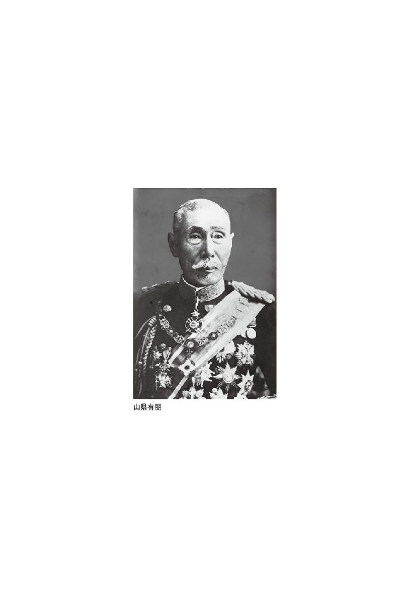
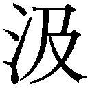
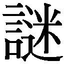
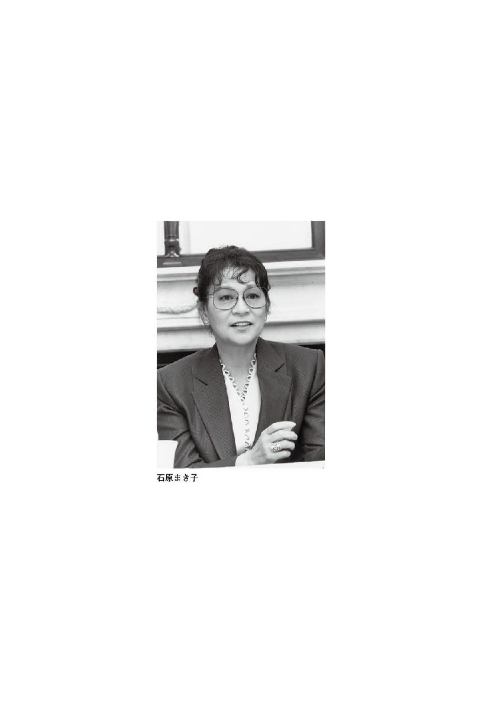
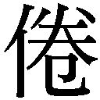
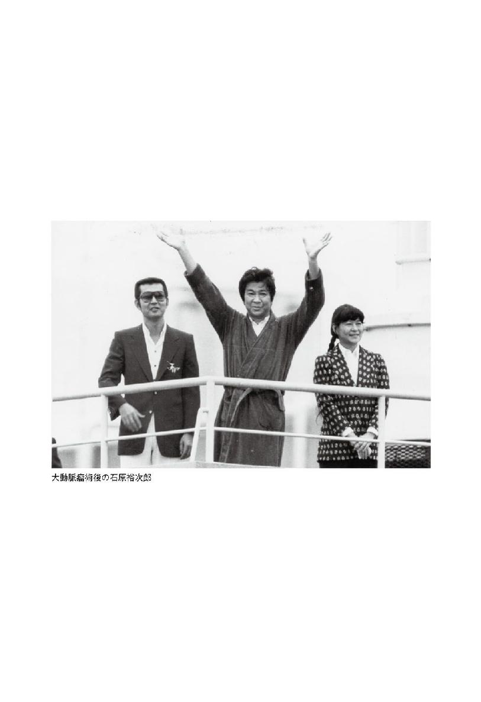
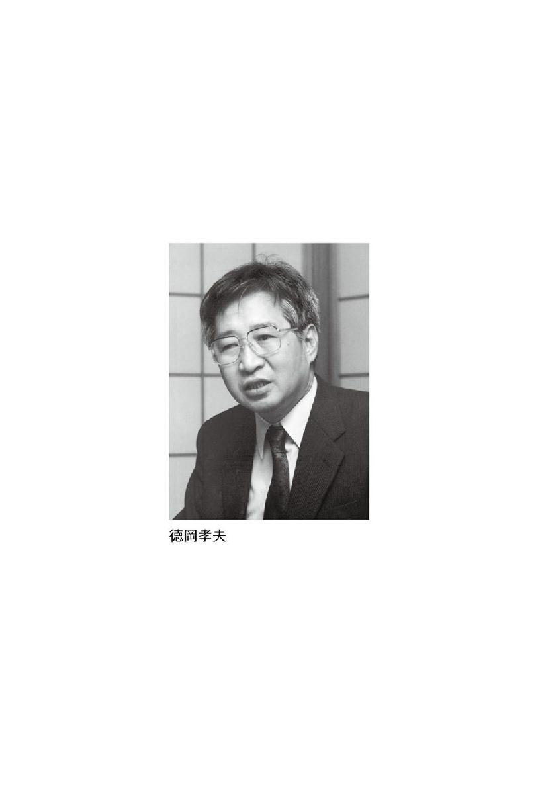

| 「文藝春秋」で読む戦後70年 第二巻 安定成長期から天皇崩御まで (文春e-book) | |
| Unknown | |
| (2015) | |
「文藝春秋」で読む戦後70年
［第２巻］安定成長期から天皇崩御まで
昭和49年 もう一つの田中角栄研究 淋しき越山会の女王 児玉隆也
昭和52年 てんやわんやの騒動記 五つ子の父としての一年間 山下頼充
昭和56年 世界初の試み 文藝春秋編集部より モスクワ市民への直通電話
原稿用紙四枚に走り書きされた 姉 向田邦子の「遺書」 向田和子
昭和59年 世紀の冒険野郎の手記 世界の五大巨峰を征服して 植村直己
昭和60年 日航機墜落、奇跡の生存者 地獄からの生還 日航機墜落被害者
昭和61年 中韓の圧力を受けて 教科書問題を考える 林 健太郎
昭和62年 裕次郎との最後の対話 闘病日記・最後の七日間 石原まき子
※各記事の末尾に付した数字は、記事の初出時を示します。例えば（21・６）は昭和21年６月号の意味です。また、文中の敬称は略し、肩書きは当時のままとしました。

１
昭和の元号は一九二六年十二月二十五日からはじまるが、もちろん歴史は水の流れのようなもので、年表どおりには区切れない。
一九二一年（大正十年）二月十日「宮内省、宮中某重大事件につき皇太子妃の婚約に変更なしと発表」の時点をとりあえず「プレ昭和」としたい。
皇太子裕仁親王（今上天皇）の妃として久邇宮良子女王が内定していたが、久邇宮妃の出身島津家に色盲の血統があるというので、この婚約が適当でないと元老山県有朋は異議を唱えだした。
これにたいして国学者の杉浦重剛は門下の古島一雄・白仁武、それに右翼の頭山満にまで働きかけて山県論を排斥、あくまでも内定どおりにすべしと主張した。山県が 派勢力の宮廷進出をおそれての威丈高の介入と見たのである。じじつ久邇宮家とそれに付いた派は、綸言汗の如しを楯にとり、すさまじい強腰であった。ついには山県を「不臣、朝敵」呼ばわりする宣伝にもなった。
派勢力の宮廷進出をおそれての威丈高の介入と見たのである。じじつ久邇宮家とそれに付いた派は、綸言汗の如しを楯にとり、すさまじい強腰であった。ついには山県を「不臣、朝敵」呼ばわりする宣伝にもなった。
「おれは勤王に出て、勤王で死んだ」
敗れた山県は痛憤して、情報連絡係に使っている松本剛吉に云った。
皇太子妃の「純血論」は皇室に忠なる至誠に出たもので、若いときから勤王に東奔西走したときと変らぬ、しかるにいまやはからずもその皇室を想う至誠によって有朋の命脈が絶たれた、として彼は哭いたのである。
が、もとよりこれは言葉の上だけで、じっさいの目的は派の排除にあった。「皇室の将来を考えるに久邇宮が外戚で何かに干渉しないとは保証できない。これに派が跡押をするようになっては皇室国家の大事であり痛心にたえない」と首相原敬さえもその日記に書いた。
山県も不覚であった。妃の候補者が二、三人のうちならともかく、内定といえばすでに決定と同じである。それを覆そうというのだから無理な話である。それというのも伊藤博文亡きあとは宮中・府中両面にわたり、また軍部には元帥として、大御所的存在で最高の勢力を構築していたから、なにごとでも思うようになると考えていた。
ただ皇太子妃内定をここまでこぎつけた派の隠密な運動に山県が気がつかなかったのは、手抜かりであった。
宮内省の発表が新聞に出て三、四日経つと、山県の住む小田原の古稀庵の門前にビラが撒かれ、それには近日中に不臣不忠の山県有朋の弾劾演説会を小田原御幸ノ浜で催すとあった。山県は激昂して、
「内務省、警視庁などではとても取締りは出来ぬと思うから、陸軍大臣（田中義一）から壮士五十人ばかり借り受けて皆殺しにしてやろうと思う」
と呼びつけた松本剛吉に云った。山県は血迷った。
自治制度や警察制度を創り、巨大な官僚制度を築き上げた山県が、瞬時の激発とはいえ、この問題でいかに深い痛手を受けたかがわかる。
普通には、これを境に山県の権勢も落に傾いたと見られている。だが、彼は元老はもとより元帥、枢密院議長その他一切の地位・礼遇を他から慰留せしめてその地位にとどまった。宮内大臣（中村雄次郎）に責をとらせ、後任に派の牧野伸顕を入れた。が、山県はすでに八十四歳であった。
その年十一月、首相原敬が東京駅で暗殺された。政党嫌いの山県が無能な寺内内閣をあきらめ、直系の寺内を引込めて政友会総裁の原に替えたのは大正七年であった。原は野党の普通選挙要求を抑え、山県との正面衝突をのらりくらりとかわし、米騒動以後の難問題をてぎわよく処理していったので、「原はようやっとる」と山県は陰で賞め、つづけて政局を原に担当してもらいたい意向であった。原が暗殺された報を聞くと、「原は勤王家で皇室中心主義であるのは見抜いていた。頗る残念である」と涙を流した。
山県の人物評価のモノサシは「勤王家」か否かであったが、これは「自己流の好き嫌い」と同じくらいの意味であった。
原の後継内閣に元老西園寺公望へ交渉があったが、西園寺は受けなかった。諫止する者の理由は、原氏の後を受ければ第二の中岡艮一（原暗殺犯人）が出るというにあった。
山県は皇太子妃色盲問題でたしかに勢力を堕した。しかし、それは、「大正デモクラシー」なる民衆運動の力、新聞の弾劾、野党の攻撃、また当時簇生した無産政党の結集による総反撃などといった結果ではなかった。山県を倒したのは、右翼勢力であった。
また倨傲無類の山県をつまずかせたのは皇室関係である。内大臣以外は宮内省のすべてを長州閥の直系官僚でかためた山県も、あまりに近視眼すぎてか、それとも自負のあまりか、禁断の境がわからなかった。
だが、山県の遺したものは生命を保ち、進化すらしてつづいた。民・軍にわたる官僚制度である。軍政は軍部大臣の所管。軍令は参謀総長・軍令部総長の所管。すなわち陸・海の両総長は、軍事用兵に関して、内閣総理大臣や軍部大臣に相談することなく、大元帥（天皇）に直接面謁して報告する慣例。いわゆる帷幄上奏である。これも山県が参謀本部長のときに慣例をつくった（規程はない）。
帷幄上奏ができるのは、天皇に陸海軍の統帥権があるからだ。明治憲法第十一条には「天皇ハ陸海軍ヲ統帥ス」と規定している。規定はこれだけで、具体的な細則がないから、慣例を言い立てたり拡大解釈すると、パワーのあるほうがいくらでも都合のいいことを云う。しまいには軍令が軍政の垣根を越えて口出しをするようになる。「統帥権干犯」は、ロンドン条約非難の口実となり、二・二六事件をひきおこし、戦争惨禍の口火となった。
山県の晩年は失意の人だったが、それは老齢と肉体の衰えのためであった。原敬が斃れた三カ月後の大正十一年二月一日、山県は八十五歳で古稀庵で病死した。
山県の病篤き古稀庵に、「田中（義一）大将来訪」、国葬のことを話す、と『松本剛吉政治日誌』にはある。田中義一は長閥最後の秘蔵っ子である。
だが、田中は「元帥」となるコースを捨てて、政友会に「養子入り」し、その総裁となり、やがて内閣を組織する。
２
関東軍を代表とする軍の出先機関が中央の参謀本部や陸軍省の統制に服していたなら、破滅的な戦争への暴走は防止できたであろう。司令官にその行為が見えたならば、ただちに喚び返して任を解き、責を問うべきである。その第一号の該当者が山県有朋自身であった。
日清戦争のとき、山県は第一軍司令官となって出征、二十七年十月、鴨緑江を渡河して九連城を陥れた。大本営はここで冬営を命じたが、山県はそれを退嬰策なりと一蹴、桂太郎の第三師団に攻撃を開始させた。第三師団は敵中に深く入りすぎて重囲に陥り、三カ月間苦闘した。山県は勅命により東京に召還され、天皇に拝謁して第一軍司令官と枢密院議長とを同時に解職され、監軍という閑職に追いやられた。山県の独断専行が甚だしいために、これ以上彼を軍司令官にしておくと大局的な戦争遂行ができないというので参謀次長川上操六が伊藤博文に泣きつき、勅命召還を乞うたという。
のちの関東軍の独断専行もこのように処分すればよかったのだ。しかし、時代は陸軍の第一の実力者山県を処分した当時とはくらべものにならないくらい陸軍の暴力が強大になっていた。
それでもまだ かながらこれを防げるチャンスがあった。張作霖爆死事件をめぐる「聖断」と田中義一首相である。
かながらこれを防げるチャンスがあった。張作霖爆死事件をめぐる「聖断」と田中義一首相である。
昭和三年六月、国民党の北伐軍に圧迫されて北京から退去する張作霖の乗った列車が、瀋陽付近の満鉄交差点で日本軍に爆破され張作霖は横死した。田中内閣はこれを「満州某重大事件」と称して閣内で処理しようとしたが、元老西園寺公望は、
「かくの如き事実があったとすれば、これを軍紀によって立派にただしてこそ陛下の御面目も立ち、国際的信用も維持することができる。かくの如きことを闇から闇に葬ると、日本の陸軍の信用をますます失墜し、ひいては国家の面目を傷つけ、聖徳をうことになる。かくの如き明白な事理をまるで弁えず、これを闇から闇に葬ろうと努めている連中にも実に困ったものだ。この事柄だけは西園寺も見逃すことはできぬ」
と云い、人をして田中にすすめ、天皇に報告させた。
田中は、西園寺の激励もあって、張作霖爆殺の責任者（関東軍司令官村岡長太郎中将、関東軍参謀河本大作大佐ら）を軍法会議にかけ、この旨を天皇に上奏すると閣議で主張した。閣議は一致して反対し、行政処分で収拾すべきだという白川義則陸相の意見を支持した。閣議のみならず、政友会の党員はみな行政処分に加担した。田中はなおも軍法会議を主張してやまなかった。このころの田中は立派であった。
そのあいだにも西園寺からの田中への慫慂はしばしばであった。
かくて昭和三年十二月二十四日午後二時、田中は宮中に参内した。「作霖横死事件には遺憾ながら帝国軍人が関係しているものの如く、目下鋭意調査中ですが、もし事実とせば法に照らして厳然たる処分を行なうべく、詳細は調査終了次第陸相よりその旨を申上げます」と上奏して退下した。天皇からは「国軍の軍紀は厳格に維持するように」との言葉があった。二十五日、田中は各閣僚に個別に、また二十六日には閣議に於いて総理大臣として決意を告げ、併せて意見を徴したのであった。だが各閣僚は、田中首相がだれとも相談することなく元老と謀って、かかる重要なことを独断で上奏したことを難じた。
昭和三年二月の総選挙では与党の政友会が議席を減らしていた。不戦条約で政府は枢密院にいじめられた。そうした苦労を重ねた末に、張作霖爆殺の責任者を司法処分（軍法会議）とせずに行政処分（予備役編入、停職など）にする方針を陸軍中央から迫られた田中は、やむをえず閣議にはかった。全閣僚異議なく承認した。田中の挫折である。
そこで、四年六月末、田中は参内して、「その後、調査いたしましたが、日本の陸軍には幸いにして犯人はないということが判明いたしました。しかし警備上の責任者の手落ちについては、これを行政処分をもって始末いたします」と上奏した。
天皇は、
《この事件を犯人不明としてその責任者を単に行政処分で終らせたということは、帝国の陸軍の綱紀を維持する所以でないということを御軫念になり、田中総理に対し、
「お前の最初に言ったことと違うじゃないか」
と言って奥に入られてから、鈴木侍従長に向って、
「田中総理の言うことはちっとも判らぬ。再びきくことは自分は厭だ」
と言われたのを、侍従長もまだ就任早々で慣れないから、その陛下のお言葉をそのまま総理に言ったので、田中総理は涙を流して恐懼し、即座に辞意を決して総辞職を決行し、田中内閣は遂に倒れた》
田中が「最初に言ったこと」とは、前年十二月二十四日の上奏のことである。
なお、これ以後、天皇は内閣関係者に直接影響を与える政治的発言を控えるようになったという。
もしこのとき、村岡関東軍司令官と河本参謀とを軍法会議にかけることができたら（両人が作霖爆殺の首謀者であるのは「東京裁判」で明らかにされた）、その後の盧溝橋事件もなかったろうし、関東軍による満州国のでっちあげも困難であったろう。犯人は片端から軍法会議にかけられるからだ。
張作霖爆殺事件で軍法会議をあれほど強硬に突張っていた田中義一の腰くだけも（田中は辞職後まもなく病死）、西園寺が「君側の奸」と狙われるようになったのも、軍・民連繫の右翼暴力の波によった。
天皇は軍紀の粛正を望んだ。ゆえに田中の変節を悪んだ。声色を敢えて動かして彼を叱責された。不興をこうむった田中はいたく衝撃をうけた。しかし、天皇の追及は陸軍大臣に及ばず、また後継内閣にも及ばずして熄んだ。それ以上にわたると、君臣の間の秩序に乱れがくるからである。君臨すれども統治せずという抽象的な言葉を引合いに出すまでもない。この場合は天皇をとり巻く官僚制の秩序である。
創業明治天皇のときは、君臣のあいだはもっと友だちつきあいに近かった。それを引き離して天皇を超権威のきらびやかな玉座に孤立させたのは明治後半になってからである。伊藤博文や山県有朋であろう、とくに山県であろう。これについては、あとで考えることがある。
二・二六事件が起ったとき、天皇が侍従武官長本庄繁に対して「朕の股肱の老臣を殺戮するような凶暴な将校は、その精神においても何の恕すべきものがあるか」「朕が最も信頼せる老臣を悉く倒すは、真綿にて朕が首を締むるに等しい行為である」と語ったのは、その表現はともかくとして、天皇が宮廷官僚の重囲の中に存在しなければならないという本質を衝いている。二月二十六日に「蹶起」した若い将校たちはこれを知らなかった。
二・二六事件からすると、それ以前に起った「桜会」の三月事件や十月事件（ともに昭和六年）は計画者が参謀本部や陸軍省の中級幹部連（局・部・課長以上のエリート）であり、担がれる者が将官クラスであるだけに（宇垣一成大将は途中から逃げ、荒木貞夫大将は謀議に加わらず）、同じ武力クーデター計画でも、天皇官僚体制という求心力の円運動に入っている。
三月事件も十月事件も幕僚たちの杜 な計画で、その破綻は当然だったが、軍部はこの未遂事件を恫喝の武器に利用し、政党の反対を圧し、言論を抑え、経済界を恐怖させ、その末に関東軍をして「満州国」を作らせた。大成功である。この手口を二・二六事件でまたもや使う。
な計画で、その破綻は当然だったが、軍部はこの未遂事件を恫喝の武器に利用し、政党の反対を圧し、言論を抑え、経済界を恐怖させ、その末に関東軍をして「満州国」を作らせた。大成功である。この手口を二・二六事件でまたもや使う。
ただし、二・二六は軍幹部や幕僚連とは関係のない突発事件であり、ことは在京の三部隊の隊付下級将校が兵約千四百余名を率いて三宅坂一帯を武装占拠したことからはじまった。
兵千四百も完全武装で営門から連れ出し、岡田啓介首相を殺害し（義弟を誤認）、斎藤実内府を射殺し、高橋是清蔵相を斬殺し、渡辺錠太郎教育総監を殺し、鈴木貫太郎侍従長に重傷を負わせ、前内府牧野伸顕の泊る湯河原の旅館を襲撃して放火するなど殺戮・破壊行為をして、日本の立法・行政・治安・軍の中心部を乗取ったあと、しかも具体的なプランは何一つ示さず、いたずらに昭和維新の歌を高唱するのみというのは「純真」といわんよりはおどろくべき幼稚ぶりである。奸策だが、桜会の連中はまだ「閣僚名簿」をつくっていた。
いわゆる決行将校らも、たとえば首謀者の磯部浅一などは「首班と閣僚名簿」を作りたかったが、これを条件の如くに提示すれば、大権私議になる。すなわち統帥権干犯となる。いっさい口にできないのだ。
「統帥権干犯」は北一輝の造語といわれ、皇道派はこれを矛にして政府と陸軍部内の統制派を攻撃してきた。
この自縄自縛。
せいぜい、自分たちは真崎閣下にお願いしたくあります、と云うのが精いっぱいであった。あとは「大御心に待つ」である。
反乱将校らは、恃むべからざる者を恃んだ。陸軍の長州閥は、田中義一でタネ切れとなり、派に対抗するため佐賀県出身の真崎甚三郎にあとを引きつがせた。真崎は荒木貞夫（東京出身）と組み、閥の上原勇作元帥派と対抗する。真崎は参謀次長になる。総長は閑院宮載仁親王であった。宮さま参謀総長というので、真崎「大」次長は専横の振舞いが目立つ。のちに真崎が三長官会議（陸相・参謀総長・教育総監）で教育総監をクビになる遠因は、「大」次長時代にあった。また、真崎の後任の罪のない渡辺教育総監が反乱将校によって「皇軍にあらず」として殺害される禍根の一つもここにあった。軍事参議官となった林銑十郎前陸相は第二次の襲撃目標にされた。参謀総長は宮さまだから、さすがに手出しができぬ。しかし、閑院宮邸は厳戒をきわめたと当時の新聞報道にもある（閑院宮は病気で小田原に静養中）。してみれば二・二六の決行の側面には、真崎の私怨を、その私淑者らが晴らした点もあるのを否定できない。真崎罷免をも統帥権干犯と見たのだ。相沢事件もそれで起った。
由来、佐賀出身人は言葉で人をひきつけ、それによって後輩が集まるが、その言には卓絶した展望がない。思いつきが多い。安請合いもある。大隈重信にその傾向があった。真崎もその型である。
二十六日朝（午前十時過ぎ）、伏見軍令部総長宮が参内した。目的は、幕僚派（討伐主張）による戒厳令の阻止の懇請にあったらしいが、天皇の言葉によって、その懇請もあいまいになった。伏見宮博恭王は心情的に皇道派寄りである（海軍としてははじめから反皇道派）。叔父の閑院宮載仁親王とは対蹠的な立場だ。（閑院宮第五代愛仁親王に男子なく、伏見宮第二十代邦家親王の第十六子載仁親王が閑院宮家を嗣ぐ。博恭王は貞愛親王の子。なお、伏見・閑院両宮家は「世襲親王家」）
真崎は、伏見軍令部総長宮の参内の車に、親友の加藤寛治（後備役海軍大将・元軍令部長。ロンドン条約を非難する帷幄上奏で更迭）と共に同乗して宮中に向ったのだが、その前に、決行将校らには「お前たちの気持はよーくわかっとる」と云い、いつでも大命降下があってもいいように勲一等の略綬を佩けた軍服の胸をそらせた。
しかるに宮中では天皇に拝謁も許されず、供待ち部屋のような場所にいて伏見宮から天皇の言葉を聞いたとき、カンのいい真崎は、これはもうダメだと感じたであろう。以後の真崎は自分が火の粉をかぶらぬよう、ひたすら決行将校の鎮撫、説得にまわる。
天皇が決行将校を「逆徒」ときめつけ、「朕自ら近衛師団を率い、此が鎮定に当らん」と本庄侍従武官長に云ったのは二十七日となっている。しかし本庄はその註として、「蓋し、戒厳司令官（香椎浩平中将）等が慎重に過ぎ、殊更に（討伐を）躊躇せるものなるやの如くに、御考え遊ばされたるものと拝されたり」と書くが、夫子自らも皇道派である。
天皇は二十六日に二、三十分毎に本庄を招いて反乱部隊の鎮圧を督促し、二十七日も同様であった。しかし、本庄はこれを握りつぶしている。
この天皇による「反乱部隊鎮圧の督促」のことを本庄が二十六日にもすぐに陸軍大臣、戒厳司令官らに打ちあけ、また杉山参謀次長にもはっきりと伝えておけば、「大臣告示」などヌエのようにわけのわからぬものをめぐって二十六、二十七日の二日間が空転するはずもなかった。本庄の「不臣」の罪は大なりである。
その本庄にしてからが、関東軍の独断専行の責任者として本来は処罰されるべきものだが、「満州国」建国の功で男爵となり侍従武官長となった。天皇官僚体制の求心運動に密着しているからだ。
ところが、決行将校らはこれに気づかず、ただ動機の純真を信じて、何ら官僚体制側と連絡をとらず（かれらを腐敗分子と考えたから）、求心運動とは逆の遠心運動となり、その分離の果てが宇宙に飛散した。
そうしてそのエネルギーで利用されたものは、戦争を用意するために国内への脅迫としての武器である。
官僚体制の特徴の一つは、集団制にある。責任の所在の不明確な点だ。そのポストにある限りは責任を持つが、ポストが変ると、後任者にそれを任せる。引き継ぎはするが、それ以上のタッチは分限を超えるものとしてさしひかえる。かくて人事異動のたびに責任の所在は転々とし、曖昧となり、拡散し、または変質する。
戦前の軍部天皇制にあっては、天皇が統べているが、要所は司々に委ねている。その司々が絶えず変移する。方針が変異する。その責任の所在は不明である。統帥する者は困惑を極めざるを得ない。
田中内閣の末期に起った張作霖爆殺事件、二・二六事件に見られる天皇の発言は 明である。だが、日中戦争、太平洋戦争と進むと、天皇の発言は伝えられなくなってしまう。軍の重圧が襲いかかったと見るべきだろう。
明である。だが、日中戦争、太平洋戦争と進むと、天皇の発言は伝えられなくなってしまう。軍の重圧が襲いかかったと見るべきだろう。
日中戦争、日米戦争と戦争が拡大するにつれ、軍部官僚の厚みがふくれ上がって、天皇の意志を圧してしまう。「お前がこの前に云ったことと今日上奏することとは違うじゃないか。お前の云うことはちっともわからぬ。話をききたくない」「朕自ら近衛師団を率いて（逆徒の）鎮圧に当らん」といったような天皇の自発的な発言はまったく聞かれなくなる。そこには部下幕僚らの報告を聞き、裁可を求める書類に「可」の印を捺す姿があるだけである。
「長い間、エキスパートから総合的に正しい教育を受けられていますので、すべてのことについて何事にもとらわれることなく大局的に掌握なされているのです。これはほんの一例ですが、昭和二十年ごろは本土決戦に備えるため、実に数多くの部隊が編成されました。多いときには一日に十六個連隊も編成され、十六旒の軍旗親授式が行なわれたことがあるほどですから、その編成の書類など、ずいぶん部厚なものになっていましたが、その書類を武官府に持ってきた参謀本部や陸軍省の主任者から説明を聞いて、陛下のところに参りますと、その厚さ十センチほどもある書類をひょいとあけられて、ここはどういうわけか、とお尋ねになるのです。
ところが、それに対して答えられないのです。またひょいと開けてお尋ねになる。また答えられない。とうとう四つは疑問を残しましたが、これには驚きました。大急ぎで武官室に帰り、主任者の説明を聞いて確かめ、再び上奏すると『ああそう』と言われて『可』の御印をポンと捺されるのです。大事な点は実にピシリとおさえられているのです」（当時の陸軍侍従武官の談話）
いかに書類上の不審点を天皇が質問しようと、その作戦企画は幕僚の立案したものであり、大元帥には拒否権がないのである。役員会に付托した稟議を裁量する株式会社の社長ほどの権能もない。
天皇は長い間、軍のエキスパートから総合的に正しい教育を受けられた、というが、正しい教育とは軍部の作製した戦争鼓吹の教育ではないか。
本土決戦に備えて、一日に十六個連隊もが編成されたとあるが、二百五十七の連隊（歩兵一九〇、戦車一四、野砲などの砲兵三九、工兵一四）が本土決戦に備えてその年に作られた。米軍に対抗できる武器らしいものは何一つなく、残された国民を道づれに軍は自決を考えていた。それにたいして大元帥は書類上の細かな不審点だけを質されたのであろうか。元侍従武官の言は、そら恐ろしくて、信用したくない。
軍部官僚制は、その責任の中心のない点で、その拡散せる上で、末期が近づくと、戦争の停止、引返しの制動力を失っていた。
それに加えて暴力（テロ）があった。
二・二六事件の暴力クーデターを戦争への道に利用した軍部は、戦争が行き詰まり、これが打開に苦慮することになると、こんどは責任を回避して逃げまわる一方、戦局収拾派（和平派）は軍部内に入りこんだ暴力に怯えなければならなかった。
日本の右翼暴力はドイツやイタリアのように独立した政党を持っていなかったため、いきおい軍の一部と結托した。
井上日召の血盟団は、はじめ海軍士官らと結び、右翼浪人らが参加した。井上準之助、団琢磨など財界の首脳を斃した「一人一殺」は日召の同志によって行なわれた。
つづいておこった五・一五事件（昭和七年五月十五日）は、海軍士官と陸軍士官候補生らに 城県の農本主義者橘孝三郎の愛郷塾生らの参加によるものだった。首相犬養毅を射殺した陸海軍人は反乱罪に問わるべきなのに、公判は陸軍側の応援で進行し、判決は禁錮四年であった（海軍側は禁錮十～十五年）。両事件とも、「桜会」事件と同じように背後に右翼の理論家大川周明がいた。
城県の農本主義者橘孝三郎の愛郷塾生らの参加によるものだった。首相犬養毅を射殺した陸海軍人は反乱罪に問わるべきなのに、公判は陸軍側の応援で進行し、判決は禁錮四年であった（海軍側は禁錮十～十五年）。両事件とも、「桜会」事件と同じように背後に右翼の理論家大川周明がいた。
八年十二月、陸海軍省は、「軍部批判は軍民離間の行動である」と声明を出した。
外から陸軍と手を組んでいた右翼勢力は、戦局が進むにつれて陸軍部内に浸透し、ついに軍人そのものがテロ集団化しようとした。かれらは、戦争を中止しようと試みる派にたいしては暴力でこれを阻止しようとした。このことは敗戦直前に、一部の武装部隊が宮中に入り、ポツダム宣言受諾の天皇放送「玉音盤」を捜索してまわった一例をあげれば足りる。
３
八月十五日、「玉音」放送によって、国民は泣いてひれ伏した。軍の道づれにならず、生きるよろこびにひたった。その三十日、マッカーサーは厚木飛行場で軍用機からパイプをくわえて丸腰でタラップを降りてきた。四カ月前は沖縄に上陸して日本軍と戦争したというその本土にである。彼らを迎える国民は羊のようにおとなしかった。これが三年半ものあいだ闘志をむき出しにして戦った日本人であろうか。
まだある。中国はじめ「占領地」から数百万という兵士がなんの抵抗もせず、現地での武装解除に応じて、混乱なく本国へ引揚げたことだ。それは司令官の命令ではない。「玉音」を聞いたからである（雑音で聞えなくとも、あとで確認はした）。もしそれが司令官の命令だったら、かならず司令官は殺され、反乱が起きた。
マッカーサーの天皇制への驚異は、それの占領政策への利用を思いつかせた。占領政策を遂行するためには、まず日本国民をアメリカになじませねばならない。そんなことは急速には不可能だ。だいいち、その教育には厖大な人員とカネと時間がかかる。天皇制はしばらくそのまま残し、その周辺の天皇制官僚を崩壊させて、占領政策に適くようなカイライ政権をつくらせたほうがベターである。そうすれば、アメリカから派遣する要員の数も要らないし、だいいちカネがかからない。方針は決定した。二十一年六月、極東裁判の米側キーナン首席検事は「天皇は裁かず」と言明した。
二十一年二月から、天皇は中折れ帽子、背広服姿で全国をまわられた。敗戦にうちひしがれ、食糧欠乏に苦しむ国民を慰め、勇気を与えるためであった。国民はひざまずき、頭をたれ、あるいは歓呼して天皇を迎えた。
これは明治十四年に明治天皇が東北地方を巡幸したのと似ている。最後まで維新政府に抵抗する東北諸藩を官軍が徹底的に討伐し、荒廃化した。ために東北の人心を鎮撫するこの行幸となった。その還幸に際し、参議大隈重信が他の参議に先んじて単独に自己の「憲法私案」を天皇に上奏したというので物議をかもし、十四年の政変（大隈罷免）の一因ともなった。
敗戦翌年の天皇の全国行脚の最中に、新憲法によって「天皇は象徴」と規定された。
天皇制廃止はソ連（極東委員会理事国）が最も強く主張した。アメリカの世論調査でも七一％が廃止に賛成であった。中国（国民政府）は天皇制の存否は国民の投票によるべきだとしていた。「天皇の象徴と戦争放棄」の新憲法は総司令部の民政局案で、これでないとソ連は説得できないとマッカーサーは幣原喜重郎首相に突きつけた。それまで日本側では松本烝治案などいろいろあったが、いずれも明治憲法に恋々たるもので民政局に一蹴された。幣原はこれを呑んだ。
天皇制は、ともかくこのようにして残された。よって「国体は維持された」と政府は国民に説いた。だが、主権が天皇にあってこそ国体である、と国民は首をかしげる。そこで吉田茂首相は、現実には国体は変らぬのだとのたてまえをとり、新憲法を旧憲法的感覚で解釈し運用しようとした、という。
現在の日本は経済大国になった。貿易収支の黒字では世界第一。アメリカから憎悪の対象になっている。
「経済のことはこの池田にお任せください」と池田勇人首相が胸を叩いたのは三十八年のころであったか。今日の黒字の礎が彼にあったのではない。二十五年におこった朝鮮戦争である。朝鮮戦争は「特需景気」として日本の経済界を潤した。だが、それはアメリカ軍の基地として日本にドルが落ちただけだろうか。
敗戦によって徹底的に打ちのめされた日本が今日のように立ち直り、須臾にして「経済大国」に成長したのは世界の驚異であり、日本国民自身にとってもその原因がよくつかめない。これまで出た評論を読んでも、一口でよくこれを説明し得たものはなかったように思う。
現在の日本の経済繁栄は、昔のように原材料を外国から買って国内で製品化し（第二次生産）それを輸出するのではなく、電子工学関係のような先端技術のそれである。トランジスターからはじまり半導体にいたるまで、もともとはアメリカ生れのもの、それを日本が技術を導入して現在はアメリカを脅かすまでになった。
だが、いきなりそうなったのではなく、その中間に、朝鮮戦争で日本がアメリカ軍の「補給 」であったことを置けば、この段階がきわめて自然に考えやすい。
」であったことを置けば、この段階がきわめて自然に考えやすい。
戦争は先端技術を駆使する。あるいは研究したものを実験に使用する。米軍の「補給」化した日本の電気関係の産業は、その修理、部品の下請け工場となり、米軍の機具や武器を思うままに研究することができた。ジープの修理から自動車工業が発達した。
電機工場の技術者のなかには敗戦前の陸海軍の技術士官もいた。盛田昭夫『わが体験的国際戦略』から例を見る。
《そのころ、陸海軍と民間の研究者から成る軍の科学技術研究会というものがあった。私は熱線探知で飛ぶロケットの開発をしていた分科会のメンバーであった。われわれはブレーン・ストーミングなどを通して、独創的で大胆な発想をするのが任務であった。（略）だが、成果は余り上がらなかった。われわれが開発を試みていたのと同種のアメリカのサイドワインダー・ミサイルが完成されたのも、戦後ずいぶん経ってからである。（略）
このグループで井深（大）氏の果たした役割は大きかった。彼は日本測定器という会社の常務だったが、そこで完成された強力な増幅器は、地磁気の微小な攪乱を感知して、水面下三〇メートルまでの潜水艦を発見できる装置に使われていた。飛行機からぶら下げて使用するこの装置の心臓部が井深氏の増幅器で、毎秒一、二サイクルの非常に緩慢な周波を感知し、これを増幅可能な六〇〇サイクル前後まで上げるという高性能なものであった。この装置は実地試験中、台湾付近で敵の潜水艦二十六隻を発見した、と何かで読んだことがあるが、実戦配備ができるようになったころには戦争はすでに末期で、これを使うための飛行機が不足していた》
富士通社長山本卓眞氏の話。
「私は戦時中陸軍航空部隊にいた。まだ日本が勝っていたころＰ40という米陸軍戦闘機を捕獲して、それに乗ったことがある。おどろいたのは、まったく油洩れがしなかったことだ。それほど性能のいい機ではなかったのだが、そんなことより油洩れのないほうがすごい。当時の日本の機は飛んでいるうちに油が洩れて航空服も真黒になるくらいだったから。これ一事をとってもパッキングの精密加工、均一な品質管理の技術がわかった。航空機は先端産業、コンピューターと同じでそれを支える基礎産業がないと駄目。悲しいかな戦前の日本にはそういう裾野がなかった」
敗戦直前の八月八日、米内光政海相は保科善四郎軍務局長を呼び、密かに「海軍の技術は日本で最も優れている。この技術を、戦後再建しようとしている会社に入れ、大きな力になってもらうよう努めよ」と指示した。
保科はこの指示どおりに、海軍と密接な関係にある代表的なメーカーのトップに面会、「戦後、海軍の技術者を貴社の再建に役立たせるため、ぜひ採用してもらいたい」と申し入れた。その結果、一社を除き、異論なく応じてくれたという。
朝鮮戦争で、日本が米軍の「補給」として学んだのは、大量生産の方式であった。それは「精密な設計、精密な加工、均一な品質管理技術」などであった。そしてコスト安である。
これは日本の産業界のたちまち採用するところとなった。これほど敗戦後の日本の需要にぴたりと適応したものはない。のちに電子技術が軍用から民間に応用されたように、大量生産方式は幅広く国民生活へ流れてゆく。朝鮮戦争は敗戦から五年目、国民はとにかく「普通なみの暮し」をとり戻すことを求めた。食料、衣類、住宅である。食料は配給による一日二合五勺のコメかスイトンか、農村に買い出しに行くサツマ芋かヤミゴメか、に代るにパン食となった。衣類は簡単服からはじまり、各種の既製服となった。住宅はアパートとなり、それがのちのプレハブ式建築の開発となった。まだアメリカの下層市民生活であった。
しかし、戦後のインフレを抑えるためと称してドッジ（アメリカ経済公使）の指導した極端なデフレ政策（ドッジ・ライン）で企業の倒産が続出し、 に失業者の群が
に失業者の群が れた。国民は敗戦に次ぐこの窮乏の苦しみを味わう。
れた。国民は敗戦に次ぐこの窮乏の苦しみを味わう。
そこへ降って湧いたような朝鮮戦争であった。「特需景気」は例によって一部の特権階級を潤したが、一般国民は飢餓と襤褸の生活から別れを告げられただけでもほっとした。「絣のワイシャツよ、サヨナラ」の言葉さえあったという。
生産工場のために二十七年から三年間は設備投資が行なわれた。だが、戦争が終ればすぐにむ「特需景気」から受けた刺戟に、もともと日本の経済の底力が加わって、経済が伸びただけではない。設備投資の対象構造が、鉄鋼などといった従来の基幹産業から、エレクトロニクスの先端技術へ移っていった。それというのも、この分野の産業が自動車と共に輸出をふやしつづけているからである。
戦前から日本の陸海軍が持っている通信技術にレーダーがある。敗戦後、ＧＨＱによってこれが禁止されなかったのは、ドイツの場合と違い、技術の程度が低いと見られたからである。
だが、アメリカで開発したトランジスターのことは日本の技術者はまったく知らなかった。
一九四八年六月にアメリカのベル電話研究所が開発したもので、それも所員二名が研究している途中の偶然の発見であった。ゲルマニウムという半導体結晶の鉱石の上に二本の針（エミッター針とコレクター針）とを近接して立てると、その間の電気回路の信号が増幅されて出てくる。この理論は発見者にもわからなかったが、同所で研究されて突きとめられるようになった。
日本の電気技術関係者にはすぐこれが直接に伝わったのではなく、まず として入り、次にＧＨＱの民間情報教育局（ＣＩＥ）の図書館にきていた科学雑誌の記事で知った。
として入り、次にＧＨＱの民間情報教育局（ＣＩＥ）の図書館にきていた科学雑誌の記事で知った。
そのあとは日本の学者や研究家が独創的に造りはじめた。ゲルマニウムは原石が少なく、非常に高価なものだが、電気通信研究所は二十八年に国産接合型トランジスター第一号を完成させ、その試作品のトランジスターを使ったラジオ、電蓄、補聴器を東京・日本橋の三越で展示した。また電気試験所では三十年に単結晶づくりに成功した。ゲルマニウムも大量に安く入手できるようになったし、シリコンも開発された。
その後のことは、アメリカの企業の技術を導入してラジオにトランジスターを入れたり、テレビに入れたりしている。企業間の競争もあって、アメリカの特許を買った技術もあれば、日本で開発した技術もある。
ＩＣ（集積回路）が小形化の要請から発達したことはだれでも知っている。これも第二次大戦の航空機の戦いの経験からで、その電子装置（レーダー、電子航法、自動制御など）が航空機の四〇パーセントを占めるようになった。そこからその小形化、軽量化が重要なポイントとなった。すべては軍用の必要から出発した開発である。
日本の半導体ＩＣ技術は、トランジスターと同様にその初期にはアメリカの事情がよくわからず、暗中模索の状態だったが、しだいにその技術を知るようになって電気関係のメーカーがこれを製作するようになった。なかにはアメリカのメーカーと提携する社もあった。それが昭和三十七、八年ごろだというから早い。朝鮮戦争から十年ちょっとしか経っていない。
三十九年一月に米国の半導体メーカーのＴＩ社が一〇〇パーセント出資のＩＣ製造の子会社設立を日本政府に申請したことから、日本側メーカーの大騒ぎとなった。が、これは結局、ＴＩ社が折れただけでなく、日本側に「特許・技術戦略」を教えてくれた。
《〝産業のコメ〟といわれ、技術革新の最も激しい半導体分野において、いまや日本は米国を追い抜きつつある。一九八四年のわが国のＩＣ生産高は一兆九七三九億円、前年比七三・二％増までふくれあがり、二兆円の大台にあと一歩と迫った。これは世界のＩＣ生産高の三六・八％（一九八四年）を占めている。（略）
わが国の半導体産業がここまで成長したのは、幼児期にＴＩ社のキルビー（キルビー特許）旋風に巻き込まれたわが国企業が、ＴＩ社の特許・技術戦略に多く学び、それを乗り越えたからだともいえる》
「特許・技術戦略」の内容は、読んでも専門外の筆者などにはわからないし、あまり興味もないが、ただ、こんなことを教えたアメリカの企業はいまになって日本人の「科学的能力」に驚嘆し、ホゾをかんでいるのではなかろうか。
それというのも、昭和十四年のころから開墾した裾野の耕作地があったからである。
４
山県有朋は明治中期から大正末期にわたって日本に稀有の官僚国家体制をつくりあげた。彼によれば帝国大学は「国家須要の人物を養成する」教育機関であり、それは内治に役立つ法科を主眼とした。
陸海軍人養成には、陸軍幼年学校・陸軍士官学校・海軍兵学校・陸軍大学校・海軍大学校を置き、早くから一般人の教育と区別した。これをもって軍事専門職とした。したがって兵科が「本科」であり、技術将校は「特別科」であった。地位は「本科」に従属して視られた。
東京帝国大学法科卒の官僚は政府の行政機関を支配し、陸軍大学校卒の幕僚は陸軍を支配する。山県の長閥が頂点にいるから、とくに陸軍ではこの傾向が強い。その体制が敗戦によって一挙に崩れ去った。
戦前の天皇制で固められた重苦しい官僚制が消えて、国民は自由と解放感にひたった。だが、ドッジ・ラインの解消から日本経済のゆるやかな立ち直りという手順では、この解放感はいっぺんに身にこなかったろう。隣邦の不幸にたいしては申しわけないことであるが、朝鮮戦争の「特需景気」がなかったら、その自由さは感じられなかったろう。
官僚体制の崩壊をもっとも享楽するのは技術の分野である。そこには官僚による統制もなければ規制もない。また奉仕すべきものもない。奉仕するのは「技術」そのものである。芸術家が「美」に奉仕するように、哲学者が「哲理」に奉仕するように、科学者は「真理」に奉仕し、技術の開発をよろこぶ。
たしかに「戦争」は兵器の進歩を促すために、科学・化学の開発を伴う。それは技術者にとってはカネに糸目をつけないで、思う存分に研究させてくれる軍がスポンサーだからだ。愛国心もあろうが、技術者には研究心と自己の技術の伝播とが何よりの使命感である。
中世に稲富直家（伊賀守。入道して一夢理斎）という砲術（鉄砲）の名人がいた。豊臣秀吉の命で細川忠興に仕えて師範となる。関ヶ原役が起ると忠興夫人の護衛であったが、石田三成方に属する直家の弟子どもが稲富流の砲術が廃れんことを惜しんで走をすすめた。直家は忠興夫人の自殺を見捨てて逃亡した。忠興怒って直家を捜索し、これに危害を加えようとした。徳川家康は直家を救い、直家は家康・秀忠二代に仕え、もって稲富流砲術をよく諸家に伝えたという。技術者には東西両陣営がないにひとしい。
現在では、カネを潤沢に使って先端技術を研究させてくれるところは軍に代って企業である。企業には、それは利益を増幅させるための投資である。投資である限りは、技術者の要求する条件にはどのように費用がかかろうと、いくらでも応じる。企業間の開発競争が激しければ激しいほど、技術者の研究心も燃えるから、企業の経営者はそれを利用して、研究しやすいように設備投資をする。
だが、技術者としては、これをもって愛社精神があるとか、あるいは資本主義に奉仕しているとかいった意識は持っていないにちがいない。要は、研究にカネを注ぎこんでくれるからその企業に居るといったていどではないか。その社の方針が自己の研究方向とズレてきたら、好遇も魅力は失くなるだろうし、他に条件の合う企業から誘いがあれば、そちらへ移って行くだろう。
そのばあい、いままで在籍していた企業が同業へ移る研究者のデータ記録の持出しを禁じるというのは当然で、その業績は研究者のものでも、そこにいたるあいだの投資は企業側である。当人の給料、協力したスタッフの人件費、資材費、設備費などだ。持出しを禁止された研究者の憤慨には同情できるが、多少筋が違うようである。
競争する企業間で新しく開発した製品の発売を通産省に認可を求めたとき、係の一役人が容易にこれを認めようとはせず、かえって妨害の態度に出た例を、ある本はあげている。それには、暗にその役人の背後に強力な競争会社が付いていたことをほのめかしている。
役人の許認可権は官僚全盛時代の遺物である。許認可権の範囲は相当に縮小されたが、まだまだ経済省庁には多く残されている。役人の権限の最後の砦である。許認可権がある限りは、小にしては地方自治体の汚職も減らない。
企業が、たとえその利益追求のための投資とはいえ、技術者に快適な研究条件を夢の国のように与えた結果、大学院に残って助手・講師・助教授・教授の旧来の「学者の道」を希望する者ばかりではなくなってきた。研究費の点では、文部省の予算と企業の投資とは比較にならない。研究者にとっては、学者の肩書よりも研究が存分にできる環境に身を置きたいであろう。エレクトロニクスの先端技術の研究に関する限り、象牙の塔は低く見え、「国家須要なる人物の養成所」は民間企業にあるかのようである。いまは、企業の先端技術の研究者が各大学に講師として出講する現状である。
しかし、その下地は明治中期からやはり学界で培われていた。慶応元年生れの肥前大村藩士の長岡半太郎が帝国大学理科大学助教授時代に磁気歪み現象の研究で理学博士になったのは明治二十三年。二十六年ドイツに留学、三年後に帰国して教授、三十六年には土星型原子模型を発表、のちのラザフォード＝ボーアの太陽系原子模型の先駆をなした。また鉄鋼・地球物理学の各分野で活躍した。のち大阪帝国大学初代総長となった。藤岡由夫など多くの弟子を育成した。
かならずしも隆盛とはいえないまでも、とにかく明治いらいの科学分野にはこうした裾野を日本は持っている。（あとでふれるが、これが昭和十四年ごろになって、ようやくひろがる。）
それならば、これを軍事力に応用してもよさそうなものだが、山県の考えはもっぱら兵員の増加にあった。軍部大臣が軍備拡張案（師団増設など）の予算を提出して議会と衝突したのはこれがためである。
山県は明治二年六月、西郷従道らと欧州巡遊に出発したが、ロンドンからパリに渡り、ベルギー、オランダを通ってプロイセンに入った。普国はいまだ統一ならず、ベルリンはパリにくらべるとあたかも地方の小都会であったが、その国境に入ると山県はその「尚武の気象旺盛なるを目撃し、他日其の侮るべからざるものあるを看破」した。「我か車しはしとゝめよ雲雀なく 野原もきよし夕月もよし」と彼は得意の和歌を詠んだ。じつは普仏戦争のはじまる直前で、宰相ビスマルクはフランスに対し戦争準備中であった。
明治二十一年、山県は第二回の欧州旅行に発った。こんどは目的をもった視察だった。プロイセンはウイルヘルム一世のもとにドイツ帝国に統一され、日本の陸軍はフランス式を捨ててドイツ式を採用した。そして地方自治制度もドイツ式をとり入れることにし、ドイツの法学者グナイストらにその講義を聞くことになった。グナイストは明治十八年にベルリンにきた伊藤博文に君主主義的憲法論を講義し、伊藤はこれによって憲法草案のアイデアを得た。
このとき山県は、参謀総長のモルトケに会った。モルトケは彼に云った。「日本は遠い東洋の国だから将来ドイツの脅威になるとも思えぬので、こっそり教えてやろう。それは軍事予算の審議権だけは議会に与えてはならぬことだ。これを議会に握られたら、必ずホゾをかむことになるぞ」
伝えられている話なので、山県の伝記などには出ていない。が、いかにもモルトケの云いそうな言葉である。もし、これがほんとうだとしたら、師団増設で議会と衝突するたびごとに、山県はモルトケの「忠告」を思い出したにちがいない。ドイツも科学の国だが、当時の統一ドイツは領土拡張政策に急で、兵力増強が主体であった。
これは想像の域を出ないが、政・軍の制度をドイツに学んだ山県は、天皇の権威の形成にはフリードリヒ大王に範をとったように思われる。大王の父はドイツ陸軍の始祖として士官学校を建てて専門の軍事知識を備えた将校を養成し、傭兵を徴兵制にして常備軍の中核とするとともに、官僚制度を整備して絶対主義をとり、重商主義をおしすすめた。この絶対主義官僚制度を受けつぎ、その頂点にあったのがフリードリヒ大王であるのを考えれば、明治天皇の神権化は山県によると考えてよかろう。
大正天皇は山県がおそろしくて、山県が参内すると聞くと、やたらと下賜品を与えて追払われたという。
山県の創始した十九世紀ドイツ式軍備が兵力だけに置かれ、それをまた軍部が継承したため、こんどの近代戦では敗れた。日中戦争の次に、アメリカと開戦するときは米軍には科学兵器があるのでわが方にも科学者を養成する必要がある、と遅まきながら気づいた。
技術者の大量養成は国家の急務となり、昭和十四年には官立高等工業七校を新設、名古屋に理工学部と医学部の帝国大学を開設した。さらに昭和十六年一月、企画院で緊急会議が開かれ、東京帝国大学に第二工学部設立を決定した。
昭和十七年四月、千葉県弥生町の原野に学生数最大の東京帝国大学第二工学部が誕生した。一学年定員四二〇名、昭和二十七年廃部となるまで、二五六二名が卒業するが、工学部志望者は、第一か第二かの選択を許されず、質が均一となるよう機械的にふり分けられた。
この軍需のための国策によって、技術者の裾野は広がり、戦後の技術大国を準備したともいえる。新設東京帝大第二工学部の自由奔放な雰囲気の中からは、日本の技術革新のリーダーが輩出している。富士通・山本卓眞社長、日立製作所・三田勝茂社長、日産自動車・久米豊社長、鹿島建設・石川六郎会長、ファナック・稲葉清右衛門社長、ソニー・森園正彦副社長など。
想えば長岡半太郎以来道長しの感がある。この道は木陰の下のように地味であり、光が乏しかった。それが明りさすところに出たときは十日の菊どころか、はるかに時期を逸していた。けれども、それが現在日本の先端技術の下地となっているのである。
いまのソ連はミサイルや宇宙兵器などは発達しているが、その分野だけが突出していて、科学に裾野のひろがりがないという。これはだれしもが云うことである。ソ連や東欧圏の全体主義は、その絶対主義において、極端な官僚主義のマイナスが裾野の狭さに作動しているような気がしてならない。曾つての明治官僚体制に輪をかけたようなものだ。
この補足を日本からの輸入に求めようとすれば、東芝機械の輸出のように「ココム違反」と呼ばれて、神経質なアメリカの懲罰を受ける。
最近のソ連のペレストロイカは、官僚体制に風を入れて、おそまきながらこの弱点を克服しようとするにあるような気がする。
（63・６）
参考文献一覧
（１）『日本史年表』（岩波書店）
（２）『原敬日記』（福村出版）
（３）『大正デモクラシー期の政治──松本剛吉政治日誌』（岩波書店）
（４）藤村道生『山県有朋』（吉川弘文館。人物叢書）
（５）原田熊雄述『西園寺公と政局』（岩波書店）
（６）本庄繁『本庄日記』（原書房。明治百年史叢書）
（７）遠山茂樹・今井清一・藤原彰共著『昭和史』（岩波新書）
（８）中川靖造『海軍技術研究所』（日本経済新聞社）
（９）中川靖造『日本の半導体開発』（講談社文庫）
（10）嶋本久寿弥太編・技術戦略研究会著『特許戦争』（東洋経済新報社）
（11）『公爵山県有朋伝』（原書房。明治百年史叢書）
（12）今岡和彦『東京大学第二工学部』（講談社）
二重のドアの奥の女性
東京都千代田区平河町の『砂防会館』は、建物自体これといった特徴はない。だが、一階入口に示された入居者の表示を見ると、光と影の交錯しあう梁山泊。間伝えられる金権政治の、中枢機能がフロアーを占めている。
二階に中曾根派の『新政同志会』、三階に田中派、四階に中曾根康弘の個人事務所。その三階のエレベーターを降りると総理番記者の控え室で、彼らといえども、この先の廊下を奥に進むことは容易ではない。右手の『七日会』は、総裁派閥田中派の本陣、向いの部屋には『田中事務所』とある。そこから奥は、廊下そのものが二カ所で遮され、まず一枚めのドアの内側は田中角栄の領袖、陣笠とりまぜて一堂に会する大部屋である。
縦に長い部屋に二列に並んだテーブルは、端から端までおよそ十数メートルはあろう。テーブルをはさんで並んだ四列の椅子は、田中角栄を総理・総裁に戴く議員たちの尻を乗せて、クッションの柔らかさに定評があり、上座に位置する田中の声が、下座の端まで届くには、相当の声量を必要とする。さて、廊下をさらに進んでつき当る二枚めの扉の向うは〝奥の院〟である。めったなことでは足を踏み入れることができない。部屋は三つに分れている。最初は『越山会』事務所で、開けると衝立が目隠しをし、内側に七個の机がある。七個のうち六個は互いに向いあい、窓を背にした一卓はその六個を見渡している。
ここを通りぬけると応接室、奥にはさらに一部屋があり、個室となっている。あるじの個室と部屋をつなぐ、木製褐色のドアを隔てて、金と権がある。権の行使者は個室の主・田中角栄、金の管理人を佐藤昭という。
四十六歳。男名前のようだが、女である。彼女は、窓を背にした机に坐り、自治省への報告だけで年間約二十億の政治献金（越山会を主体とした田中派の総額・四十七年度）を、主人である田中角栄の指示を仰ぐとはいえ、かなりの裁量で動かせ、入る金、出る金の全貌を知る人間としては、おそらく彼女をおいて、他にはいない。彼女は、権力の周辺に群がる人間たちから〝佐藤ママ〟または〝ママ〟と呼ばれており、田中角栄の権力と表裏一体の存在である。
戦後の政界史で、女性がある種の淀君的役割を演じた例は多い。〝陽性な淀君〟としては、吉田茂における麻生和子がいた。ついで、二十年間益谷秀次の女秘書として高名だった辻トシ子があげられる。だが〝佐藤ママ〟の場合は、政治記者を含めた政界通の間で、名こそ知られてはいるが、いざ話題にしようとすると、よく知っている人間はとたんに寡黙になり、ある種の奇妙な脅えをのぞかせるのが常だった。書く、となるとなおさらで、書くまえに書けないとあきらめさせてしまう、得体のしれぬタブーを匂わせていた。それは、彼女自身の意志や演出によるものではなく、田中角栄という政治家がつくり上げ、身を置いている、特異な環境に拠るものと思われる。本来ならば一介の女事務員にすぎない彼女が、二重のドアの内側にあって、〝角栄の懐刀〟と小声でささやかれ、面と向っては〝佐藤ママ〟と猫のように身をすり寄せられる権勢の持ち主にまで形づくられた過程と、〝奥の院〟を必要とする田中角栄の側面をレポートする。
十八歳で結婚
彼女は、昭和三年、新潟県柏崎市の生まれである。生家は間口一間半の小店で、屋号のとおりの〝よろず屋〟だった。大家族で、彼女は二男四女の末っ子である。だが、次兄は彼女が一歳のとき、父は五歳のとき、長兄は十一歳......と、病人と葬式のたえ間のない環境に育っている。家には最後に母と彼女の二人しか残らず、その母も彼女が十六歳のとき、喉頭結核で声が出ぬままに死んだ。近所の人びとは大家族の悲惨な崩壊を「子供のころ、よろず屋の前を通ると病気がうつるといわれた」ということばで覚えている。最後の肉親だった母親の葬式は淋しいものだったようで、当時を知る人の話では、「今でこそ昭ちゃんが実力者になったから親戚の人も昭さん、昭さんというが、葬式のときにはとにかく家にあるものは何でも持っていこうというほどのあしらいだった」そうだ。
彼女は、葬式が終ると人の気配の絶えてしまった家を売り、下宿屋に移る。そのころ彼女は名門の高等学校（現・柏崎常盤高校）に在学中だった。彼女は、母の寵愛を受けて甘えんぼうだったらしいが、葬式の回数を重ね、同年輩の子供たちが自分の家の前を口と鼻を覆って通るにつれて、強くならざるをえなかったようだ。そして落ち目になった時に、親身になってくれる人がいない現実をいやというほど知って、十六歳で孤児になった。だが性格は内向せず、派手で目立つ生徒だったそうで、彼女の現在を知る数少ない級友たちは、幼時体験と性格から考えて「変容を認めざるをえない」ととらえている。
彼女は終戦の年の三月に卒業し、翌年、十八歳で一回めの結婚をした。ただし、戸籍上の婚姻届は、昭和二十二年九月になっている。彼女の最初の夫を、仮にＹとしておく。Ｙは元陸軍少尉で、やはり幼時に孤児となり、柏崎で育った人物だった。彼は同じ境遇の彼女と大恋愛をし「昭子にささげる恋歌」を書き送る。彼女もまた、終戦後の混乱期の中で頼るべき肉親のないつらさが恋歌に傾斜させたのだろう、同窓生の中で一番早い結婚をした。彼女──Ｙ・昭が、田中角栄を知ったのは、この夫を通じてのことである。
選挙運動を手伝う
そのころ田中角栄は二十七歳、戦後第一回の衆議院選挙に進歩党から立ち、公示の前日、彼女の住んでいる柏崎の小学校で演説をした。他の候補者たちが、泥だらけのゴム長靴に詰め襟、復員服、よれよれの背広姿であったのに、東京からやってきたこの土建会社社長は、モーニングに威儀を正して登壇し〝異彩〟をはなっていた。彼女の夫のＹは、柏崎警察署長から田中を紹介され、力になってくれといわれた。その時Ｙは「すばらしく人を魅了する男だ。土方と話をする時の彼は、オッ、どうだッ、うまくいってるか、と車座になり、座談の名手だった。私は一目で彼に惚れて」田中の強力な支援者になり、演説会では田中の名代を務めたりした。Ｙは、同じ柏崎で「ぶらぶらしていた古着屋のちゃん」こと本間一を手伝わせ、田中に紹介した。〝古着屋のちゃん〟はそれが縁で、現在『越山会』の新潟における総支配人となって権勢を得、彼をセンセイと呼ぶ人種さえ多い。その本間に、「本間クン（または〝本ちゃん〟）、これやって」と命じる三十年後の佐藤ママはそのころ、夫を手伝って、田中の選挙用のハガキ書きなどをする十八歳の妻だった。
田中は、次点で落選した。田中が功なって後になって書いた『私の履歴書』によると、選挙をひかえた進歩党は、宇垣一成と町田忠治が総裁を争い、どちらか早く三百万円をつくった方を総裁にするという結論になっていた。大麻唯男は当時『田中土建』の顧問をしており、総裁には町田を推していたため、田中に献金を頼み、田中は応じている。
ふりかえってみれば、田中はこの時すでに権力・金・献金という図式を身をもって知ったわけだ。そして彼はさらに大麻から立候補を勧められて「いくらくらい金が必要ですか」と くと「十五万円出して、黙って一カ月おみこしに乗っていなさい。きっと当選する」といわれて、政界を志した。
くと「十五万円出して、黙って一カ月おみこしに乗っていなさい。きっと当選する」といわれて、政界を志した。
結婚生活の破綻
選挙が終った翌二十二年、Ｙは、東京で一旗挙げよう、と思った。彼はいきなり妻の昭子（と彼は呼んでいた）に向って「おい、明日上京するぞ、用意しろ」といった。彼女は何もいわず「ハイ」の一言で従う「可愛い娘だった」。上京した夫婦は、田中の手助けで飯田町の『田中土建』と道をへだてた所に、甚句で有名な故郷の象徴の山の名を借りて小さな電気工事の店を開いた。夫婦の住まいは、田中土建の寮である。その年、田中は前回の落選に懲り、長岡と柏崎に支店を創設し、一挙に百人の社員を常駐させて選挙対策に動員した結果、初の当選をした。
一方、Ｙ夫婦には長男が生まれ、田中が名づけ親をつとめた。田中は次の選挙でも当選し、二十九歳で法務政務次官の椅子を得た。
そのニュースを聞いて、田中が一度目の当選をした直後に彼を取材した新聞記者は、田中の予言を思い出した。
「オレは二十代で政務次官、三十代で大臣、四十代で幹事長、五十代で総理になる」
彼は、いまになってみれば、その通りになった田中の設計図に舌を巻いている。
ところで、書くべきは佐藤昭だった。Ｙ夫婦は、田中土建がいったん倒産したあとの二、三年を何とか持ちこたえたが、会社を閉じる破目になった。夫のＹは、明快な理由をあげて取材を拒否した上で数度めに会ってくれた。Ｙは、陽性な激しさの持ち主で、人を短時間で魅きつける点では、田中角栄と同質の土俗性を感じさせた。彼は、まずいった。
「昭子がそんなに権勢をもっているとは信じられない。もし本当だとすれば、あの娘をそうさせた罪の九九パーセントはぼくの責任なんだ。もし会社をつぶさなかったら、あの娘はぼくと別れなかったろう。田中角栄とは、ほんの行きずりの人生で終ったはずだ」
彼が会社をつぶした理由は「ある精神的ショックで働く意欲を失ったあげくのこと」という。彼は、「自分でアホウになっていることを知っていながら、一時的にアホウになった」。その間の彼女の経済的苦労は「あれぐらい耐えたら言うべきことばはない」ほどであったそうだ。彼女は、学生相手のマージャン屋をした時期もある。夫婦の戸籍上の結婚生活は六年である。昭に「（きざにいえば）このままではお前を不幸にする。別れよう」といった。彼女は「しばらく別居をしましょう」と答えた。「あなたが立直るまで」
そのころ彼は、別の女性と出会っていた。彼女はよくできた性格の苦労人で、彼は「ぼくが一方的に好きになり、彼女を必要とした。彼女にも昭子にも責任はない」という状態にあった。時間がたって、偶然の機会に二人は顔を合わせた。まだ妻だった昭は夫が「一方的に好いていた」女性に向って「主人がお世話になります」と挨拶をした。激しい気性の夫に、どんなに殴られてもじっとうつむいてこらえているのが常だったあの娘が、この時ばかりは涙を流しており、Ｙは「あれは昭子の精いっぱいの口惜し涙だったんだ」とおしはかっている。彼は「オレが居ない間に引っ越せよ。そうしないとまたおまえを殴るかもしれんぞ」と命じた。いま五十歳になる彼は、当時の自分を考えるといやになる──と、夜道を歩きながら語った。「ぼくのいない留守に居なくなってしまったあの娘が哀れでならない。もし新派悲劇のように、踏まれても蹴られてもすがりついてきたなら、ぼくは別れられなかったろう。あの娘はそれのできない女だった」
彼女は、都電の線路がすぐそばを走る雑司ヶ谷の住いから、六歳の子を残して家を出、正式に離婚した。二十五歳だった。
キャバレーでの出会い
彼女は、大井町の、窓を開けると銭湯の煙突の煙が流れこむ安アパートに、六畳一間を借りた。彼女は、ホステスになった。
新橋のガード下にあったキャバレー『Ｓ』は、当時ビール大ビンをつきだしセットで二百五十円、追加ビール二百円という現金制度の店で、どうかすると店内に小便の匂いがした。いまは、火事で焼けて、ない。指名料は二百円で、うち百五十円がホステスの取り分である。彼女らの日給は五百円から八百円が平均だった。店はバケツ一杯分の小亀の甲羅に、白ペンキで『キャバレー・Ｓ』と書き、銀座八丁に放して宣伝をしたりという奇抜さだった。当時のボーイで、今は池袋のスナックの社長になっているＭによると「名前は安手だが客種はよかった。自民党の若い議員や、あとで代議士になった秘書たちは、国会から近いし、銀座のクラブは何となく肌に合わないが現金はいつも持っているという連中で、中小企業の社長たちと双璧の客だった」という店である。
そういう店で彼女は、源氏名を「亜希」といったり「美奈子」といったりしたそうだ。
客の一人に、政治献金でも有名な某大企業の、うだつの上らぬ社員がいた。Ｔとしておく。彼はマネージャーから「こんどＴちゃん好みの素人っぽい娘が入ったよ」と紹介され、ダンスをしてみるとあまり上手ではなかった。彼女は、常連になったＴに、時おり「いま、田中が帰ったばかりよ」といったりした。Ｔは「田中」が「田中角栄」という代議士であることを知らなかったし、知ったとしてもそれ以上の興味はない。
そのうちに彼は、彼女のアパートを訪ねるようになった。彼女の部屋には、夏祭りの浴衣を着た男の子の写真が飾ってあった。六カ月ほどたって、Ｔの言によると「野合的結婚」をし、彼女のアパートに住んだ。戸籍では二十九年八月になっている。結婚式は、田中土建の近くにある『大神宮』で挙げ、彼女の親代りを、自民党副幹事長・田中角栄がつとめた。田中の妻は列席していない。夫のＴは、この日はじめて田中角栄に会ったが「ヒゲをはやして、やたら扇子を使う人」という印象しかなかった。
彼女は結婚後もホステスの仕事を続けた。金に関してはきちょう面な性格で、家計簿は一円の端数もきちんとつける。酒好きの彼が、ある時彼女の財布から二、三枚抜いたが、たちまち露見してとっちめられた。彼女はときどき「何か、やりたい。小さなタクシー会社でもやってみたい」といった。そういう性格の反面、彼女は一日に一度、必ず亡母の位牌に手を合わせ、同じアパートの夫婦喧嘩をかばってやる優しさを併せもっていた。
夫のＴは、前夫のＹとは話し方ももの腰を対照的で、超大企業にあって、出世コースにはほど遠い典型的なサラリーマンである。
彼女は家にあっても「田中が、田中が」と呼び捨てにしていた。佐藤昭が、しばらく関係の途絶えていた田中と再会し、後の〝奥の院〟に至るきっかけに、三種類の説がある。
前夫のＹによると、キャバレーへの出勤途中、虎の門でばったり会ったらしい。
故郷柏崎の知人の話によると、母の形見の帯を洋服に仕立ててホステスをしている彼女と再会した田中が「可哀そうなしっかり者」と見込んだ。
別の知人によると、ある日某所で火事があり、火事場でバッタリ再会した。
いずれにしても、彼女が二度目の夫と知り合う前に、田中代議士は既に客であり〝親代り〟だった。
結婚から三年めの八月、夫婦にあるできごとがあった。その少し前、Ｔの記憶では年月もきっかけも忘れたが、突然彼女から「私、あの人の秘書になる」といわれた。彼女のハンドバッグの中の名刺は「××番・美奈子」から「自民党副幹事長田中角栄秘書・Ｔ昭」に変った。当時、田中の秘書には、田中土建の部長だった疋田という人物がいて、実権のほどは、彼が死んだときの香典が、当時の金にして七百万円集まったといわれるほどである。彼女が〝奥の院〟への階段を昇りはじめるのは、その疋田秘書の死後だという人もいる。
〝奥の院〟への階段
「たしかにオメガだったけど......」。一見、大会社の部長めいた風采の合間から、もう人生の先が見えてしまった下積みの諦めをのぞかせて、Ｔはいった。「オメガといっても、香港オメガということもありますよね」
彼は、勤めの変った妻から買ってもらった品を思いだして、ちょっと苦笑した。彼は彼女がいくらの給料をもらっているかも知らなかった。聞いても答えないだろうし、まあ生活はこのとおりできている。ただ、彼の驚きは、帰宅した妻がこともなげに「今日×会社の社長室秘書課長が来た」「今日△会社の重役が来た」と聞かせることだった。×社は彼の勤める会社で、巨大な機構の最下層にいる彼にとって、社長室秘書課長は〝雲の上の人〟である。その雲上人が、自分の妻に頭をさげることの奇妙さが、理解の限度をこえていた。
あい変らず平社員の彼と妻の距離が、段々遠のきはじめたころだった。昭和三十二年、田中角栄は、予言どおり三十代で郵政大臣に就任し、世間の話題になっていた。すると彼女は突然大井町に家と土地を買った。土地は、夫婦でありながら「Ｔ昭」、つまり、妻の名義で購入された。
〈家屋〉木造瓦葺平家建。参九㎡・六六
〈宅地〉壱壱八㎡・壱四
売買価格は約三百万円。『城南信用金庫』が融資をしている。『城南信用金庫』は、田中土建の取引銀行である。
この土地は、国電大井町から川崎に向って右側、線路の土手の際にあり、いまはアパートが立ち並んでいる。彼は、妻が家の裏の空地にアパートを建てるために呼んだ不動産屋や建築屋とのテキパキとした交渉ぶりを眺めながら〈あいつのささやかな夢が実りはじめた......〉と思った。だが、妻の描いた「何かやりたい」という〝ささやかな夢〟が、のちに、かくも巨大な姿となって実ろうとは、いまだに信じられない。「私だけでなく、ひょっとしたら昭自身がいまの自分に驚いているかもしれないし、なるべくしてなったと思っているかもしれないし、どっちにしろ昭はもう私には無縁の雲上人です」
詳述は避けるが、安息を求めて結婚したはずのおとなしいＴが、ある時期を境に酒を飲んでは荒れるようになった。彼女は殴られて顔が脹れあがり、議員会館に通えぬ日があった。二人は離婚した。結婚から八年目である。
離婚の日、彼女は、最初の結婚で夫と別れたときに味わわねばならなかった情景を、そっくり立場をかえて夫にいっている。
「私が居ない間に出ていってちょうだい」
彼女は、出ていく夫が当座の独身生活に必要な湯呑み類とサイドボードを買い整えてくれていた。別れの言葉は、「まあ、あまりお酒のまないで体に気をつけなさいよ」であった。彼は別れてから、ある心残りが絶ち切れず、一と月ぶりに家を訪ねた。夕方になって帰ってきた妻は「何しに来たのッ」と表情をこわばらせた。彼は夕食もせずに帰った。
彼は、その後再婚した妻に、前妻が田中総理の秘書であることを話していない。
一方、佐藤昭の友人の話では、昭和二十九年から三十七年までの彼女のアルバムから、Ｔの写真は全て剝がされているという。
現代の寓話
それにしても、ごく単純な疑問を抱かざるを得ない。権勢者の秘書というだけで、階段を駆け上るように急速に、一人の女の財産が増える不思議さである。
まずＴと別れて七カ月後に、彼女は田中が郵政大臣になった年に買った大井町四丁目（当時倉田町）の土地と家を売り、都心の一等地に土地を求めているのだ。この年、彼女は三十四歳、歳費秘書としてはじめて国会便覧に記載され、田中が池田内閣の大蔵大臣に就任するのと期を一つにして、秘書の彼女は、新しく土地とマンションを買っている。
以下、登録台帳をもとに列記する。
〈月日〉昭和参七年五月拾日
〈所在〉新宿区市谷左内町弐弐番
〈宅地〉八拾七坪九合六勺
〈月日〉昭和参八年拾月弐六日
〈所在〉新宿区市谷左内町弐弐番地
〈居宅〉鉄筋コンクリート造陸屋地下壱階付四階建
地階 壱五六㎡〇〇
一階 壱五九㎡〇〇
二階 壱五五・七〇㎡
三階 壱五五・七〇㎡
四階 壱四八・五〇㎡
この土地と建物の〝戸籍〟の符票をたどると、田中角栄に常につきまとう二つの会社が登場する。まず土地だが、購入してから一年半後に『国際不動産』に転売した。『国際不動産』はいうまでもなく小佐野賢治の会社である。土地は半年後にさらに大阪の『東洋不動産』へと目まぐるしく動いている。
次に地下一階地上四階のマンション（三十八年一月建築）は、登記後十カ月で『室町産業』に合併、すぐに『国際不動産』『東洋不動産』を経て『三和銀行』の所有になっている。『室町産業』は衆知のとおり、田中彰治事件で表ざたになった国有地問題で、田中角栄あるところ常に名の出る会社として知られ、佐藤昭も取締役に名を連ねていた。
昭和三十八年は田中が第三次池田内閣の大蔵大臣に留任し、彼女も前年に続いて歳費秘書として登録されているが、この年のもう一つの買いものに山中湖の別荘（土地百五十三坪）がある。ところで、土地を買った時の歳費秘書の給与は、月額三万二千七百円、別荘の時は三万八千五百円にすぎない。にもかかわらず、土地とマンションと別荘がもてるという仕組みは、手品である。別荘は、県有地を『富士急』が借り受けて借地分譲したもので、三十八年十一月、二十年間の契約、三十六年六月建築となっている。別荘のある「あざみ丘五番地」は、現在借地権の委譲をすると、五百万円前後になる。彼女はこの別荘に時おり二台の車をつらねてマージャンに出かける。今年の参議院選挙中には、山梨地方区から立候補した中村太郎の選挙カーや、東京ナンバーの黒塗りの車がご挨拶に伺候して、別荘人種の目をひいた。
田中の大蔵大臣在任期間中に、彼女はさらに大きな買いものをした。赤坂八丁目、東宮御所から少し入った高級住宅地である。
〈月日〉昭和参八年壱弐月弐〇日受付
〈宅地〉四壱弐㎡五九
わずか六年前までは、大井町の六畳一間のアパートに住み、母の形見の帯を仕立てなおした洋服を着たホステスであった彼女が「田中角栄秘書」になっただけで、超一等地の土地と別荘を持つ身分になった。マダム・デビにはほど遠いとしても、現代の寓話である。
土地だけで二億五千万
彼女は購入時の家を、その後建てかえた。田中が幹事長に就任した四十三年のことである。鉄筋コンクリート造陸屋根二階建、延べ面積二百四十七・六八平方メートル、約八十坪。施工業者は田中土建。なおこの土地の評価額を調べてみた。彼女の土地は国土庁の標準地のサンプルにされていないので、附近の『住友不動産』（青山一丁目在）に査定してもらうと「坪二百万が現実価格です」とのことだった。従って、彼女の財産はこの土地だけで約二億五千万円ということになる。
率直にいって、いやになった。何通もの登記台帳とつき合って、私はずいぶん下種な計算ばかりしている。こういう時には「アメリカなら」と考えると〝解毒剤〟になる、と思いこんで──もう一つの資料。
八十坪の家を新築した四十四年度の彼女の年間収入は、『財政調査会』からの給与百八十五万円、『政治経済調査会』からの給与三十五万円、埼玉県入間に持っていた資産（これは追跡しきれなかった）の譲渡所得二百五十九万、他の収入四十六万六千、合計五百二十五万六千円である。『財政調査会』『政治経済調査会』は、共に『越山会』同様、田中への政治献金をみあげる団体である。
こうして彼女は、すでに『室町産業』取締役に名を連ねることによって、田中角栄の地縁または血縁、あるいは秘書団等の側近による金の流通機構に組み入れられているのだが、彼女はもう一つの会社にも名を連ね、代表取締役になった。赤坂の土地・建物登記台帳を見ると、四十五年五月（同年一月、田中は幹事長留任）から四十七年四月までの間に何度か根抵当権の設定をしている。四十六年に二度（この年参議院選、田中は幹事長・通産大臣）、四十七年に二度（この年衆議院選）。限度額は一億五千万円である。最初の根抵当権設定の債務者は、港区赤坂八丁目『パール産業株式会社』とあり、根抵当権者は、新潟県長岡市大手通『株式会社大光相互銀行』。
この『パール産業』の住所は、実は佐藤の自宅である。銀行は、田中の選挙区、長岡に本店がある。自宅に会社を置くという方法は、例の『新星企業』（代表取締役・山田泰司秘書）が、最初田中角栄の私邸を〝本社〟にしたのと同じ方法である。佐藤が自宅に設立した『パール産業』は、昭和四十年十二月二十一日設立、田中角栄が予言どおり「四十代で幹事長」になった年でもある。田中は翌年、〝黒い霧事件〟で幹事長を辞任するのだが、パール産業の設立目的は、ガス、石炭、金銀銅の採掘と販売、砂利採集、砕石及び販売、土地造成、不動産の売買、土木建築の設計施工請負、前各号に附帯する一切の行為及びこれに関連する財産の取得または出資行為、とあり、〝黒い霧〟で名が出た田中の関連会社『新星企業』『室町産業』等と同じである。翌年の四十一年は、『室町産業』が柏崎の原発用地や信濃川河川敷買収事件等に常に関係していたことが問題になり、役員に名を連ねていた四人の秘書が突然辞任した年で、佐藤もその一人だった。だが『パール産業』の方は、筆者の嗅覚としては『室町産業』と同工異曲の〝密命会社〟の感があるが、表面には現れず、佐藤はそのまま代表取締役を続け四十七年五月末、総裁公選の直前に一旦辞任し、その後にまた代表に復帰、現在は名を消すという複雑な足跡を残している。さて、佐藤昭の土地買いは、前述の赤坂八丁目で終るわけではない。
彼女の家と道をへだてた向い側三百四十・四九平方メートル（約百坪余り）時価二億円の土地が、実質上は彼女の持ちものなのだ。彼女は知人に「お向いの土地も買ったのよ」と、はっきり証言している。ただ名義は、四十四年十二月に『室町産業』が前所有者から買い、田中が総理の座に就いた二カ月後に『パール産業株式会社』に転売という形をとっている。ここで奇妙なのは、この時点では『パール産業』は既に総裁公選の一カ月前に彼女の自宅から千代田区西神田に移転しているにもかかわらず、彼女の住所で登記され、一と月後に〝錯誤登記〟されていることである。柏崎の原発用地問題の時にも、十五万坪の土地が〝錯誤〟という奇怪な登記のされ方をしているが『パール産業』の場合の〝錯誤〟の意味は、私の取材能力をこえている。もちろん、単純な錯誤かもしれない。
ただ、現在同社の取締役になっている田代信博に会おうと、再三取材を申しこんだが、約束の時間に不在であったり、早くいえば〝逃げられた〟感触が残っている。彼は小さな経理事務所の主人で、事務員は彼を「大先生」と呼んでいた。
また『パール産業』は、都庁の建設業者登録の大臣登録、都知事登録名簿にも記載されていない。念のため建設省建設業課も調べたが同様である。その疑問を、都庁建設課にくと、「不動産の施工、請負を業としている会社はすべて登録されることになっている。登録されていない場合は、もぐりの業者又は税金のがれのための会社であると考えられる。もう一つは、業務目的に土木建築の設計、施工となっていても、それを行う技術者がいない場合だが、そういった例はめったにない」とのことだった。
電話一本の威力
〝田中ファミリー〟の一員になった彼女の名が、国会便覧から消え、〝奥の院〟への道を歩きはじめて、今年で十年である。十年前といえば田中は大蔵大臣で、将来の総理の座を狙う人物の一人と目されていた。彼女は議員会館から『砂防会館』に移り、しだいに何枚もの扉の内側、つまり田中の個室の至近距離に近づく。そして『越山会』の財布を預けられる。彼女の、「財布を預っている」という機能には、何重もの附加価値がつきはじめ、次第に〝権力〟の様相を示しはじめる。
〝佐藤ママ〟の権力は、あくまで疑似権力にすぎないのだが、周囲の人間は、彼女にとり入ることで田中の金と権の配分に与かろうとするあまり、真性権力に仕立てあげてしまう。また、田中角栄自身が、それを助長させているともいえる。歴代の総理は、官邸、私邸、議員会館、時にはひそかに、〝別宅〟と、何種類もの時間を費やす場所をもっていたが、田中ほど事務所（砂防会館）にいる時間の長い総理はないだろう。時間が長く、しかも第三者はエレベーターをおりた扉の前で足どめされるとなると、ここは完全な〝奥の院〟である。佐藤は〝いつも総理と金といっしょにいる人〟という存在として、自分から権力を求めるエネルギーを発揮せずとも、座して待てば、権力という衣裳を来客が持参してくる。彼女の〝権力〟を示すエピソードは多い。
▼Ｔ（元閣僚）も、佐藤の前では直立不動だよ。いや佐藤ママがＴを嫌ったので、彼は田中から疎まれている。......という。ただしこれは、Ｔが総裁公選のときに田中が期待するほどの動きをしなかったからだというのが〝真相〟のようで、それが佐藤昭に結びつけてされるほど〝権力〟をもっていると解釈するのが妥当だろう。▼田中派の閣僚クラスのＯは、佐藤を批判したことが知られて、彼女に疎まれているそうだ。▼郷里の知人が上京し、越山会事務所に佐藤を訪ねた。世間話のついでに、新潟出身の代議士の消息をくと、彼女は「いま呼ぶわよ」と電話をした。するとその代議士は議会が開かれている最中だというのに、すっとんで来、知人は佐藤の電話一本の威力に驚いた。▼佐藤の機嫌をそこねると、田中におっぽり出されるぞ。優秀なＦ秘書がやめたのもそれが原因だ。▼〝佐藤番〟ってことばを知っているか？ Ｉ・Ｏ、Ｋ・Ｙ、Ｓ・Ｕ......連中は佐藤昭の〝お小姓〟だ。
彼女の権勢をスケッチする材料は、いずれも断片的な風聞としてしか聞えてこない。誰もが、「あの人ならよく知っている」という人物に会うと、貝のように口を閉ざす。そこで、風聞が集約された場面を、七月の参議院選挙に設定し、風聞ではなく断定として書いておく。以下は私が取材した何人かの新人候補者の場合を総合した上で、一つの実在するケースとして設定した〝ドン・カミロ的エピソード〟である。
知名度の高い、いわゆるタレント候補の領域に入る花岡咲男（または咲子）が立候補をすることになった。花岡には党から若手代議士の身元引請人兼世話人が派遣されてきた。花岡は本当は田中派ではなかった。
紫の風呂敷包み
最初から田中派の場合、たとえば山東昭子は、渡部恒三に連れられて行った。山東は「佐藤ママにご挨拶すると、ママは『よく決心して下さってありがとう。がんばってね。私の名前も、あなたと語呂が似てるし、同じ〝昭〟の字ですもの』と、とっても親しみやすく話してくださって......」という対面をした。「選挙中も、戦術や票の動きが不安で、ママにお電話すると『選挙なんてそんなものよ。クヨクヨしないでやんなくちゃ』って慰めてくださる。他の代議士や秘書のみなさんが〝佐藤ママ、佐藤ママ〟って親しみを寄せるの、わかりますわ。変に女っぽくしないし、実力はずっと総理についておられるし、大したものですよね」と感嘆した。
さて、田中派でない花岡に、党がつけてくれた引請人は、まだ佐藤ママに直接引合わせてくれるだけの力がなかった。周囲の人間は「早いとこ佐藤ママに挨拶しておかないとまずい」という。すると、現在田中金権政治を批判して閣外に去った実力者派閥の若手のホープで、清新な政治家と目されているＸ代議士が、「わが派から出たのでは金がとれないし、あなたをかかえきれないので佐藤ママに紹介しよう」といってくれた。花岡は、表向きには反田中で大衆の喝采を浴びていたはずのＸのアレンジで、佐藤ママと会えて挨拶をした。
場所は、花岡Ａの場合は料亭でマージャンパイをかきまぜながら、花岡Ｂの場合はゴルフ場で、花岡Ｃの場合は自宅でと、それぞれに違っていた。彼女は「よく立候補を決心してくださいました。ありがとう」といった。新人の花岡Ａ・Ｂ・Ｃには、それが総理の声のように響いた。
しばらくして、花岡は砂防会館に呼ばれ、例の廊下の二枚めの扉の内側に入った。佐藤ママの机の脇の応接セットで待っていると、奥に通じる褐色のドアが開き、これもアンチ田中派のはずの金野足根候補が頰を紅潮させて出て来、彼は紫色の風呂敷包みをしっかりと抱いていた。やがて花岡は、佐藤から「花岡さん、どうぞ」と呼ばれて内側に入る。部屋には総理とママの二人だけがいた。そして激励のことばと共に〝紫の風呂敷包み〟を渡された──。
いざ、自由社会を守りなん、この〝紫〟を紐帯として。渡す人、傍らに立会う人、恐懼して受け取る人の、七夕がすぎた。
花岡は当選し、佐藤ママの赤坂の自宅へお礼に行った。応接間から見える庭には、犬が遊んでいた。花岡はのちに、某閣僚が冗談めかして「佐藤さん、そのうち参議院全国区に出なさいよ。あなたが出ると全国の代議士が全員応援するよ」といったと聞いて〈むべなるかな！〉と思った。
別の若手議員は、ある時、佐藤からいわれている。「××さん、○○庁の政務次官にどう？」もちろん、権勢がいかに強かろうと、彼女に人事を動かす力はなく、田中もそんな差出口を許す人間ではない。ただこのエピソードは、冗談だとしてもそういう性質のことばをいってのける彼女の性格と、いわれた側をその気にさせてしまう雰囲気が、彼女の周辺にあることを物語っている。
佐藤昭は、そういう存在である。マージャンをするときは、麴町の料亭Ｓを愛用し、豪快なうち方をする。決してオリないと定評がある。彼女の相手は他の派閥の、しかも表面では田中金権政治を批判している刷新派の若手であったり、腰ぎんちゃくであったり、〝庶民総理〟誕生の時に宣伝これつとめた政治評論家であったりする。
「財布は身内に握らせるに限る」
いったい、何が佐藤昭という〝奥の院〟を生んだのだろう。それを考えるとき、実は私自身の記憶の中で、田中角栄の忘れられないことばがある。
その日は『三島事件』の日であったので、四十五年十一月二十五日の夜ということになる。私は、ある〝ドキュメンタリーノベルス風〟のいきさつを経て、田中角栄に約二時間会った。彼は、上京して住みこんだガラス問屋の商品を、配達の途中で壊して途方にくれた十代の日の想い出や、古い歌謡曲を二曲披露したりしたが、総裁の座を目の前にした心境を問うと、はっきり答えた。
「大臣なんて、なろうと思えば誰にでもなれる。だが総理総裁は、なろうと思ってなれるものではない。天の運というものがある。すべての準備をととのえて、公選の前日に車に撥ねられる、ということもある」
彼は、その総理の座を〝天の運〟と〝すべての準備〟の上で掌中にした。私の印象に残るひとことは、それから二、三のやりとりのあとで、彼が語ったことばである。
「財布は、身内の人間に握らせるに限る」
二十億の政治献金の財布を握る佐藤昭は、彼にとってまさしく〝身内〟そのものなのだろう。身内は、血縁であったり、地縁であったり、もっと異なる次元を意味する場合もあるだろう。
田中角栄の側近集団には、〝身内〟佐藤昭を頂点とした二つの系譜があり、それが彼を近代政治の印象からほど遠い、土俗的なやりきれなさを与えている。もちろん、彼にかぎらず他の政治家たちも同じ雛型を守っているのだが、田中の特徴は、表と奥の二重構造の使いわけにある。大ざっぱにいって、官邸に六人、私邸に四人、砂防会館に六人、他に書生が数人、と、のべ二十人を越す秘書官、私設秘書の側近集団がいる。政策立案に携わる公的なスタッフは別として、問題は『越山会』における二重構造である。
表面的には、新潟三区の選挙と越山会の総括者本間一、東京私邸の山田泰司、遠藤昭司という地縁組は、表の顔として人に会う。
一方に、柏崎でもほとんど知られていない佐藤昭の存在がある。彼女は柏崎に帰っても、親戚の経営する鯨波の旅館『Ｎ屋』に泊まり、孤児になった時、後見人的役割をつとめた親戚のＴ家に立ち寄る程度である。それも最近は、「県会議員が挨拶に来たりでうるさいから」、別荘で夏を過ごすことにしているという。そんなわけで、彼女は地元の人々の耳目には常に陰の存在で「東京でえらい出世をしたそうだが、何をしているのかね」程度の認識のされ方である。つまり〝奥の院〟たるゆえんである。
田中の地縁政治は、権の維持分担を山田、本間、遠藤等のふるさと組に、金の維持管理を佐藤らによって行わしめるという二重構造をもっている。佐藤の下の古藤という秘書も新潟県人で、一時小さな証券会社に勤めていた。そのころの古藤の同僚が佐藤と株の取引きをしており、彼が売買に失敗して自殺したことから、種々の臆測が飛んだことがある。
柏崎の〝古着屋のちゃん〟は国もとの総責任者、〝遠藤スポーツ店の昭ちゃん〟は私邸の陳情さばき、〝よろず屋の昭ちゃん〟は奥の院、という構造こそ、田中の風土を顕している。
そして、最初はただ一人の奥の院であった佐藤昭自身が、いまは田中の核の中に更にもう一つ、血縁でつながった〝佐藤ファミリー〟をつくりあげているのである。
濃密な県人会的政治
『室町産業』の役員には、彼女の母の実家筋から竹田正義を、『パール産業』の役員にはいとこの夫、佐藤良司を、昨年八月からは親戚の人物を『越山会』東京事務所に、と配している。他に、柏崎の原発用地の買収をめぐって動いた木村博保という『越山会』大幹部の県議がいる。彼は十五万六千坪の土地を極秘買収し、木村→室町産業→木村→東京電力と、過去に何度か問題にされたケースと同じパターンで転売した問題の人物だが、これをめぐって怪文書事件が起こった。その時、木村と共に書類送検された前県議に、柏崎市鯨波で土建業『佐藤組』社長をつとめる佐藤幸作がいる。彼もまた佐藤昭の親戚である。
両親や兄姉たちを次々に失い、柳町通りと呼ばれる当時の町はずれのよろず屋で、最後の肉親の母の葬式を出したとき、一人残った彼女は厄介者扱いをされた、と聞いた。三十年後のいま、彼女は血縁の新たな中枢となり、はるかに年長の親戚の人びとから、敬語を使って語られるようになった。私は、田中角栄の濃密な県人会的政治は、何に起因するのか、と興味をもった。理由は二つだろう。一は、彼を生んだ越後の風土。二は、その風土の中での彼自身の幼時体験と実人生に拠ると思われる。
越後は怪物を醸造する土地である。創価学会初代会長牧口常三郎は柏崎、北一輝は佐渡、良寛は出雲崎、河井継之助は長岡の産で、いずれも、〝ここ一歩〟の手前で挫折した系譜の人びとである。
刈羽郡二田村（現西山町）の出身で、生活圏としては柏崎に所属する田中角栄は、その系譜の中で、はじめて頂上に〝のぼりつめた〟人物であるかもしれない。
柏崎は、人口約八万人の都市である。私は、他の中都市にくらべて、商店の多さと、スーパーが一軒も進出していないことに驚いていた。柏崎の気風は、人よりも先に出ることをしない代りに、人にも先に出させない、という伝統的な共同体意識があり、それが商店街ひとつにも現れているのだそうだ。そういう集団の中から、田中角栄という、気の遠くなるような歩幅で先に歩く人物が出た。共同体意識は、彼をうまく利用しようとし、田中もまたそれを巧みに利用して、田中にひき上げられて中央に出、表の間と奥の院の二重構造を作っている。
柏崎の旦那衆は、代々「かみさんに財布を預ければ安心だ」と思い、妻は妻で、あまり外に出たがらず家の中でがっちり守るという、本来の〝奥の院構造〟をもっているともいう。とすれば、佐藤昭は、女として二度の結婚に失敗したが、『越山会』という〝所〟を得て、みごとに土俗性を発揮したともいえるだろうか。
田中角栄の、郷里の人材登用法は、先にのべたように、一方で秘密部分をつくり、一方で、地元とのつながりを開放的に、積極的にして見せることによって、秘密部分の防波堤を構築しているようだ。後者は〝背広に下駄ばきで、誰とでも会ってきさくに写真をとってくれる角さん〟のイメージに結晶し、前者は、「名は聞くが実態を知らない佐藤昭」の翳りとなって現れる。
抽象の人と努力の人
次に、田中個人の実人生である。
田中角栄の不幸は、ひとくちにいって生理と、真の友人をもたぬことにある。
もの心ついたころ、第一次大戦の景気が終り、新潟県下に小作争議がひん発する中で彼は衆知の生活環境に育ち、不幸にも稀代の秀才であった。小学校を出た秀才を待っていたものは、柏崎の土木事務所の給仕生活であり、家に帰っては牛馬を引いて峠を越え、競馬場を巡って歩く父と、七人の子に飯をくわせるのが精いっぱいの母である。彼は十五歳で上京し、頼みとする大河内邸に門前払いをくわされ、その日から徒手空拳で〝生きるために生き〟てきた。門閥なし、学閥なし。生きるために働き、夜学の教室で、昼間の労働の眠気をさますために針のようにとがった 筆の芯を指の腹につきたてる。その芯は、いまだに摘出されないで、彼の左の親指の腹に青黒い痣となって残っている。彼は、〝出世〟のもっとも近似値を金に求め、産をなすために突進した。彼は、建築技術も人生も人の心をも独学した。独学者の条理は、好きなもの必要なものはやる、嫌いなもの、必要でないものはやらない、に尽きる。
筆の芯を指の腹につきたてる。その芯は、いまだに摘出されないで、彼の左の親指の腹に青黒い痣となって残っている。彼は、〝出世〟のもっとも近似値を金に求め、産をなすために突進した。彼は、建築技術も人生も人の心をも独学した。独学者の条理は、好きなもの必要なものはやる、嫌いなもの、必要でないものはやらない、に尽きる。
そのころ、福田赳夫は、三木武夫は、大平正芳は、中曾根康弘は何をしていたか。
田中は、彼らのように旧制高校の弊衣破帽のダンディズムにも、カントの原書にも無縁の人生である。いかに生くべきかの抽象的世界に遊ぶ余裕はなかった。彼らが抽象の陶酔に身を浸している時、彼らが、実人生の手段として「高文」をパスして官僚になったとき、田中は、官僚に頭をさげて注文をもらう〝土建屋〟であった。
彼らは、抽象の世界で結ばれた友人を全国に持ったが、田中は自分だけが友であり、力であり、心以外のものは、時として人の心まで金で買うことができるという世界に、いやおうなしに駆りたてられた。そして、敗戦の年、福田の寄るべき大樹が倒れたとき、彼は二十代で、日本で五十位にランクされる土建会社を率い、総裁選に献金するだけの資力を握っていた。
はじめての立候補のとき、演壇に上った彼の、チョビひげと場違いなモーニング姿は、そういう人生の象徴である。
政治家になってからの田中は、おそらく彼ほど努力をした人間はいないだろうし、彼ほど、人とのつながりを大切にする人間はいない。料理屋に行ったとき、彼が大切にするのは、百万円の着物を着た芸者（も愛したが）よりも下足番の老人であり、板前、仲居、運転手への心づけである。冠婚葬祭に、彼ほどこまやかな気配りをする人間はいない。河上丈太郎の葬儀のとき、雨中に立ちつくして棺を見送った政敵田中に、社会党員たちは「参った」ものだ。
現場処理の天才
にもかかわらず、田中は、友人をもてなかった。彼に二人の親友がいる。だが入内島金一（室町産業代表）は、徒弟奉公の時代に同じ大八車を押し合った友であり、中西正光は警視庁課長ではあったが、田中土建の仕事の協力者としての友だった。小佐野賢治ともなれば、商売と政治の利権がとりもつ、利害得失の駆けひきの中での〝刎頸の友〟にすぎない。
田中には、無償の行為を基にした〝抽象世界の友〟がいない。福田にはそれがある。おそらく、財界にざっと二、三十人の弊衣破帽の友がいるだろう。田中には、その友のないことが、強さでもあり弱さでもある。政治献金打切りと、福田、三木の絶縁状に対していった「結構ですな。どうぞおやりなさい」は、彼の強さと、福田や三木の〝抽象〟に対する彼一流の 笑と自信だろう。
笑と自信だろう。
田中は、自分の生きように共存している強烈な自信とコンプレックスに悩まされてきた。独学の人、待ったなしの人生を歩いた人間は、自分との同質、自分のエピゴーネンを好まない。
だから、異質の、飼い慣らされて訓練豊かな行政経験を授かった人間の力を彼ほど正確に評価し、利用する人間はいない。党人、といわれる彼ほど、自民党の乏しい政策立案能力を官僚でカバーする人間はいない。彼が戦後のあきあきとした官僚出身総理の治政に歯止めとして登場したとき、世人は、彼こそもっとも〝官僚的党人〟であったことを、うかつにも気がつかなかった。
彼のもう一つの不幸は現在も軽い『バセドー氏病』とつきあっている、生理である。生理が心理をつくる。男性には十万人に一人といわれるこの病気の特色は、瞬発力、集中力、吸収力に現れる。「人の話を聞かない」と評される彼の欠点は、聞かないのではなく、聞けないのである。この生理は彼が天性授かった驚くべき頭の回転速度と、概念にとらわれない資質を増幅させた。彼は、福田や三木の〝かくあるべき〟にとらわれない。〝こうある。これをどうするか〟と考える現場処理の天才である。彼はもっとも日本的政治家と評されるが、彼ほど〝ニコポン〟にほど遠い政治家はいない。「これからのリーダーに必要な資質」を問われて、彼は答えている。
会議のマネージメントができること。 ＳＳＴを操縦はできないまでも、その仕組みぐらいは理解できること。 党内だけでなく、国民多数の支持を得られること。
だが、皮肉なことに、彼はいま三番めの資質を失っている。国際的な経済のうねりと、彼自身の体質とで。彼は、彼の生理的条件反射で、相手に「要件をまず示せ、時候の挨拶に始まって......は必要ない」と要求する。それは、彼が徒手空拳のまま権力の頂上に駆け足でのぼりつめた過程で得た、時は金、の哲学もあずかっているのだろう。
だが、この体質は、多数の日本人にはなじまない。田中の目玉商品であり、同時に彼の支持率を低めた『日本列島改造論』は、ハードウエアーの部分だけが目立ち、その底に恥かし気に流れている彼のセンチメントがかき消された。
彼のセンチメントとは、田中自身の幼時体験、いいかえれば、土俗に根ざしている。越後の人間は東京に出稼ぎに来ずとも長岡で収入を得、老人は山から降りて、里に茶のみ仲間も医者もいる社会をつくろうという彼の感性は、幼い日のツギハギだらけのモンペに刺子の半纏をまとった越後の母への、精神的回帰ともいえる。
彼は、吉田茂のいう「刑務所と娑婆の間に壁がある。壁の上にはガラスの破片がある。そこを走りぬけて、内側に落ちる奴、外側に落ちる奴、それが政治というものだ」を、身をもって知った人間である。彼は、身を置く場所によっては、宮本顕治にも、松下幸之助にも、池田大作にもなり得た人間であると思われるが、『自由民主党総裁』に身を置かしめた。宮本、松下、池田からは、金を引き算すると、カリスマが残る。
田中角栄のカリスマは、金を最大公約数とし、最小公倍数に、彼の実人生上の神話がある。だがよそ目には彼の神話はいま色褪せたと見えても、彼には、独学者の自負が残っている。彼は、世の中が悪い、政治が悪いという前に、オレが歩んだ人生のように、爪から血を流すような努力をお前たちはしてきたか、という思いからぬけきれない。
芥川龍之介に、『レーニン』（原題『レニン』）という短い詩がある。
誰よりも民衆を愛した君は
誰よりも民衆を軽 していた君だ。
していた君だ。
田中角栄の内心に、この二行に表徴されて、しかし公言をはばかる苛立ちは、ないか。
世の中を知る二人
そういう田中の人生観にとって、佐藤昭は、安息の場所であったのだろう。地縁がある。シノニムな人生の軌道がある。
田中にとって、学校につながるものはない。福田や三木の同窓会は、彼にとっては唯一、県人会である。佐藤昭には同窓会があるとはいえ、病人の絶えない家の前を足早に通られた故郷であり、旧制高女の同窓生のうちで一番早く結婚したことを、ある種の陰湿さをもって語られる。いま、たまに同窓会があると、彼女は「田中角栄」と表書きされた金一封を寄附する裁量を預かる身にはなったが、東京の奥の院に居て、権勢の裏側でささやかれる、遠き故郷の声に気づかぬほど鈍ではない。
田中が彼女を必要とし、彼女もまた田中の力になり得る相互扶助の力学をもっと拡大すると、ひとえに、じわじわと追いつめられているとはいえ、まだ厳として命脈を保っている自民党の体質にある。
自民党という政治集団は、まず身中に敵を抱く巨大なアメーバだった。自民党議員たちは、元来、党よりも地域の旦那衆的ボス支配によって票を集めていた。一つの選挙区に同居する〝身内〟を、まず倒すことが先決である。彼らは外敵、社・公・共・民に対するよりも、一見不合理に見える地域ローカリゼーションにエネルギーを向けた。票を食う巨大なアメーバは、いかに口先で派閥解消を唱えようとも、アメーバの本性で、分解してもすぐに新しい核を求めて群がる。自民党は、その体質に依存して来、今もあり、これからも、赤信号に変る直前とはいえ、賽の河原の石積みのような野党の統一戦線の乱れの隙に、まだ横断歩道を渡ることができる。
自民党アメーバたちは、その横断歩道を渡るために寄るべき核を求める。核の培養菌は金である。彼らの歳費は、月額二十万円しか手もとに残らない。
一方、地元の〝旦那であること〟を維持するためには、月額最低百五十万から二百万円を必要とする。その差額を、彼らは派閥のボスに求める。ボスは、彼らに票の培養菌を与える代償として、総裁公選における一票を求める。
佐藤昭は、その主たる〝菌〟の、密室の管理者である。彼女は、自民党の機構の中に、咲くべくして咲いたあだ花である。鬼っ子であるかもしれない。あだ花を開花させたのは、自民党そのものと、見返りをコスト高にした田中角栄であり、白い手袋をはめたかに見える三木、福田でもある。
ただ田中ほど〝世の中〟をよく知る政治家はなく、支える彼女もまた幼時から〝世の中〟を体験で知っている故に、二人のものさしは、人生を計るにも、風土を計るにも、同じ長さをもっていたのだろう。
佐藤昭という閉ざされた扉の奥に住む四十六歳の女性は、政治の〝ダーティ・ワーク〟の中で光彩を放っている。ダーティ・ワークはあくまで暗室の作業であって、外に光が洩れることはない。暗室に外からの光が射しこむと、彼女が預かる印画紙は田中角栄の影を露呈してしまう。福田にも三木にも、大平、中曾根にも、暗室はある。ただ、暗室の暗さの光度が、他よりも暗いということだろう。
彼女は、暗室を出て家に帰る。いまは一人だが、彼女の家には代々二人の女中がいた。〝佐藤ママ〟は、柏崎の〝よろず屋の昭ちゃん〟であったころ、素封家の幼な友達が女中に送り迎えされて幼稚園に通うとき、いっしょに誘われて通った。彼女はいま、幼時のころの惨めな自分を裏返し、大井町の六畳一間の安アパートを出てから十年余りで、女中と送迎車をもつ立場になった。
かつて佐藤邸に勤めた女中たちは、故郷に帰って嫁ぎ、稲刈りに忙しかった。彼女たちは率直であって、率直であるだけにその話をここには書き難い。
「正月には、『田中』と書いた封筒に入ったお年玉をもらいました。ママは『これ、先生からですよ』とおっしゃいました。先生もママも、とてもいい方でした」という懐しさにとどめておこう。
青春時代を抽象の世界に遊んだ人種は、時に弱味を見せることで、かえって人間性を感じさせるものだ。だが、現実一本槍の人生を歩んだ田中は、他人に弱味や孤独を訴えた瞬間に神話が崩壊する。まして、使用人に於てをやである。彼が〝総理の孤独〟を打ち明けるただ一人の使用人があるとすれば、それは佐藤昭なのだろう。
最後に、読みようによっては、サクセス・ストーリーとも読める、陰の権勢者のめったに見せない一面を書いておかねばなるまい。
彼女は、昔歌った『月見草』の歌が好きだ。
故郷柏崎の、数少ない旧友に電話をかけてくる。
「ね、〝夕霧こめし草山に〟の次はどうだっけ？」旧友は電話口で歌うそうだ。「ほのかに咲きぬ黄なる花......」
彼女にはもう一つ好きな唄がある。
アカシアの 雨に打たれて
このまま 死んでしまいたい
......
アカシアの 雨に泣いてる
切ない胸は わかるまい......
旧友は、そういう一面を知っているだけに、何億という財産と、阿追従に囲まれた彼女を、決して幸せだとは思っていない。巨大な権力と、そこに群がる人種に利用されるだけ利用されて「昭ちゃんはかわいそうに」と思っている。反面、奥の院の居心地の良さがしみこんでしまって、疑似権力の衣裳を脱ぎ捨てるよりも、むしろ楽しんでいるようにみえる彼女に、心を痛めている。だが、直言する友人はほとんど絶無で、彼女は不幸である。彼女の不幸は、田中角栄にも通じる。
彼女はいま、時おり『月見草』の歌の世界にもどることはあるが、朝の九時半には黒塗りの車が迎えに来てすぐにまた、ダーティ・ワークを司る女にひき返さねばならない。彼女が、いつか必ずやってくる田中引退のあとで味わうにちがいない、イソップの童話を、地で行く日を予感しているかどうか、それは私の断定する所ではない。私に断定できることは、田中角栄の金庫番をつとめただけで、億という財産がつくれた不思議さでしかない。
このレポートは、多分に〝情緒的〟すぎる、と私自身が感じているのだが、情緒に流されたのには理由がある。私の集め得た資料の、すべてを書ける情況にないこと、そして、その情況を認容せざるを得なかった私自身の〝内なる日本的感性〟である。
最後に、情緒とは無縁の事実を附記しておく。
取材の後半から原稿執筆の間に、「おやめになった方が身のためです」という、重苦しい一方的な〝助言〟が再三ならず、あった。助言の主は、現職閣僚一人、党三役一人、政治評論家一人、その他数人の代議士である。
私の知るかぎりでは、〝助言〟は佐藤昭の意を受けたものではなさそうで、〝佐藤昭〟の意を勝手に先取りしたとみえる使者の個人プレイだった。実力者たちの、彼女の藩屛とも見える行為は、はからずも彼女の地位を顕し、「田中金権政治」の一面を暗示してくれたと、私は実感している。
（49・11）
出会い
昭和四十九年二月二十日、朝から夕方まで、ほとんど昨日と同じような生活をした。ジャングルの中にすわり込み、緊張でグッタリしてテントにもどってきた。
「今日も会えなかった」
残念というより、むしろ、なぜかホッとした気持だった。今日一日は終ったのだ。やるだけやった。おれは生きているという満足感があった。急に空腹を感じた。「食事をしなくちゃ」。さっそくアメリカ製のハンゴウに米を入れ手を入れて水加減をはかっていた。
そこへ、
「オイッ」と、来た。
最初の言葉が、この「オイッ」だったということは、あとになって小野田さんから聞いて知ったのだが、そのときの僕は、とにかく人の声がした、それで振りむいたのだ。
すると、鉄砲を持ってキョロキョロと目をあたりに配りながら立っている人間がいる。ほかに人間はいないか、といった感じだ。僕の方は、しゃがんだまま。デッカイ男だなァ、こりゃ一体何だというのが第一印象だった。とにかく異様な感じを受けた。
そのときは十メートル以上の距離があったと思う。
僕は無意識に立ち上がりながら、どういうわけか、この人は日本政府の人間かなとも一瞬思った。小野田さんじゃない、という気持だった。僕は敬礼した。日本政府の役人に向って、「僕は只今小野田さんを探しにきているのです」という気持で敬礼したのである。
足がガタガタとふるえ出した。男が手にもっているモノが鉄砲だとわかったからだ。体中の毛がソバダっているのがわかる。殺される。死ぬ。しかし、男の目がキョロキョロ動いているので、一瞬、これは勝てるという気もした。そうだ、ナイフだ、しまったァ、ナイフを忘れたァ。これはダメだ。
そのあと僕が、「日本人です」と言ったというのだが、これは小野田さんの記憶で、僕の方はまったく覚えていない。小野田さんがいうには二回敬礼して、「日本人です」とこれも二回言っているという。
恐怖で頭の中が全く混乱していた。タイムトンネルと言うものが実際にあるのなら、くぐりぬける時の気持はこれと似ているのではないだろうか。そのとき、「小野田です」という声を聞いた。僕は、突っ張った足を一歩一歩進めながら近づいていき、二メートルくらいの距離になったとき、疑いをもって「小野田少尉殿ですか」と聞いた。これもじつはハッキリしない。舌がもつれて、よく発音できないというもどかしさはおぼえている。そして、「長い間ご苦労さまです」とかなんとか言ったような気がする。そのとき、僕はきちんとお辞儀をした。
小野田さんは、ただ無言で、目を周囲に配っている。無意味だが、これは勝てるかもしれんともう一度、そんな思いがひらめいた。
「戦争は終りました」
自分でも考えてもみなかった言葉が出た。しかし他に言いようがなかった。
すると、まったく出しぬけな大声で、小野田さんが、
「俺にゃ戦争は終っちゃいねェ」
怒らしちまった、つまらねェことを言ったもんだ。体中がなお一層ふるえはじめた。で、また、
「あなたはここで骨を埋めるつもりですか」
と聞くと、
「命令のある限りここを動かねェ」
またつまらねェことを言っちゃった。それにしてもデカい声だった。
このときの小野田さんは、僕に目を据えて、まばたきもしない、すごい目付である。
僕は目をはずして、下におとした。「オレはもうダメだ。いつも肝心なときにはズッコケちまう。ここで死ぬのか」
と、小野田さんが近づいて来て、僕の体に手をかけたような気がする。
『葉隠』を差し出す
「キミ、一人か」
「一人です」
そのとき、小野田さんがそれまで立っていたところが畦道の上だったことに気がついた。アレ、あまり大きくないな。帽子の下の頭がよく見える。そこで、オヤ、坊主頭じゃないか、と気がついた。これまで小野田さんはロングヘヤーだと聞いていたが、そこで、こりゃ本当に小野田さんかなァという疑いがまた浮かんだ。
小野田さんの方では、このとき「こいつはフィリピン人みてェだが、クツ下をはいているのはどういうわけだ」と不思議に思っていたらしい。僕はこの日にかぎってクツ下をはいていたのである。島民はクツ下をはかない。このときクツ下をはいていなかったら、小野田さんの態度も変っていたはずだ。あとで小野田さんは、「きれいなクツ下だった」というから、「いや、親ユビに穴があいてたんですよ」といいあい、笑いあったものだ。
「小野田少尉殿、色々お話ししたいのですが」
「そうか......よし、夜っぴて話そう。だが、ここじゃまずい。よそへ行こう」
と、もう歩き出す気配を見せたので、
「ちょ、ちょっと待ってください」
こりゃ、大変なことになったぞ。感激と恐怖がごっちゃになった気持で、一方では、本当に小野田さんかなという疑問が浮いたり沈んだりしながら、テントの中の荷物を夢中でかきまわした。まずカメラだ、フィルムだ、薬を持っていこう、ついにやったゾォ、とんでもねェことになった。
そうだ『葉隠』を読んでもらおう。上・中・下の三冊をつかむと、
「これを読んでいただきたいのですが」と渡すと、「おおそうか」と言いながら、大きなポケットに無造作にしまいこんだ。
ほかになにかないか。アア、オレはやったぞォ。
ウロウロしている僕を待ち切れなくなったのか、小野田さんは、
「オレは先に行くぞ」と歩きだした。
「あっちの山だ」と、ひとつ向うの山を指さし、「あの山のところで待ってる」
アッと思ったときは、網でできたリュックサックをこちらに向け、昔の兵隊さんの歩き方そっくりに、タタタタッといった感じで茂みの中に見えなくなってしまった。映画のロケそっくりだ。僕は夢中であとを追った。その茂みをぬけると水田の跡と茂みとの境を進んでゆく。
「どうしてジャングルを出ないんですか」と聞くと、
「天皇陛下の命令だろうと、山下奉文の命令だろうと、自分の上官の命令がなくちゃ兵隊っていうのは動けねェんだ」
「そうですか」
すると小野田さんは、たしかな日本語でいっきにしゃべりだした。
「こういった話がある。昔、中国で師団長が視察に来ていたとき、敵の斥候が現われた。そこで師団長が、そばにいた衛兵に、あの斥候をつかまえろと命令したんだ。そしたら、その衛兵が、わたしの上官はあくまでも小隊長です、小隊長の命令がなければここは離れられません。そこで師団長が謝って、小隊長のところへかけて行き、まず小隊長に命令し、小隊長が衛兵に命令し、それで敵の斥候をつかまえたんだ。これが兵隊だ。とにかく上官の命令がなきゃ動けねェ」
はァ、なるほど、軍隊とはそんなものかと思いながら、僕は夢中で歩いた。小野田さんは息も切らさずにしゃべる。かなり早口だ。ちょっと年をとった顔だな。僕は歩きながらはじめて小野田さんの顔を見る余裕ができた。
帽子のフチには、葉っぱを何本も植えつけてカムフラージュしてあり、背中には網のリュック。そして鉄砲をかかえた姿は、どうにも恐ろしい格好だ。
山の中腹に、腰かけるのによさそうな平らなところがある。そこに腰をおろした。
今度は慎重に言葉を選んで切り出した。
「小野田さん、陛下や国民が心配してます」
小野田さんと僕は二人並ぶようにして腰をおろしている。その小野田さんから、何の返事も返ってこない。少し、しらけた時間がつづいた。
小塚事件の真相
「小野田さん、写真を撮らしてください」
すると、気軽に、
「ああ、いいよ」といい、「ちょっと待ってくれよ」と、帽子をとって、裏返しにし、「こっちが本当の表なんだ」と説明しながら、葉っぱを一本一本引きぬき、かぶりなおした。
「いいよ」といって立ち上がり、
「こんなに暗くてうつるかね」
ハタと困った。フラッシュがあるから大丈夫なんていったら怒るかもしれない。
「えっ......あの......ハトポッポ持ってますから......」
小さいころ、フラッシュのことをたしかこう呼んだはずだ。そしたら、小野田さんが、
「フラッシュか」
「はァ？」こっちが驚いた。
この地点から、僕のキャンプ地点が、夕闇を通してかすかに見える。日の丸も小さく見える。小野田さんは目ざとくそれを見つけて、
「日の丸も一緒に入るかな」
「それはちょっと無理ですねェ」
一枚、シャッターを切った。バシャー、と閃くかと思ったら、全然光らない。「もう一回」あわててまたシャッターを切る。四、五枚撮った。何回かピカーッと光ったので、なんとか撮れたと思ったが、あとになってこのときの写真はぜんぶ失敗していたことがわかった。なにしろ三万円で買った中古のカメラ。フラッシュをつかうのはこのときがはじめてなのである。
二人は、また腰かけた。僕はタバコをすすめた。小野田さんは、気軽に一本引きぬいた。
かなりの喫煙家であるとみえる。してみれば、僕が最初にタバコをすすめたのがよかったのかもしれない。
「島民の連中はネ、タバコをじつに短く吸うんだ」と小野田さん。「あれじゃ拾っても吸えねえよ。あれには困るねェ」
「もう一本どうですか」とすすめると、
「もういい、目がまわる」
昨夜まで風がビュービュー吹いていたのにこの夜にかぎって、風がない。馬のイナナキが聞えてくる。
「オイ、あっちの山で何か光らなかったか」
小野田さんの指さす方向をみるが、何も見えない。
「キミのカメラは日本製か」
「そうです」
「近ごろの日本のカメラは小さくてよくなったねェ。むかしは俺もカメラが好きだったんだ。ライカとかコダックとかねェ」
困ったことに、僕はカメラにはまったく興味も知識もないのである。そこで、
「小野田さん、薬とか調味料をあげますよ」
と、話題を変えた。しかし、小野田さんは、
「そんなものはいらねェ」といったあと、
「胃の薬はあるか」
「あいにく胃の薬はないんです。キニーネならあります」
「マラリヤなら大丈夫だ。オレは病気したことねェんだ。島田クンは一度足を撃たれて、ずいぶん看病したことがある。小塚クンも何度か病気になったことがあるな。俺だけは病気してねェんだよ」
「なに食べてるんです」
「エビとか魚はあまり食べねェな。トカゲは一回食ったけど、精力がつきすぎるんで二度と食べないようにしてるんだ」
「じゃ何を食うんですか」
「バナナだな。それから、ヤシの実の中の白いところを食べるんだ」
「ヤシはどうやってとるんですか」
「木にのぼらなくても、一日に一個くらいはどっかに落ちてるよ」
「火はどうするんですか」
「竹でおこす」
翌朝になって、この竹を借りて実際にやってみたが、火は簡単についた。
「小塚クンは本当にかわいそうなことをした。赤紙一枚で召集されてあんなに苦労して。気の毒だ。俺はお国に将校さんにさしてもらったんだからかまわんけれど、小塚クンはかわいそうだ」
小野田さんは、のちに羽田の記者会見で見せた涙声とちがって、淡々と話した。
「小塚クンは勝ち気でねェ。殺された日は、朝の六時ごろ、島民に威嚇射撃をやったんだ。島民はふっとんで逃げた。それを小塚クンは『逃げ方が気にくわん。いまいましいヤツだ』と怒りだして、積んである稲に火をつけた。俺は、『もう来るんじゃねェか、もう来るんじゃねェか』と思い、『もうそろそろ島民が警官を連れてもどってくるぞ』と止めようとしたが、小塚クンは『いまいましい』と連発した。小塚クンももうそろそろ来るかなと感じていたらしいんだ。俺達の考えじゃ、警官が来るまで十五分くらいと踏んでいた。それが五分早く来た。山を逆にまわられて、背後をつかれたんだ」
「......小野田さんは、大阪弁を話すのかと思ってましたけど」
「俺の家は代々神官で、大阪弁はしゃべらねェんだ。どこへ出しても通じるように小さいころから標準語を教えられてきたんだよ。それにここにいるうちに小塚クンの口ぶりがうつっちゃってねェ、やるべェかとかな」
僕はときどきタバコに火をつけながら、その明かりで、小野田さんの横顔を見た。小野田さんはいつもまっすぐ前を向いて話をした。口元に白いモノが見えた。よくみると唾だった。
「首相の佐藤栄作は奥さんを殴るんだってねェ。外国じゃずいぶん話題になってたみてェだね」
「よくそんなことまで知ってますねェ」
「万博があったってねェ。小塚クンとよく話してたんだ。三波春夫っていったかな、『コンニチハ、コンニチハ』って歌ってた人。その歌を聞きながら、俺たちも七〇年まで、あまり当てにしないで命令があるのを待つべェってナ」
「......？」
僕はあっけにとられてしまった。するとまた、間髪おかずに、
「グアム島で見つかった横井さんというのがいるんだってねェ」
「僕はそのとき外国にいたもんでよく知らんのです」
これは一体どうなっちまったのか。小野田さんの方がくわしく知ってるなんて！ 小野田さんは、こちらの気持に関係なく目まぐるしく話を変える。
「日本じゃ共産党が進出しているってェじゃねェか」
「ええ、そうですね」
「公害というのがあるんだって？」
「日本じゃひでェもんですよ。......だけど、どうしてそんなに知ってるんですか」
と小野田さんの方を思わず見て聞いた。小野田さんは平然とした感じで、
「トランジスタラジオを持ってるんだ」
これにはビックリした。ラジオを持っているということより、トランジスタラジオと言う英語を知っていることに驚いてしまった。
「ＢＢＣの日本語放送が夜聞えるんだ。短波じゃＮＨＫの南米向け、それにオーストラリア放送、そんなのが聞えたよ」
とにかく驚くことが多くて、小野田さんが日本語を自由にあやつれることを不思議にも何とも思わずに聞いていた。
「......天皇陛下が、欧州を訪問したんだってなァ」
「ええ。オランダじゃビン投げられてひどい目にあったんですよ。オランダ人がインドネシアにいたとき、日本軍に殺されたっていうことで、ビン投げたんだけど、じゃ、オランダ人はインドネシア人に何百年もの間、何をしたのか聞きたいもんですよ。僕は、ヨーロッパの人間は利己的だから嫌いですよ」
旅で体験した実感を思わずしゃべってしまったが、小野田さんは黙ったままだった。
「小野田さんね」と、こんどは僕の方から話しかけた。
「いま世界中が石油危機で大変な騒ぎなんですよ。アラブが石油の輸出を減らしちまって日本もたいへんなさわぎです。それからベトナム戦争は、パリで和平協定がむすばれて一応終結しましたけど、いまだに局地戦はつづいているんですよ」
「ベトナム戦争のときは、俺たちの上空を米軍の飛行機がずいぶん飛んだよ。低空で飛ぶから、うるせェんだ。それで、頭にくるから飛行機めがけて撃ってやったよ」
あっけにとられた。この人は本当に戦ってるんだなァ、と改めて思いながらも、なんとなくおかしくなって、
「それでおっこちたら面白いですね」
九九式の古びた一発のタマで最新式のジェット機がおちたら、まったく実にゆかいな事だろう。
しかし、小野田さんの方は大真面目な様子である。
僕の真の目的
突然、小野田さんは、こういったのだ。
「オレは、自由主義者だよ、むしろ民主主義者だよ」
一瞬、この人は何をいいだしたのかと思った。しばらくシーンとしてしまった。僕の頭の中はすっかり混乱してしまった。
自由主義？ 民主主義？ それじゃ、俺たちとまったく同じじゃないか。小野田さんの口からは、自分は天皇を崇拝しているとか、日本主義者とか、そんな言葉を期待していたのである。
小野田さんは、戦後の日本が民主主義に立脚して発展したのを知っていて、それで民主主義はすばらしいと思っているのだろうか。それにしても戦後民主主義について、この人はどれだけ知っていて、こんなことをいうのだろう。僕自身、戦後の民主主義教育の中で育ってきているが、自分なりにいろんな矛盾を感じている。
だからこそ、戦後民主主義とは無縁なところで戦っている小野田さんといろいろ話してみたかったのである。しかし小野田さんは、それらの矛盾をどのくらいわかっているのか。今、ここでは、その点を話しあう気は全くなかった。
それにしても、自由主義の小野田さんが、なぜ、かたくなに上官の命令だけを待っているのか。どうもわからない。
カンローかヒロオか
やがて小野田さんが、
「キミはなんという名前なのか」
そういえばまだ名前を名乗っていなかった。話題が変ったことで、重苦しい空気がホッとゆるんだ。
「鈴木、紀夫です。紀州の紀に、オットの夫です......そうそう、僕聞きたいと思ってたんですが、小野田寛郎と書きますが、これはカンローと呼ぶんですか」
「ヒロオっていうんだ」
「へえェ、日本語ってむずかしいんですね。どうも知らなくてすいません」
すると小野田さんは懐かしそうな声になって、
「俺の生れ育った和歌山県の県民性は、親が非常に教育熱心なんだ。いつも新しいものを子供に教えようとする。俺も、家は神主だが、カメラのような新しいものに興味をもつような家庭に育ったんだ」
このあと、日本に帰ってから有名になってしまった英雄談義になる。
前の捜索隊がバラまいていった「白ふじ」というビラがある。小野田さんの友人たちの言葉を載せたものである。その中に「最後にして最強の兵士」として小野田さんを讃えた文句がある。小野田さんは、それが照れくさかったらしい。
「俺はとにかく普通の兵隊だよ。むしろ俺は背も小さいし、そんなに強い兵士じゃない」
「そうですか」
「近頃の青年はダラシなくなったというけど、キミのような若者もいるんだね。キミ、よく一人で来たな。君こそ本当の英雄だ」
僕もあわてて、「いえ、僕も普通の人間です」と打ち消した。ホメあうのは苦手だから、すぐ話題を変えた。
「小野田さん、前の捜索のときは、どうしていたんですか」
「兄貴の声は聞きおぼえがあった。戦友の声はちょっと分らなかったな。兄貴の声は毒マンジュウだと思ったんだ。あのときは、声のする方に近よっていったんだ。そしたらタキ火を焚いて、何人かが大声で叫んでいるんだが、兄貴の顔はよくみえない。声はたしかにそうなんだが、これはテープレコーダーかもしれねェと思ったんだ。三方から眺めてみたんだ。二百メートル近くよったこともあった。すると、そばにフィリピンの兵隊がいるんだ、これはうっかりすると、伏兵が何人かいるかもしれんと考えて、あまり近づかなかったんだ、とっつかまったら、こんな恥なことねェからな」
「捜索隊がいる間、メシはどうやってたんですか」
「朝早く、島民がまだ山に入ってこないころ三食分つくっちゃうんだ。腐りはせんよ。べつに捜索隊が来たからって特別のことはなかったね」
このへんから、話はかつての戦闘の話に入っていった。
戦闘の話につづいて、なぜ自分が降服しないか、小野田さんは整然と理由を挙げていった。
まず、捜索隊が撒いていった降服勧告文書が、口語体になっていること。「ナニナニするであろう」なんて文章は、軍隊用語にないとハッキリいった。
つぎが、スガノミヤ。これは男のはずなのに、女になっているのはおかしい。たしか、そう聞えた。
「島田伍長も俺と同じ意見だった。米軍はそういった事わからないからどうでもいいように変えちまったんだろう」
三番目が、新聞にのった小塚さんの死のときの模様が、自分が見たのとは、ちょっとちがうこと。
「それじゃ小野田さん、どうすれば降服するんですか」
「キミに一応教えるけど、谷口少佐というのが俺の上官だ。谷口少佐ともう一人作戦方面の上官二人の命令がなければ、俺は降りられねェのだ」
「じゃ。谷口少佐を連れてきて、谷口少佐がね、あなたに何月何日何時何分どこそこに、たとえばジャパニーズヒルに出て来いといったら出てきますか」と念を押すと、
「出てゆく。たとえ途中に警官がおって撃ちあいになって戦死しようと、とにかく出てゆく」
僕としては、ここではじめて、小野田さんの具体的な救出方法がわかったわけである。
しかし、そのあと、こんなこともいうのだ。
「こんなことまで話したんだから、キミを捕えるのは簡単だ。べつにキミを信用しているわけではないんだが、とにかく話をした」
どうもまだ疑われているのである。しかしそれなら、なぜこんな話をするのだろう。小野田さんは、降服するチャンスをずっと待っていたのかもしれない。
少し寒くなってきた。もう何時ごろだろう。真夜中近いにちがいない。ノドが乾いてしようがない。小野田さんも、ずいぶんしゃべったのでノドがカラカラだったのだろう。水筒の水をうまそうにのんだ。
「ボクにもください」
普通の水じゃない。なにか葉っぱが入っている。
「コーヒーがらだ」と教えてくれた。
飲みおえて、気にかかっていることを聞いてみた。
「鉄砲のタマはどのくらい持ってるんですか」
「.........」
答えてくれない。しばらく沈黙が続いたあと、
「小野田さん、今日は何日だと思います？」
「逆算すると六日ちがうから、二月二十一日だろう」
再会の約束
何をどう逆算するのかわからないが、おどろくべき正確さである。と言いたいが、僕はジャングルの生活に時間も日づけも頭においてなかったので、その日が何日かわからなかったが、二十日か二十一日のどちらかに違いなかった。
少し眠くなってきた、と思ったら、急に疲れを感じるようになった。また、明日、小野田さんに会うことにしよう。何か聞き忘れたことはないか。そうだ。
「小野田さん、お宅はどこですか」
「そんなものはねェ」
激しい言い方なので、ビクッとする。
「こんな小さな島に洞窟なんか作ったらすぐ発見されちまう」
「雨のときはどうしてるんですか？」
「頭にホロをかぶって、ヒザ小僧をかかえて寝るんだ」
「明日また会ってくれませんか」
「冗談じゃない」
「たとえば三時ちょうどに、この山のテッペンで会ってもらえませんか」
「とんでもない。もしこれから別れて、キミが村へ行って兵隊を連れて来、三時を見はからって囲まれたら、もう死ぬしかねェんだ。そうなると秘密戦争がつづけられなくなっちまう」
そして、「キミを信用しないわけじゃない、けど本当に悪いけど会えないんだ」
もう勝手にしろ、バカバカしくなってきた。眠くてしようがない。
「僕は降りますよ」
と歩き出すと、
「じゃ俺も行く。キミはもしかするとブロールの村に行って告げるかもしれん、俺がついていけば逃げられんだろう」
なるほど一理あるわい、と思いつつ、歩きだしてすぐ、僕はガケから落ちてしまった。あわてて い上る。小野田さんは、さすがに馴れていて、ヒョコヒョコと進んでゆく。
い上る。小野田さんは、さすがに馴れていて、ヒョコヒョコと進んでゆく。
「このへんの地形はよく知ってるからついてこい」
手探りで歩きながら、キャンプにもどってきた。
二人でカヤの前にあぐらをかいた。
「小野田さん、酒でものみましょう」
と、ジンのビンをさしだすと、
「俺は、ビール一杯がいいとこで、酒はダメなんだ」
ガッカリしちゃうなァ。二人で飲み、語りあいたかったのに。
一人で、ジンをパカパカとあおった。
「俺は甘党なんだ。煙草も甘いほうがいいんだ」
小野田さんの声を聞きながら、疲れと酔いでときどきウツラウツラしだした。こっちは横になったが、小野田さんはアグラをかいて、ひっきりなしにしゃべっている。
「戦争というのは、一方で戦いながら、もう一方で仲よくしているようなところがあるんだよ。中国と戦争しているときだって、南京、漢口、重慶なんかではドンパチやっているかと思うと、上海あたりでは交易をやっている。
俺が中国にいたとき、あれは漢口の近くだったけど、ロージーという小さなダンスホールがあったんだ。オヤジがオランダ人で、カアチャンが中国人の大女で、元ダンサーなんだ。そのママさんからずいぶんかわいがられてねェ」
実になつかしそうな声だった。
「小さなフロアーだったけど、ダンスのうまい人間しか行かなかったんだ。踊り子とオールナイトやったりね。踊り子とバンドは別々なんだよ。男は僕一人、踊り子の中にまじって一緒にメシを食ったりしたもんだ」
聞きながら、これが小野田さんのいちばんいい時代だったんだなァと思った。（中略）
食事をしようということで、川の方へ歩いていくと、小野田さんがそばについてくる。
「逃げられるといけないからな」
真面目な顔でいう。
僕がいつも炊く御飯の三倍、川でといだ。飯盒の中に、葉っぱを細くちぎって入れると小野田さんはビックリしたような顔をして見ている。（中略）
食べはじめるとじつによく食べる。少しパティス（醬油の一種）を入れすぎた。
「辛いですね」
小野田さんはこっちをみて、ニコッと笑った。
食べ終って、食器を洗いに川にゆくと、またついてくる。しきりに何か話しかけてくる。それから、コーヒーだ。これだけは僕にとってどんなことがあっても欠かせないぜいたく品だ。
「どうぞ、コーヒーです」
今度も、「いいよ」
僕が少し飲んだところですすめると、小野田さんも飲みだした。
「砂糖がちょっと足りねェな」
相当な甘党らしい。
白人女性のヌード写真
夜はほとんど明けていた。タバコがほしい。テントのまわりをさがしてシケモクを三本拾ってきた。小野田さんも、じつにうまそうにそれを吸った。（中略）
僕はこのあと小野田さんにむかって何をいったらいいんだろうか。日本を出る前、仲間の何人かはこういった。
「小野田さんはあのままジャングルの中にいたほうが幸せだ。日本にもどってくるとかえって辛い思いをするんじゃないか」と。
僕も、それには半分賛成だった。だが、小野田さんに会うことのできた今、このまま別れてしまうのも心残りである。
そこで、こんな風に切りだした。
「小野田さん、僕がもしここで大使館とか日本政府に報告せずに、バンコックにでも行ってしまったら、あなたはここで朽ち果てるかもしれませんけど、かまわないですか」
すると、小野田さんは、しばらく考えたあと、「かまわねェ」といったきり、横をむいてしまった。
「桜見たくないんですか、富士山見たくないんですか」
自分でも、これは浪曲調だなと思った。
「俺は、今五十二歳だが、まだ三十七、八歳の体だと思っている。人間というのは体が健康であるかぎり、生きていてェもんだ」
この一言で、小野田さんにはぜひ日本へ帰ってもらいたいという決意が固まったのである。
「小野田さん、本当に上官の命令があれば、降りてきてくれますね。何月何日何時何分、どこへと指定すれば、きますね？」
「いつでも出てやる」
再会の約束といわれるが、これが真相である。三月十日に再会の日を決めたと新聞に書かれていたが、そんな話は出なかった。
「なるべく早く帰ってきます。お元気で」
と、僕は敬礼した。
小野田さんは、敬礼してくれなかった。
握手した。握力は強かった。小野田さんの目は、やはり淋しそうだった。
ただ、僕は、シンミリした別れは好きではない。それで別れの敬礼をする前に、
「これ持っていきますか」と、四枚の写真をみせた。雑誌のカラー頁に載っている白人女性のヌード写真だ。日本の週刊誌に毎週載っている比較的おとなしいもので、これは長期滞在を覚悟していた自分用にもってきたのだが、ジャングルに一人でもどってゆく小野田さんに急にプレゼントしたくなったのだ。
小野田さんは、チラと写真を見たが、
「僕は、こういうの、どうもねェ」
と、手にとって見ようともしなかった。
小野田さんと別れたのが、二月二十一日午前九時ごろ。
小野田さんは、アグカワヤン川の上流のほうに向って、歩いていった。姿はすぐ見えなくなり、ガサガサと枝がこすれる音がしばらくつづいた。
（49・５）
戸惑いと不安
「そんなにテレビに出たいのなら子供たちを上野動物園にでも並べて置け！」
「スター気取りで写真をとらせるなんて滑稽だ。いい加減にしろ」
退院だ、誕生日だと五人の子供たちのことが報道される度に、我が家には差し出し人不明の手紙が舞い込む。
「冥土へのみやげに子供さん達の写真を送ってくれませんか」
「誕生の時からの新聞のスクラップが二冊になりました。迷惑でしょうが、成長の様子を出来るだけ皆に知らせて下さい」
他人の子供のことをこんなにまでと胸をつまらせることも多いが、無邪気に部屋中をいまわっている子供たちの傍で差し出し人不明の書きなぐった手紙を手にするのは辛いことだ。
五人の子供が一度に生まれるという、尋常なことではないのだから取材は頑なに断わるべきだったのだろうか。ふだんは取材を業としている平凡な男が、ある日突然とんでもない事件に巻き込まれ、良かれと判断して選んだ道ではあったが、やはり間違っていたのかとの思いが念頭を離れることはない。
──世の中には辛い問題をかかえた方も多いのですから──と取材の申し込みのたびに、何とかそっとしておいて欲しいとお願いはしたつもりだが、
「明るい話題だし、子供さん方の成長を見守っている人も多いのですから」
という、ありとあらゆるメディアからの取材攻勢にはとても抗しきれず、家の中までカメラが入り込むのを拒むことは出来なかった。
「広い世間にはいろんな考えの人がいますよ」と事情を知る人は一応慰めてはくれるが、ひと様に迷惑をかけない、不愉快な思いをさせないことをささやかな願いとして生きてきた人間にとっては、「報道される限り五人の子供のことを呪い続ける」との手紙に接するのは、悲しいことである。
「おそらく四人は確実と思われます。病院としても初めてのケースですが、最善を尽くします」
超音波断層写真に写しだされた我が子たちの映像を前に、鹿児島市立病院の外西寿彦産婦人科部長は、それまで海外のニュースでしか目にすることのなかった多胎児の親になると知らされて、いささか悄然としている私に、
「いまのところ順調の様ですから元気で生まれますよ」と励ましてくれた。
双生児の可能性が強いからとの医師の勧めで、妻は大事をとって郷里の鹿児島で出産に備えていた。
妻の腹部の目立ち具合から、ひょっとすると多いかもしれないぞという予感はあったものの、現実に宣告されても、とても我が身にふりかかってきたこととは思えない。40キロにも満たない妻の細い体でそんなに多くの子供を無事出産できるのだろうか。我が国では双生児でもとやかく言われがちなのに、それ以上ということになると、孫の誕生を心待ちにしている母や義父はどんなに驚くことであろう。いや、それにもまして妻は肉体的負担に加えて多胎児の出産という世間の好奇の目に耐えねばならない。とても全員が元気で育つとは思えない。こんなことなら妊娠初期に切迫流産した時点であきらめていた方がよかったのだろうか。戸惑いと不安は増幅されるばかりであった。
「子供が生まれる位では休みはとれないから、ひとりで頑張ってくれよ」と言い残して正月休みを終え、東京へ戻った私のところへは、三日とあけずに妻からの便りが届いた。
──食欲旺盛で皆をあきれさせています。文字通り満腹の毎日です。──
──日増しにお腹が大きくなります。いまチビさん達、あなたへのご挨拶といって一同ピクピク動きました。──
──もし男の子がいたら、ラグビーをやらせたいわ。──
おそらく全員無事に生まれるのは無理だろうから、せめて一人でも元気で育ってくれればと鬱々とした日々を送っていた私に、妻は毎日の出来ごとを屈託のない調子で伝えてきた。排卵誘発剤という現代の〝鸛〟の力を借りながらも、「子どもだけが生き甲斐の人生なんてイヤよ」と威勢のいいことを言っていた妻は、周囲の心配をよそに自分だけは子供たちが全員無事に生まれることを確信しているようだった。
大きなニュースの端緒を他社に先がけてつかんだ時の心のときめきは、記者にしか味わうことのできない興奮剤の様なものである。私などもそのためだけに記者稼業を続けているといっても過言ではない。しかしその記者が自らニュースをつくり出してしまったら、それは一転して喜劇となってしまう。
ニュースのネタをつかんだ記者としては上司にありのままを報告すべきではないか。
いや、おそらく死産の可能性が強いだろうから誰にも分らずに済んでしまってほしい。
「双子みたいだし、女房は体が弱いので多分だめでしょう」
先輩や同僚にはさりげなさを装ってはいたが、夜まわりの車の中で、朝のラッシュアワーの人ごみの中で、ふといつの日か確実に訪れるであろう〝事件〟を前にして、記者に徹すべきか、ひとりの人間として個人の秘密を守り通すべきか反問を繰り返すばかりだった。
その時は何の前ぶれもなく突然やって来た。昼間、官邸記者クラブで、
「子供たちは全員無事生まれ、紀子さんもとても元気」
という連絡を母から受けていた私は、その夜、冷えきった寮の部屋から鹿児島へかけた電話で初めて生まれた子供が五人であることを知った。
もはや躊躇は許されない。
「しばらく胸に秘めておいてほしい」と前置きして上司に五人の子供が生まれたことを報告した。
何とかメドがつくまで外部へ漏れなければよいがという私の願いは半日ももたなかった。ウィスキーの水割りを四～五杯流し込み、しばらくまどろんだかと思うと先輩記者からの電話でおこされる。
「通信社の友人から鹿児島のＮＨＫ記者の家で五人の子供が生まれたらしいと聞いてきたんだが、君のところの奥さん、出産で帰っておられたのではなかったかい」
しばらくそっとしておいてほしいという気持ちだけは伝えたが、通信社の動きをキャッチしたＮＨＫ社会部の泊りの記者からの電話がかかり、私は翌朝直ちに鹿児島に帰ることを決意しなければならなかった。
ＮＨＫの朝六時のニュースは、
「我が国初の五つ子誕生。母子とも順調」とトップで伝え、体ひとつで駆け込んだ鹿児島市立病院では、あとは父親の談話をとるだけといった感じで大勢の報道陣が待ち構えていた。
重い〝皆様のＮＨＫ〟
ニュースというのはとかく第一報でその流れが方向づけられることが多い。最初、けしからんと判断した事象には、情報量が少なければなおのこと、そういう目で材料を集めることが、ままおこりがちである。
一度に五人誕生という出来事が好奇の目にさらされることはやむを得ないと覚悟はしたものの、興味本位で書かれることだけは耐えられなかった。そのためには、ありのままを話す以外にない。取材の申し込みがある限り、これに応えねばならないと思った。
そうは言ってもふだんの取材する側から取材される立場にまわっただけに、何となくぎこちない。地方支局詰めを始めたばかりという若い記者には、もっと聞きたいことがあるのではと逆に促すこともあったし、夫婦の間のことを敢えて聞き出そうとする意地悪い質問が出ても、ムッとした顔も出来ず苦笑いで誤魔化すことも多かった。
覚悟していたとはいえ、一旦火のついた取材攻勢はとどまることがない。
鹿児島にいた誕生直後の一週間は、妻とのなれそめ・多胎妊娠を知った時の驚き・誕生の喜びと不安・今後の生活設計......と入れかわり立ちかわりのインタビューに幾度同じことを繰り返したろうか。
子供たちの出生届を済ませ東京へ戻ってからも容赦はなかった。ＮＨＫ政治部・官邸記者クラブへと次々にくる取材の電話に、何とか日曜日にしてほしいと頼み込む。ひとり平均二時間、一日四人のインタビューに休日の殆どはつぶれてしまう。
平日でも夜まわりを終え、午前零時過ぎ寮に帰るとドアの前で週刊誌の記者が待っている。
「今夜中に取材しないと締め切りに間に合わない」
寒風の吹きつけるなかで二時間も立っていたという。
ある時は週刊誌のグラビアでひとり住いのわびしいところを写したいとの要望。何日か前に食べ残して腐りかけのインスタント料理に をつけるポーズをとったり、水割りを飲んだり、さすがに入浴シーンをとりたいという申し出だけは勘弁してもらったが......。
をつけるポーズをとったり、水割りを飲んだり、さすがに入浴シーンをとりたいという申し出だけは勘弁してもらったが......。
もし、報道機関に身を置く人間でなかったら、もし職場がＮＨＫでなかったら断わることが出来たろうにと思うことも多かった。気負い過ぎといわれるかもしれないが、〝皆様のＮＨＫ〟という言葉は私には重すぎた。
砂糖に群がる蟻のように
子供たちの誕生以来、世間が狭くなった様な気がする。買い物籠を持った主婦らしい二人連れが、道ですれ違いざま、
「アラ、五つ子のお父さん！」と叫んだかと思うと、何かこわいものでも見たかのように足で地面を踏み鳴らす。
たまたま乗り合わせたタクシーの運転手さんには、
「女房の出産が近いので縁起のためにも」
と名刺をまきあげられる。
先輩と一緒に出かけたダービーの日の競馬場では、通信社の記者に、
「何を買ったのか」
と取材され、売り場のおばさんは「こんなことやってていいの」と言わんばかりに顔を見返す。それでも初めて夜まわり取材に訪れた政治家の家で、果たして会ってくれるだろうかと名刺を手におそるおそるベルを押すと、ドアを開けた夫人が、
「アラ、山下さん。いらっしゃい」
と、挨拶する間もなく座敷へ通してくれる。家を出たらプライベートな問題と仕事は峻別している積りだが、取材先で話題が跡切れると、
「ところで、子供さんは元気かい」
と否応なしに五人の父親であるという現実に引き戻されることも多い。
鼻にチューブを差し込まれ、保育器の中で必死に生きようと小さな胸を絶え間なく波立たせていた五人の子供たちは、満一歳を過ぎて誕生直後のあの痛々しい姿はその片鱗すらうかがえない。９９０グラムしかなく、一番小さかった智子も、つかまり立ちして部屋中を動きまわり、他の子を抱いているのを見つけると「私も」という表情で足元にすがりつく。
五人の子供たちとの生活を始めてから、私には日曜日の休息はどこかへ吹き飛んでしまった。
朝八時半。
「子供たちの食事の時間ですよ」という妻の声に叩きおこされて、パジャマのまま、テーブル付きの小さな椅子に並んで「マンマ、マンマ」と大合唱を繰り広げている子供たちのところに駆けつける。つい、長男の福太郎の前に腰をおろすことが多い。
「皆、平等に可愛がってくださいよ」妻は柳眉を逆立てるが、
「福太郎君は、お父さんそっくり」
と言われると、どうしても他の子より気になって仕方がない。
食事の時はまさに戦場である。ちょっとでもスプーンを運ぶタイミングがずれると泣いて矢の催促。早く食べ終った子はテーブルを越えて隣の子のところへ遠征する。あまりの旺盛な食欲に、食べ盛りになった時のことを思って慄然とすることも多いが、それもまださし迫った切実な問題ではない。
食事のあとは五人連れ立っての散歩。小さい子三人をひとつの乳母車に乗せ、あとの二人はベビーバギーにしばりつける。保育器を出たあとも、長い病院生活と退院後の人手不足から外出もままならなかった子供たちは、目にするもの総てが新鮮で驚きでもあるのか、猛スピードで走り抜ける車を乳母車から身を乗り出すようにして見送る。
散歩から帰り、昼食、午睡を済ませると、難物の入浴である。母が服を脱がせた子を妻が受け取り、風呂場で待ち構える私のところへ運ぶ。子供にとっては〝いい湯〟かも知れないが、浴槽からベビーバスに湯をみ出し、体じゅうを洗ってやるうちに三人目ぐらいから、腰は痛いし、うんざりしてくる。
入浴を終り、やれやれと一服していると、玄関のブザーが鳴る。
──九州の長崎から東京見物に来たんですが、子供さん方に花を持ってきました。──
──福太郎君にこのイチゴを食べさせて下さい。──
そのたびに手近にいた子を抱きあげて玄関までかけつける。暖かい陽気に誘われて、子供たちと庭先の狭い芝生で日光浴。
いつの間にか自転車でやって来た近所の子供たちが垣根ごしに声をかける。
「あ、寿子ちゃんが笑った。笑った」
「洋平君は写真の方が可愛いや」
五人の子供を平等に扱うのは至難のわざである。ひとりの子を抱いていると、側にいた子が恨めしそうな顔で見上げる。疲れ果てて畳に横たわると、砂糖に群がる蟻のように、手といわず足といわず五人の子供が一斉にすがりつく。ひとり抱きあげると、残りの四人も続いて抱きあげねばならぬハメに陥る。
「休日返上だ」と言いながらも、私にとっては週一度の楽しい子供たちとの触れ合いのひとときである。
五人の子供たちは現代の医学の恩恵で市民権を獲得することが出来た。
騒々しい毎日ではあるが、自我を主張するまでになった子供たちに接するたびに、
「お前たち、生まれてきて本当によかったな」と心の中で呼びかけることが多い。
もし、妻が京都府立医大病院で排卵誘発剤の治療を受けずに子供は出来ないものとあきらめていたら......
東京へ転勤直後に切迫流産をおこした時、大事をとっていなかったら......
実家に近いという理由で診療に訪れた鹿児島市立病院に、南九州随一という未熟児センターの設備がなかったら......
次女の妙子が重態の時、岡山と長崎から未熟児医療の権威が駆けつけてくれなかったら......
子供たちが上京したあと日大板橋病院が引き受けてくれなかったら......
そして、子供たちの生命力と十カ月まで頑張り通した妻の忍耐がなかったら......
その一つが欠けても五人の子供たちに囲まれる喜びを嚙み締めることは出来なかったはずである。多くの方々の御努力と奇跡に近いような幸運の連続のお蔭であった。
「どうして五人の子供だけが騒がれるのか」
「満足な治療も受けられずに苦しんでいる人も多いのだ」
批判や叱責を受けるたびに、辛い思いや不愉快な感じを与えた方々に対し、申し訳ない気持ちで一杯になる。
お世話になった病院には、出来るだけ特別扱いはしないでほしい、他の患者さんの迷惑にならない様にしてほしいとお願いはした積りだが、〝明るい話題〟として、しばしば報道されることはやはり拒否すべきだったろうかという思いが片時も離れることはない。
しかし、五人の子供はひとりひとりが私にとってはかけ替えのない息子や娘であり、子供たちはこれからの人生をそれぞれに切り開いていかねばならない。
そのためには社会との間に壁をつくり閉じ籠るような生活ではなく、スムーズに社会の一員としてとけこめるようにしてやるのが親の務めであると考えた。たとえ、報道され社会の関心事になったとしても、それが私たちの〝生活〟である限り、逃げも隠れもすべきではないと判断して選択した道であった。
幸い順調な成長を続けている子供たちには誕生以後の医学的なデータも多い。
医学の進歩によって生きるための切符を手にした子供たちは、これから生まれてくる子供さん方のために恩返しをしなければならない。それが多くの方々に迷惑をかけ、辛い思いをさせたことのせめてもの償いだと思う。
私ども夫婦が育った鹿児島には古くから、
〝泣こかい跳ぼかい。泣こよっかひっ跳べ〟（泣こうか、それとも跳ぼうか。泣くより跳んでしまえ）という言葉が伝わっている。
塀の上に立たされた子供が下で待ち構える腕白坊主たちに、
「跳び降りる勇気はないだろう」
とはやしたてられながら、泣いて弱虫の烙印を押されるより怪我をするかも知れないが、思い切って跳んでしまえという勇気を鼓舞する時のいい伝えである。
私どもの場合も思い切って跳んでみたら、元気な五人の子供たちの誕生に恵まれた。
これからも幾度か塀の上に立たされるか知れない。その度に、
「僕たち五人一緒でよかったよ」
と、いつの日か子供たちが語りかけてくれることを夢見て、跳び降り続けることだろう。
（52・４）
図書館勤務 女性 50歳位
──もしもし、こちらは日本の雑誌社です。いま、私たちは、ソ連の国民の皆さんが日本のことをどう考えていられるか、アンケート調査をしています。よろしければ、いくつか質問を......。
・ちょっと待って下さい。そのまま、電話を切らないで......。（だれかに「日本からの電話です。日本に関するソ連の意見を聞きたいといっています」と相談している）
・もしもし。（別の女性が構えた調子で）
──日本の雑誌社ですが、こんどソ連特集を組むことになり、モスクワ市民の方々に電話取材をお願いしています。電話帳から無作為に番号を選び、電話をかけているのですが、たまたま、そちらの事務局にかかりました。
・しかし、それは完全に無作為とはいえませんね。この図書館は広く知られている施設ですよ。
──しかし、他の図書館にも電話をかけてはみたのですが、どういうわけか、なかなか通じないのです。いくつか質問をさせていただけませんか。ごく簡単な質問です。
・実際に会ってではなく、直接電話で質問をするのですか？
──私はいま東京から電話をしてるんです。
・東京からですって？ あまりよく聞こえるので、モスクワ市内からだとばかり思ってましたわ。あなたの雑誌社の特派員はモスクワにはいないのですか？
──ハイ、特派員はいません。
・では、ご質問にお答えしてもいいです。
──まず、日本の首都をご存じですか。
・もちろん知っています。東京でしょう。
──そうです。首相の名前はどうですか。
・すぐに思い出せないわ。日本の首相はしょっちゅう替わっているので。
──前の首相の名前はご存じありませんか。
・首相の名前が、この調査にそんなに重要ですか？
──首相の名前を聞くのは、日本関係のニュースがどの程度、ソ連国民に報道されているかを判断する材料の一つになるからです。
・日本のことはよく報道されています。テレビでは週に三回くらい、日本関係の番組が放映され、テレビ解説は毎週日本を取り上げています。定期的に情報を送ってきてますからね。
──七、八年前にソ連を訪れた日本の首相がいますが、その名前は覚えていませんか？
・タナカじゃないですか。
──そうです。次に、日本の国のイメージ、シンボルについてお聞かせ下さい。
・日の出づる国です。
──木とか鳥とかではどうですか。
・サクラ。
──日本人についてはどんな印象をお持ちですか？
・日本人はたいへん勤勉な国民です。高度な文化を有し、芸能の面でも才能豊かな国民だと思います。
──いま日本では、いわゆる春闘の時期ですが、春闘についてご存じですか？
・知っています。労働者階級が自分たちの生活改善、経済的な要求を勝ち取るために行なうものでしょう。日本の労働者はインフレに苦しめられていますから、賃上げを要求しているのです。
──日本の労働者の暮しぶりをどう思いますか？
・決して楽ではないでしょう。失業者はふえているし、住宅問題もある。家賃も上がる一方ですしね。
──ソ連の労働者と比較してどうですか。
・わが国ではまず、失業はありません。だから職を失う心配がない。つまり、生活が安定している、明日のことを気にかけないですむ、ということです。日本では生活が不安定です。それが日ソ労働者の主な相違点でしょう。
──日本の憲法のことはご存じですか？
・ええ。ただ残念なことに、私たちが最も共感を抱いている条項を修正しようという動きがあることも知っています。軍隊や軍備の保有を禁止する条項、つまり平和条項がそれです。
──それはなぜだとお考えですか。
・おそらく、アメリカの圧力に負けたためでしょう。
──次に、日ソ間に共存する問題についてどう思いますか？
・私のみるところでは、日本政府は両国間の関係改善につとめるというよりも、交渉によって解決できる問題をわざと取り上げて、波風を立てているように思います。
──具体的にいっていただけますか。
・これはちょっと難しい問題で、議論すれば時間もかかりますし、電話では不可能です。それに、政治問題は私の専門外です。私たちは政治のことに関しては、全面的に政府に委ねています。政府は問題を正しく解決するだけでなく、いろいろな提案もしています。最近の党大会でも、ブレジネフは提案しましたね。私たちは、すべての問題が交渉によって解決されることを希望しており、決して軍拡競争は望んでいません。
──北方領土の問題、つまりソ連が占領している日本の領土のことをご存じですか。
・それは、全く間違った問題の提起です。北方領土は戦争の結果、それも外国からしかけられた戦争の結果であって、一連の国際条約で認められたものです。戦争がなければ、この問題も存在しなかったと思います。
──ご協力ありがとうございました。
・どういたしまして。ダスビダニヤ。
案内係 女性 20代？
──日本に関する簡単な質問をしたいのですが......。
・いま、ここでですか？ そういう目的には不適当な場所だと思います。私の仕事は案内業務で、現に目の前に二十人の人が並んでいて、私の案内を待っているんです。質問に答えるのは、物理的に不可能です。
新聞社幹部 男性 中年
（「私にはコメントする資格はありません。編集局の責任者にかけて下さい」と電話口に出た女性にいわれ、その責任者にかけ直す）
──もしもし、日本のある出版社です。簡単な質問に答えていただけませんか。
・質問をタイプにして送ってくれたら、お答えします。電話インタビューだなんて、なんとも変ですよ。書面にしてくれるなら、こちらも返事を差し上げます。
──電話ではダメですか？
・電話じゃたいへんですから。それでは具合が悪いですか。
──締切りが迫っているものですから......。
・いまどこから電話をかけているんですか。
──日本の東京です。
・えっ、本当ですか。（沈黙が三十秒近く続く。びっくりした様子）モスクワには特派員がいない？ じゃ、どうしようもないですね。
ホテル通訳 女性 36歳
──日本についてどういうイメージを持っているか、聞かせて下さい。
・急にそんな突拍子もないことを聞かれても困るわ。ちょっと待って下さい。
（あなた、代りに電話に出て頂戴、と別の女性に頼む様子）
──日本の首相の名前をご存じですか。
・タナカですか。それとも今は別の人ですか。
──ええ、別の人です。タナカは七年ほど前の首相です。
・彼がやめる時に、大変な騒ぎがあったと記憶しています。日本の象徴は白地に赤い丸。つまり日の出づる国でしょう。ほかに富士山やサクラも知ってます。それからバンサイ（盆栽）という木もありますね。日本人は菊の花が好きだと聞きました。日本人は身なりがよく、いつも笑顔を浮べていて、謙虚で礼儀正しい。ジーパンとか、破れたシャツではなく、ちゃんと背広を着ています。その点で他の国の若者とは違います。
──日本の憲法のことは何かご存じですか。
・日本は憲法では軍隊が禁止されていることを知っています。日本がソ連の領土の一部、クリル諸島（千島列島）に対して主権を主張しているのも知っています。春になると日本の労働者がストライキをやることは、テレビでも報道しています。
──日本とソ連の労働者の置かれている環境について、どう思いますか。
・日本に行ったことがないから、日本の労働者の生活については何も知りません。ソ連の労働者はいい生活をしています。日本の工業が、とくに電子工業が高度に発達していることは知っていますが、労働条件が厳しく、男女の賃金に格差があるようです。ソ連では男も女も同じ賃金です。私の給料は百二十ルーブル（約四万円）、いい子供にも恵まれているし、仕事にも満足しています。車も、住宅も、別荘もあります。
──ホウ、個人の別荘ですか。どのようにして手に入れるのですか。
・あなたは私が日本のことを知らないようにソ連のことはあまり知らないとみえますね。ソ連では別荘を持ちたい人は、自分の勤めている企業から土地を提供してもらって、そこに家を建てたり、木を植えたりします。そして土地代と家の使用料を、ちょうど家賃と同じように納めるのです。それはそんなに高くないのです。
──それは知りませんでした。ソ連では政府要人だけが別荘を持てると思っていました。
・いいえ、多くのモスクワ市民が別荘を持っています。他の都市もだいたい同じで、都市周辺の地域はほとんど別荘村です。ほかに別荘共同組合もあります。
モスクワ市役所 男性 中年
・日本人はここに用はないハズだ！
ホテルの幹部 女性 40歳
──日本に関してうかがってよろしいですか。
・ちょっと待って下さい。（一分間位待たせた後、別の女性が電話口に出た）
・質問によりけりですが、お答えできるものについてはお答えしましょう。日本の首都はもちろん東京です。日本語は非常に難しいので、首相の名前は知りませんが、顔はよく知っています。日本の象徴は太陽、日の出づる国という意味ですね。富士山とかサクラも知っていますよ。
──日本の憲法の特徴を知っていますか。
・こういう質問は電話ではまずいのではないですか。これは微妙な問題です。私たちは政治関係の仕事をしているわけではありません。このような問題は専門家にまかせるべきで、一般の市民にはわからないものです。私だって清掃作業員かもしれません。
──電話は支配人にかけたつもりだったのですが......あなたは話し馴れている感じで、とても清掃作業員とは思えないですネ。（注──ソ連では清掃作業員は一番給料が少なくて、社会的に低く見られている）
・思えないですか。（笑）支配人は病気でいないのです。とにかく日本は非常に興味をそそる国です。美しい国です。日本人も気持のいい人たちですし、もし外国へ行けるのだったら、まず日本へ行きたい。そして日本の何もかも見たいです。私の友人たちが、四年前に日本へ行って、すっかり日本のとりこになって帰って来ました。日本人はよくうちのホテルにも泊ります。日本人は商売熱心で、その印象は最もいい。外見もいい。とくに日本の女性は同性の目から見ても、美しい。
──男性はどうですか。
・世界中の男性がすばらしい。当然、ロシアの男性もすばらしい。
──ところで、日本政府の対ソ政策についてどうお考えですか。
・何といったらいいでしょうか。私の関知しないことです。われわれは皆、世界中が平和であるように願っています。私は生活に満足しています。給料は三百ルーブル、女性としては普通です。（普通とは思えない、かなりいい方である）軍人の主人の給料五百六十ルーブル、住宅は三ＤＫ、車はＧＡＳ─24、いい娘に恵まれています。彼女は大学三年、外国語学部で英語とフランス語を勉強しています。
──失礼ですけど、おいくつですか。
・四十歳。でも私に会ったら、まるで少女だとあなたはびっくりするでしょう。お目にかかれないのが残念です。（彼女は終始、笑いながら応対してくれた）
女性
──もしもし、こちらは日本の雑誌社です。いま、私たちは、ソ連の国民の皆さんにアンケート調査をお願いしています......。
・ごめんなさい。今ちょっと話している時間がないんです。展覧会から帰って、子供をうば車に乗せて外に置いてきたものですから。
保健所医師 男性 49歳
・そんな質問には答えられない。別な電話番号を教えますから、そこへ電話して下さい。
（電話は次なる質問も待たず切られた）
──医師の方ですか。日本のイメージについて、またソ連の暮しぶりについて聞かせて下さい。
・いたずらでしょう。（ひやかしだと思って笑っている）
──これは挑発でも、いたずらでもありません。実際に調査を実施しているのです。
・あなたは一体誰ですか。どこへ電話をかけたのですか。
──東京の日本人です。八〇年版のモスクワの電話帳を開いて無作為に電話をかけているのです。お宅は保健所となっています。そこへかけたらこちらの番号にかけるようにいわれたのです。（ようやくこちらを信用してくれた様子）日本についてどうお考えですか。
・日本はソ連の東方にある隣国で、国民は大変勤勉で、愛想がよくて、外国人に対して親切な国民だ。われわれのところにもよく日本人のスポーツ選手が来るが、気持のいい人たちだ。日本人に会うたびに、あるいは日本のことを耳にするたびに、私の目の前に美しい山の景色、すばらしい花がうかんできます。日本は山と花と勤勉な国民の総合体だ。それから生け花、これは最高だ。私の解釈では生け花は天と地と人間を象徴しているのです。いかがですか。
──よくご存じですね。では、日本の憲法については何か知っていますか。
・軍隊を自衛の範囲内でしか認めていないことです。日本はソ連の隣国で、政治体制の異なる国ですが、ソ連とはいろいろな協定に基づいて通商関係や政治関係を維持しています。正確なことは知らないが、新聞に大々的に出ていたことは知っています。
──北方領土についてはどうか。
・返還要求があることは知っています。しかし、あれはソ連が日本に宣戦布告したわけでなく、逆に日本がソ連に宣戦布告したものです。（これはまったく違うのだが）
──ところで、あなたの暮しぶりはいかがですか。
・私の家族は六人で、子供が三人、私の給料は三百五十ルーブル、暖かい地方の保養地にも行けるし、必要な物は何でも買えます。家内も医者で給料は百五十ルーブル、二人合わせて五百ルーブルになります。ソ連では住宅が無料ですし、医療も無料で、子供の保育も無料です。
──住宅は有料と聞いていますがね。
・有料だけど、非常に安いです。私なんか一カ月に四ルーブル五十コペイカしか払っていません。これには電気代、ガス代込みですから、使う電気が少ない月では、もっと安いです。
女性 主婦 35歳
・日本からどうやってかけてるんです。直接、それとも間接にですか。
──直通電話ですよ。
・日本の政府から、こちらの大使館にでも。
──いいえ、日本の雑誌社からです。
（以下、いくぶん、ちぐはぐな応答の後）
──日本とソ連とでは労働者の置かれた状況に何か違いがありますか。
・ソ連は、完全なる民主主義国です。
──完全な民主主義ですか。
・もちろんです。もらったお給料でじゅうぶんやっていけますもの。
──では日本には、ソ連と違って完全な民主主義はないのですか。
・日本に？ そう、ない。ないと思います。
──わかりました。それではお尋ねしま......。
（なぜか突然電話が切れてしまう。これ以外にも話が政治に関することになると、途中にもかかわらず突然切れることがしばしばあった）
年金生活者 女性 60歳
・日本には二つの側面がありますね、一つは高度に発達した先進国としての側面、もう一つは、良くない偏見と軍国主義に染まっている国という側面です。
──その良くない偏見というのは、どんなところに表れているんでしょう。
・日本の若者たちは戦争の悲惨さを忘れています。政府も軍備拡張を宣伝していますね。
──では、ソ連の若者は戦争の恐ろしさを忘れていないのですか。
・言うまでもないことですわ。
──少し、立ち入ったことをお聞きしますが......。お年はいくつですか。
・六十歳になります。孫が三人いるんです。私は、どこにも戦争が起こらないようにと願ってるんですよ。私の国にもあなたの国にも。
──そうですね。われわれも戦争は好みません。今は年金でお暮しですか。
・ええ、それで孫たちをやしなっているんですよ。二歳と三歳と四歳と。今度、幼稚園へ入れようと思っています。
──ソ連では、子供たちはいつ頃から幼稚園へ通うんですか。
・好きなときからです。一歳から、学校に通うようになるまで、いつからでも。
──ところで、年金はどのくらい受けておいでですか。
・最高額の百二十ルーブルです。
──最高で、百二十ルーブルですね。どんなふうに年金の額は決まるんですか。
・引退直前数年間の給与で決まるんですよ。
──では、あなたの給料はとても高かったんですね。
・それはもう、仕事に一生を捧げてきましたもの。約二百ルーブルでした。
──もし手もとに大金があったら、何が欲しいですか。
・そうねえ、家もあるし、別荘もあるし、車に興味はございませんしねえ。歩くのが好きだから。そう、もし大金が手に入ったら孫たちに残してやりますわ。
──お孫さんたちは、どういう人間に育ってほしいですか。
・まず第一に正直な人に、次に誠実で勇敢な人に、それから、これがいちばん大切なんですが、文化的な人間になって欲しいと思うんですよ。
──そのために、大学へも入れますか。
・それは孫たちの決めることでしょ。
──次に少し、政治に関する質問をしてもよろしいですか。
・いいえ、だめです。
──いけませんか。
・ええ、電話でそんな質問に答えられないわ。これまでおかけになったところでも、政治に関する答えは返ってこなかったでしょう。
女性 主婦
・ちょっと、逆にお尋ねしますけれど、どうして電話で？
──当節、直接モスクワへ伺うこともままならないし、特派員もおりませんのでね。
・私の日本と日本人に対する印象はとても良いんですよ。知り合いはいないし、話すチャンスにも恵まれませんでしたが。
──日本の労働者の状態について何かご存じですか。
・そりゃ、テレビで見たり、ものを読んだりしたくらいのことは。
──どんなことか話していただけませんか。
・だって、日本の人も、私の見るテレビや読むものを、見たり読んだりできるんでしょ。
──いや、テレビは無理です。システムが違うんですよ。ソ連のはヨーロッパ式、われわれのは日本式ですから。
・システムが違うんですって。でも、まあ、日本の労働者とソ連の労働者と、はっきりとはいえませんけど、ソ連の生活は最高だと思います。でも私、日本に行ったことがないし、日本の労働者の暮しぶりがどうかなんて、ちょっと言えません。日本のストライキはテレビで見たりしますけれど、それだけで。ただ日本には失業者も多いんですね。私の言ったこと正しかったかしら。ソ連に失業はないし......。
──では、くらべてみると、少し、ソ連のほうがいいですか。
・まあ、そうでしょうね。
──ご主人のお給料は？
・三百ルーブルです。
──おさしつかえなければ、ご主人のご職業も、知りたいんですが。
・ええ......。お電話ではちょっと。何をお話しすべきかを、どこに問い合わせたらいいのかもわかりませんし。
──話題を変えましょう。最近狙撃されたアメリカのレーガン大統領。彼をどう思いますか。
・あまり感心しませんわね。レーガンはソ連との関係で、急進的な政策をとっているからです。軍拡競争なんかもそうでしょう。狙撃事件があっても、私たちソ連国民の態度は変わりませんよ。
──世界の平和を守るために、それでは、何が不可欠と考えますか。
・軍縮が第一です。
──第二は？
・アメリカが中断したＳＡＬＴ交渉を再開すること。これはソ連だけに関する問題ではなく、地球的な平和保障の意味を持っています。
──ポーランドに起こっていることは、どう思われますか。
・これはポーランド内の反社会主義勢力と、それにテコ入れしようとするアメリカの介入によって、ひき起こされたものです。今の状態はポーランド共産党の意志ではありません。外部からの侵入ですよ。
会社社長 男性
・これは日本からの直通電話なんですか。ここは営業部で、国内あるいは海外のツアーを企画したり、販売したりしています。いくら簡単でも、そういう質問には......ちょっと待って下さい。（ゴソゴソ相談している様子、選手交代で社長が登場）
──日本のいまの総理大臣の名前をご存じですか。
・いいえ、日本人の名前は覚えづらいからね。日本のシンボルは白地に昇る太陽が描いてある旗です。それからフジヤマ、シンボルの花といえば百合でしょうか。憲法の特徴は最高権力が帝にあるということですね。日本政府の対ソ政策は変わり易い。世界情勢の変化に応じて政策が変わるんでしょう、だから次々と、まさかと思うような政策をとるんですね。一口に言えば日本の政策には確固としたところがなく、ソ連に対して友好的であるとはいいがたい。しかし、日本国民は勤勉だ。工業力において、とくに電気製品、自動車では米国などの世界の大企業を向こうに回しても、見劣りしない競争力を持っている。日本人は問題を正しく理解し、時代を先取りする製品を生産している。そして高品質の製品を生産する敏腕さを持っていると思う。領土問題や賃金にはお答えできない。余計な質問だ。
編集者 女性 50歳
──（趣旨を説明して）電話番号は無作為にとり出したので、あなたがどんな人か、われわれも知らないのです。
・私は日本に行ったことはないけれど、知り合いは何人かいるんですよ。
──失礼ですが、お年とかご職業は？
・私、東南アジアの経済と歴史関係の文献の編集の仕事をしています。ちょうど五十歳になりました。
──なるほど、では日本についてもよくご存じですね。
・よく、といえるかどうか。（笑）日本人はとても古い文化と伝統を担った民族で、ソ連でも多くの長編小説が訳されています。そう、日本の詩人の詩集が最近、モスクワで出版されました。大変、評判はよろしいわ。日本の詩人は情緒的ですね。
──失礼なことをお聞きします。月収はいくらですか。ご主人のご職業も、よろしければ聞かせて下さい。
・私の月収は二百五十ルーブル。主人は単科大学の教授をしておりますの。月収六百ルーブルです。
──日本の労働者について、どんな感想をお持ちですか。
・よく知りませんけど、たぶん暮しむきは悪くないでしょうね。
──ポーランドの事件など、どう思われます？
・そのことは、皆、たいへん心配しているんですよ。すべてがなんとか終って、平静に戻ってほしいですわ。
──「連帯」の役割についてのご意見をいただけるでしょうか。
・どんな役割か、と。そうですね、良い役割だと思いますよ。
──外国に行かれたことはありますか。
・じつは私、中国に住んでおりました。もしまた外国に行く機会があれば、中国に行きたいですね。とても気に入りましたもの。どこが良かったか、と聞かれると、難しい質問になって困ってしまうのですが、とにかく三年もおりましたでしょ。とてもなつかしいんですよ。この気持は説明しにくいものですが、中国は世界でもすばらしいところですからね。
──でも、現在の中ソ関係は......。
・残念ながらあまり良好ではありませんね。でも、それは私が悪いんではないんですよ。関係が良くなれば、また行ってみたい国です。
高校生 女性 17歳
──日本の総理大臣の名前をご存じですか。
・スズキです。
──日本についてのイメージは？
・よいイメージを持っています。いろいろな点で先進国だと思います。
──あなたご自身のことをうかがってよろしいですか。
・フフフ......。（質問に興味ありげ）
──今いちばん、望むことは？ 悩みは？
・大学で勉強したいです。悩みはたくさんあって、何を言ったらいいかわからないわ。
──平和を維持するためには、どんなことをすればいいと思いますか。
・自分の考えを率直に表現することだと思います。お互いによくつき合うことね。
──レーガン大統領をどう思いますか。
・彼のこれまでの政治的発言をみますと、わが国に対して非常に敵意を示しています。
──ポーランドの「連帯」については？
・わからないわ......。
モスクワ競馬場 年輩の女性
──日本の出版社です。簡単な質問に答えていただけませんか。
・ちょっと待って下さい。（しばらく相談して、別の女性が出る）
・もしもし。今こちらは会議中でお話ししてる時間がないんです。あとでかけて下さい。
年輩の女性
・私にたずねても何の意味もないでしょう。ただの庶民ですから。
──庶民の意見を聞きたいのです。日本についてどんなイメージをお持ちですか。
・（笑）わが国の新聞は日本についてとても悪く書いています。私は自分の国の政治と国民を信じています。
──今いちばん欲しいものは何ですか。
・もちろん平和です。女はだれでもそれを望んでいると思います。私たちの政府も、そのことを大変配慮しています。
──生活上の悩みはありますか。
・私は満足しています。娘も高等教育を終えましたし。
──レーガン大統領をどう思いますか。
・（笑）ずいぶん深入りしますね。私は自分の国の新聞を信用しています。
作家 男性
──モシモシ、ソ連の人が日本のことをどう思っているのか、知りたいのです。（ならば××氏がよい、という応答があって、××氏につながる）
・日本の首都は東京、日本の首相の名前は知らないな。電話が遠くて声がよく聞こえないし。私はそうした仕事をしていないから、作家同盟の外事委員会に聞いて下さいよ。（逃げ腰になりながら）日本の首相の名前はヒロヒトです。違うって！ いきなり質問されると、知っていることも忘れてしまいますよ。何のためにこんなこと聞くのです。とにかく日本のことは知らない、別の人を出しますから、彼に聞いて下さい。
（別の男性が出た）
・何を聞きたいのですか。私は見知らぬ人と電話で話をするのは苦手です。日本の首相の名前は、昔はタケダで、いまはちょっと忘れました。日本の象徴は日本の国旗に描かれている太陽です。（その通り）ほかに知っているのは富士山や日本の古都オオサカ、よく知っているでしょう。私は、日本史、日本文学史、日本の事情には精通しています。さっきの質問は天皇の名前でしたね。それはヒロヒトです。ご覧の通り、ちゃんと知っているでしょう。
──さっきは首相の名前を質問したんです。
・それならスズキです。スズキは今の首相で、次は誰がなるか、それは知りません。
──そんなことは私たちも知りません。日本の憲法については何かご存じですか。
・戦後の日本憲法では、軍隊と侵略戦争が禁じられています。電話はこれでもう終りにしましょう。
──文学のことを質問していいですか。例えば、どういう日本の作家がソ連で知られていますか。その名前と作品名を言って下さい。
・多くの作家が知られていますよ。私は疲れたのでいま、答えたくないのです。個人的に知っている日本の作家の中にはノーベル賞受賞者もいます。残念なことに、何年か前に、彼は自殺しました。私は日本へ行ったことがあります。これで質問はもうおしまいにしましょう。
年輩の女性
・日本はソ連に対して侵略的な国です、他に何があると言うの。レーガン大統領も悪くしか言えません。
年金生活者 女性
──日本の首相をご存じですか。
・ヨシダですか。
──それは元首相です。
・ああごめんなさい。私はまた......。
──日本についてどんなイメージをお持ちですか。
・そうですね......（考え込む）私は日本の買物袋やトランジスターラジオや傘を持っています。
──今いちばん望むことは？
・陽気がよくなることね。みんなが仲良くして、私の子供や孫や、あなたの子供たちも、一生戦争を知らず、お互い殺し合わないことです。私たちはもちろんのこと、日本人も誰よりも戦争とは何かを知っているはずです。宇宙旅行もしたいけど、年寄りだから無理ね。
──レーガン大統領をどう思いますか。
・一つだけ言えるのは、あるアメリカの新聞が「アメリカ人は今まで四年間、道化師を我慢したのだから、もう四年間俳優を我慢することはできるだろう」と書いていたことね。
年輩の女性
──質問をさせていただけますか。
・（長い沈黙）こんなこと初めてです。お門違いではないですか。
──簡単な質問です。日本についてどんなイメージをお持ちですか。
・大変尊敬すべき国です。文化水準が高く、子供の育て方も非凡です。オーチン・ハラショーですね。
中年女性
・「連帯」は不真面目な団体だと思います。
中年女性
・日本は高度な技術を持つ国で、才能ある人々の国です。
──今いちばん望むことは何ですか。
・日本がわれわれと仲良くすることです、必ず。私たちはいつも本当の友人であることを示してきたのですから。それに私の夫は軍人ですから、戦争がないことを望みます。両国の問題が平和に解決され、平和に競争し合うことを望みます。私たちの上に平和な空があれば、暮しはもっとよくなるでしょう。
──「連帯」をご存じと思いますが。
（沈黙、緊張した様子）
──お聞きになっているでしょう。
・聞いていますが、労働組合は自分の党の上に置くべきではないと思います。
年輩の女性
（質問をさえぎるように）
・私はいい暮しをしていますよ。独立したフラットに住んでいて、誰も馬鹿にする人もいませんし。店には牛乳も肉もあるし......。心臓が悪いけれど、医者代はただです。主人は戦死しましたが、娘と一緒に独立のフラットで仲良く暮しています。
高卒の技術者 男性 22歳
──日本はどんな国ですか。
・日本海に浮ぶ列島で、資本主義国家の一つです。
──今いちばん欲しいものは何ですか。
・私たちは平和を欲します。平和を維持するためには、アメリカの側が戦争の火種をなくすことです。
──「連帯」の活動をどう思いますか。
・この労組の活動はもっぱらポーランドにおける資本主義の復活を目的としており、反社会主義的な方針を持っています。反人民的な団体です。
物理学者 女性 42歳
・日本の首都は東京です。首相の名前はスズキです。（大変よく知っている感じだ）日本は古い文化を持った国で、たいへん興味を惹かれる国です。日本人は驚くべき勤勉な国民で、いかなる技術的な困難をも克服する才能があり、進歩を目指す努力を惜しみません。憲法で定められた通り、日本は軍隊を持てないし、自国の領土に核兵器を持ち込ませないなど、多くの他国に見られない特徴があります。
──大変、よく日本のことをご存じです。あなたは日本研究の専門家ですか。
・いいえ、違います。私の専門は物理です。時として他国のことも知らなくてはいけないこともあります。日本の映画を見ましたし、日本の古典作家の作品も読みましたし、日本の版画も見ましたよ。日本文化は他に類のない独特のものばかりです。天皇陛下をテーマにした映画が上映されましたが、あいにく子供が小さいので観ることができませんでした。最近は日本の文学作品の翻訳はあまりたくさんは出版されていないように思います。
私は日本に一度も行ったことはありませんが、五〇年代と七九年、京都で開催された会議に参加した私の同僚たちの日本の印象は、大変にいいものでした。日本人が非常に仕事ができて、熱心で、才能もあるために、とくに気に入ったようです。日本の物理学者の研究も大変にすぐれていると聞きました。同僚たちによれば、日本は二十一世紀の国だそうです。私たちは日本にいる特派員がお祭りや埴輪を紹介してくれるテレビを見たりします。札幌で冬季オリンピックが開催されたときはたいへんな反響でした。体操選手、バレーボール選手、サッカー選手など、日本のスポーツ選手たちはあらゆる種目でヨーロッパ人と肩を並べていますね。
ユダヤ系ロシア人 男性
・まちがい電話です。ナニ、東京からだって、日本人は大変勤勉で才能豊かな民族です。私たちが驚嘆するのは、あのような（狭い）列島に住んで、台風や自然災害の脅威にさらされながら、芸術・技術の分野で才能豊かな作品を創っていることです。
──日本の首相の名前をあげられますか。
・何のためにそんなことが必要なんですか。（電話切れる）
年輩の男性
・かけまちがいでしょう、ここは役所です。（電話切れる）
研究員 男性 66歳
・日本の首相は、タカダかな、タキダかな。
──タナカは元首相です。
・ああ、そうです、おぼえています。今の首相は知りません。
──今いちばん望むことは？
・われわれ両国に真の相互理解と、よき隣人としての友好関係があることです。日本国民のご多幸を祈っております。われわれはあなた方の国のいい面をたくさん知っています。しかし貴国の一部──上層部には、自分たちだけが世の中のことをすべて理解しているのであって、他の人たちはよく理解していないと考える人たちがいるようです。わが国は大変平和的で、善意の国であり、われわれはただ、弱い国々の国民を助けているのを非難されているのです。
──個人的な生活の悩みはありませんか。
・ありません。私はしあわせです。私たちはいい暮しをしており、明日に確信を持っています。もう長い間戦争がないのは、私たちの指導者ブレジネフの大きな功績です。
──最後に、ポーランドの「連帯」の活動についてどう思います。
・（考えるように）複雑な問題です。内部の相互関係を目に見ずに説明するのは困難ですが、社会主義はもっとも先進的で将来性のある制度であり、それから逸脱すべきではありません。
音楽教師 女性
・日本の首相の名前は知りません。レーガン大統領はきらいです。彼の政策は逆コースだと思います。
──個人的な悩みはありますか。
・もちろんあります。例えばうちでは孫が病気で、それが心配です。
中学校数学教師 女性 55歳
──日本について、思い浮ぶことは？
・羨しいほど高度に文明が発達した国だと思います。あなた方の生活様式については、日本に長く住んだオフチニコフの「さくらの枝」という本などで判断するだけです。
──平和を維持するために何を望みますか。
・どの国も国民所得を国民の福祉のためにあて、どの国も他国の利益や主権を侵害しないことです。私はあなた方の国の願望を非難しようとは思いません。しかし戦争は絶対にあってはなりません。
──日本ではインフレが悩みですが、あなたには何が悩みですか。
・軽工業製品や穀物など農産物が不足しています。正しく計画したり、正しいやり方をした人が、誰もいなかったようです。ロシアは大きな国ですから、自給自足だけでなく、他の国の人たちを養うことを考えなければいけないと思います。
年金生活者 男性 62歳
──日本についての印象を教えて下さい。
・たいへんすてきな国だと思うよ。テレビで日本映画をやるときはいつも見るし、五味川という作家が関東軍潰滅のことを書いた本を読んだことがある。
──日本の労働者についてどう思いますか。
・日本の労働者は生活改善のため広範な闘争を繰り広げている。彼らは勤勉かつ優秀で、日本製品の海外における需要はたいへん強い。
──失礼ですが、ご職業は？
・私は年金生活者で、いまは働いていない。
──年金の額はどのくらいですか？
・月二百五十ルーブルです。
──他の年金生活者と比べ、その額は多いですか少ないですか。
・私よりもたくさんもらっている人もいるし、少ない人もいる。
──もし大金が手に入ったら......。
・実は、私は脳卒中で二度ばかり倒れて、左手と左足がマヒしている。だから今、いちばんほしいのは健康と平和だな。もっとも健康は、医学が非常に進歩してきたので、金で買えるがね。
──平和といえば、世界平和を維持するにはどうすればよいでしょう。
・皆が平和を願うことだ。平和を求める気持が大切だと思う。
──最近、狙撃された米国のレーガン大統領をどう思いますか。
・カーター以来の最悪の大統領じゃないか。相当なタカ派で、アグレッシブだ。彼は狙撃されたけれど、アメリカには政治殺人が多すぎるね。これまでも五人の大統領が暗殺されているだろう。
──ポーランドの「連帯」はご存じですね。
・彼らのやり方には賛成できない。私はポーランド軍の一員として、二年ばかりあの国で戦ったことがある。だから、一日も早くポーランドに平和がもどってほしいね。
元編集者 女性 40歳
──まず日本の印象についてですが。
・おとぎ話のような、とても美しい島国で、そこに住む人たちはエキゾチックで、とても優雅だと聞いています。残念ながら、日本へは一度も行ったことはありませんが、日本の作家の本はずいぶん読みました。なかでも面白かったのは『砂の女』です。ただ、日本の名前はロシア人にはおぼえづらくて、いま読んでいる日本の現代小説の題名も思い出せないくらいです。
──日本映画はどうですか。
・モスクワで上映されたものはすべて見ました。『羅生門』は二度見ましたよ。でも、監督の名前はやはり思い出せません。（笑）
──日本の労働者の生活をどう思いますか。
・日本人は実によく働きますが、生活はたいへん苦しいのではないかしら。日本の労働者は自分たちの生活を防衛するために戦っていますし、戦争で苦い経験をしていますから平和を願っているようです。
──では、世界平和のために何をすべきだとお考えですか。
・世界の人々が何よりもまず平和を願うことです。そして、言葉で平和を語るよりも、行動をおこすべきでしょう。新聞紙上で平和を呼びかけたり、友人たちと平和について語り合うとか、ですね。日本の労働者は、独占企業側と利害が一致しないからむずかしいでしょうが、日本が侵略国家にならないよう努力すべきだと思います。
──レーガン米大統領について......。
・俳優上がりで冒険主義者の彼は、大統領にふさわしくない人物です。でも、人を撃つのはよくないわ。たぶん偏執狂の仕業でしょうけれど、暴力行為には反対です。
──ポーランド状勢についてご意見を聞かせて下さい。
・東欧諸国には、多かれ少なかれ、反社会主義分子はいるもので、彼らが社会主義勢力と衝突するのは、当然の成り行きでしょう。しかし、最終的には社会主義が勝利をおさめるし、ポーランドの労働者にも、いずれわかることだと思います。
──失礼ですが、ご職業は？
・いまは働いていません。前は編集の仕事をやってました。
──給料はいくらでしたか。
・月収二百ルーブルでした。
──もし大金が手に入ったらどうしますか。
・（笑いながら）そうね、お金が入ればもっと蔵書をふやしたい。私は十九世紀の文学が大好きだから、その時代の本をどっさり買い集めたいと思います。
八年生 男性（日本の中学三年に当る）
・日本はとても進んだ工業国で、とくに電気製品や電子機器がすぐれています。ボクは本をそんなに読まないし、日本の作家の名前はだれも知らない。映画は『日本沈没』ってのを見たけど、とても面白かった。
──学校の授業で日本の憲法や歴史について習ったことがある？
・いいえ。
──アメリカの大統領がだれか知ってる？
・知ってるさ。
──名前をいってみてくれる？
（沈黙）
──アメリカ大統領が撃たれた事件を知ってたら、感想を......。
・卑怯なやり方だ。アメリカはいい国だけど、政府が軍備に力を入れるから......。そんなこと全然必要ないのに。
（56・６）
※紙数の関係で一部割愛しました。
公表までのいきさつ
荒川 亘
私が、今回発表する『記録 野坂参三の特殊活動に就て １９８１・10・25』というノートを伊藤律氏から〝厳密に付す〟という条件で預かったのは、同志的信頼にもとづいている。それは、「言うことをきく」というような「信頼」でなく、そのとりあつかいについての政治的な判断をも信頼したものである。
われわれの間には、それだけの政治的な討議が行われた。「このノートは焼却しようと思ったが、君に預ける。くれぐれも日共との泥仕合の種にならないように、取り扱ってほしい」というのが、そのときの伊藤律さんの言葉である。
「いま、これを発表すべき時」と判断するのは、伊藤律氏が自分の名誉回復（スパイの汚名を否定するという）にとっての大きな証拠である事実を秘しても守らなければならなかったソ連が崩壊し、秘密にしておく意味がなくなったということもあるが、それだけではない。野坂が日本共産党を除名になり、死亡して「歴史上の人物」になってしまったということ、それもあるがそれだけではない。このノートを発表しないことが、かえって歴史的事実のねじ曲げを許すことになるからだ。
日本共産党は、野坂問題が明らかになって以来、ロシアの資料あさりをはじめ、かなりのものを手に入れたようである。
そして、かつて党幹部であって、その後路線上の対立から党を去った人々の多くを「ソ連の干渉を受け入れたもの」、そのために「財政的な援助を受けたもの」として非難している。志賀義雄・神山茂夫等々の人についてである。そして、そのことによって「野坂」を党内に置いた自らの責任を薄めようとしている。
伊藤律氏も（そして私も）志賀・神山氏らとは路線上の立場を異にするが、「野坂」と志賀・神山氏らを「同類」とすることには反対する。志賀・神山氏らはよくも悪くも、当時のソ連と路線上の一致があり、その上で情報や意見を交換し、援助する関係をもっていた。
ところが野坂は違う。「社会主義のソ連を守れ」という「共産主義者の中の一致した立場」という大義名分にかくれて、外国の機関（それが必ずしもソ連政府・ソ連共産党とは限らない）の手先として動いていたのだ。それによって自分の過去の罪を不問に付してもらったとすら推量出来る動き方をしたのだ。「手先」と「同志」のちがいが分かる人々には野坂と志賀・神山氏らのちがいが分かるはずだ。
もう一つの歴史的事実の歪曲は、ソ連のあとを継いだロシア政府からやって来た。
朝鮮戦争の発端についてである。
エリツィン大統領の軍事顧問ポルコゴノフは、毎年、開戦の日である六月二十五日前後になると、「スターリンの秘密資料」などを発表して来た。それによると「朝鮮戦争は、ソ連の指示の下で北朝鮮（朝鮮民主主義人民共和国）からの侵攻によって始まった」ということになる。
しかし、これはその前段、アメリカが朝鮮、さらには革命が勝利したばかりの中国への侵攻を計画し、準備しはじめた、という情況をことさら「無視」した巧妙な〝情報操作〟である。
ここに発表する「ノート」が明らかにすることを無視するのを許さない事実は次の点である。
アメリカ軍には朝鮮侵攻の計画・準備があったこと、それは、ソ連・中国につたえられたこと、その伝達のルートは〝野坂による手先〟としてのルートと、他に「プロレタリアートの国際主義的責任」にもとづくルートがあったこと、である。
この状況に対するスターリンの対応に私は批判があるが、それは別の機会にゆずり、ここで強調しておきたいのは次の点である。
それは、朝鮮戦争以来、半世紀にもなろうという「民族の分断」を強いられて来た朝鮮半島の南北の両国民には、この間の歴史の事実を知る権利があるということである。米ソ両超大国の必要によって朝鮮戦争が引き起こされた事情が明らかになり、超大国の思惑のままに動かない決意が南北両国民に浸透するとき、「統一」への大きな一歩となるであろう。これに反して、ロシア政府が発表しているような「北からの侵攻」の一面のみの強調は不信を助長し、分断を固定するものである。これを防ぐための唯一の証拠としてこの「ノート」に書かれた事実は明らかにされる。
この他にも、この「ノート」は現代史の多くの問題解明に資料を提供している。
・日本国憲法の成立の情況 ・日本占領アメリカ軍の中でのニューディール派の人々などの、平和のための活動 ・戦前のアメリカ共産党内の日本人の悲劇的な運命 ・山本懸蔵氏のこと ・なによりも、伊藤律氏幽閉の目的が「人を殺して口を封ずる」にあったことなど。
全文を公開して、研究者のさらなる検討と問題を深めるための資料としたい。なお、文章はあえて原文のままとした。
（元日本共産党八南地区委員長）
手記
野坂（注・参三）については、近頃種々の疑惑が、あちこちで出ている。袴田（注・里見、中央委員、常任幹部会副委員長）は二年前の本（注・『私の戦後史』朝日新聞社刊）の中で、野坂のコミンテルン時代、ことにアメリカでの活動を詳細に追求し、彼をスパイ、裏切者と断じている。こうした攻撃方法が袴田の常套手段なので、人々はほとんど取り合わない。だが彼自身もただ怪しいと言うだけで、その中身を知らずにかなり大切な証言をしている。亀山幸三（注・日共財政部長、中央委員）も最近、野坂によってソ連で消された日系米共産党員の問題を、はなはだ粗雑な調子で提起している。
野坂が建党初期〝解党派〟に加わり党を裏切ったこと、一貫して議会主義・改良主義のいわゆる野坂路線の持主であることは周知。加えてスパイ疑惑が出ているが、キメ手を欠く。動かしがたい実証がない。
野坂は確かにソ連と米国に情報を送る諜報活動を続けてきた。その事実を知る者は徳田書記長（注・球一、日本共産党創立者の一人。党書記長）と私だけ。徳田は亡くなった。野坂の秘密を知るのは、今私だけ。彼自身それを百も承知。私が何故、中国に一生秘密監禁されることになったかの重要な一因は、ここにある。中国人の言う「人を殺して口を封ずる」である。
だが私がこの記録を残す主な目的は、その残酷な陰謀をあばくことではない。宮本（注・顕治、現日共中央委員会議長）が野坂と野合し、互いの暗部をかばい合うことによって党の指導権を握り、プロレタリアートの党を腐敗と思想的崩壊に導きつつある。労働者階級と人民に対して、党そのものに対して責任を負う全ての党員の義務は、問題の原点として五〇年問題（注・一九五〇年一月、コミンフォルムの機関紙が野坂の〝占領下平和革命構想〟を批判したのを契機に、党内矛盾が分裂にまで発展した）と野坂問題とを明白にすることである。殊に野坂については、今はただ一人の生き証人となった私の政治責任である。まして私は初め知らずして野坂の諜報活動に協力して来たからである──。
一九四六年私が政治局員になった時、野坂は「ボクが推薦したのだよ」とささやいた。当時私は彼を看板通り、信用し尊敬し〝大人〟と呼んでいた。
米軍は日本を占領するや否や反ソ空海軍基地を建設し出した。日本政府も口を入れ得ない〝聖域〟だった。だが土地を奪われ、強制労働にかり立てられた地元農民は、全国を席巻した史上最大の反官僚・反地主闘争の一環として基地反対闘争が、殊に青森の三沢、山形の神山で尖鋭化した。各地を飛び廻ってこれら農民闘争を指導した党中央農民部長の私は、政府より誰より米空軍基地の内容を農民から詳しく聞いて知っていた。
〝アカハタ〟の秘密情報機関
ある日、東北地方から帰京した私に、野坂は、「基地は不当だから、詳細な事実をＧＨＱにつきつけ、取り払いを求めるべきだ。君、詳しく三沢の地下格納庫の実態を書いてくれないか」と言った。私は即座に知る限りのことを記して渡した。が、その後ＧＨＱに抗議文を、党中央として一通も出さなかった。当時は大衆闘争に忙しく、そのまま野坂に聞きもしなかった。
〝アカハタ〟編集の指導は形式上、志賀（注・義雄、日共政治局員）が〝主筆〟として当たっていたが、実際には指導をやらず、指導が混乱した（注・志賀主筆は四九年五月十二日まで。四七年十二月に伊藤律は主筆代理に就任）。徳田書記長の提案で、主筆制を廃し、編集、印刷、配付、集金、経理、一切を政治局が統一指導することになり、私がその担当者に推された。この提案に対し、宮本（注・顕治）だけが、伊藤君は余り仕事が多すぎないか？ と疑義を挟んだ。
編集長は高橋勝之（注・のち国際労働運動、ソ連事情の翻訳・紹介に当たる）。部内の実情を調べて行くうち、内密の情報委員会、あるいは部とも言うべき機関が形式上、編集委員会に属してはいるが、実質上独立して存在していることを知った。中央官庁、大企業、マスコミの位置の高い秘密党員から形成されていた。その情報は新聞の編集上だけでなく、労働者農民の闘争を司る組織活動指導部の方針決定にも不可欠であった。
だが、この機関が集めた情報はすべて小林庄一（注・満鉄調査部、横浜正金銀行、ジャパンタイムズを経て、三木武夫秘書、（財）アジア太平洋研究会常務理事、青森大学教授）の手に集中され、整理され、メモとして、高橋の手で野坂に手渡されていた。当面のスト指導に関係あるもの以外は私にも見せなかった。さらに奇怪なのは小林の給料が規定の二倍も多いことだ。高橋にねたら「野坂さんの指示」と答えた。情報を集めるのに金がかかると言うのだろう。小林は戦時中、正金銀行の上海支店の調査部にいた人で、軍情報機関にも関係し、また野坂が延安で米国情報機関と連絡するルートになっていた可能性がある。
野坂はその情報に目を通すと、時には一部を書記長や私に見せたが、大部分は自分で処理した。ただし占領軍のスト、供米反対への弾圧計画などは、小林と高橋が前もって私に伝えた。当面の闘争指導に必要だからだ。
（小林庄一氏の反論）「満鉄調査部にいた時、大連から東京に来たことがある。その時、尾崎秀実さんから伊藤律さんを紹介されたことはあります。それ以来、彼とは一切つきあいがありません。野坂さんにはいろんなところでお目にかかり、戦後も何度かパーティなどでお会いしています。しかし、右に書かれたことは一切、記憶がありませんし、経験もありません。伊藤さんの記憶違い、あるいは人違いだと思います」
だが、野坂は何時も情報の一部を大きな白い角封筒に入れて、高橋に渡し、ひそかにソ連対日理事会中の何かの機関に届けさせた。高橋は編集長としてタス東京支社と合法的連絡があった。しかし、日常会談する用件はなかった。志賀が主筆の時期は、明らかに彼には内証で高橋がこのお使いをやっていた。が、私が統一指導するようになったので、高橋を使者として使う場合、野坂は「彼を一寸借りるがいいか？」と断らざるを得なくなったのである。高橋がそれをタス社で誰かに渡していたのか、または別の秘密の所で連絡していたのかは、私にはわからない。
この頃、野坂は私に「ボクは向こう（モスクワ）に信用がある」と語った。
高橋は帰ってくると、何時も小紙片を野坂に手渡した。野坂はちらっと見ると、すぐやぶりすてた。受け取ったとのサインに違いない。
時には、高橋は小型の角封筒（白色）を持ち帰った。野坂はそれに目を通すと、何か考えたり、調査部などに何か問い合わせたりして、メモを書いた。時には私に何かの事情をねたり、私が良く知らないと答えると、「誰に聞いたらわかるかね」と尋ねたりした。その内容は政治、軍事、経済の多方面にわたっていた。が、主として米占領軍及び日本政府の動向、相互関係、基地問題等であった。
彼がソ連に恒常的に情報をひそかに送っていることに、私は気付いた。そして私は知らずしてその協力者にされて来たことがわかった。だが米帝がソ連攻撃を企図し第三次世界大戦の危険がある当時の情勢下においては、ソ連を守ることは、わが党のプロレタリア国際主義の義務であると考えた。まして、私は、かつてゾルゲ事件（注・四一年十月、日本政府の最高機密をソ連に通報していたとして、リヒアルト・ゾルゲや近衛文麿首相のブレーンだった尾崎秀実ら三十五名が逮捕された国際諜報事件）で、大きな誤りをこれまた意識せずして犯した。その罪を何時かつぐないたいと思いつづけて来ていた。（注・定説では伊藤の供述がゾルゲ事件の端緒とされてきたが、それは特高の謀略であったことを、渡部富哉著『偽りの烙印』（五月書房刊）は明らかにしている）
それ故、私は野坂のこの仕事に、知らぬ顔をして、だが積極的に協力した。ただ彼がこれを徳田書記長にすら、かくしている点に、不安を感じた。もちろん、政治局にも話せないことはわかり切っており、高橋も小林もどの程度知っていたか、どう見ていたかも疑問である。
ＧＨＱ内の極秘情報源
米占領軍にＣＩＥ（民間情報教育局）が設置され、日比谷のＮＨＫの一部に事務所があった。これは日本の各民間団体や機関、市民運動等を軍国主義から民主化するのを建前にしていたので労働運動等の分野と同じく、最初、ニューディール派、はなはだしくは共産系の要員が多かった。
日系二世の塚原中尉（注・タロー・塚原）が、この機関員として公然と党本部に来、志賀と私が会った。彼の仕事としてＮＨＫの農村向け放送を民主化する民間委員会が作られ、学者の近藤康男教授（注・東京大学教授、農業経済学者）、社会党の黒田寿男（注・のち労働者農民党主席・衆議院議員）、日共の私が加わった。間もなく、マーガレット・ストーンなる女性が国務省から来て、塚原に代わった。
ストーン女史は、デトロイト財閥の家に生まれ、当時、マッカーサーの最高経済顧問で財閥解体や賠償問題をさばいていた。ドッヂはストーンの父の親友で、彼女はＧＨＱの内情に通じていた。元々アメリカ娘にありがちな自由主義者だが人道主義的でもあった。そしてＣＩＥに通訳としてつとめていた稲垣、古畑は、戦争中、米軍に投降した進歩的インテリであった。塚原とこの二人の教育で、ストーンはすっかり日共びいきになり、私のファンとなった。変なが関係者の間に生まれるほど、ストーンはアメリカ人式に公然と私に好意を示し、ひいきした。
こうした経過をへて、ストーン、塚原、通訳の稲垣、古畑と、徳田、野坂、私が時折、極秘に会った。その時の話はもっぱら、ＧＨＱの内情や米政府の対日政策の動きであった。何度かベアストック大佐も参加した。
一九四七年の二・一ゼネストに対するＧＨＱ内部の混乱と動揺なぞ、手にとるようにわかった。だが米側の対日反共政策が強化するにつれ、こうした秘密会談も次第に危険となり、間遠となった。ベアストック大佐は本国に帰され、塚原中尉も賠償事務に転任された。
そのころ入手した情報で特に重要な件が二つあった。その一つは、ワシントンで作成された新日本憲法草案を日本政府におしつけたいきさつだった。これを受け入れるか否かを審議する金森（注・徳次郎）国務相（憲法担任）の家の上を米ヘリコプターが飛びかい威嚇したりした。この内情を知るわが党は、憲法国会で、痛烈な質問と反対闘争を行い、金森は答弁に窮した。マスコミもこの〝平和憲法〟なるものが何処製であるかを皮肉った。
あわてた米政府はどうしてこの大秘密が洩れたかを調べ、穴をふさいでこの憲法を成立させるため、ＣＩＡ本部の腕利きのスパイ数人を日本に送りＧＨＱを総洗いした。結局、真相はわからず終いになったが、そのあおりでストーンも身の動きがとれなくなり、稲垣、古畑も赤くさいとてＣＩＥから出された。こうして最早、ストーンと我々の会合は不可能となった。
そこで最後に一度皆で会った。そのころ別のルートで一つの重大な情報を得た。米国は極秘裡に、大規模な朝鮮戦争の具体的な準備を開始した、と言うのである。野坂は、「米政府のヒステリックな反共戦争宣伝にひっかかっておびえている。米国は叫ぶだけで、実際に戦争なぞやらないよ」と笑った。
私は「それはそうかも知れないが、これは、朝鮮にとってはもちろん、向こう（ソ連と中国を指す）にとっては笑いごとではないよ」と答えた。すると彼は、「じゃ、君、あの話の要点をまとめてくれよ。向こうへおくる」と言ったので、私はそうした。米帝は朝鮮半島を手に入れ、勝利に近づきつつある中国革命を圧殺しソ連への突撃路を切り開こうとしている。これが私の判断であった。
これが最後の会合というときに、ストーンが何気なく野坂に、別れぎわに聞いた。「......ジェン（？）スキーとはどうなっている？」と明らかにロシア系米人の名を口にした。野坂は、あまり会わないとか（？）あいまいに答えた。不審に思って、後で私は彼にあれ誰のこと？ とねた。彼はこう答えた。「最近本国から来たＧＨＱの高官でロシア血統。日共に興味を抱いているので、教育してやっている」
明らかに野坂は徳田と私に内証に、ストーンを通じるＧＨＱ情報源が切れた後にも、誰かと何かの連絡を保っていた。これは多分、一九四八年の出来事、つまり朝鮮戦争勃発約二年前のことである。
世論は、朝鮮への米帝侵攻に対するスターリンと毛沢東の反応が余りにも素早く鮮やかであったことにおどろいた。が、私はおどろかなかった。
「ライフ」幹部との不審な一夜
私は政治局内で実質上、野坂と二人で非公然に統一戦線工作を担当した。が、大衆団体と大衆闘争の統一工作は私が受持ち、彼の仕事は、各種の情報を集めることが主だった。
社会党左派領袖との秘密の会合は常に二人で行なった。松本治一郎、鈴木茂三郎、加藤勘十、労農党が分立してからは、その大半の議員、黒田寿男、岡田春夫、鈴木清一、堀眞琴なぞ。
この種の会合には秘書もつれて行かなかった。が、そのうち、野坂が時々秘書を党本部に残して、何処かへ一人で行くのに気づいた。ある時、多分一九四七年末か四八年始め、野坂の秘書の尾花が本部でブラブラしている。野坂の姿は見えない。尾花に「大人は？」と問うと、「君は来なくともよいと出かけました。内証の用事ですよ」と答えた。その後気をつけていると、時々こうしたことがある。尾花に「また失業か？」と言うと、「え、失業です」と笑った。野坂は一体誰に会いに行くのか？
このことについては、彼は政治局にはもちろん、徳田書記長にも私にも何も話さない。
その秘密がやがて少しわかった。ある日、時事通信社に編集長安達（注・鶴太郎）と記者山崎（注・早市）を訪ねた。帰ろうとすると山崎が大人が来ているとささやいた。会うと答えたら、最高層にある物置みたいな狭い室へ案内した。野坂は農林省の調査（？）課長なる人物と会っていた。彼は意外そうに私を見、少しあわてた様子で、話を打切り、一緒に党本部へ帰った。途中、彼は、あれは極秘の党員で情報を伝えるため特に会っているので、農林省の党細胞にも知らせてはいけない、と釘をさした。この種の党員は、すべて、私が指導するアカハタの情報委員会に属する。野坂は、その外に勝手に、自分だけの情報網を持っていることに気づいた。社会党左派の人々には私と二人で工作しているのに、それとは別に、彼だけで九州選出の松本七郎（？）議員（注・社会党衆院議員）と会っていることも、のちわかった。野坂は、松本が内気で、彼とだけ会いたいと言っているので......と弁解した。
多分一九四七年か四八年、野坂が今晩ある進歩的なアメリカ人に会うから連れて行ってやる、と半ば強制的に同行させた。夜のことで、地理がよくわからないが、麻布の谷間みたいな豪邸に行った。占領軍が接収したお屋敷である。だが住んでいるのは、彼の説明では米国の有名な〝ライフ〟誌の副編集長。姓名は忘れた。約束の時間に玄関に本人が出迎え、室で話している間に、隣室に被使用人が食事を準備し、そこで飯を食べながら話し合った。結局、その他の人に我々を会わせないようにしたので、日本人か米人か男か女か、他の住人は全然わからなかった。
米人と野坂は英語で話すが、私は英語は少し読めるが会話はできない。ただ、彼等が話す中国とか日本とか単語がわかるだけ。
米人は野坂と話しながら、時々観察する眼つきで私を眺める。私は何か不愉快で料理を食べるのみ。
帰りに、野坂に不平を言った。「ボクには話がわからず、何の用事もないのに、一晩ムダにした。もっとも御馳走はありがたいが」。すると彼は、笑いながら言った。
「君は百姓で田舎者だ。アメリカ人の生活を知り、ああいう人物と知り合いになっておくのは、将来君のためになるよ」
私はその意味が良くわからなかった。第一、米誌の副編集長なるものが、ＧＨＱの接収した豪邸で長期日本に居すわる必要がどこにあろうか？ 変に思った。あれはＣＩＡの人物ではないのか？ との疑問が湧いた。その後また、野坂があそこへ行こうと誘ったが、忙しい仕事があるのでと断った。それ以後、彼はこの話をしなくなった。
コミンフォルムの批判
一九五〇年一月七日、コミンフォルム（注・欧州共産党・労働者党情報局）紙がいわゆる野坂理論を批判した。彼が毎日新聞紙上に発表した議会革命論を取り上げての根本批判である。アメリカ帝国主義占領下で、議会を通じて平和的に革命を実現し、人民権力を樹立できるとの〝理論〟を、アメリカ帝国主義を美化し、議会主義を鼓吹する反マルクス‐レーニン主義理論と痛論した。そしてわが党は米帝を毎日バクロし、これと闘わねばならぬと主張した。
その当時はまだ理解できなかったが、これは野坂の建党以来、コミンテルン、延安での活動全般に対するソ共中央の批判であった。この批判は当時わが党の路線をあいまいにしていた平和革命論を一掃する上で決定的な意義を持った。
私もショックを受けた。丁度その二、三日前、深谷進（注・プロレタリア科学同盟書記長、のち日共農民部長）が主宰していた〝農民の友〟に頼まれ、如何に革命を実現するかをわかり易く書いた際、議会を通じてやるようわが党は努力するとのべた。その可能性は先ずあり得ないと感じてはいたが、米占領下では、公にはこう言うより仕方があるまいと考えた。
その原稿をまとめる時、政治局会議があり、雑談的にだが、どう言ったものかと皆に相談した。徳田は何も言わず考え込んでいた。宮本と野坂は笑いながら、まあそう言っておいたらよかろうと言った。その原稿が活字になった日、コミンフォルム批判全文が届いた。
この国際批判を受け入れるべきか否かをめぐり党内に論争が起こり、政治局は二つの意見に分かれた。宮本と志賀は全面受け入れを表明すべしと主張した。書記長を中心とするその他多数の者は、全面受け入れを公表すれば米占領軍の弾圧を招くことは必至、わが党は地下に移る準備なくして、軽率な声明を出し党を破壊に導くことは無責任であると主張した。そして「政治局所感」を提案した。それは、問題の内容にふれることを避け、外国軍隊の占領下にあって、やっと合法性を保っている兄弟党を批判するに当たっては、その困難な事情を考え、十分慎重でなければならないと予防線を張ったものであった。
志賀は「意見書」を作り、政治局に提出する前、すでに野田（注・彌三郎、日共本部宣伝教育部員）等、身辺の分派から党外に流し、ソ連代表部にも届けた。この時点で徳田指導部に対し、色々な動機から反感を抱いていた中央委員その他幹部が一つの派閥を形成し始めた。袴田、春日（注・庄次郎、日共中央委員）、蔵原（注・惟人、日共中央委員）、ＥＴＣ......。
この時、戦後わが党には、確かに二つの相対立する路線が存在していたことは、客観的事実であることが判明した。いわば徳田路線と野坂路線である。マスコミのみならず、戦闘的労働者もそれを提起した。党は一貫否定した。
問題が理論的に提起されず、書記長は、初めから、野坂、宮本、志賀に深刻な不満と批判を抱いていたにもかかわらず、全党を動員しての思想、路線闘争とはならなかった。そして反徳田の思想的代表者である野坂が何時も口を閉じ、徳田に従順な態度を意識的にとってきたことが、問題の本質をはぐらかす上で大きな原因となった。
コミンフォルム批判で党内がわき返り、連続して開かれた政治局会議で激論が闘わされても、当の野坂はまるで他人事の様に沈黙してことの成り行きを見ていた。
この混乱のある日、野坂と私は党の車を西荻窪で降り、省線で吉祥寺まで行き、下車して井之頭公園を歩き抜けて三鷹の野坂の家まで歩きながら話し合った。
「君も自己批判しろよ」と彼。私は「するけど、先ず大人が範を示してくれねば」と言った。すると彼はこう言った。
「実はね、毎日にあの論文を出す前に、向こう（モスクワ）へ、これでよいかと問い合わせたんだ。何時まで待っても返事がないので、慣例で黙認と思って発表したんだ。それを今になって横つらをなぐるのは余り酷だよ。ボクは出来るだけ援助してやって来たのに......」
一月、第十八回拡大中央委員会（注・一月十八～二十日）で野坂が迫られて、お座なりの自己批判を書いた（注・二月六日、『私の自己批判書』発表）。この時、党は始めて「コミンフォルム批判の積極的意義を認める」と声明した。野坂はその文章の中で、自己批判をしぶった理由の一つに、〝私にも言い分があった〟と言っている。誰もこの一句に注意を払わなかったが、私にはピンときた。
私に一つの重大な疑惑が湧いた。公然と野坂を批判したのは疑いもなく、スターリンの指示（少なくとも諒解）の下でソ共中央が行なったものだ。彼が情報を送っていた相手は一体何の機関なのか？ スターリン指導部と無関係（少なくとも直接の関係のない）なものではないか？
この疑いを強める事件が続いて起こった。徳田書記長は極秘裡に対日理事会のソ連首席代表デレヴィヤンコ中将に会見し、国際批判について問い合わせた。
中将の返事はこうであった。
「この件について本国（ソ連）から何も言って来ていない。私にもわからない。ただ私が日本に赴任する際、スターリンが日本では徳田同志を信任する。野坂には若干問題がある」
では野坂がかつて私に「ボクは向こう（モスクワ）に信用があるんだ」と言ったのは、ウソでなければ、スターリン指導部とは別の、はなはだしくは反スターリン派か機関ではないのか？
スターリン指導部が〝若干問題のある信任できない人物〟と見なしている野坂に極秘の諜報活動を依頼しうるであろうか？
私はこの時以来、彼の情報活動への協力を一切やめた。徳田にすべてを報告し処理すべきだったが、当時の混乱のため、それほどの余裕がなかった。また一つには、野坂が徳田の被護に頼り、徳田も党内反対派との闘争のため、彼をかばった。私は徳田の怒り易い気質を考慮し、野坂の暗部を、この時点で徳田に語るのをさけた。
秘密指令「極秘機関を作れ」
一九五〇年六月末、徳田書記長を主とする党中央は当局の召喚を拒否し、地下へ移った。俗に潜行九幹部がそれである（注・五〇年六月六日、日共中央委員会全員にＧＨＱは公職追放を指令、主流派幹部は地下に潜行した）。志賀、宮本たちいわゆる国際派は取り残された形で自宅に合法生活を続けた。
当局の追及が激しいため、私たちは外出もできるだけ少なくし、それも夜に限った。
徳田は中国外交機関内（注・蔣介石（国府）政府の外交機関官舎）に身をひそめ政治局会議にも出なかった。そして七月には名古屋に移り、十月初めには中国へ脱出した。在京中、私は一度、柿ノ木坂の元海軍大将（？）の家（注・連合艦隊司令長官、海軍大臣を歴任した吉田善吾の官邸だったところ）で会っただけ。
野坂は危険だからとて、政治局会議にも、多くは欠席した。そして十一月に中国へ渡った。その間、政治局会議にわずか二、三度しか出ていない。だが私とは二度位、別に会った。徳田は彼が日本に残り指導部に居すわることに不安を抱き、中国へ行くよう主張していた。これについて野坂は私に言った「ボクは長年外国にいたので、今度は国内で働きたい」。だが結局、徳田の指示に従うことになった。事実、国内に居ても彼は何一つ具体的な党の仕事をせず、またやる能力がなかった。
野坂は外出が危険だと言って、政治局会議にさえ出ないのに、さらに危険極まる方法でソ連へ情報を送りつづけていた。これは彼自身が私に、やや得意気に語ったことである。彼はソ連代表部の要員がその自動車を約定の場所に、約定の時間に駛らせてくるのに乗り込み、車中で会談した。
「全く小説以上にスリルに富む体験だよ」
と笑った。
八月中のことと記憶しているが、高田馬場から村山へ通じる西武線の都立家政駅で下車した。家の二階で政治局会議が開かれた。出席者は志田（注・重男、徳田球一の日本脱出時には、椎野悦朗、伊藤律とともに最高指導者）、椎野（注・悦朗、五〇年六月日共臨時中央指導部議長、のち除名）、紺野（注・与次郎、日共政治局員）、私であった。椎野と紺野が翌朝、帰った後、野坂は志田と私に特に内密の話があると言った。その内容は次の通り。
「ソ連から、極秘の軍事情報機関を作るよう依頼して来た。信頼できる党員によって情報を集める組織と発受信の無電機関とを作り、党組織から完全に分離して、ソ連の情報機関に従属する。情報は日本における米軍の軍事関係を主とする。情報を集める組織を作り、統率する責任者としてアカハタ編集長であった、かの高橋勝之を、無線電信所を極秘に作り指導する責任者として高原晋一（全逓出身、元旅順工大（？）教授で電信技術者）を出してくれるように」
と、野坂は志田と私に要求した。この二人はそれぞれ我々の指導下にあったからである。志田も私も、何もかず、言わず、同意した。
ところがその後数日して野坂から突然、「あの話はとりやめになった。ソ連からそう言って来たのだ。ただそれだけで、理由もいきさつも一切わからない」と言ってきた。
この奇怪な事件について、私は二つの疑惑を抱いた。その一つは、保密のため、中止といつわった可能性。今一つは、国際派がゾルゲ事件に絡み、私をアメリカのスパイと中ソ両党に言いふらしているので、ソ連当局が事実このプランを中止した可能性である。
だがその後起こった一つの事件は、前者の可能性が強いことを証明している。五〇年末から五一年正月にかけて開かれた、非合法の四全協（注・五一年二月二十三日の第四回全国協議会）で選ばれた中央委員（注・増山太助・宮本太郎・吉田四郎ら）と政治局員のリスト、及び国際派に復党を呼びかける決議（私が起草）が私→高橋→ソ連代表部のルートで、モスクワに届いた。間もなく、この決議がモスクワ放送で日本へ流れた。五一年秋、私が北京に行った時、この春、徳田たちがモスクワを訪れた際、ソ共中央は既にこのリストを手にしていたことを聞いた。
一九五一年十一月中旬、私は北京に着いた。徳田たちわが党の北京指導部は、元国民党国務院総理邸であったとか、とにかく豪壮な、外部から完全に隔離された家にあった。中連部（注・中国共産党中央対外連絡部の略称）の第一招待所に当たっていた。
外部に通ずる電話は、招待所長、楊正の室にあった。これと最も近い部屋に野坂が住んでいた。外部との電話連絡は一切野坂が担任していた。彼は中国語も英語もかなり話せるからだと言う。だがこんな事務的なことを何故、幹部である彼がやるのか、私は不審に思い徳田にねた。
徳田は、「あれは丁さん（野坂の中国名）が自ら買って出たのだ。それに所長の楊正は延安時代彼の弟子（学生）だったのだから」と説明した。楊正も、中連部とわれわれとの連絡者、趙安博（注・中共成立以降、政府の要職を歴任）も、元は日本留学生で日中戦争が始まって後、帰国、延安にわたり、〝野坂さんの学生になって指導を受けた弟子〟と自称していた（注・延安の日本工農学校で野坂は校長、趙は副校長だった）。そして野坂と非常に親密であった。
電話連絡と言っても、相手は連絡部とソ連大使館だけ。当時北京と東京の党指導部の連絡ルートは二つ。船で誰かがひそかに行き来する際文書を届ける。これは詳しい報告書など分量の多いものであった。
今一つはソ連の北京大使館→モスクワ→東京大使館の電信連絡ルートを利用するもの。これは急を要することなど、短い内容のもの。この場合、先ず一方から電話がかかり、野坂がソ連大使館の当事者と打ち合わせる。多くの場合、先方に封筒入の文件を届けるのは、野坂が楊正を行かせた。先方から連絡があり電文を受け取りに行く仕事は、野坂が自ら当たった。
私は国内での野坂の諜報活動を知っているので、彼のこの工作に注意した。その内、北京の機関内で何も国内に言ってやることを決めないのに、彼は楊正を大使館に行かせることが、よくあるのに気づいた。そして楊正が先方から預かって来た文件を野坂に渡したのに、彼はわれわれ（徳田を含め）に何も伝達しない。
誰のための極秘工作か
明らかに野坂は、党にかくれ、依然として情報活動をつづけている。スターリンと毛沢東の不信を買った彼に、依然この種の極秘工作をつづけさせているのは、一体ソ連のどの様な機関なのか？ 部門や機関の如何を問わず、スターリンを主とするソ共中央に対立する反対派分子としか考えられない（注・この反対派が具体的に誰々のことを指すかは明記していないが、伊藤律はフルシチョフ、ベリアにつながる系列と考えていたようだ）。
ある日、聴濤（注・克己、朝日新聞労組、産別会議の初代委員長）が私に不満げに話した。
「ボクが突然丁さん（野坂）の室に入って行くと彼は何か書いている紙の上へ、あわてて新聞や本をのせてかくしてしまい、〝ううん、何か用事？〟と故意にとぼける。彼は今、何の書く仕事も引き受けていないのに、一体何を書いているのだろう。その上、ボクにあわててかくす、まるで信用しないと言われているみたいで気持ちが悪い。それも一度や二度ではない。この頃ちょいちょい、こういうことに出くわす」
野坂は中連部の李初梨副部長、趙、楊を自分の室に引き入れ、あれこれ中共中央内の事情や口コミ国情を聞くのが何よりたのしみに見えた。
一九五二年秋、中国革命勝利後、始めてのアジア太平洋地域平和会議が北京で開かれた。日本から亀田（注・東伍、大化学産業労働組合副委員長）、中村（注・右衛門、劇団前進座俳優）等を主とする数人の代表団が秘密に到着し、公然と出席した。この時、徳田は既に北京病院に入院し、病も軽くなかった。従ってこの代表団の活動についての指導は、私の責任にかかり、聴濤と二人でこの仕事に当たった。野坂も西沢（注・隆二、プロレタリア作家同盟書記長、日共中央委員、統制委員）も全くタッチしなかった。
会議が終わり、代表たちはそれぞれの分野の中国側の会議に参加しつつ、年末からウィーン（？）で開かれる世界平和大会に臨む準備をしていた。多分十二月初めであったと思うが、野坂が突然私に言った。
「向こう（モスクワ）から、日本代表団の一員、南教授（注・博、一橋大学名誉教授、日本心理センター所長）に、アメリカの進歩的な友人の名前とアドレスを教えてほしい。尚、できたら文通を回復してほしい、と頼んできた。君やってくれないか」
南は東京女子大学の心理学の教授。学者代表として代表団に加わり、仏教徒会議などにも出席した。実は野坂と国内で、ひそかな連絡があった。日比谷の元ＮＨＫの対面にある南胃腸病院長の息子で、米国に留学したことがある。
当時野坂と私の関係は鋭く緊張していたので、彼は私に頼みたくないのだが、私を通ぜずして南に連絡できないので、低姿勢で頼んだ。
私は技術的な困難を理由に、即答をさけた。事実、私はもちろん、南に会うわけにはいかず、聴濤が外で日本代表団内の党グループ会議を指導していたが、南は党員ではないので、グループ会議に参加せず聴濤も彼に会うのは容易ではなかった。
（南博氏の反論）「昭和二十七年にアジア太平洋平和大会に出席したのは確かですが、仏教徒会議は私にはまったく無関係です。私は東京女子大ではなく、日本女子大の教授はしておりました。私の父は「南胃腸病院」の院長でしたが、場所は京橋の木挽町です。
野坂氏には、アメリカ留学を終えて帰国してから、一度だけ会ったことがあります。のちに国際文化会館の館長をした松本重治さんの紹介でした。松本さんは、非常にリベラルな方で、右から左まで広汎な人々と付き合いがあったように思います。しかし、共産党と特に何かをしていたわけじゃないと思います。松本さんの奥さんは私の叔母と親しかったんです。その関係で、帰国当時、私は目立ってましたから、野坂氏が松本さんを通して私に会いたいと言ってきたのではないでしょうか。松本さんが私を連れていったのは、野坂氏の田園調布の豪邸だったと記憶しています。その時の話もただの雑談だったと思います。それ以降、野坂氏には一度も会っておりません。
聴濤氏にはお会いしたことはありません。もちろん、伊藤律氏とは一面識もありませんし、その当時は存在すら知りませんでした。
米国から帰国して私は、「民主主義科学者協会」の心理学部会に所属していました。その会には、戦後の学者の団体として、もちろん共産党系の学者も含めて様々な人が入っていました。それで、私も共産党との関係を誤解されていたことは知っています。ですが、野坂さんと秘かに連絡があったというのはまったくの事実無根ですね」
そもそも、野坂がソ連の誰かに顔を売るための情報活動の手先にされるのは、はっきり断りたかった。だから、この仕事はサボって進めなかった。
そのうち、日本代表団は世界平和会議へ出発し、間もなく十二月二十四日、私は隔離査問された。従ってこの件がどうなったか知る由もない。
野坂が米国でしたこと
一九四八（？）年頃、徳田、野坂、私の三人でＧＨＱ内の米国共産党員及び進歩分子と極秘に会った。少し早目に場所に到着して皆を待つ間、種々の話が出た。
その際、私が何気なく野坂に「山懸（注・山本懸蔵、三・一五事件の検挙を逃れてソ連に渡り、国際労働組織の日本代表となる。野坂の密告でスターリンによって処刑）は一体どうなったんだ？」と聞いた。彼の返事。
「ボクがモスクワを去って延安に向かう時（一九三九年？）、山本は肺病ですでに頭が上げられないほど重態だった。もう、とっくに死んだろうよ」
一九五一年春、徳田が北京からモスクワに赴き、いわゆる五一年綱領を作った際、スターリンは徳田に対し、山本の件を正式に伝達した。山本は日共代表としてコミンテルンに駐在していたのだから、その生死についてソ共中央は当然、日共中央に報告する責任があるのだ。
〝山本は日本帝国主義のスパイとして処刑された〟と言うのである。
だが徳田は山本がスパイ等ではないことを確信していた。で、黙ってその伝達を聞くにとどめ、了承はしなかった。突然のこの話に、反論しても、材料もなく、会議は多くの重大問題を解決しなければならないからである。
この会議には野坂も同席した。私が北京に行った後、話が山本のことに及んだ時、彼はこう言った。
「あの頃、コミンテルンやソ共の幹部が、よく、突然姿を消したものだ。ソ連当局にねても何の返事もなかったものだ。山本の場合もそれで、突然いなくなってしまい、その後、全く消息が不明だったよ」
野坂は前に国内で私たちに言ったことなぞ、全く忘れたかの様に、全然別の言い方をした。
最近、山本がスパイとして処刑されたのは野坂の〝密告〟によるものとの疑惑があちこちに書かれている。確かにスターリン政権は山本をスパイと誤断して処刑した。だが、スターリンにしてみれば、コミンテルン日本代表の山本にスパイの濡れ衣を着せて殺さなければならない理由はありえない。明らかにスターリンにそう誤断させる何か原因があったはずだ。一体何がこの原因なのか？ 同じ頃、国崎（注・定洞）なる医学者も同じ様に処刑されている。国崎はベルリンに留学中、ソ連に亡命した人で、スパイなぞでないことは、同時にベルリンに留学していた土屋喬雄氏（注・東京大学経済学部教授。伊藤は戦前検挙後、土屋ゼミで実証的手法を学んだ）が私にひそかに語っている。時事通信の編集長だった安達鶴太郎も同様、ベルリンでの友人だが、スパイでないと断言している。
山本はスターリンの誤りが明白になるとともに、名誉を回復された。これに伴い最近山本の処刑をめぐる野坂の疑惑が色々の関係者によって公けに談じられている。それは野坂の米国における活動についての疑惑と結びついている。
袴田、大森実（注・『戦後秘史』、『祖国革命工作』で野坂とジョー・小出の関係を暴露）、長谷川泰二（注・野坂の滞米中の連絡者で、野坂が〝ロイ〟と呼ばれていたことを証言）、ジェームス・小田（注・野坂はスパイだと追及している。『野坂参三に問う─消された人々のために』）等々の人の話がそれである。話には種々の食い違いがある。
だが、山本の死をめぐる野坂自身の話には一つの共通点がある。山本が捕らえられた時、彼は米国にいて、モスクワにいなかったので、何も知らない、と野坂は語っている。
これは彼が徳田と私に語った話とちがっている。野坂は山本の逮捕の際、モスクワにいたとも言い、初めには病床にある山本に別れを告げて中国へ赴いた、とも語った。徳田が逝去し私も死んだと思ったので、以前国内で語ったことなぞ無視してはばからなかったのかも知れない。いずれにせよ山本の件に関する野坂の話は、前後矛盾している。何故だろうか？ 立入りすぎる推測をさけるとしても、彼が山本の処刑について本当のことを語りたがらず、避けて語らないことだけは明白である。野坂はもともと山本が労働者出身で理論がない等悪口を言っており、山本をスパイと陥れて密告したという説が出ているのも不思議ではない。
片山潜は山本を救うため病軀をかってベルリンまで出向き、医者の馬島（注・）から山本の潔白を証明する事実を問い質した。だが野坂は山本のために何一つしなかった。（注・片山が馬島と山本のスパイ容疑を晴らすために奔走したのは、三〇年、山本検挙の六年前のことである）
これは彼自身の山本をめぐる多くの話にもかかわらず、この点には一度もふれていないことによって証明される。
大体、山本について、語り出したのは野坂ではない。彼に対する疑惑がマスコミに書かれ、特に袴田が野坂の過去をあばく長い文章を発表して以来、弁解のために野坂もこのことに言及せざるを得なくなったのである。
そのため、かつて米国で何度か、何年か活動したことを認めるに至った。だが彼は西欧にも赴いたことを未だに隠している。
多分、一九四八年頃、野坂は雑談的に私に、何度か秘かにヨーロッパに出かけたと語った。ある時、特別列車でパリに行ったが、約束の連絡が取れず、やむなくフランス共産党本部へ飛び込んだ。あの特別列車は多分スパイの仕組んだものだ、と語った。
鹿地亘の秘密逮捕
一九四八年頃、私は新潟へ行き、県党会議に出席した。その際、党の講演会が催された。県文化部長の小熊（功）が鹿地亘（注・三八年三月、国府政府に迎えられ、対日宣伝工作に当たり、日本人民反戦同盟を組織し、野坂と連絡があった）が話したいと言っているのでと相談した。私はかねて鹿地が入党せず、党を利用して売名していることに批判的だったので拒否した。
帰京後、鹿地が党本部に私を訪ね、どの様に活動したら良いか、意見を求めた。私は、党にオンブするのでなく、党の拡大を助けるよう独自的に活動するようすすめた。
一九四九年に入ってからと思うが（鹿地の入院時期を調べればわかる）、鹿地夫人が党本部に野坂を訪れた。鹿地が肺結核で清瀬病院に入りたいが満員なので、党の方で心配してほしいとのこと。この時、野坂が彼と連絡を保っていたのを、私は初めて知る。野坂は私に、清瀬病院院長（秘密党員）に紹介状を書いてやれと頼んだ。当時、私は清瀬病院の幹部秘密党員を握っていた。
だが、多くの党幹部と党員が入院を待っているのに、党外の鹿地に特別の便宜を計るわけにはいかないと、断った。
すると野坂は、「後で訳を話すが、鹿地はかつて中国重慶で情報をこっち（ソ連）へ送ってくれていたのだから、世話してやれ」と主張。私は病院長あての特別の依頼状を書いて夫人に渡した。結果、鹿地は直ぐ入院し、退院後、米軍に秘密逮捕される事件が起こった。
野坂の話とは、鹿地が日中戦争中、蔣介石のいた重慶にわたり、秘かにソ連大使館に情報を入れ、それが延安にいた野坂にも通じていたと言うのである。鹿地はかつて日本プロレタリア文化連盟の書記長として捕らわれ、転向後、多くの転向者と同様、日本侵略者に服務し、上海に行って文化面の仕事をしていた。現地のダンサーと結婚し、その後、重慶側へ〝逃亡〟した。
一九二二年、わが党創立後間もなく弾圧を受けた。その際、山川均、堺利彦を主とする日和見主義者が解党派を形成した。野坂もこれに参加した。その主張は、つまり天皇制打倒のスローガンを下ろし、合法的大衆政党として再建するべきだと言うにある。この思想と路線は野坂の動きの中で今に至るまで一貫している。
その後、党が再建されたが、彼は動揺しつつまた参加したものの、二度と中央委員に選ばれなかった。
三・一五大弾圧後、約二年して野坂夫婦は仮出獄となった。そしてわが党代表としてコミンテルンに送られた、と自称している。この間の事情について幾多の疑惑が持ち出されている。
眼病の治療のため仮出獄したと言っているが、医者の馬島その他の人々が、それほど悪化していなかったと証言している。
この点について、彼は私に全く別の説明をしている。戦後、彼が帰国後、間もなく、彼を大人物と信頼していた私は、ある時、何気なく、「あのきびしい時代に、うまく出獄し、うまくモスクワに行ったものですね」とねた。
彼は声をおとして、「実はわけがあるのだよ。ボクの親戚に内務省の高官がいたので、彼の口利きで出獄できたんだ」
毛皮商人の夫婦に化けて、〝満州〟を通り、シベリア鉄道にのった。日本人は誰もいないと聞いていたのに、隣りの室に大竹博吉（ナウカ店主）がいて、閉口したとも語った。
彼をモスクワに送った当時の党指導部には、スパイ松村（注・本名・飯塚盈延、毛利基特高課長が日共中央部に送りこんだスパイで日共を壊滅させた）がいた。風間丈吉委員長は皆に相談して、保養のため野坂をモスクワに送った、と書いている。
旧特高宮下（注・弘、四一年ゾルゲ事件当時、特高第二係長として捜査を指揮）は北林トモ（注・ゾルゲ事件の最初の検挙者）の氏名を私から聞き知った、と言い張っている。事実は、一九四〇年六月末、目黒警察署で特高伊藤猛虎（注・特高一課長第一係警部補、伊藤律から北林トモの供述をとった）に「青柳喜久代（注・北林トモの姪）からオバさんというアメリカ帰りの婦人を先方の希望で紹介され、二度会った」と述べた。その後、伊藤（猛虎）は北島某とか言ったので、最初手記原稿には、「米国帰りの某女について」と書いたが、清書の際「北島某女」とした記憶がある。その後宮下が私に「あの女は北林トモと言い、確かにアメリカ帰りだ」と教えた。一年後ゾルゲ事件が起こった時、北林について詳細な手記を書かされた。
この「手記」は全く特高当局が何か必要あって作った文件で私の書いたものではない。第一、文体からして官庁用語であり、昭和十五年七月とあるが、この時点で、私はこれを書くはずがない。
野坂とゾルゲ事件
何故、特高が北林の氏名を私から聞いたと言い張るのか、帰国以来不思議であった。進歩的な評論家も未だに私が北林の名をあげたのでゾルゲ事件が発覚したというのが通説になっている。
このの底は奥深いことが近頃判明した。しかも野坂の疑惑にからむ。
一九三〇年代半ば野坂はモスクワにあり、コミンテルンで働いていた。米国に潜行して活動することになり、それまで思想言行に疑惑を持たれ労働改造収容所（？）にいた日系米人ジョー・小出（注・本名鵜飼信道、日系米共産党員。野坂の滞米中のアシスタント）を救い出し先乗りとしてアメリカに送った。野坂がアメリカに渡ってから小出を秘書とした。
その小出が「上部からの指令」と言って日系米共党員のリストを作成させた。後、小出がスパイであり、そのリストが日本政府内務省警保局と、米国政府当局の手中に渡っていることが判明した。それ以外十七名は国外追放（強制帰国）を命ぜられた。だが彼等はソ連への亡命を選んだ。ところがソ連に渡った後、全部消されてしまった。その行方についてジェームス・小田が、野坂にねたが何も知らない、と断られた。
このリスト作成の際、変に思い登録しなかったものは皆助かった。日系人収容所に一般人と共に入れられた者もある。そのうち、長谷川泰二は戦後帰国して野坂に面会を求めた。彼は、ひそかに車の中で「田舎へ引っ込んで何もせず、誰ともつき合わず、黙っていよ」ときびしく命じた。
ジェームス・小田は「消された十七人」のパンフを出し、野坂の責任を追及した。小田は戦後占領軍の一員として来日し、党を援助し、徳田と特に親しかった。主に岡田文吉（注・中央委員、徳田球一の日本脱出の実行責任者）が連絡に当たり私も会った。
一九四一年、北林トモが捕らえられた際、特高にそのリストをつきつけられた。元米共党員とあった。
最も合理的な推測は、当局はそのリストで北林を探し当てたが、その文件の存在を表に出す訳には行かない。だからこそ誰かが北林の名を話したことに装う必要がある。私がそれに利用されたのだ。一歩進んで、北林がマークされたこと自体、私の話が原因ではなかったとも考えられる。
北林と宮城（注・與徳、ゾルゲと尾崎秀実を結ぶ連絡者、獄死）をアメリカから日本へ情報要員として送り込む仕事は誰がやったのか？ 組織の上から言って、ソ連情報部がコミンテルンに依頼して日系米共産党員あるいは同情者を選び、コミンテルンの指示として日本に送られたに相違ない。そこには野坂が介在したと見るのが至当である。なぜならコミンテルンに当時いた日本人のうち、片山（注・潜）はすでに死に、山本は病身（肺結核）で間もなくトロツキスト・スパイとして粛清された。従ってこの件に関与し得たのは野坂のみであり、しかも彼は長期間アメリカにいた。このことを彼は最近まで（問題にされて初めて語り始めた）黙っていた。
さらに、スパイ小出を起用し、例のリストを作り、日米両政府にわたった経緯と野坂はどんな関係があるのか？
袴田は野坂が命じて小出にやらせた、と断じている。
結語──この記録を残す目的
この記録を書いたのは帰国後間もなくである。当時、日本と国際情勢も不明、生還できるとは思われなかったのでいささか戸惑われた。思想上、混乱があった。内容また然り。
書いた動機は、なぜ自分が中国に二十七年間秘密監禁されたかについて、不明確な点が多いが、ただ一つだけ確かな原因がある。それは野坂の上述の情報活動を私が知り、協力者ですらあったため、彼は〝人を殺して口を封じる〟やり方で、一生闇に葬ろうとしたのだ。
路線上の対立から私の過去の誤りを利用し理不尽極まる残虐な処置に出た野坂──宮本に、階級的憎悪と憤怒を抱いた。そのため、不注意にも人を軽信、野坂の活動の一部を洩らした。そして、あてもなく、この記録を記した。だが、誰にも見せていない。
本来、焼却しようかと思った。内外情勢が判明、自分の立場が確定するにつれ、当然の処置であろう。
だが、厳密に保存することを決意した。この種の話を公表するような者に限る。また問題の性質上、山ほど尾ヒレがつく。それが私の話として公けにされた場合、取り得る態度は二つ。
一つは全面否定──だがこれは迫力に欠け人々を納得させえないだろう。
今一つは事実に基づいて誇張をあばき、反ソ、反社会主義の悪意を糾弾する。
「アメリカ帝国主義が中国革命を圧殺し、ソ連への突撃路を切り開くため、朝鮮戦争を企てる状況の下で、社会主義の先頭に立つソ連を守ることは、各国プロレタリアートの国際主義的責任だ。米帝の戦争陰謀をソ連中国に知らせて何が悪い。オレもやった」
この態度が唯一正しいと信じた。記録中には、これと無関係のことも多いが、当時野坂への憤怒から記したので、今は無用だが、参考までに消さずにおく。──私怨は一切抱かない。本記録を預かった同志はこの主旨で処理されたい。
（Ｈ６・１）
一通目 一九七九年五月二日
万一の場合、次のようにして下さい。
①預金は定期（三和）二千万、
普通（ 〃 ）二千五百万
②三千万のうち、一千万は、お母さんの小遣い（月五万づつおろして使って下さい）として贈ります。
③一千万は、チュリス氷川坂のローンを払って下さい。氷川坂は、和子さんにゆずります。
お母さんと住むことが條件です。
④第一マンションは、保雄さんに贈ります。
ただし、（これが問題ですが、）しかるべき人をみつけて、（女性に限る）一緒に暮し、猫の世話をしてくれることが條件です。
あとのお金は平等に分けて下さい。
バカバカしいとお思いでしょうが、十六年も一緒に暮したのです。
生きものですから、あまりさびしい思いをさせないで、命を全うさせてやりたい。
それと、このマンションは、万一、水などもらしたりすると、下のフロアに対してバク大な補償をとられます。
保雄さんひとりでは、とても無理でしょう。それでなくても、男一人、先のことも考えて、このへんで、人生設計を考えられてはいかがですか。
⑤氷川坂４５００万
このマンション５～６千万、
が時價ですので、予金の残りに、私の死亡の補償金を足し、その中から四千万見当を迪子さんに贈ります。
◯土地が三カ所ありますが、これは、保雄さんに。売ってもいいから仕事のプラスにして下さい。
◯絵と骨とう品は和子さんに上げます。とっておいてもよし水谷大さんと相談して処分してもかまいません。
◯洋服、宝石は、和子、迪子さんで、ジャンケンでひとつづつ、とっていって下さい。
◯それでもお金が残ったら、四人（お母さんもいれて）わけて下さい。
◯私の印税（ＴＶの再放送料を含む）の代理人を和子さんに指定します。
ただし、本の印税は、みなさんのおかげで（モデルになってもらって）すから、四人でわけて下さい。
◯どこで命を終るのも運です。
体を無理したり、仕事を休んだりして、骨を拾いにくることはありません。
◯申しわすれましたが、
ひろ子叔母さん、栄一、三郎両叔父さんには、物資のない時代にお世話になりました。
お金の中からそれぞれ百万円づつを贈って下さい。
◯いろいろなことは、澤地さんに相談して下さい。
◯借金はありませんが、
植田いつ子アトリエ
山陽堂本屋
などに、支払い分があるかと思います。
◯仲よく暮して下さい。お母さんを大切にして。私の分も長生きすること。
邦子
５月２日
二通目 一九七一年十二月二十六日
万一の場合のため、次のことを記しておきます。
①借財
個人的にはありません。
ローンが６００万ありますが、このマンションを処分すれば、問題ないでしょう。未収の原稿料の件は、ＳＨＰが判っています。（税金がありますが、よろしく）
②保険金
旅行の分が２０００万円あります。受取人はお母さんになっています。
③絵、せともの、などは、村山さんに話して、京都の水谷さんに処分してもらって下さい。
④一切を換金したものの割ふりを、私は次のように分けて頂けたら幸せです。
①お手伝いの水野フミさんに、退職金として10万円。
②子、栄一、操、御三方に五十万円づつ。
③のこりの10／20を、お母さん。
④５／20を保雄さん。
⑤２／20を迪子、和子さん。
⑥１／20を、私の死後の後仕末料兼猫飼育料として和子さん。
保雄さんの５／20については「結婚して」お母さんの老後の面倒を見ていただける場合と──現金なようですが、ただし書きが入ります。これが、アウトの場合は、兄妹で３等分して下さい。
◯ポアンの株２００万は、保雄さんと和子さんに１００万づつゆずります。
◯宝石は、母、迪子、和子、の三人でわけて下さい。
◯洋服は、和子、迪子の二人でどうぞ。
◯猫は、獣医師の村山先生に相談して下さい。清水俊二夫人にも。カリカだけは、和子さんが飼って下さるとうれしい。
◯お酒は、お通夜と葬儀用に盛大にのんで、余ったら、ＳＨＰに寄附して下さい。
１９７１年12月26日
邦子
向田せい
保雄 さん
迪子 さん
和子
「和子さんへ」と書かれた封筒
姉・向田邦子が残した二通の遺書を、このたび公表することにしました。姉が亡くなってそろそろ二十年になります。「何か邦子さんの自筆のものは残っていませんか」と聞かれるたびに、「ああ、あれがあったな」と思い出しはしましたが、去年まで表沙汰にするつもりはまったくなかったんです。でも、あの遺書をどうしたらいいだろう、処分した方がいいのだろうか、それとも......と迷う気持ちは、頭の隅にいつもあったような気がします。
姉は多くの旅をしました。出発の前には、「どこそこへ行くからね」と必ず私に電話をかけてきて、一泊で戻る時は滞在先を言い、長い旅行の場合はスケジュール表を後で届けに来るんです。飼い猫のマミオの世話をする日も指定してあって、私は指示通りに姉の住む青山のマンションへ行き、マミオの飲み水を取り替えてやったりしました。
部屋のテレビの上には黒い根来の器があって、その中にはいつもメモ書きが入れてありました。それが、この遺書もどきです。「もしものときはテレビの上を見て下さい」と、旅行の度に言われていたんですが、私は呑気な質で、それを見る事態が起こりうるとは考えませんから、「分かりました」と答えるだけで、特にテレビの上を意識することもありませんでした。
一九八一年八月二十日。姉が出掛けたあの台湾旅行は、シルクロードへ行く予定を政情不安定との理由で変更し、たまたま空いたスケジュールを利用したものでした。その前年に直木賞を受賞し、メチャクチャに忙しくなっていた姉は、仕事の依頼電話がかかってこないところへ行きたい、と冗談まじりに話していました。二月と三月には仕事でニューヨークへ出掛け、五月にはベルギー旅行、六月はアマゾン旅行、八月は仕事で京都、そして四国旅行と例年以上にめまぐるしく動いていましたが、その都度きちんと私に連絡があったんです。
台湾旅行の時は、スケジュール表がないのか私のところへ持参せず、猫の世話も友人に頼んだと言いました。その割に、「宿泊先は留守番電話に入れてあるから、何か用事があれば電話するように」と何度も言うので、姉らしくないことだなあ、と思っていました。
八月二十二日。台湾で、姉の乗った飛行機が事故を起こしました。考えてみたくもなかった「もしものとき」が来てしまったんです。
姉のマンションへ行ったのは事故後何日目だったか、あの時は頭が混乱していて時間がどんな風に過ぎたかあまり定かではないんですが、おそらく三、四日後じゃなかったでしょうか。すぐ上の姉・迪子と、遺体確認のための髪の毛やかかりつけの歯科医を調べに行きました。迪子はメモについては何も聞かされていないんですが、すごく勘のいい人で、目ぼしいところをパッと見るとテレビの上の「和子さんへ」と書かれた封筒に気づいた。封筒には、この一通目のメモが入っていました。「和子、和子、これ入ってるよ」と言われて、「え、何だろう」と思いました。私はメモのことなどスコンと忘れていたんです（笑）。
その後、多少落ち着いてから姉の持ち物を整理し始めると、二通目のが出てきました。これには完全な日付が入っています。一九七一年十二月二十六日。姉が亡くなる年の、ちょうど十年前です。二十七日間に及ぶ、初めての世界一周旅行に出掛ける時に書いたものです。メモの話を姉から聞かされたのは、その時が初めてでした。その後十年の間に一通目のものに書き換えたわけですね。普通、こういう物を書き換えたら最初のものは捨てちゃうでしょう。姉は意外と物を捨てない人なんだな、と思いました。
何かあったら家の整理はあなたがして下さい、と言われていましたので、これは私が保管しました。以来、誰にも見せておりませんでした。
いざとなったら強かった母
一通目の方は、出てきた時に家族みんなで読んだんです。遺体確認に台湾へ行っていた兄の保雄には、帰国後に見せました。その時にはとにかく心の余裕もなくて、お葬式の準備やら遺産相続の手続きやらいろいろ現実が押し寄せてきて、特に感想もなかったように思います。三回忌、七回忌と時間が経つにつれて、「なるほど、姉はこう考えていたのか」といろんなことを思うようになりましたけどね。
実際に、お葬式の手配などは大変な騒ぎでした。その時に私たち兄妹が確認したのは、いざとなったら母・せいが一番強いということ。母を甘く見ていたわけではないんですが、父に対して従順に「はい、はい」と従う姿を見ていますから、家族の決めたことには逆らわない人だと思っていたんです。ところが、ここ一番の時は絶対に折れませんでしたね。
たとえば、お葬式の喪主は本来母がなるべきものを、長男の保雄が自分でさっさか決めてしまって、保雄になったんです。私たち妹が何か言うと収まらないので黙っていたんですが、まあ、そこまでは母も何も言わない。ところが、今だから言えるんですが、姉と一緒に旅行に行った方々にお香典を出す、と兄が言い始めたんです。それが、私が見てもケタはずれの金額だった。
一番の年長者で比較的名があったかもしれませんが、姉が主催した旅行ではないですし、そもそも趣旨が違いますね。兄はそこを混同して少しいい気になっちゃったのかも知れません。母は世間に出て勤めた経験もない人間ですが、「それは筋ではない」と頑として許さなかった。
今度は青山斎場でどなたに弔辞を読んで頂くかを決める段になって、兄が黙って東邦生命の社長に頼んでしまったんです。東邦生命は、もう亡くなっていた父の敏雄が勤めていた会社です。そうしたら、巻紙に筆で書かれた、秘書が代筆したらしき弔辞が送られてきたんです。その内容を読んだらもうびっくりしちゃった。ふんぞり返ったすさまじいヘンなものなんです。そんなのを読んだら、みんなあきれ返っちゃうだろうと思いました。
ところが母はそれを読みもしないのに、「これは邦子の葬儀であって、お父さんのじゃない。ここに出て頂くべき方ではない」と言って、後は兄が何を言っても受け付けず、結局、頂いた弔辞は葬儀では読みませんでした。
それまでの母は私たちの話を静かに聞く人で、父を立てて父に任せ、父が亡くなった後はどうしたかというと、今度は子供を立てたんです。
兄は男一人だし姉のすぐ下だから、全部仕切ろうと思ったのも当然かもしれません。でも、全体を見て決断することは少し苦手な人で、末の妹の私がそれに対して意見を言うのもナンだし、というところがありました。正直、母がもう少し早く言ってくれればいいのにとも思ったんですけど、悪い言い方をすれば、母は兄を泳がせておいて、兄から最後に「こうします」と報告されたところで、「ノー」と答えたら二度と変えなかった。その判断は本当に正しかった、と私は今でも思います。
保雄は、しっかりした長女であり長男でもあった邦子がいなくなって、家長のような振る舞いがしたかったんですね。台湾へ行って地獄絵を見た訳で、少しおかしくなったか、そんな事私どもに思いやれる余裕もなく心ない事で。兄は台湾のことは生涯、母や妹に一言も話しませんでした。それは長男としてすごい事。ありがたかったと思うんです。
この遺言もどきは完全な日付けも押印もなく、法的な効力はありません。法的には姉ののこしたものはすべて母のところへ行くわけです。しかし、やはり姉の意思が書かれてはいるんですね。これをどうするか。母は、細かい点は何も言わず、「邦子は和子にすべてを託したんだから、和子が決めなさい」と言いました。母はそう思い込んでいて、私としては重いところもありましたね。
日付けは、末尾に五月二日とだけ書かれています。でも中身を読むと、それが七九年の五月二日に書かれたとわかります。三枚目の末尾に、「本の印税は、みなさんのおかげで（モデルになってもらって）すから、四人でわけて下さい」となっているでしょう。これは、七八年十一月に本にした『父の詫び状』のことなんです。『父の詫び状』は家族の話で、姉が「読んで、読んで」とあんまり言うから家族みんなが読んだ。そうしたら、特に保雄と迪子がもう嵐のように怒り始めて、すったもんだの大騒ぎになってしまった。姉も頭にきたんだと思いますね。「この問題はちゃんとしておかなければ」と思ったんでしょう。だから、その翌年に書いたと思って間違いありません。
タダではくれない姉の「一ひねり」
最初に①とあって預金のことが書かれています。「預金は定期（三和）二千万、普通（三和）二千五百万」。この定期の二千万円は、姉がずっと持っていたものでした。私が七五年に勤めていた会社を辞め、喫茶店を開いた時に、「私、三和に二千万円あるの。それを担保にしてお金を出してあげる」と言ってくれたんです。その時は気持ちだけ頂きましたけれど、姉にとってそれは最後まで手を付けないお金だったんですね。
ただ、普通預金二千五百万円の方がよくわからない。これ、よく見ると「一千万」と書いたのを消して「二千五百万」に直してあるんです。
私は通帳が入っている場所も知りませんから、ＳＨＰ（所属事務所）の方がよく仕事などでマンションに来て下さっていたので、どの棚の何段目に通帳と判子が入っているか教えてもらったんです。本当にそこから通帳と判子が出てきたんですが、三和銀行の定期以外は、富士銀行の普通預金とパーソナルチェックしかない。この文面を読むとなんだかたくさんあるみたいだから、「あれー、これしかないの。おかしいね。どこかにあるはずだね」と言って、そのままになっていたんですね。でも、相続手続きなどで必要に迫られて、もう一度探すことになったんです。そうなると、うちの母もまた冷静になって、「郵便貯金もないの」とか、「マル優使ってないの」なんて言うんですよ（笑）。
「だってお母さん、これしかないよ」「もう一回ちゃんと探してごらんよ」なんて言われて、また引き出しをゴソゴソやって。うちの父は生命保険会社に勤めていたのに、保険ひとつ入ってない。みんなが「おかしいよ」と言うから、しょうがなく私、貸し金庫にでも入れているのかしらと思って、恐る恐る富士銀行に問い合わせたんです。そうしたら、「少々お待ち下さい」と代わって出てきたのが、ものすごく丁重なおじさまで、「こちらのご取り引きは普通預金だけでございます」なんて言われて、本当に冷や汗をかきました（笑）。
結局、定期預金以外は普通預金が一千万くらいあったのかなあ。きっと、書いた時には一千万でも原稿料の振り込みがまだいろいろあるだろうし、再放送もあれば増えるから、見込額、という感じだったんじゃないでしょうか。その辺り姉は、ヘンなとこおおまかで、ヘンなとこセコイ（笑）。
しかも、これが②に進むと「三千万のうち、一千万は、お母さんの小遣い（月五万づつおろして使って下さい）として贈ります」と、合計三千万になっちゃってる。最初に消した一千万のままで合計を計算してるんです。いかにいい加減か分かる（笑）。普通だったら預金通帳を見ながら書くとか、見込みと言っても「何日現在」と書きますよね。そういうことはまったく考えない。
邦子さんという人は面倒くさがりで、一度書いたものを書き直したりはしない人なんです。「そんときは、そんときよぉ」というタイプですから、こんな物を書いたことが珍しい。母が月五万おろして一千万だということは、じゃあ十五年分かといえば、そんなことまでまったく考えてない。「大体このぐらいあればいいでしょ」という感じですよ。
面白かったのは、ずいぶん経ってから母がふざけて、「私にはお小遣いはあるけど、直接かたまりはくれないんだねえ」なんて言うんです（笑）。その辺がうちの母の可笑しいところなんですよ。
③には、三千万のうち、「一千万は、チュリス氷川坂のローンを払って下さい」となっています。これは『だいこんの花』が再放送された時に入ったお金で姉が買ったものです。姉に言われて私が見に行った物件で、そういうときは脅迫的な電話が掛かってくる。朝の六時に「あなた、必ず見に行ってよ」と言われました。当初から私と母が二人で住んでいて、このメモが書かれた時には一千万ぐらいローンが残っていたんじゃないですか。でも、この人、元本が一千万でも利子がつくってことは全然考えてないですから。
そういうところが姉の面白いところなんですよ。どこかちょっと計算がズレているんです。後から考えると、やられたな、姉はやっぱりタダで楽はさせてくれないんだ、と思うことがあるんですが、一ひねりあるところが可笑しい（笑）。
ローンは別にして、結果的にはこの遺書の通りに私と母が今も一緒にこのマンションに住んでいます。
マミオとの戦い
④の第一マンションも、結果的に保雄が住むことになりました。ただし、「しかるべき人をみつけて、（女性に限る）一緒に」暮らすという条件は、兄はクリアできなかった。そこがまた可笑しいんです。結婚、とは言ってなくて、「世話してくれる人を見つけてよ、お前さん」というぐらいのことです。その人と二人で猫のマミオの面倒を見ることが条件になっています。私にも、「あの人、何を考えているのか」とよく言ったので、姉は保雄を心配していたんでしょう。
母は、「邦子もそう言っているから、保雄が住むのがいいんじゃないかい」と思っていたし、母も私も青山に住むつもりはなかったのでそうしてもらいました。兄は結局亡くなるまでここに住みましたが、その後、この部屋は処分しました。母がそう望んだんです。
マミオはなついてくれるか心配でしたが、私が氷川坂に連れて帰ると決めていました。タイからわざわざ運んできたコラット種の由緒正しい猫で、時々姉の旅行中に餌をやりに行っても、近寄ってこないんです。姉のマンションには猫の部屋が一部屋あって、本天沼に住んでいた頃の本箱を餌入れに使っていたんですが、その上に乗っかって、「こいつ、どんな奴だ」と私を眺めている（笑）。ご主人の姉とはよく遊ぶんですが、私が行っても知らん顔してる。すごい差別されてたんです（笑）。
マミオが姉がいなくなったことを諦めるまで大変でした。私と母は事故の後、氷川坂にあまり頻繁に人が来るので、荷物の整理もかねて青山の姉の部屋にしばらく泊まっていたんですよ。マミオは二カ月くらい、自分の部屋から一歩も出て来なかった。猫の部屋のドアは開けておくようにしていたんですが、ようやく夜中に出てくるようになったマミオが布団の周りをぐるんぐるん回るんです。手や足が出ているとのがさず、ガバリと本気で嚙む。マミオも辛かったんでしょう。怖かったけれど、ここでひるんでは駄目だと思って、私も最後はひるまなかったんです。動物ってすごいですね。それからは、私が帰ると玄関に走って迎えるようになりました。
青山に移って半年ほど経った頃だと思います。母が精神的にギリギリになってきて、「何が何でも氷川坂に帰りたい」と言い始めた。青山にいたくない、というのは、姉が住んでいた部屋には辛くていられなかったんだと思いますね。そこで、マミオを連れて氷川坂に戻ったんです。
⑤では、迪子に四千万見当を贈る、と書かれています。ここでわかるのが、姉がこれを書いた時、事故死を想定していたんだということです。なぜかというと、姉は旅行の時に必ずある程度の額の損害賠償保険に入ることを習慣づけていたからなんです。その中から迪子に四千万払えば、だいたい兄妹みんな平等になる、と考えたんじゃないか。そうじゃないと辻褄が合わないんですね。先程も言いましたが、姉は生命保険には入った気配がないんです。生保会社を勤め上げた親の顔も立てずに、と思うんですが（笑）、そこがまたやってくれるじゃないか、とも思うところなんです。
事故の三年ほど前、私が赤坂で小料理屋「ままや」を始めた頃のことです。旅行前に姉から電話が掛かってくるといつも、「旅行保険入ったよ。受取人は和子にしといたから、私がここでなんかあると、あんた、バッチリ金持ちや」なんてふざけて言ってたんです。嫌なこと言うなあと聞いてましたが、今思うとすごく矛盾していますよね。その時には、迪子に贈る、というメモの中身は頭にないのかもしれません。
ところが、台湾旅行の時だけは旅行保険に入っていなかったんです。姉は断り上手だなんて言われていましたが、直木賞を貰って、昔の知人が絡んだ仕事などを無下にも断れず、精神的にも肉体的にも草臥れちゃってたんですね。シルクロードが駄目になっても、せっかく休むと決めたから台湾へ行く、と私には言いました。だからバタバタしていたのか、スケジュール表もなければ、旅行保険も入らなかった。
後で分かったんですが、空港で自動で入る旅行保険には入っていたんです。東京海上の旅行保険だったと思います。受取人の名前はなかったようで、母のところへ東京海上の方から電話がありましたよ。その慎重な電話の応対はとても印象に残っています。詳しい話はまったくせずに、姉が保険に入っています、ということと、しかるべき人に会いたい、というだけの内容で、私は母と一緒に住んでいるこういう者です、と答えると初めて信用して下さって、担当の方がマンションにいらした。私、最初の喫茶店を開く前は保険会社に十六年近く勤めていたけれど、そういう部署ではなかったから、初めての体験で感心しました。
保険も書類に書く時とお金になる時では、まったく重さが違ってくるのが現実なんですね。こういう体験をしないと、なかなかわからないことです。
ここまで書かれたことについて、母の考えはとてもはっきりしていました。「親が残したものだったら、子供が平等に分けるのはいいけれど、兄弟姉妹の物を貰うのは、本来の姿ではない。邦子は結婚もしていないし子供もいないから、法的には私が預かるけれど、私が貰うものでもない。ただ、邦子の意思は尊重すべきだ。邦子は和子に託したのだから、私は和子に任せる」。姉の意思は尊重すべきだけれど、ここに書かれている通りに兄妹で分けて使ってしまうのはならない、ということですね。
マミオを連れて青山から氷川坂に戻る時に、姉の荷物を整理しなければならなかったんですが、これが大変でした。姉の遺書には、「絵と骨とう品は和子さんに上げます」と書いてあるんです。私はボーッとしてますから、どうせたいしたものはないんだし、荷物が減った方がいいから、姉の友人、仕事仲間に遺品として渡したら、なんて思っていたんですね。そこで母が言うには、「同じものが二つないから、これをどう分けるか今すぐには思いつかない。だから、一応全部持って帰ります」。
母に言われると私たち兄妹は、「ハハー」と平伏するより仕方がない。狭い家にどうやって入れようかと頭を悩ませつつ、氷川坂に持って帰ったんです。本だけはどうにもならないので、捨てようかどうしようか、ずいぶん迷いましたが、姉が卒業した実践（女子専門学校＝現・実践女子短期大学）から問い合わせがあったので、実践に寄付することにした。そこでまたうちの母が、「和子。これはという本は自分で持っておかなきゃ駄目です」。ああいう時になると、親は智恵が回る（笑）。
「洋服、宝石は、和子、迪子さんで、ジャンケンでひとつづつ、とっていって下さい」と書かれています。私、自分を欲がない人間とは決して思わないんですけど、争ってまで欲しい物は何もないんですよ。だから、「じゃあ、迪子さん、どうぞ」と言ったら、母は、「あなたに合うものは、ちゃんととっておきなさい」って言う（笑）。親が子でも一回手渡したら返してくれとは言えない。あげるときは、ゆっくり、よく考えて、最後でいいのよ。これが母の言葉。
邦子さんも、お土産や何かを「迪子と和子で分けなさい」となると、必ず私が残ったものを貰うと知っていましたから、「これはあなたに似合うから、仕舞っておきなさい。残りを二人で分けなさい」と言うんですよ。でも私、ボーッとしているようで猫をかぶってるところもある。本当はしっかり握っていたりして（笑）。私は寅年だから、姉も見破れなかったのかしらネ。
土地のことが書いてありますが、これがまた可笑しい。保雄の仕事の足しに、なんて書いてあるんですが、すごい場所にあるんです。確かに百五十坪だかなんだかの土地のうち、五十坪が私の名義になっていることは、印鑑証明が必要だからもってこい、と姉に言われて知っていたんです。姉がお金も払ってくれてたんですが、城の奥の方の、車がないととても り着けないような山奥らしい。
り着けないような山奥らしい。
見に行った兄も、「俺にくれるってこんなとこかい」と大笑いしてました。結局、なんだかんだあって、草臥れ料にもならない額で手放したようです。メモを見ると、すごくいい土地があるみたいですよね（笑）。でも姉は、「あなた、私にずいぶん迷惑をかけたんだから、そのくらいやってくれてもいいでしょ」と今頃兄に言ってると思いますよ。
命あるものを優先すべし
終わりの方に、「ひろ子叔母さん、栄一、三郎両叔父さんには、百万円ずつ」とありますね。これ、三人とも母の兄弟です。父が仙台へ転勤になった時、姉と保雄だけが残って麻布市兵衛町の祖父宅へお世話になりました。祖父母はもう亡くなっていますので、残っている人たちに、という意味なんです。
それで私が、「こう書いてあるし、お金も残ったことだから、あげたら？」と母に言ったんですよ。母にしてみれば自分の兄弟だし、言い出しづらいのかもしれないと思ったものですから。そしたら一言、「やる必要ない」。可笑しくてしょうがないの。自分の名義になったからといって、母は自分のものだという観念がないんです。生活費を下ろす時も、母に断って判子を貰って私が銀行に行く。自分ではまったく手をつけないんです。
最後に、「借金はありませんが、植田いつ子アトリエ、山陽堂本屋などに、支払い分があるかと思います」と書かれていたのは、すごく助かりました。アトリエと本屋にいたら、そんなに大金ではなかったけれど、確かに未払い分がありました。植田いつ子さんには、「和子さん、よくわかったわね」と言われました。だから、こう書いてくれて本当にその通りあったのは、定期預金とこの二つの未払い金だけ（笑）。
「私の印税の代理人を和子さんに指定します」と書かれていますが、これも母の名義になりました。氷川坂に持って帰った絵や骨董、私が貰った洋服は全て、鹿児島のかごしま文学館に贈りました。
「どこで命を終るのも運です。体を無理したり、仕事を休んだりして、骨を拾いにくることはありません」と姉は書いてるんですね。悲しいこと、つらいこと、それも生きていればこそ面白い。生きることがすべて。姉は父の墓参りにもほとんど行かなかったんです。お父さんの生きている時にやれることはやったから......。父の好物やめずらしい食べ物はよく届きました。お父さんにあげ（仏壇に供え）てから、生仏（母）に。いつも話題にして心の中に生きつづけることでよしとしたのではないでしょうか。
命あるものを優先すべし。その人が命をかけたものを生かし続けることもステキ。この世にいる限り、今を生きる。姉の言葉や、言葉にならない体温みたいな共有した時の空気から、私は自分本位に感じ取っていました。
姉は私に、こう言っていました。「ままやはどんなことがあっても開けてほしい」。私、そう言われたなあと思って、事故の後もずっとお店を開けていたんです。それはもう、すごい顰蹙を買いました。こんな時にまでがめつい、って身内にも非難されましたよ。
でも私、店を閉めて家にいたら、きっとノイローゼになっていました。事故の補償金の裁判沙汰で、新聞にはいつも「向田邦子ほか」と書かれてしまうものですから、取材がすべてこちらに来てしまうんです。弁護士さんには「何も言えませんので、それで通させて下さい」とお願いしたんですが、それでも記者に待ち伏せされたり、断っても断っても取材の電話が掛かる。本当に気持ちが参りました。店にいれば、誰かが電話に出てくれる場合もあるし、何より仕事をしなくちゃなりませんから。姉はそれを見越していたのかなあ、と思います。
うちの姉は変なところですごく勘がいいんです。亡くなる六年ほど前に乳癌を発病して、手術の際の輸血が原因で肝臓もあまりよくなかった。そのとき、病気で死ぬのなら、心臓マヒ以外は死を覚悟するだけの時間的余裕がある、と思ったんでしょう。その間に、私にいろいろ話しておくこともできる。同時に、突然の死を迎える可能性も考えたと思います。
七九年のメモと七一年に書かれたメモの一番大きな違いは、母の面倒を誰が見るか、というところなんです。七一年の方では、預金の二十分の五は保雄さんに、ただし結婚してお母さんの老後の面倒を見て頂ける場合、としている。ところが、書き直したものになると、兄については「結婚」の文字すらないんです。後のメモに姉がり着いたのは、「ままや」を私に開かせてからなのかもしれません。姉は何も言わないけれど、全部青写真はできていたんだと思います。姉は何が言いたかったんだろう、何かメッセージがなかったか、と、亡くなって三年ぐらいはいつも考えていました。私にはそれしか答えが出せなかったんです。
小料理屋を開く話を姉が持ち出した時、私は喫茶店をあと三年くらい続けてから何か別の仕事を、と考えていました。ところが姉は、「あと三年は待てない。一年にして欲しい。お金は私が責任を持つ」と言い、それから、「場所だけは私の思い通りにさせてもらいたい」と言ったんです。青山、赤坂、六本木の辺りですね。「あなたがこの辺りを嫌いだと言うのも分かるけど、他の場所では私は死に切れない。どうしても人気のいいところでやってもらいたいのよ」と。私自身は、荻窪とか、自分の身の丈にあった場所でやりたかったし、姉からお金も借りたくなかった。でも、姉にそう言われると何も言えなかったんです。
なんでその場所だったのかは、姉が亡くなって歴然と分かりました。というのは、お店を始めて三年の間に、姉の仕事関係者はテレビ局の人でも編集者でも、すべて私の知り合いになっていたんです。
「お願い」を言わなかった姉
母は、最初からそのことに気づいていました。和子にまったく似合わないお酒を売るような商売をさせるとは、一体なんたることかと思ったんですよ。そこまで邦子は追い詰められてるのか、体の具合が悪くて将来に不安があるのか、と。母は姉が私を無理やり自分の仕事に巻き込んだ、と思っているから、「邦子の残したものは和子にすべてまかせる」と言ったんです。私自身、邦子さんのためにやらされているのかなあ、と思った時期がありました。でも、ある時から、姉はただ可能性を一つ示してくれただけなんだ、と思うようになったんです。
姉には姉の潔い人生があったんです。私の方は堅実な会社に勤めているとはいえ、歯車の一つとして年を取っていく自分を、「絵にならないなあ」と思って自分で喫茶店を始めたんですが、そんな私に「あなたもやってみなさい。あなたが楽しめる居場所が見つかるかもしれないよ」とボールをポンと投げてくれただけなんです。
そう思うようになったのは、姉が亡くなってだいぶ経ってからです。家族以外、誰にも見せていなかったこのメモを公表する気持ちになったのは、姉の没後二十年経ったから、という儀式のようなものではなくて、私も年を取って姉の考えていたことが、おぼろげながらわかってきたからです。
姉は私に対して、「お願い」とか「頼むよ」という言い方は決してしませんでした。「ままや」を始める時だって、「どう思う？」と聞くんです。だから、「私は結婚していないし、お店をやってお母さんと住むのが一番いいと思うよ。お姉ちゃんが仕事をするには一人で住んだ方がいい」と言ったら、「そう言ってもらえて嬉しいわ」と答えました。「お母さんをお願い」と言えば、私が変に責任を感じると知っているんですね。簡単に実現できる小さなお願いはたくさんされたけど、大きなお願いはされなかった。私、それが姉のすごさだと思います。
このメモには正式なサインや押印はされていません。姉は正式な文書にはサインや押印が必要だと、ちゃんと知っていましたよ。だから、それがないことが、このメモの一番素敵なところだと私は思うんです。ほとんど何もこのメモ通りにはならなかったからこそ、二十年経ってこうして、「こんな物語がありましたよ」とお話しできるんです。
姉に教わったことはもう一つあります。それは、お世話になった人には生きている間にきちんと感謝の気持ちを伝えなければならない、ということです。明日あると思っていても、どうなるかわからないのが人生でしょう。「あなたのために私は、こんなにいい思いをしましたよ」と、生きている間に言うべきなんです。
私は姉と突然の別れをしましたが、姉がこのメモに書いてくれたことは、お金の話ではまったくないと思うんです。実際に、ちっとも書かれた通りの額は残っていなかったし（笑）。欲のない人はいないけれど、お金ははかないものでもある。結局、残るのは別のものです。私は、姉が生きている間に別れを言ってくれたと思いたい。このメモや、私の心に残ったたくさんの言葉に、姉の思いがちりばめられているんです。
（Ｈ13・６）

朝、六時半、目覚し時計が鳴る。シェルパの家は木枠の窓に板戸をかぶせて寝るから、家のなかはまっ暗だ。手探りでトレーニングシャツの上にカッターシャツをひっかけ、登山靴をはく。
標高四千メートルに近い戸外は寒い。零下五度だ。空は晴れわたっているが、山にかこまれたクムジュン村にはまだ日の光が当たらず、四十戸ほどの石造りの家は薄明のなかにひっそりと静まりかえっている。
走りだす。ヒラリー学校の前までは下りで足が軽いが、登りに入ると体が火を吹き、わずか百メートルも走ることができない。しかたがないから登りは歩き、下りと平地だけを走る。日本人宮原氏が建てるホテル予定地のある丘をぬけ、クンデの村を通り、ヒラリー学校の前に戻る。登り下りの多い七キロの山道がトレーニング・コースだ。約三十分間走って、学校の前で柔軟体操をして終了。
目をあげると、タムセルク、アマダブラムの鋭峰に白雪が輝く。イムジャ・コーラの奥には、ローツェ・シャール、ローツェ、ヌプツェが巨大な白い壁のように連なり、そしてその最奥に黒く頭をかかげているエベレスト。この雄大な眺めがトレーニングのつらさを吹きとばしてくれる。
なんとしても、あの黒い、いかめしい神の座・エベレストの頂きに立ちたい、と思う。ぼくには体だけが頼りなのだ。東京には、やがてここにやってくるエベレスト登山隊の優秀なクライマーたちが満を持していることだろう。ぼくは幸運にも、第一次、第二次の偵察隊に加わり、さらにここヒマラヤ山中に越冬させてもらっている。他の隊員たちにくらべて、高度順化の点ですごく恵まれているのだ。その恩恵に報いるためにも、体力づくりだけはしっかりやっておかなければならない。つらい、なんていったらバチが当たる。
ピッケルで小突かれながら
このクムジュン村で厄介になっているペンバ・テンジンの家に戻り、親切なペンバの奥さんがいれてくれるチベッタン・ティーを飲みながら、思い出す。明治大学の山岳部に入りたてのころ、ぼくは小田急線の柿生のお寺に下宿していて、毎日のように裏山を走って体力づくりに励んだものだった。
なにしろ、高校時代に山に登ったこともないような人間が、山のヤの字も知らないまま山岳部に顔を出したのが運のツキだった。先輩のうまい勧誘にまんまと乗って、入部三日目に白馬岳に連れていかれた。新人歓迎の合宿だというのだが、十五名ほどの新人にひとり三十キロの荷物をしょわせた。雪道の登りで、ぼくはまっ先にアゴを出してひっくりかえった。先輩たちはへばったぼくを容赦なくなぐり、ピッケルの先で小突いた。
さんざん痛めつけられても、ぼくは山岳部をやめる気にはならなかった。ぼくにも意地があった。ただ、このまま続けていったら殺されてしまうだろうと本気で思った。部を続けるなら、体力をつけなければならない。毎朝、暗いうちに起きて自主トレーニングに励んだ。合宿のないときは、一人でこっそりと富士山に出かけたりした。
三年生になって、やっと山が好きになった。四年になると、山岳部のチーフがひとりでアラスカに出かけていった。それが刺激になって、それまでは剣や立山に没頭していたぼくにも、外国の山々のことが、少しずつわかってきた。日本の山になくて外国の山にあるもの、すなわち氷河の写真がぼくをトリコにした。剣の谷間に一人でテントを張って眠る夢のなかに、この世のものとも思われぬような青味をおびた氷の河が現われたりした。
氷河がたった一つの夢だった。なんの能力もないばかりか、愚鈍さを笑われてばかりいるようなぼくに、将来の生活設計なんてあるわけがなかった。オレの将来なんか、どうなってもいい。暖かいフトンのうえに寝なくても一日三食のメシをきちんと食わなくても、生きてだけはいけるだろう。将来のことは、アルプスの氷河を一目見てから考えたらいい。
先輩や同僚に、いさめられたり笑われたりしながら、一週間ほど山に入るというかっこうで、横浜港からアメリカ行きの船に乗った。あのとき、ぼくのポケットにはアルバイトで稼いだ百十ドルの金があった。アメリカへ行ってアルバイトで金を稼いで、フランスに渡ろう。そしてアルプスの氷河を見、氷河のうえを歩こう。
それがぼくの振りだしだった。昭和三十九年、学校を出た年の五月だった。
シェルパ村での越冬
去年（昭和四十四年）の十月三十一日、宮下隊長以下九名の第二次エベレスト偵察隊は、エベレスト南壁を八千メートルの地点まで試登、南壁のコースを検討して十一月初旬、カトマンズに引き返した。カトマンズで日本山岳会エベレスト登山隊本部から連絡を受け、ぼくと井上治郎君が越冬隊員としてそのまま現地に残ることになった。
ぼくの任務は、二月に本隊が到着するまでに、シェルパ約三十名、さらにローカル・シェルパ（おもに荷揚げを担当するシェルパ）二十名を確保すること、アイスフォールにかける丸太を調達すること、さらにぼく自身の体を十分に高度順化させることなどが目的である。
カトマンズからエベレストに入るには、キャラバンを組むのでなければ、ルクラまで飛行機で飛び（約四十分）、ナムチェ・バザール、タンボチェを経て、クンプ氷河に出る。そこはもうこんどの遠征隊のベース・キャンプ予定地だ。
ぼくはルクラから一日行程で、三千八百メートルの地点にあるシェルパの村クムジュンで越冬することに決め、かねて知りあいの、ペンバ・テンジンの家に寄宿した。気象観測が目的の井上君は、さらに奥のペリチェ（四千二百メートルの地点）に入った。ペリチェはシェルパがヤク（牛の一種）を放牧するところで、掘立小屋が建っているが、冬季は使われない。
ペンバ・テンジンは現在旅行会社にガイドとして雇われ、家を留守にしている。奥さんのケンチが十歳を頭に五人の子供と住んでいる。
シェルパはチベットからこの地方一帯にやってきた高地民族の呼称である。ネパールのカースト制度のうちではいちばん地位が低いが、地球上でもっとも善良な人種のひとつではないだろうか。
シェルパの家は、社宅のように同一の規格だ。ペンバの家は五メートルに十メートルの長方形で、下がヤク小屋、住居は二階で、仕切りはなく、広い一室の壁ぎわにベッドやら戸棚やらカマドが置かれている。壁は石を積みあげたもので、隙間を泥でつぶしてある。屋根には風に飛ばぬようにと石がのっけてある。この家は三軒長屋になっていて、隣りはペンバの弟のカミ・パサンと親父さんが住んでいる。
奥さんのケンチはとびきり親切なひとだった。トレーニングを終えてハラを減らして帰ってくると、まずお茶を用意してくれる。紅茶をナベで煮立てて、それを一メートルほどの筒に入れ、ギー（ヤクや羊の乳からとったバター様のもの）と岩塩を加えて、棒でかきまわしたものが、チベッタン・ティーだ。ギーの匂いで最初は閉口したが、飲みつければけっこううまい。
それから朝食。ツァンバという、小麦粉やトウモロコシ粉をねったもののほかに、ジャガイモが主食になっている。小さなピンポン玉くらいのイモで、日本なら捨ててしまうようなものが、彼らにとってはご馳走の部類なのだ。皮をむかず、平切りにし、ツァンバとトウガラシを一緒に煮つける。また、すりおろして、ツァンバとまぜて、鉄板の上にのせてベタ焼きをつくる。
シェルパたちは一週間に一度米を食べればぜいたくなほうだろう。肉はヤクの干肉があるが、特別なことでもなければ食卓に現われない。それくらい、ここの生活は貧しいのだ。井上君のいるペリチェには越冬用の食糧が置いてある。遠出して腹の減ったあとなど、牛缶でもあけて、メシの五、六杯も食べたいとも思うが、ここの子供たちを見ていると一人で食う気になれない。自分で食事を作っていると子供たちが寄ってくる。福神漬のようなものでも分けてやると、ぼくが食べるときよりももっとうまそうに食べるのだからぼくはジャガイモを食べても、子供たちにうまいものを食べさせてやりたいと思ってしまう。
ジャガイモの思い出
オレはよくよくジャガイモに縁のある人間なのだ、と思う。
アメリカに渡った年は、三カ月カリフォルニアの農場で働いて千ドルためた。その金を持ってフランスに渡った。アルプスのシャモニ谷へ直行した。そして氷河を見た。山岳列車。窓から入ってきたアルプスの風。モンブランの威容。そしてはじめて見たボソン氷河の雪の輝き。
ぼくは夢中だった。なんとしてもこのアルプスの山麓にしがみついていたかった。モリジンヌのスキー場でパトロール員を募集していた。スキーはからきし下手だったが、ワラをもつかむ思いで応募してみた。試験があって、目もくらむような斜面のうえに連れていかれた。ぼくは文字通り転がり落ちた。
「カミカゼだ、まさにカミカゼだ」
そういって大笑いしたのはスキー場の経営者で、スコーバレーのオリンピックの滑降優勝者、ジャン・バルネさんだった。ぼくはこのバルネさんにひろわれた。掃除、洗濯、ぼくは骨身を惜しまず働いた。スキーもだんだんうまくなって、一シーズン後には、パトロールがつとまるようになった。
そのころ、ぼくはジャガイモばっかり食っていた。煮て食い、バターでいためて食った。ちっとも不満はなかった。目をあげれば、息をのむようなアルプスの夕映えがあった。ぼくはジャガイモ腹で、二年後の四十一年、モンブランとマッターホルンを一人で登った。ジャガイモ腹に、バルネさんの暖かい心遣いと山の娘Ｊ──の愛情がしみた......。
クムジュン村での越冬で体力をそこねてはならない。それどころか、エベレストの苛烈さを克服する体にしておかねばならない。登山隊の歯車の一つとして、十二分に働かなければならないし、もし頂上アタックのチャンスがめぐってきたなら、どんなことをしても成功したい。それには、栄養をきちんと摂って、コンディションを整えておくことが至上命令だ。だが、まあいいや、いまはジャガイモでいい。一月になれば、カトマンズに下りてたっぷり栄養を摂ろう。
それに、この子供たちは、ほかならぬペンバの子供たちなのだ。
四年前、明大ゴジュンバ・カン遠征隊にモリジンヌから飛んできて加わった。そのとき、ペンバと組んで、ぼくはゴジュンバ・カンの頂きに立った。彼は下部では先頭に立ってはくれなかったが、頂上近く最後の登りになると、バテたぼくの体をザイルで吊りあげるようにして、ぼくを頂上に立たしてくれた。その帰り、七千メートルの最終キャンプにどうしてもたどり着くことができず、大きなクレバスのなかで、テントも食べものもなく、二人で抱きあって一夜を明かした。
戸数四十、人口四、五百のクムジュン村に十二月二十一日まで滞在した。その間、タンボチェで、四十本の丸太を買いつけた。これはタンボチェにある立木を見たてて契約したもので、これから切って二カ月間寝かしておくと軽くなって使いよくなる。エベレストの入口、ベース・キャンプのうえにひろがる大アイスフォールの迷路を抜けるには、この丸太の橋が必要なのだ。
クムジュン村に来て二日目だったかに、ペンバの家の裏の空地を耕し、ヤクの糞を敷いて、日本から持ってきたダイコンやカブのタネを播いた。保温のため、小さな畑のうえにビニールをかぶせた。その芽がやっと出はじめたころ、ぼくは東京の本部から手紙を受けとり、急きょ、カトマンズに下りた。
カトマンズでは送られてきた酸素ボンベを受けとったり、シェルパの名簿づくりをやったり、年末も年始もない忙しい日々だった。ぼくは自転車を借りて街中をとびまわった。
夜、ホテルに帰ると、エベレストのこと、それから先のことを考えた。
ある新聞記者と話したときに得た、南極単独横断のアイデアが、ぼくの心にくすぶりつづけている。南極の大氷原を、犬橇で、できれば単独で横断する。
エベレストの頂上に立つチャンスが運よく与えられたときも、あるいはそうでなかった場合でも、ぼくにはそのあとに、南極横断という果たすべき夢がある。そう思うと、心が落ちついた。
魔のアイスフォールで
二月十六日、本隊の主力がカトマンズに到着、いよいよ登山の一大部隊が、動きはじめた。キャラバンの途中、ほぼ全員がタンボチェ（三千八百メートル）で高度順化のため滞在し、三月二十三日、五千三百五十メートルのベース・キャンプ地に入った。
隊員三十九名、シェルパ、ポーターあわせて七十九名、ヒマラヤ史上最大の大部隊だ。クンブ氷河上に二十張り以上のテントが張られ、日本人村が出現した。下の村とはシェルパやポーターがしょっちゅう往来し、テンヤワンヤの光景だ。
登攀隊長と四名の本部員で本部テントが置かれ、隊員は各テントに分かれて班長がいる。ぼくら隊員は、この大部隊の歯車の一つになったのだ。指令によって動き、できるだけ効率をあげること、それがぼくの義務だ。クムジュンやカトマンズで夢見た頂上アタックの野望は、消えてしまったといえばウソになるが、日々のルート工作のなかに溶けこんでしまう。
それに、ここに集った優秀なメンバーを見ると、ぼくはやはりひるんでしまう。もしぼくが頂上に立ったとして、下山後、人に読んでもらえるような報告文が書けるだろうか。山に登ることより、登ったあとのことを考えるほうがよっぽど恐い。
最初の難関はベース・キャンプのすぐうえからはじまる巨大なアイスフォールだ。氷のブロックが無秩序に重なりあい、クレバスが錯綜している。さいわい、去年の二度の偵察行でぼくは勝手を知っていた。同じく越冬した井上君とのコンビでルートを切りひらき、三月二十八日、アイスフォールをぬけてウェスタン・クームの末端に出た。
ウェスタン・クームのはじ、六千百メートルにＣ１（第一キャンプ）を設営。悲劇はこのＣ１への荷揚げの最中に起った。
三浦雄一郎氏のスキー隊がサウス・コルからの滑降を目ざして、ぼくらのすぐあとからエベレストに入り、ぼくらの切りひらいたルートを使って登りはじめていた。
四月五日、午前十一時少し前、ウェスタン・クームで前進工作をしていると、下のアイスフォールが騒々しい。ふりかえると、人々が右往左往し、ビルほどもある氷のブロックが倒壊した痕跡がなまなましく目に入った。ブロックは百メートル平方ぐらいだろうか、余波を受けて、その付近が不気味に陥没している。
すぐ情報が入った。ブロックの倒壊でスキー隊の高所用ポーター六人が下敷きになって即死した。そのとき、登山隊のパーティも一緒に行動していて、ポーターのすぐ後方に、藤田佳宏さんとか、紅一点の渡辺節子さんなど十名ほどの隊員が歩いていた。立っている氷にバリバリと亀裂が走った。裂け目を飛んで逃げ、間一髪のところで助かった。
注意力の問題ではない。たまたま歩いているとき、頭上のブロックが倒れたらおしまいなのだ。午前十一時、日照度がいちばん高いときだった。
死と狂気
エベレストが強いた犠牲はそれだけではなかった。このあと、登山隊のポーターがひとり、氷ブロックの倒壊で死んだ。そして、登山中に事故が起った。
ウェスタン・クームのなか、六千四百五十メートルの地点に第二キャンプを置き、そこをアドバンス・ベース（ＡＢＣ）として、東南稜コースと南壁コースの二手に分かれ、同時に前進をはじめた。ぼくは東南稜隊に入れられた。
井上君とぼくとで、ローツェ・フェースに六千九百までルートをひらき、第三キャンプを建設、さらに七千百まで進んで下りてきた。メンバー・チェンジで、平林、神崎両隊員がその先のルート工作を続行した。七千三百まで登り、引き返してくる途中、三十五度ほどの傾斜で平林隊員がスリップ、神崎隊員を飛ばし、ふたりとも滑落した。平林隊員は六十メートル、神崎隊員は四十メートル落ちたが、神崎隊員がピッケルでくいとめ、奇跡的に止まった。平林隊員は気を失っている。南壁隊がＡＢＣを経由して直ちに救援に向った。事故現場付近にキャンプを張り、二人を収容した。平林隊員もさいわい腕にカスリ傷を負っただけだった。
それが二十日、そのあくる日の二十一日、成田隊員が急死した。
成田君は三十九名の隊員のなかでもとびぬけて頑丈な体格をもっていた。ヒゲを生やし、頼もしく見えた。飯を人の二倍は食べた。キャラバン中、いつもテーブルが一緒だったが、彼の横にいるとあっというまに食べる分がなくなった。
彼が死んだ日、第一キャンプから第二キャンプまで、ウェスタン・クームのなかを一緒に歩いた。カゼをこじらせて体調をそこなった彼は、第一キャンプに入ってからもしばらくコンディションを整えていたが、この日はじめて第二キャンプまで往復することになった。シェルパ一名とザイルを組んだ。ぼくは他の隊員とザイルを組み、先に立った。成田君と組んだシェルパは非常に体の調子が悪く、歩きながら何度も咳の発作におそわれてかがみこんだ。成田君はシェルパを叱咤激励した。
「オレははじめてＣ２まで行くんだ。頑張れ！ 頑張ってくれ！」
第二キャンプに無事に入り、ぼくはそこに残り、さらに前進する。成田君はふたたび第一キャンプに戻る。
「また、すぐ来るからな」
別れるとき、彼の精悍な顔がニヤリと笑った。それがぼくの見た最後だった。
彼は第一キャンプに戻った。夕飯を食べ終ると、急に胸を押えてポーンとうしろにひっくり返った。そばにいたドクターがかけよったが、すでに彼の心臓は止まっていた。
もう一人、エベレストに体調を狂わされた人がいる。この人は高山病のため、精神に異常をきたした。第一キャンプで成田君と同じテントにいて、成田君がこと切れたとき、ドクターの手から聴診器をもぎとり、すでに鼓動を止めた成田君の胸にしきりに聴診器を押し当てていた、という。
その前から、この人には異常な行為が見られた。タバコの吸い口のほうに火をつけて吸ってみたり、夜中にシェルパのテントにもぐりこんで寝ていたりした。また、飯を食べている最中、突然眠りこんでしまったりする。
成田さんの死後、この人をこれ以上Ｃ１に置いては危険だというので、ドクターがついてベースへ下ろした。アイスフォールを通過するとき、もっとも危険な場所に立ちどまって、「すばらしい、美しい」といって動こうとしない。ドクターは必死になって危険なところを避けて、この人をひきずるようにして下りた、ということも耳にした。
ベースに下りて血液の点滴をするうちに回復し、帰りのキャラバンではすっかり元どおりになった。ぼくは恐怖にかられた。それもまた、エベレストの、目に見えぬ高度というものがもつ恐ろしさなのだろうか。
世界でいちばん高い場所
サウス・コル（七千九百八十五メートル）のうえは、いつも強い風が吹きぬけている。ぼくたちが上がったときは、十五から二十メートルの風。ここにしては、大した風ではない。天候に恵まれている。
エベレストとローツェのあいだ、サウス・コルのうえは、野球場が、三つもとれるほど広い。登ってきた方角を見るとウェスタン・クームがコの字型の巨大な谷になってきて、風は谷をのぼり、サウス・コルのうえを吹きぬける。また、南壁に当たった風も、ここを直撃してくる。真下はウェスタン・クームが急傾斜で下り、左手はヌプツェ、ローツェの荒々しい壁、さらに鋸状に切り立つ前衛の山々。それがここから見るネパール側の光景だ。
チベット側は様相が一変し、カンシュン氷河が真下に大きくうねっていて、そのむこうは頂上だけ帽子をかぶったように雪をつけた山々が、高原状にえんえんと続いている。広漠とした砂漠のようにも見える。
五月九日、サウス・コルに六人用のテントを二張り張った（Ｃ５）。松浦輝夫隊員とぼくのパートナーが、最初に頂上に挑むのだ。南壁登攀がほとんど絶望的ないま、課せられた使命は大きい。なにがなんでも頂上に立つのだ。
サウス・コルは、何年か前、各国の登山隊が捨てていったからの酸素ボンベが残っていて、ひどく人間くさい。八千メートルの感じがしない。夜は、静寂、風の唸る音、静寂。時折、下方でドーンと氷のブロックが崩れる音が重く、にぶくひびく。
十日、八千五百十三メートルに、最終アタック・キャンプ（Ｃ６）を設営。頂上から南峰が下りていて、その南峰の肩の雪をけずって平地をつくり、テントをたてた。近くの岩場にハーケンを打ち込んで固定する。
サポートしてくれた河野長隊員とシェルパ五名はテント設営後Ｃ６に下りた。ここ八千五百ではほとんど無風状態になった。きょうも快晴、このままいけば、あすの登頂はまちがいない。
夜空は、いっそう深いように思われた。びっしりと星にとりかこまれている。だいじょうぶだ。もう絶対にもらった。緊張のなかにも、なにか安らぎに似たものがあった。八時半ごろ眠りについた。気が張っているはずなのに、すぐにスーッと眠りに落ち込んだ。酸素ボンベがあると、まったくよく眠れる。
寝すごしてしまった。アタック前ならば夜中の二時ごろから起きて、準備し、早く出るのがあたりまえなのだ。目を覚ましたのが、なんと五時半。あわてて雪を解かして水をつくっていると松浦さんも起きた。
紅茶とマシュマロの朝食、テルモスに紅茶を〇・五リットル入れ、マシュマロを一食分くらいポケットにつめて、六時十分出発。出発前、サウス・コルの河野隊員と連絡した。
快晴、登山日和だ。ぼくが先に立つ。比較的ゆるやかな稜線の登り、あるところではアイゼンがきき、あるところではくるぶしまでもぐる。南峰の下部までくると、チベット側にまわる。チベット側は腰までの雪で、ラッセルになる。
南峰の肩に出るまで二時間、そこでふたたび河野隊員とトランシーバーで連絡。
頂上は百五十メートル前方、手のとどくところにある。ただ、この百五十メートル、稜線が鋭く切れ落ち、いわゆるナイフ・リッジ状だ。チベット側に雪庇が張り出しているから、リッジのうえには乗れない。南壁の最先端にあたる部分、下は断崖絶壁の岩場だが、その上部が雪と氷の斜面になっており、氷にアイゼンの爪を立てて、一歩一歩、トラバースする。
松浦さんと結んだロープは二十五メートル。あとで松浦さんは、
「お前が落ちたら、オレはすぐチベット側にダイビングして、尾根を挟んで振り分けになろうと考えていたよ」
といった。ぼくも同じことを考えていたのだからおかしい。
頂上に近くなるにつれ、尾根の背は幅を増し、斜面もゆるくなる。ぼくは二回ほどピークをまちがえた。
「頂上です。先に立って下さい」
というと、
「バカヤロー、ここはまだちがうよ」
ほんとうの頂上の前で、松浦さんが先になる。九時十分、松浦さんが頂上に立つ。ぼくは下から松浦さんの姿をムービーとカメラにおさめる。ぼくの登山靴のアイゼンが、頂上の固い雪に食い込む。二人で抱きあい、握手する。
さて、一つの使命は果した。次はなにをするか、どこへ行くか。世界でいちばん高い場所に立って一時間、快晴の展望を楽しみながら、ぼくはぼんやりそんなことを思った。
また日本をとび出す
六月二十日エベレストから帰り、七月三十日アラスカに向けて羽田を発った。目指すのはアラスカのマッキンリー山（六千百九十一メートル、北米大陸の最高峰）である。
昭和四十三年、南米の最高峰アコンカグアを単独登攀したとき、五大陸の最高峰に立つことがぼくの目標になった。それも、できたら単独登攀で。
フランスにいたころ、モンブラン、マッターホルンをひとりで登ったあと、アフリカに足をのばして、キリマンジャロに登り、これはいまやだれもが頂上に立てる山だから、アフリカ第二の高峰ケニア山にも単独登攀した。その翌年、アコンカグアから下りると、日本に帰る前にアラスカに入り、マッキンリーの単独登攀を目指したが、単独登攀は法律で禁止されていて、どうしても登山許可が下りなかった。
エベレストの単独行はさすがにあきらめなければならなかったが、登山隊に参加させてもらい、幸い頂上に立たせてもらった。そうなると、是が非でもマッキンリーを単独で登っておきたい。日本へ帰ってすぐにアラスカに飛びたかった。ヒマラヤでの高度順化がまだ残っているし、七月中ならマッキンリーの天候もまだいいはずだ。
金策と手続きで一カ月かかってしまった。金のほうは、エベレスト登山隊を後援した毎日新聞が、ぼく個人のスポンサーにもなってくれた。手続きといっても、マッキンリーへ一人で登るといったら、入国ビザが下りないと思い、登山許可の問題は現地でぶつかることにして、アメリカ行きのビザだけをとった。こっそり一人で登るか、それがダメだったら現地で四人ほど人をやとって名目的なパーティを組み、四人にベース・キャンプにいてもらって、ぼく一人で頂上まで往復してくる。それにしては、ぼくのフトコロが淋しいのが悩みだった。ぼくはかっきり七百ドルしか持っていない。
セスナ機でベースへ
アンカレッジにあるアメリカ国務省公園課の出先機関は、案の定難色を示した。
「アイム・ソーリー。四人以下の登山は法律で禁止されています。これを曲げるわけにはいきません」
そういって追い返された。アンカレッジでスジコ製造の仕事をやっている先輩を通して、アラスカ山岳会の会員と知りあいになり、ホテル代のないぼくはこの人の家に寄宿したのだが、この人が動いてくれてマッキンリー国立公園長に直接会うことができた。そこで事情を訴えると、
「よろしい。四人以下の登山禁止という法律は曲げられないが、この八月にアメリカ人のパーティが入ることになっている。君はそのパーティの一員ということにしてあげよう」
といってくれた。ぼくは勇躍して準備にかかった。大きなスーパー・マーケットへ行きパン、サンドイッチ、ピクルス、レタス、マヨネーズなど二週間分の食糧を買った。登山用の乾燥食品などは高くてとても手が出ない。
それに二メートルの竹ザオを二十本仕入れた。これは、クレバスから身を護る大切な登山用具だ。
ぜんぶで百キロになった荷物を持って汽車に乗り込み、アンカレッジから四時間ばかりのタルキートナに行く。汽車は荷物の重量制限がないからいい。
タルキートナは狩猟とか魚釣りの基地になっている、西部劇に出てくるような小さな町だ。ここで、大きな鮭を一匹、釣り人からもらった。アメリカ人は釣を楽しむが、釣った魚は持って帰らない。
このタルキートナから飛行機をチャーターしてベース・キャンプ予定地に入る。八月十七日、ブッシュ・パイロットのドン・シェルダン氏が操縦するセスナ機は約五十分飛んで無事カヒルトナ氷河のはずれに着陸した。
マッキンリーのすぐ西側から、二十五キロから三十キロにわたって、でっかいカヒルトナ氷河がせり出している。ドン・シェルダン氏はその氷河のはずれにセスナ機を着け、ぼくを下ろし、タルキートナへ帰っていった。
ぼくは二千百メートルの大氷河のなかにポツンと一人で立つ。急にファイトがわいてくる。テントを張り、ここをベース・キャンプにする。
マッキンリーへのルートは、カヒルトナ氷河をつめて、風の強いウィンディ・コーナーをまわりこむとウェスト・バットレスという壁に行きあたる。この壁は、マッキンリー本嶺から西に下りてくる尾根がかたちづくっているもので、これを登って尾根に上り、尾根づたいに頂上を目指す。マッキンリーのルートのなかでは、最も一般的なコースだ。
飛行機が帰ったあと、天候が悪化し、氷河は完全にガスに包まれた。時折、すさまじい吹雪になる。十メートル先が見えない。十七、十八日は動けず、テントにとじこめられた。
十九日、朝六時半、ようやくガスの晴れた氷河へふみ出す。ツェルト、シュラフを入れた重装備、二週間分の食糧、約三十キロの重量だ。高所靴にアイゼンをつけ、そのうえに、スノー・シューズをはいた。アラスカ特有のもので、西洋式輪カンジキだ。
氷河といっても、新雪が深く、膝のへんまでもぐる。勾配はほとんどなく、河というより、雪と氷の波が果てしなく連なる海のようなものだ。純白の海に、無数の亀裂が錯綜している。左手にフォーレーカー山、右手はマッキンリーに連なる四千から五千のピークが雪をかぶっている。
腰に竹ザオ、背には鮭
ラッセルの連続だ。平地なのに、歯がゆいほど進めない。
腰にはアンカレッジで求めた二メートルの鉄砲竹が十数本、しっかりと結えつけられている。万一、クレバスに落ち込んだとき、これが体を支えてくれる。アルプスの氷河をはじめて歩いたとき、小さなクレバスに落ち、そのときこの方法を思いついた。パートナーと結ぶザイルの代りが、この竹ザオなのだ。
氷河を七キロつめてビバークした。ツェルトを張り、顔のまわりだけ竹ザオをバラして少し広く空間をとる。シュラフにすっぽり体を入れて横になる。
朝、目を覚ますと、ものすごい雪のなかにいる。ツェルトは押しつぶされて体に密着し、そのうえに雪がどさっとかぶさっている。
雪は重い。このままでいると窒息しそうだ。だが、動くのがたいぎだ。頭のうえ、というより、かぶった雪のうえは猛烈な吹雪なのだ。寒い。
出ようかな、出ないでじっとしていようかな、ぐずぐずしている。雪のなかというのはけっこう明るいものだな、と思う。
朝八時ごろ、もう重くて、耐えきれない。思い切ってとび起き、スコップをとり出し、穴を掘る場所を物色する。
クレバスのちょっと下に入って、斜面を利用して横穴を掘る。一人で雪洞を掘るのは重労働だ。零下十度、手はカチカチにこわばり、着ているものはベタベタに濡れている。三時間かかって、入口の高さ一メートル、なかは一メートルに二メートルくらいの雪洞を掘る。入口はエスキモーのイグルーのようにブロックで固めて、赤いツェルトを張った。
穴に入って、コッフェルでお湯を沸かし、かついできた鮭を切り身にして塩で煮る。やっと暖かい食べものにありつける。
穴にこもって鮭を食う。これじゃあまるでクマみたいだ、とおかしくなる。そういえばオレはエベレスト遠征隊で、〝アニマル〟というアダ名をつけられた。他の立派な隊員たちから見たら、体力だけ、頑張りだけが頼りのオレは、まったくアニマル以外のなにものでもないかもしれないな。オレはオレでしかない。こうして穴にこもって鮭をかじっているとつくづくそれがわかる。
二十日、二十一日と二日間、吹雪とガスにとじこめられて、雪洞のなかですごした。
退屈はしない。それどころか、シュラフのなかにじっと身をひそめて、過去の自分のイメージが次々に現われてくるのを、なりゆきにまかせて追っていくこの時間、このひとりっきりの時間がいちばんおもしろい。
たとえば、アマゾン河、数キロの川幅で対岸が見えぬ海のようなアマゾンの、灰色の波が見える。アコンカグアを一人で踏破したあと、アマゾンの上流ユリマグアスで、オレはずいぶん思案したものだ。六千百キロのこの大河をイカダで下るといったら、現地の人たちはみな笑って相手にしてくれなかった。ユリマグアスでアマゾンの上流にあたるワリャガ川の岸にたって、気の遠くなるような河口までの距離を思い、オレはたしかに恐怖していた。決心し、原住民からバルサを買って、長さ四メートル、横二・五メートルのがっしりしたイカダをつくった。曇り日の朝、イカダを岸から離すとき、改造を手伝ってくれた二人の原住民が手をあげて見送ってくれた。貧しい身なりをした二人の男の顔が目に浮ぶ。
大嵐に遭い、一メートル以上の高波にイカダは翻弄された。オレはしっかりと屋根を内側からつかまえて、上下左右に揺られながら、なすところなく呪文を唱えていた。アンナ・マリア、アンナ・マリア、オレのために神さまに祈ってくれ、と。
アンナ・マリア。バルセロナから南米に向う船のなかで一緒になった。いつも食卓が一緒だった。彫りの深い、清らかな顔をした尼僧だった。ボリビアの奥地へ布教に行くといっていたが。あのとき、二十七歳で、オレと同い年だった。自分がいかに神の存在を信じているか、よくオレに話してくれたが、神を信じろとはけっしていわなかった。
サントスで下船する前夜、いった。わたしが一人の人間を愛するようになったら、それは罪になるが、あなたの冒険の成功を、ボリビアで毎晩祈ってあげる──。アンナはいつごろまでオレのために祈ってくれただろうか。それはわからない。だがオレのほうは、アマゾンのうえで大嵐がくるたびに、アンナの名を口のなかで唱えた。
それにしても、アマゾンで襲われたような死の恐怖に、もういちど向いあうのはいつだろうか。もし南極横断を実現することになったら、極地の氷のうえで、また彼女のイメージを追うのかもしれない。
だが、いまは、目の前にマッキンリーという征服すべき山がある。
白夜のマッキンリー山
二十二日朝、吹雪はやんでいたが、ひどいガスで視界がまったくきかない。しかし、このまま閉じこもっていては登れなくなる。磁石を手に出発した。
クレバスの存在は雪の明暗で察知できるのだ。だから、視界がきかないのは非常に危険だ。竹ザオを杖のように前に突き出し、磁石で方角をとりながら少しずつ進む。
磁石を手に、といっても、歩きながらずっと見つづけているわけにもいかない。見当をつけて左へ左へと歩いていると、時折サッとガスが引いて、正反対の方向にいる自分を発見する。そんなワンデリングをくりかえして難航する。
午後四時ごろ、かなり晴れてきた。登るにしたがって風が強くなり、新雪がとばされていてラッセルが楽になった。後半すこし稼いで夜八時半のビバーク地点は高度三千三百メートル。氷河のかなり上部、ウィンディ・コーナーと呼ばれる場所だ。もう穴を掘る元気がなく、ツェルトをかぶって寝た。
翌朝はまた地吹雪。午前十一時、わずかな天候の回復を見て、出発。零下十五度。寒さで体が痛む。手は針が突き刺さるような感じだ。衣服がぜんぶ濡れているからひとしおこたえるのだ。
ウェスト・バットレスの下、四千三百メートル付近で、テントを発見した。七月にプロ・スキーヤーの植木毅さんのパーティが入って、捨てて行ったテントだ。雪のうえに旗ザオだけが突き出ている。人に出あったように懐しい。さっそく、雪のなかからテントを掘り起す。テントがあることは知っていたが、この広大な氷河のなかでまさか行き当たるとは思わなかった。
お菓子やビスケットがたくさん残されている。ありがたい、たいへんなご馳走にありつけた。六、七人用のテントで広い。その夜は思い切り手足をのばして、ゆっくりと寝た。
翌二十四日は、一日中地吹雪が荒れ狂った。広いテントのなかだから、じっくり休める。ムダな体力は使わず、一日動かなかった。
二十五日、地吹雪がテントにあたる音で目覚めた。またダメか、と思ったが、外をのぞくと強い風が積った雪を吹きあげているが、空は晴れている。
稜線へ出る予定だから、スノー・シューズを脱ぎ、アイゼンで歩きだす。ところが、ウェスト・バットレスはものすごい雪だ。三十五度の斜面、高度差六百メートル。腰までもぐりながらのラッセル。六時間かかってようやくウェスト・バットレスのうえに出た。
そこはもう雪と岩の稜線で、アイゼンの爪がよくきく。風が強い。雲が強風に吹きとばされて、夕方には完全に晴れた。白夜の光のなかに、マッキンリーの頂きが、目前に輝いている。真下にはカヒルトナ氷河がゆったりと流れ、この稜線を挟んで反対側にはピーター氷河が白い巨体をうねらせている。
七時半、五千三百メートルの地点でビバークする。疲れているのだが、突き刺すような寒さに、いつまでも眠れない。
やがて空が蒼味をまし、星が現われる。刻々と星がふえて、空を満たす。天気は完全に回復した。あすの登頂はまちがいない。エベレストの頂上アタックの前夜を思い出す。そして、これから先のことを考える。
つぎにくるべきものは南極だ。またカトマンズで考えつづけたことが頭のなかに甦ってくる。単独がムリなら、二人か三人か最小のパーティで、犬橇を使って大氷原を横断しよう。そのためには、アラスカのエスキモーの村に入って、一年間はじっくり生活をともにしなければならない。エスキモー犬を自在に使いこなすことが必要なのだ。この山を下りたら、日本へ帰る前にニューヨークへ出て、南極観測本部へ寄って下調べしよう。そのための飛行機代だけは確保してある。
南極横断の夢
二十六日、快晴。午後三時十五分、頂上に立った。
三脚をかついで上がったので、頂上に日の丸を立てる自分の姿をカメラにおさめた。アンカレッジを無線で呼び出し、東京へ国際電話を入れてもらって直接東京と話をするつもりだったが、アンカレッジの回線がふさがりっぱなしで、このもくろみは放棄。頂上に一時間十五分いて帰途についた。
ウェスト・バットレス上部のビバーク地点までは歩き、そこから下のスキー隊のテントまで滑り降りた。寝そべって、足をあげ、ザックを右手に持って、滑る。ナイロンの服だからじつに快適に斜面を流れる。小さなクレバスなんかは勢いよく飛びこえ、疾風のように下りる。右手のザックが止まるときの制動になる。こんなうまい方法はやはり単独行でなければ味わえない。きのう六時間かかった登りを十五分で下りきった。
テントに入る。これで終った。二年前に自分の行く手を定めた目標、五大陸の最高峰に立つことはこれで完了した。この終りが、また次の目標への始まりになる。
二十九歳といえば、山男としてもうけっして若くはないが、あと三、四年はこの体力を維持できるだろう。そのあいだに、どうしてもやりたいこと──南極大陸の横断がある。
そのあとは？ わからない。考えられないことは、考えてもしかたがない。いまは、南極のことだけを思いつづけよう。
テントのなかで大の字になって、そう思った。
（45・12）
頭をよぎった不安
今だから正直に話せますが、ロス五輪の二回戦、シュナーベル（西独）戦で足を痛めた時は、一瞬、これは危ないんじゃないか、もう勝てないんじゃないか、という不安が頭をよぎりました。というのは、以前から、自分が負けるとしたら、二つのパターンしかないと思ってたんです。一つはケガ。二つめは、こちらが技をかけたのに空振りするか、相手が予想外の技をかけてきてポイントを奪われ、そのまま逃げまわられて、焦ったまま逆転できない場合。もし負けるとしたら、そういうパターンしかないと思ってたんです。
ところが、まずケガ。しまったあ、と思って臨んだ準決勝で、フランスのデルコロンボにいきなり効果をとられた。一番おそれていたパターンになってきたわけで、頭がボーッとなってました。
オリンピックは四年に一回。ぼくの場合、モスクワ五輪中止で八年間に一回。八年間ためてきたものを、この日一日の、たった五分間でだしきらなきゃいけないわけですから、もう、試合がはじまる前から異常な精神状態だったんです。たぶん、緊張しきった、いつもとちがう顔をしてたと思います。
ケガをした瞬間、しまったと思ったとたん、こんな思いが猛烈にこみあげてきました。おれは、この檜舞台で、ケガをするために今までやってきたのか、あんまり情けないじゃないか。こんなところでケガをするために、頑張ってきたんじゃないぞ、負けてたまるかあ、とね。もう頭の中がワーンとなっていた。闘争本能のかたまりとでもいうんでしょうか。オリンピックの、あの舞台では、本能みたいなものがでてくると思いました。
だから、相手を押えこんだときも、全く無我夢中。決勝戦でラシュワン（エジプト）を押えこむことができたときは、絶対離すもんかと思った。これが唯一無二のチャンスなんだ、審判が「一本！」と言わなければ、一時間でも二時間でも離さない、そんな気分だったんです。押えこみの三十秒間のことを、よく「ながく感じたでしょう」と聞かれるんです。見ている人からすれば、ハラハラして、早く三十秒こいという気持ちだったんでしょうが、ぼくからすれば、一時間でも！ という気分だったから、ちっとも長くはなかった。かといって短くもなかった。正確に三十秒すぎたという感じだったですね。たぶん、あの時は、ふだんの倍くらい力がでてたんじゃないか、と思います、火事場のバカ力ってああいうもんじゃないかなあ。
表彰台に登った時は、感激しましたねえ。最高でした。ほんとに、おれは幸せだなあと思いました。ここで、日の丸をみながら、君が代を歌えるなんて、子供の時から夢みてきたことが、今、実現してるんだと思うと、もう涙が止まりませんでした。
プレッシャーについて、よく聞かれるんです。どうやったら、プレッシャーに強い男になれるか、と。でも、こんな方法があったら、それこそノーベル賞ものでしょう。はっきり言って、ぼくは素質が占めるウェイトが大きいと思う。
ぼくの場合、闘争心、負けん気、集中力が人一倍強い。子供の時から、おじいちゃん譲りで暴れん坊だった。これが柔道というスポーツの中で、うまく生きたんだ、と思います。
誤解してもらっては困りますが、これは練習は無意味だといっているんじゃないんです。むしろ稽古だけがプレッシャーに勝つ途でしょう。稽古で、とことん自分を追いつめること、辛く苦しいことに耐えて、しかも自分から進んで練習すること。これがなければ絶対勝てない。
おれはこれだけやったんだぞ、誰よりも辛いことに耐えたんだぞ、という気持ちが、土壇場で開き直れる精神につながると思います。一見、気が弱そうな人でも、この開き直りの精神のある人は強いですよ。だけど、練習をどんなにやっても、オリンピックで勝てるかどうかはわからない。それほど厳しいもんだ。ぼくが素質というのは、そういうことです。よく運動やってる人間が、座禅をくんで精神を鍛えるとか言うでしょう。ぼくは、そんなことをやる必要があるのかなあ、と思うんです。稽古でとことん自分を追いつめることの方が、精神修業になると思う。
たとえば、ぼくの場合、試合前日ねむれなかったことは一度しかありません。同室の人の大イビキでねむれなかったのが一度だけで、あとは、いつもぐっすりねてる。今度のオリンピックの時もよく眠れました。
だけど、気楽に試合日を迎えているわけじゃないんです。この日のために、八年間鍛えてきた日が迫ってきて、悠然としていられる人なんかいるでしょうか。普通の試合の前日だって、何もしないでぐっすりねむれるほど神経が図太くはありません。
じゃあどうするか。試合の前日、朝起きたときから、今日ぐっすり眠るためにはどうするか、そればかりを考えるんです。前日はまずストレスをためないで、いい気持ちでいたいですよね。いい気持ちで蒲団に入れば、ぐっすり眠れる、と。だから、朝飯を気持ちよく食べる。食べたいものをすきなだけ食べます。練習も自分の思っている通りにやる。周囲がいろいろ言っても、ストレスためるのはいやだから、一切聞かない。自分の言いたいことを言います。前日はかなりやんちゃ坊主かもしれません。部屋に帰って、本を読みたいと思ったら、自分の読みたいものを読む。音楽を聴きたいと思ったら、聴きたいものを聴く。それで楽しい気持ちで、夜を迎える。ビールを飲みたくなったら、ビールも飲みます。とにかく、前の日、ベッドの中で試合の作戦考えようなんて思ったら寝られない。
試合前の村田英雄
ロス五輪の時も、もちろん、そうやりました。大事な試合だから、特にわがままにさせてもらった。だから、当日、朝パッと眼がさめて、時計を見て少し早いかな、と思ったんで、もう少し寝て、そのあと思ったことは、飯何食おうかなということでした。当日になったら、ただリラックスでもいけないんです。今度は、集中力をグーッと高めていかなきゃならない。
実はぼくには、試合前の習慣があります。ちょっと恥ずかしいんですが、一つは部屋をキチンと整理してゆくこと。もう一つは村田英雄のテープを聴くこと。時には、うたったりもするんです。この二つをしておかないと、落ち着かない。今回ももちろん、テープを聴きました。いつも順番まで決めている。まず『王将』そして『柔道一代』と『姿三四郎』です。『姿三四郎』なんて、歌詞、いいですよ。『人に勝つより、自分に勝てと、言われた言葉が胸にしむ、つらい修業と弱音を吐くな、月が笑うぞ三四郎』
三番がまたいいんです。
『しめた黒帯一生かけて、技も捨身の山あらし、男だったらやるだけやるさ、それが道だよ三四郎』
『王将』は三番の最後がいい。
『通天閣に、おれの闘志がまた燃える』
聴いてるうちに、やるぞお、という気分になるんですね、不思議に。今回は、周りに選手や偉い人が大勢いたので、歌うことはできなかったけど、気分はグーッとのってくる。普段きくのは、ニューミュージックで、年に一、二回しか聴かない曲なのに不思議です。
それから、日の丸の旗。やっぱり外国であれを見ると、元気がでます。ロスで、試合にあがったとき、ふと観客席を見たんです。会場にたくさんの日の丸の旗がふられている。『山下がんばれ』ですか、そう書いた垂れ幕を二人でもって、バァーッと走ったりして、今度は裏返しにして、観衆に見えるようにして走ってる。そういうのがよく見えるんです。そうすると、血走るというんですかね、非常に興奮してくる。やるゾォーとね。気持ちがわきたたされた。いままでも、たくさん国際大会、世界選手権にでていますけれど、ああいう会場で日の丸を見ると、本当に芯から、燃えてくる。こういうのを日本人としての血が燃えるというんでしょうね。
だから、行く前は、うちの両親や東海大の人に、日の丸持ってきて、会場で振ってくれと頼んでおいたんです。もう一つ話しておきたいのが、決勝戦のラシュワン選手のことです。試合後、記者会見でぼくの右足、つまり痛めたほうの足を攻撃するのは信念に反すると言っていた、ということを後で知りました。感謝しています。ぼくも、後になって考えたんです。もし逆の立場で、相手が痛めた足をひきずっていたら、どうしたろうか、と。今まで、そういう試合をしたことがないんです。自分でいうのもおかしいけれど、自分の力が上だったから、一度も卑怯な手を使ったことはないんですね。
ひとつひとつ死物狂い
たぶん、私の場合は、まったく意識しなかったと思うんです。ケガをしているとしたら、意識して攻めはしないけれど、あえて避けることもしないと。ケガのない選手とやっているという感覚でとると思います。自分の柔道をするんじゃなかろうかと考えます。
ここを攻めないでおこうと思うと、変に自分のリズムが壊れて、かえって危険を招く可能性があると思うし、第一、正々堂々と向っていくのが一番いいんじゃないかと思う。ラシュワンの言ったことも、そういう意味ではないでしょうか。実際、あの試合でも、彼は組んですぐ右の払い腰にきて、振り返りざまに左の払い腰にきたんです。そこをぼくは、つぶして押えこみました。
だから、彼はまったく右技をかけていないわけじゃない。彼がかけた技は、二回。左右の払い腰です。それは両方とも彼の得意技でもあります。だから、意識して攻めないという気持ちはなかったと思うんですね。
彼の言ったことは、そういう意味じゃなく、卑怯なことはしたくないという意味だと思います。ヨーロッパの選手なんかだと、当然どうしたら勝てるかということしか頭にないですから、組まずに引きずり回したりして、こちらを動かせば、足が痛んでやはり不利ですね。時間を長引かせても、それだけ不利になる。そういう試合をやってきたと思います。彼は、そういう試合をしたくなかったのではないでしょうか。
金メダルを取るために何でもやる、汚いこともやる、そんなことは自分の信念に反すると言いたかったんじゃないですか。立派ですね。ぼくも、辛いけれど気持ちのいい試合でした。今度は、万全の体調でラシュワンと対戦してみたいと思います。
彼は、五輪の前、二カ月ほど日本にきて稽古してたんです。同じ道場で練習してたこともある。何度か練習試合をしようと持ちかけられたけれど、ぼくが断わっていました。合宿でしぼられてクタクタになってたからやりたくなかったんです。外人とやる時は、できるだけこっちが元気よくて、調子のいい時にしています。というのは、稽古のイメージというのは必ず試合にでてくるんです。もしクタクタの時にやって投げられたりすると、相手にとって非常にプラスのイメージがでますからね。意識的にやらなかった。つかれてるからって、練習もさけていた相手と、ケガをした状態で本番の決勝戦をやる破目になったんですから、皮肉といえば皮肉ですね。
日本選手は、日本人だけで固まっていて、よくないと書かれています。でも、二十歳前の選手に、国際親善までやれというのは無理ではないでしょうか。まだ子供なんですから。だいたい、日本人自体が団体行動しかしないのに、選手にちがうことを要求するのは変です。日本人全体の中から出てきた代表なんですから、仕方がないんです。
そういう無理じいが多いように考えます。ぼくを見ると、みんな言うことは「勝たなきゃいけないのは重圧でしょう」......。でも、ぼくが思うに、何も勝たなきゃいけない義務はないんです。周りが勝手に重圧をつくってるだけなんです。だから、気分の悪い時は、言うんですね。「誰がそんなことを命令できるんですか？」「ぼくは勝ちたいからやっているんですよ。なんであなたが、勝たなきゃいかんという資格があるんですか」って。
もちろん、海外に出れば、日の丸はつけているし、日本の柔道界を背負っている気持ちはあるけれど、それは勝たなきゃいけないという意識にはならない。正々堂々と自分の力を出しきって恥ずかしくない試合をしなきゃいかん、そういう風に思うんです。
ぼくはひとつひとつ死物狂いでやっている、とにかく勝ちたいと思っています。自分のために。オリンピックで勝てば、その後の生活が保証される国の、それだけに必死の選手たちと闘っているんです。
何度も見た表彰式
しかし、時々、なぜ、そんなことまでしてと考えることもあります。一つは、小さい頃からの夢だからでしょう、中学時代からオリンピックに出たいなあと思いはじめました。現実味を帯びだしたのは高校三年生の時、東海大相模に転校して全日本で三位になってからです。この頃から、一生懸命がんばっていけば、将来、なんとかオリンピックに出場し、金メダルを狙える選手になれるんじゃないか、そこまでがんばってみたいと思うようになりました。
いろいろ悩みもしました。大学二年で全日本のチャンピオンになったでしょう。ものすごい戸惑いがありました。自分がどういう態度をとっていいのか、わからなくなったんです。学生なんていうのは、まだ半人前です。
聖人君子みたいに見られることもある、万能に思われることもある。二十七歳の身ではとてもアンバランスで、どう考えていいか、いつも頭に残ってるんですが、二十七歳らしく生きることが、男らしく生きることになる、そんな風に考えるようになりました。
表彰式のビデオ？ 何度も見ました。正確に言うと、一度見て、あとは何度も見させられた。テレビ局なんかでね。試合が終ってすぐ、ビデオを見たんです。ジーンとしましたねえ、また感動した。でもそのあとはだめです。やっぱり泣き顔はよくないですね、女々しい感じがしてすごく恥ずかしくなります。
五輪後は、どこへ行っても、次の目標はソウルですかと聞かれます。でも、ぼくの目標は来年の全日本選手権です。そんな生易しいもんじゃないんです、柔道は。一年間一生懸命がんばってきて、精一杯やってここへきたんです。これからも、一年一年がんばってもう一回考えようと思うんです。
結婚のことなんかも考えるんです。考えてますが、予定はありません。明るくて、優しくて、男性をたててくれるような人がいいと思います。そんなことを言うと、友だちからそんな人がいるわけない、と言われるんですけれどね。一億人のうち半分は女性だからどこかにふさわしい人がいるんじゃないかと思います。ただ、結婚したら柔道やめようかとも思います。これから現状維持しかできないぼくが、結婚してから負けたりしたら、女房が可哀そうですからね。
（59・10）
優三さん、充芳君、ゆかりちゃん、今どうしているのですか。どこで、どんな状態で眠っているのでしょうか。
私の方は、みなさんのおかげでとても元気になりました。自分でベッドから立ちあがり、部屋の中を歩くこともできます。病院の食事もおいしく食べられるようになりました。美紀子も元気です。大の傷がまだ痛むようですが、病室で楽しく話をできるようになっています。お医者さんに差し入れてもらった大好きな漫画「あさりちゃん」を読めるようにもなりました。
先日、美紀子が私にこんなことを聞いてきました。
「お母さん、退院したらどこへ帰るの？」
「さあ、どうしようかしらねえ。二人だけだしねえ」
「なあんだ、二人か。つまらないなあ」
ポツリとつぶやいて、おし黙っています。もう、お父さんにも、お兄さんにも、妹にも二度と会うことはできないことは、私がすでに話をしました。あの子も十分わかっています。あのものすごい地獄を体験すれば、教えられなくても生きて還るのがむずかしいことはわかっているはずです。それでもなお、どこかに三人が生きていて、病室のドアを開けて入ってくるのではないか、これは夢なのではないか、そんな気持ちがあるのでしょう。
実は、私も美紀子と同じ気持ちです。あの忌わしい事件の日から、すでに二週間がたったというのに、ウワーッと泣くという気持ちにはなれないのです。涙がジワーッとあふれでてはきます。「優ちゃん（ご主人のこと）に会いたいなあ」「充芳君、苦しくない」「ゆかりちゃん、痛くはなかった？」
病院の天井にむかって、心の中で問いかける度に悲しみがこみあげてはきます。でも、私はまだ遺体を目のあたりにはみていません。つい、さっきまで、五人で楽しく話し、笑いあっていたのです。私も、美紀子も傷つきはしたけれど、元気なのです。なぜ、主人や二人の子供たちだけが死んでしまったのでしょうか。もしかして、付近の山林にかくれてはいないでしょうか。
「だまされた？」といいながら、笑って姿をあらわしはしないでしょうか。
「私って変なのかしら、こんなことになってもワーッと泣く気持ちにはなれないの」
現地からずうっとつき添ってくれている兄にそう話すと、兄も私の気持ちをわかってくれたのでしょう。優三さんの遺体が発見された時の様子を詳しく話してくれました。
真新しい靴をはいていたはずなのに、脱げて見つからないこと。現場にちらばっていた革靴は全部、ひしゃげたり、ねじれていたこと。ネームの入った背広も、ワイシャツもボロボロになっていて発見しにくかったこと。五体はつながっていたものの家族でも確認しにくいほど、顔や体がかなり傷んでいたこと。遺体は、主人の母が「子供のころ、眉間にキズをつくったことがあり、今でも跡が残っているはずです。お腹には盲腸の手術跡、それに膝の半月板を切った跡があります」と証言してくださったので、はじめて確認できたこと等々......。
「僕も、最初に優三さんの遺体を見たときは息をのんだよ......。とても優三さんとは思えなかった。卵ほどの大きさの眼球が、眼窩からとびだしていて......。ハンサムだったから悔しくてねえ。かわいそうだから、お医者さんに頼んできれいにしてもらったよ」
むごたらしい有様を、あえて兄が話してくれたのは、私に現実に眼をむけさせようとしてくれたのだと思います。
たしかに、いつまでも現実から眼をそむけてはいられません。美紀子と二人で、これから生きてゆかねばならないのです。優ちゃんのためにも、二人の子供のためにも。私がしっかりしなければなりません。
それにこんな事故は二度と起ってほしくありません。私たちが奇蹟的に生還できたのも、事故が二度と起らぬよう、機内の様子を正確に伝えることが必要だ......神様がそう考えられたのではないか、と思い筆を執りました。
思い出すかぎり、運命の飛行について書いてみます。前夜、遅くまで起きていたせいで、私は飛行機に乗るなり、ウトウトとねむってしまいました。
乗ったときは、一番窓に近い席に充芳が、その隣りに主人、私、ゆかり、美紀子の順番で座っていたのです。
「富士山がみえるよ」
充芳がそう言って、はしゃいでいたのを夢うつつにおぼえています。
その直後、ドーンと、ものすごい音がして眼がさめました。同時に、白い煙がパアーッと入ってきます。なにがなんだか、わかりませんでしたが、酸素マスクが上からおりてきたので、緊急事態が発生したことは理解できました。
飛行機の中では、最初悲鳴があがりました。われがちに、酸素マスクを奪い合っていました。
少しすると、みんな酸素を吸うのに精一杯で静かになりました。主人も、私も、まず子供たちに酸素マスクをつけさせました。シートベルトを着用せよというサインも出ていましたが、私は最初からつけたままです。ゆかりにも、美紀子にも、充芳にもシートベルトを強く締め直させました。機内で「救命胴衣をつけて下さい」と放送がありました。充芳にも、ゆかりにも着せることができましたが、席が離れていたので、美紀子にはつけてあげられません。
優ちゃんは、私に「メガネをかけていたら、ケガをするよ」と言ってくれたので、メガネをはずしました。夫は、「他の人の救命胴衣をつけるのも手伝ってあげて下さい」とスチュアーデスを呼んで頼んでいました。しかし、そのうちスチュアーデスも立っていられる状態でなくなり、座席に着いてしまいました。
やがて、飛行機ははげしく揺れだしました。ジェットコースターにでも乗っているような感じで、真っ逆さまに落ちてゆきます。窓の外の景色がどんどんかわりました。
物凄くこわいのですが、スチュアーデスの方々が「大丈夫ですから、大丈夫ですから」と何度も言っていましたから、どこか故障したので機体は不時着するのだ、と思っていました。夫も「子供の前なのだから、しっかりしろ、うろたえるな。落ちつくように」とはげましてくれます。いったい、これは悪夢なのだろうか、現実なのだろうか......呆然としている間に時がたってゆきました。
幸運と不幸と
機体は、何回かガクンと方向を下げてゆきます。長い時間だったようにも思いますし、短い時間のようにも思います。キーンと耳鳴りがして、周りの音はあまり聞こえないのですが、赤ちゃんの泣き声が聞こえました。
ゆかりは、気分が悪くなったらしく、マスクをしながら「あげそう」と言いだしました。備えつけのゴミ袋をあてると、少しもどしましたが、顔色が真っ青です。
なんとかしてあげたいのですが、どうしようもありませんでした。ごめんなさいね、ゆかり。
ゆかりは、そのまま気を失ったようです。
激しい衝撃がしました。黄色い煙が出て、上からバラバラ、何か落ちてきました。私はそれっきり、気を失ったようです。目がさめたときは、真っ暗闇でした。静かで何の音もしません。あたりは漆黒の闇の上、私は眼鏡をはずしたままでしたから、周囲がよく見えません。遠くにヘリコプターの音が聞こえます。
そばにいたゆかりの声もしません。夫の声もしません。「二人とも死んだのかなあ、一人だけ生き残ったのかなあ」そう思いました。遠くで「お母さん」という声が聞こえました。間違いなく充芳の声なのですが、私は声も出せず、身動きもできぬ状態です。「私一人だけじゃなかったのだ、生き残ったのは」......そう思ったのは覚えていますが、それっきり気を失ってしまいました。充芳の声を聞いたのは、それが最後です。
次に目がさめた時は、周囲が明るくなっていました。美紀子の「おなかがへったよぉ」という声が聞こえたのです。鳥の啼き声も聞こえます。ガレキの山のようなところに私の体は埋まっています。明りは、頭上の直径三十センチくらいのすき間からさし込んでいました。美紀子が、まず、ゆかりの遺体を見つけました。「ゆかりが冷たくなってるよ、だめみたい」と言います。
こちらからは見えませんが、酸素マスクをにぎったまま、かがみこんでいたそうです。美紀子はゆかりの手を酸素マスクからはずそうとしたのですが、手が冷たかったので、離すとゆかりは元の姿勢に戻ってしまったといいます。
今度は、「ここにあるのは、お父さんじゃない」と言います。たしかに、眼の前に枝のようなものがあります。私には、夫の手と足の骨のように思えました。ワイシャツもズボンも、夫のものだから間違いありません。靴を見ましたが、靴をはいていないので、ひょっとしてちがうかな、とも思ったのですが、自分も靴をはいていないのに気がつきました。みんな靴がぬげてしまったようです。ゆかりの姿は見えません。充芳の姿も見えません。
そのうち、バリバリとヘリコプターの音がしはじめました。いったい、ここはどこなのだろうか。私はヘリコプターの音がするので、飛行場に不時着し、救援がきたのだと思っていたのです。美紀子もそう思ったようです。
「お母さん、飛行場だねえ」と話しかけてきます。
なんとか、体を動かしてみようと思うのですが、何かにスポッとはまったようで、身動きができません。腰もその中に、おちてしまって、まったく体が動かないのです。雨がパラパラふってきます。寒さのせいでしょうか、出血のせいでしょうか、絶えまなく睡魔が襲ってきました。その度ごとに、美紀子の声がします。
「眠っちゃだめだよ、お母さん」
「おなかがへったよぉ」
「おしっこがしたいよぉ」
何度もそう言って、起してくれます。私も、
「いつか、助けにきてくれるからね」
と、美紀子に声をかけ、二人で朝をまちました。今、思うと、もしあの時寝こんでしまえば、私の命もなかったかもしれません。本当に美紀子のおかげです。
明るくなって、声がザワザワ聞こえてきました。上の方でも、大勢の男の人の声が聞こえます。
体を起して、助けを呼ぼうと思うのですが、身動きがとれません。アゴをケガした上、鼻血が出ているためか、声も出ません。舌がもつれて、口の中に押しこまれているような感じです。美紀子に「シートベルトをはずしなさい」と辛うじて言いました。ベルトははずれたのですが、足をとられて動けません。美紀子の頭上にも、すき間が二つあったので、そこから、手を振らせました。
「ミキ、声を出して呼んで」
私がそう言うと、美紀子がありったけの大きな声で叫びました。
「すいませーん、誰か助けて下さい！」
私は、その日、二つのネックレスをしていたことに、その時気づきました。優ちゃんは金のネックレスが好きで、肌身離さずつけていました。その日に限っては、練馬の実家に忘れてしまい、私が自分のネックレスと二重につけて、飛行機に乗ったのです。夫のネックレスがお護りになってくれたのかもしれません。
とにかく、私たち二人は助かったのです──。
何百人もの人命が失われた事故で、奇蹟的に生還できた私たち母娘は幸運というべきなのでしょうか。亡くなった方に比べればたしかに幸運です。でも、この幸運は、愛する夫と二人の子供を同時に失うという、大変な不幸と一緒にやってきました。
運命の日の前夜
なぜ、こんな境遇が私に与えられたのか、知る由もありませんが、今回の旅行は、いろんな偶然が重なったことは事実です。毎年夏になると、練馬にある私の実家や、群馬の姉の家に子供たちを連れて遊びにゆきます。今年もそうしました。たまたま、夫の東京出張が重なって、一緒に帰ることになったのですが、当初は一緒に帰るつもりはありませんでした。夫の出張がどの日に終るかわかりませんでしたし、たとえ終ったとしても、お盆の帰省ラッシュのときに、急に切符がとれるわけがありません。まったくあきらめていたのです。ところが、会議が予定より早く終ったうえ突然、キャンセル待ちで切符が手に入ったのです。
もし、優ちゃんの切符がとれていなかったら、私たち四人はあの座席に座らなかったことは確実です。子供たちも「一緒に乗る以上お父さんの近くに座りたい」というものですから、搭乗手続きは遅めにし、優ちゃんが会社から羽田まで馳けつけるのを待っていたのです。おかげで私たちは、後部の座席に座ることができました。前の方に座っていたら、優ちゃんを残して一家全滅の悲劇となったかもしれません。
運命の日の前夜、私たちは練馬の実家で食事をともにしました。おじいちゃん、おばあちゃん、兄さんと一緒に焼肉パーティーを開いたのです。優ちゃんがホスト役を買ってでました。自分で肉を焼いては、
「おじいちゃん、ここは柔らかいところだから食べられるよ」
「ミキ、もう焼けてるから食べろ」
とみんなに勧めてまわるので、自分は食べるひまがありません。夜中になって、
「さっき、食べてないから」
と言い出し、もう一度肉を焼き、私と兄と優ちゃんで、食事をし直しました。買ってきた牛肉だけでは足りず、豚肉も冷蔵庫から出してきて、食べ尽しました。
食後、兄さんがブドウを食べようとすると、「ぼくにもくれ」と言います。
「あなた、ブドウはきらいで食べないじゃない」と言っても、
「いや、今日は食べたい」
と珍しく言い張るのです。結局一房食べてしまいました。「一粒一粒むくのが面倒だ」と言って、めったに口にすることはなかったのですから、今から思うと、虫のしらせだったのかもしれません。
そのあと、兄もまじえて、トランプをしました。朝四時半ごろまでやったのです。カッとなりやすい性格でしたから、ゲームは弱いのです。いつも私にさえ負けました。この日もコテンコテンに負けてしょげこんでいました。あれやこれやで、主人も私も寝たのは、六時くらい。ほんの少し寝てから、出勤してゆきました。出る前に、洗面所で少し会話を交しました。今日の飛行機のこと、夕食は三宮についてから、一緒にしよう......等々。夫婦二人での会話はこれが永遠に最後となってしまったのです。
今となっては、今度の帰省旅行のことが、最後の旅行の思い出として、なつかしく、思い出されます。群馬の松井田にある姉の家では、充芳とゴルフごっこをしました。裏庭に、充芳が穴をほり、それをホールにみたててパターをうつのです。姉さんが、そのホールに足をとられて、ころんだときの充芳の笑顔の可愛かったこと。いたずら好きの茶目ッ気のある子だったのです。姉の子供が大事にしていた折り紙をゆかりは全部もらって、リュックサックに大事に入れていました。小さいころから言葉のはっきりした子で、幼稚園のころから、童話集を読むかしこい子でした。遺品はいろんなものがなくなっていましたが、リュックの中に折り紙だけはちゃんと残っていたそうです。旅行にくる前、充芳が二匹の猫を拾ってきました。団地ですから、もちろん家で飼うわけにはゆきません。食事どきに、団地の公園でエサをやっていたのですが、長時間、 屋を離れるとすると、かわいそうなので「知り合いにあげる」と偽って夫婦で遠いところに捨てにゆきました。充芳は怒って、「お腹が痛い」とだだをこね、学校を休んでしまうくらいです。優ちゃんも動物が大好きでした。小さいものや、弱い者に優しい人だったのです。
屋を離れるとすると、かわいそうなので「知り合いにあげる」と偽って夫婦で遠いところに捨てにゆきました。充芳は怒って、「お腹が痛い」とだだをこね、学校を休んでしまうくらいです。優ちゃんも動物が大好きでした。小さいものや、弱い者に優しい人だったのです。
そういえば、練馬の家では「ここを建て増しして一家で住もうか」と言ってみたり、五月に突然、岡山の実家に帰ったこともありました。明石までドライブしたのですが、その帰りにどうしても岡山へ寄ろうと言うのです。夕飯をいただいて、お風呂に入り、翌日仕事があるからと、すぐ屋に帰ってきました。岡山には、これが最後でした。
思い出にばかり浸るのはよくないことかもしれません。でも、病院にいて、静かな夜を迎えると、どうしてもそのことを考えてしまいます。体が回復し、思考能力も回復してきたから、かえって辛いのです。
はじめて涙が出た日
まだ意識がもうろうとしている時の方が楽でした。夢なのか、うつつなのか、ショックのせいか、悲しみがあまりなかったのです。病院にかつぎこまれて、姉さんと最初に口をきいたときのことを覚えています。
「優ちゃん死んじゃった」
そう言いました。そう言いながら、もしかしてと思い、主人の服装のことを何度もいいました。
「下着はトランクスじゃなく、ブリーフだったはずです」
「私の肩のところに、優ちゃんの手と足がのっかっていました」
いつまでも、遺体がみつからない、というので、
「救助されるまで、一緒だったのだから、絶対みつかるはずです」
そう念を押したくらいです。
はたして、主人の遺体はみつかりました。八月十六日のことです。姉から、そのことを、告げられたとき、涙がはじめて出てきました。
「私がいって、ちゃんと岡山でお葬式をあげてくるからね」
と言われても、
「おねがい......」
としか言えませんでした。後で聞くと、十六日までに優ちゃんの遺体が見つからなければ、二人の子供の遺体だけ、先に岡山に送りとどける予定だったそうです。主人の兄が、出発寸前まで三人の予定で準備しろといっていたところ、その日になって発見されました。優ちゃんも子供たちと一緒に帰りたかったのかもしれません。お棺には、大学時代の友人たちが、昭和四十五年ボート部時代に使用したオールの穂先を一緒に入れてくれたそうです。ボートが大好きだっただけに、きっとうれしかったと思います。
私たち二人は不思議な糸で結ばれた夫婦でした。そもそものなれそめが、まったく偶然だったのです。私は日本興業銀行のバスケットボール部に所属していました。あるとき、右膝を痛めて東京・中野の病院に入院したのです。同じ部屋に三歳の子供がいたので、トランシーバーで朝から晩までキャッキャッと話していました。
「うるさいじゃないか」
廊下ですれちがいざま注意してきた人が優ちゃんでした。当時、彼はまだ東京経済大学の学生。ボートで左膝の軟骨を痛め、隣りの病室に入院していたのです。最初は恐い人だなあ、と思いましたが、だんだん親しくなり、病院の屋上で会うようになりました。退院してからもデートを重ねました。
二人とも足をひきずりながら、代々木公園を散歩したことをおぼえています。私は、中学以来、バスケットボールひとすじでしたし、主人は、ボート部。スポーツ好き同士なので気があったのかもしれません。主人が●●●●に入社してからも、交際はつづきました。主人は私のことを「ポン」と呼びます。「ポン、結婚しような」といつしか言ってくれるようになりました。入社一、二年、彼が福岡に転勤してからのことです。
私の家も、彼の家も当初、結婚には反対でした。●●家は岡山の旧家で、ご兄弟はみんなお見合結婚です。末ッ子の優ちゃんが、東京で知りあった見ず知らずの女性と結婚する──というのには不安があったのでしょう。わが家は、わが家で娘を遠くには嫁がせたくない、そんな気持ちでしたから、私たちも何度かあきらめかけました。けれども、まわりに応援してくれる人が大勢いたのです。
福岡から電話がかかってきたことがあります。優ちゃんの社の先輩で藤林さんという方です。福岡のテレホン喫茶からかけているそうで、
「これから、●●が大事な話があるそうだから、よく聞いてやってくれ」
と、電話をかわられました。
「ポン、結婚してほしい」
──そんな意味のことばでした。私もうれしくて、休暇をとって福岡にゆきました。後で聞くと、
「ポンにあったら抱きしめる」
とのろけていたのだそうです。実際には、「抱きしめる」どころか、ちょこっと肩をたたいたくらいでしたが、私はとっても幸せでした。いろんな方のはげましで、結婚にこぎつけました。嫁いだあとは、●●家の方々にもよくしていただきました。なぜか、●●家の兄弟は、みなさんお嫁さんの名が●●●さんというそうです。
新婚生活は、福岡の２Ｋのアパートからはじまりました。幸せでした。初めての出産は東京で迎えたのですが、生まれたと聞いた日は、福岡から飛んできました。病院では夜の面会は禁止されているのですが、院長をたたき起し、強引にやってきたのです。
というのも、私が初産のせいか全身にジンマシンができていたのです。主人は心配して一晩中看病してくれました。ぶどうを一粒ずつむいて、口に入れてくれたり、汗をふいてくれたり......疲れているだろうに献身的に看病してくれるのです。「この人なら、一生ついてゆける」そんな思いを強くしました。
福岡にいる間に、三人の子供が次々、生まれました。母親の口から言うのもなんですが、どの子もほがらかで、近所の人気者です。苦手だった料理もなんとかこなせるようになりました。関西弁がうつってしまって、実家に帰る度に笑われたのも、この頃です。
屋に来てからも、近所の奥様方に、
「本当にお宅は仲がいいのね」
とうらやましがられていました。私はママさんバスケットをつづけ、屋シーサイドバスケットというチームに所属していたのですが、試合のあるときは必ず主人が車で送ってくれます。「●●さんのご主人がみにくると、その日は奥さんのシュートがよく決まるのよね。チームも勝つし、いつも応援に来てほしいわ」とからかわれたりもしました。私にとって救いは、美紀子が生き残ってくれたことでしょう。もし一人だけ生き残ったら、これほど辛いことはありません......。
思い出をつづりすぎるとまた辛くなります。優ちゃん、充芳、ゆかり、やすらかに眠って下さい。どうか私たちを見守って下さい。二度とこんな悲惨な事故が起らぬよう、祈る思いで書きました。
最後になりましたが、全国の方々からお手紙や千羽鶴を頂きました。本当にありがとうございます。私も娘もおかげさまでずい分はげまされました。主人、子供たちの分まで二人でがんばってゆきます。一日も早く元気になります。
病院の方々、会社、警察、自衛隊、藤岡市の方々、上野村その他の方々、みなさんほんとうにありがとうございました。
（60・10）
※被害者の心情を考慮し、著者の本名を匿名にし、「日航機墜落被害者」といたしました。
一
この夏の日本は衆参両院の同日選挙とその結果としての自民党の大勝という政治的事件にすっかりさらわれてしまった観があるが、その間に他にもいろいろな事件が起っている。そしていわゆる教科書問題はその中の最も重要なものの一つだといっても過言ではないだろう。
この事件の発端、いや世人の注目を惹くようになった端緒は、五月二十四日の朝日新聞朝刊の記事であった。これはこのたび新たに文部省の検定に提出された高校用の日本史教科書のことを報道したものであるが、それは社会面の半分と第二社会面の四分の一を費した稀に見る大きな記事であって、しかもそのタイトルには「〝復古調〟の日本史教科書。検定審内部にも異論」というようなセンセーショナルな言葉が連ねられていた。この教科書は五月二十七日の検定審（教科用図書検定調査審議会）を通過したのであるが、その翌日の朝日新聞はまた同じくらいのスペースを割いて「〝復古調日本史〟合格に。異例の激論三時間半も」という記事と「露骨な偏向検定、国定教科書さながら」という大江志乃夫氏の批評文を載せた。
これらの記事を読めば、何か恐ろしく右翼的な教科書が出るらしいという感じを誰しも持つであろうが、問題はこれがたちまちにして大きな国際的事件になったことである。即ちこの朝日の記事が出ると直ちに、韓国の各新聞紙が大々的にこれをとり上げて日本攻撃の論陣を張り、それが韓国政府の日本政府への申し入れに発展した。中国もまた六月四日、この教科書について「歴史事実を歪曲し、侵略戦争を美化するもの」という意見を発表し、次いで北京駐在の日本代理大使に対して日本政府への要求書を伝達した。
このような韓・中両国からの申し入れに対し、日本政府は当該教科書は未だ検定作業中であると答え、国内では文部省に対してこの教科書の内容を再検討することを命じた。そのため五月二十七日の検定審を通過した内容に対して更に四回にわたる修正要求が文部省からなされ、執筆者がその大部分を受け入れた結果、七月七日検定審の最終的審査という過程を経て、この教科書の合格が決定したのである。
以上の経過については「諸君！」八・九月号に掲載された高橋史朗氏の二つの論文が委曲を尽している。当事者の発言としては、この教科書の執筆者の一人である小堀桂一郎氏が「正論」の八・九月号に二つの論文を書き、またこの教科書作成の発議者である「日本を守る国民会議」の事務局長椛島有三氏が本誌先月号に「『新編日本史』を襲った外圧と内圧」という文章を発表している。
これらの文章を読めば以上の修正の具体的な内容がどのようなものであり、それがいかにして行われたかがよくわかるのであるが、右の三氏はいずれもこの事件をひき起した朝日新聞の報道態度を不当なりとし、また通常ならば既に合格が決定していた段階で、外国からの圧力に従って更に修正を要求した政府の行為を外交上の一大失政と見なす。そしてこのような措置によって検定制度は骨抜きにされてしまったのであるから、今やこの制度自体を考え直すべきではないかとの意見も出されている。
この最後の点を除き、私も大体において諸氏と同意見である。しかしどういう意味でそうなのか、この新しい教科書はどのように評価すべきなのか、そして今後の学校教育の中で歴史教育というものが果すべき役割──それは実は今日の教育改革の中の重要な課題でもあるのだが──などについて、私の意見を若干述べたいと思うのである。
二
そもそも、こんなに問題となったこの教科書はどんな内容のものであろうか。これは朝日新聞の記事では専ら「日本を守る国民会議」の教科書とされているが、そしてこの団体がこの教科書作成の発議者であることは事実であるが、国民会議がこの本をつくったのではなく、その著者は前記小堀氏他九名の人たちである。そしてその出版社は原書房、書名は「新編日本史」であるから、以後はこの名を以て呼ぶことにする。
この「新編日本史」は朝日新聞では復古調と呼ばれ、「教育勅語礼賛、建国神話、三種の神器も」とか「神武天皇の建国伝承を紹介」とかいう見出しで紹介され、大江志乃夫氏によっては「戦前の国定教科書さながら」と評されている。この記事が出た頃私はこの教科書を見ていなかったが、それは当然のことで、この段階では教科書の原稿本は文部省の検定関係者以外には知ることが出来ないようになっていたから、これは朝日新聞の大スクープだったわけである。そこで誰が洩らしたかということが問題になるが、新聞社としてはスクープはその手柄とするところであって、昔ベルリン会議の内容をスクープしたイギリスの「タイムス」の有名な話もあり、これは朝日記者の手腕を賞すべきなのであろう。しかしいかにスクープであってもその内容は正しく紹介されなければならないので、そうでなかったら、それはやはり非難に値すると言わずばなるまい。
今日我々はこの「新編日本史」を見ることが出来る。但しそれは最終的な合格本であるが、それが検定によって五月二十七日段階の本（それを「内閲本」と呼ぶ）とどのように変ったかは前記三氏の論文によってつぶさに知ることができる。しかし最初の原稿本と内閲本との相違はそれではわからないが、私はそれを調べ、明らかにすることができた。そしてそれらを綜合してみると、朝日新聞の記事はやはり不当であり（特に検定審内部のことについては事実に反していることが高橋氏の研究で明らかになっている）、大江氏の批評は全くまちがっていると言わざるを得ないものである。
先ず戦前の国定教科書といえば小学校の教科書しかないが、この「新編日本史」が、戦前の小学校の教科書と同じだなどとは到底言えるものではない。戦前今日の高校教科書に当るものは中学校の国史教科書であるが、これは国定ではなかった。しかし小学校国定教科書はもとより中学校の教科書でも、記紀の建国神話は決して神話としてではなく史実として述べられていたのがその特徴である。紀元はもちろん神武紀元のみが用いられ、それが実際の年数より六六〇年長いこと、あるいはまた天皇に当る倭の五王が中国に朝貢していたこととか、歴史時代に入って皇族間の争いである壬申の乱のような事件等はすべてタブーとされていて教科書には現われなかった。
「新編日本史」を見ると、戦後の他の教科書と同じく、先土器文化、縄文文化、弥生文化等の考古学的記述から始まっており、次いで「漢書」「魏志」など中国の史書によって当時の日本の状況が説明されている。記紀の物語が出て来るのはその次であるが、それはあくまでも神話、伝承として述べられているのであって、しかもそれは「古代国家の形成」という一五頁ほどの章の中の一頁に過ぎない。その上この本にはさきに私が戦前タブーだったと言ったことがすべて書かれており、それは最初の原稿本の時からそうなのである。どうしてこれが復古調だの、戦前の国定教科書さながらなどと言えるのか。
もっとも「新編日本史」に戦後のこれまでの教科書になかった新しい特色があることはたしかである。記紀の国生み神話、建国伝承が教科書の中に取り入れられたのはこれが初めてであり、天皇や皇室関係の記述が比較的多く（但し三種の神器の記述は内閲本では消えている）、且つそれが敬語を使って述べられているのは新しい。しかしこれは果して悪いと言うべきであろうか。
古事記、日本書紀は万葉集と共に日本国民の持つ大事な古典である、いずれの民族も己れの存在の由来についての伝承を持っており、それは民族神話として重要な文化遺産をなすものである。それは遠い先祖の語り伝えた民族の心の表現であり、後長く人々の心の中に生きて文化的伝統の基礎となる。今日ともすれば技術の一面的発展によって文明の行き詰まりが叫ばれ、心の時代への要請が高まるにつれ、文化的伝統の重視は国際的に自覚された世界の傾向となっている。国民教育の中で古典が教えられるべきであるのは当然である。
日本の場合、記紀の神話は実に豊かな人間の生の表現をなしているのであるが、それがおのずから皇室の支配の由来を語っているところから、戦前のある時期にはそれが超国家主義、軍国主義の支配のために利用されるところがあった。それ故占領時代それが教育の場から追放されたのはやむを得ぬところであったが、今は既にそんな時代ではない。
古事記、日本書紀の研究は戦前津田左右吉によって大いに進められたが、津田の研究には、その内容について八世紀における作為性を強調しすぎる傾きがあった。しかしそれは八世紀の編纂物ではあっても当時の創作ではなく、その以前に存在した帝紀、旧辞をもとにして出来たものであって、あくまでも古くからの伝承を記しているのである。そしてそこで天皇家、皇室がその中心におかれているのはその編纂の意図の表現であるとしても、それは日本人が国家としての意識を持った当初において既に皇室がその中心的存在をなしていたという歴史的事実の反映以外の何ものでもない。
このように皇室は古い淵源を持つのであるが、その後の歴史時代においてもずっと国民の生活の中心であり続けた。そしてその存在が歴史の連続性を保証し、社会の進歩発展に即応しながらなおその安定と統一の基礎となって来たことは日本の歴史の顕著な事実である。今日の憲法において天皇は「日本国の象徴」「日本国民統合の象徴」と規定されているが、それはこのような明らかな歴史的事実を背景として成立しているのであって、その事実をありのままに教えるのは歴史教育として当然のことである。
「国民会議」の椛島氏は前掲の論文で新しい教科書編纂の企図を述べながら、「これまでの教科書はどちらかといえば階級史観に立って......天皇についても、どちらかといえば記述を避けるきらいがあるが、歴史上欠かせない天皇は記述すべきだろう」と書いているが、これは事実認識に誤りがある。今日の高校日本史教科書で、階級史観に立って社会や経済の仕組を主に説き、天皇の記述を避けているものもあるかも知れないが、あってもそれは少数である。そして現在全国の高校生の半分以上に使用されている山川出版社の「詳説日本史」などは夙に人物中心に歴史を書いており、天皇についての記述も「新編日本史」と同じくらい多い。但し敬語を使ったのはたしかに「新編」が初めてであり、天皇の写真や肖像の数も他より多いであろう（朝日新聞の計算によると、それは他の教科書の平均が二枚であるのに対し八枚であるという）。
この敬語の問題については「歴史を愛する心」を説きこの教科書を高く評価する坂本太郎氏も「天皇でも歴史上の人物になっている場合は、敬語はあまり使わない方がよい」と言っている（「諸君！」九月号）。私もそう思わぬではないが、さればとて朝日のいうように非難すべき事柄であるとは思わない。これは写真八枚についても同様である。
「新編日本史」が教育勅語の全文を掲げてそれを評価しているのはどうであろうか。私は今日教育勅語の復活を叫んだり、それを今日の道徳教育の基礎にしようとする人たちに与するものではない。しかしそれを時代の所産として紹介するのは悪いことではないし、殊にそれを読めば、これに対してしばしばなされている誤解を解くことにもなる。というのは、これは決して天皇が自らを神格化して道徳の根元たらんとしているのではなく、かえって古今、東西に通ずる普遍的な人倫思想を祖先の遺訓として提出し、天皇が臣民と共にそれを遵守しようと述べているのであって、それは日本の天皇の性質をよく表わしていると思われるからである。その内容は決して日本の他国に対する優越性を誇示しているものでもなければ、いわんや他民族への支配を説こうとしているものでもない。いわゆる超国家主義や軍国主義とはこれは無縁なのである。
以上私は「新編日本史」における記紀神話と天皇との扱いについて見たのであるが、その結果それに対する朝日新聞の攻撃が当らないことは明らかになったと思われる。くりかえし言えば、神話はそれを史実として強制すれば恐るべき非科学となるが、古代人の心のあり方を語る資料として眺めれば、それは我々の文化的伝統の深く広い根源として常に顧みられるべき内容を持つ。そして神話が一見荒唐無稽なことを語りながら、そこに驚くべきほどに歴史の事実を反映していることは、最近の考古学の発掘がさまざまに文献史料の伝承を立証する結果となっているのを見ることによって明らかである。このこともまた一つの世界的な事実と言えるのであって、聖書考古学がキリスト教信仰と矛盾しないように、歴史の科学的研究は神話伝承と共存するのである。
以上に述べたところから、私はこの教科書を危険と見なすどころか、時代の要請に答えるものとしてその価値を高く評価するものである。但しこれもまたくりかえしになるが、今日の日本の学校教科書の中で、左翼イデオロギーの滲透による偏向が著しいのは小中学校の社会科教科書であって、高等学校の日本史教科書の中ではその傾向は強くない。「諸君！」八月号の特集「教科書は狙われている」の中の粉川氏の論文にしても、「『新編日本史』に拍手を送る」という書出しで始まりながら、その他の教科書の「左翼偏向」として挙げられている例は皆小中学校の社会科のものである。この両者を混同しないことはやはり必要であろう。
三
ところで今回の教科書事件の大きな特色はそれが国際的な問題となったことであるが、それは既に周知のように、四年前の事件のくりかえしであった。昭和五十七年夏、文部省がその年の教科書検定で侵略という言葉を進出と書き改めさせたという報道を日本の新聞が行い、それを根拠として中国と韓国が日本に抗議を行った。その後まもなくこの報道は全くの誤りであることが明らかとなったが、その以前に日本の外務当局は外国に対して遺憾の意を表明し、やがて政府は官房長官の談話の形において、「近隣諸国との外交関係に配慮する」ということを検定基準への新たな追加として公表した。この時は教科書の内容の改訂ということはなかったが、この新しい基準は翌年の教科書に直ちに適用され、教科書に「侵略」という字が増えるという結果を生んだ。そして今回の検定の追加もまた専らこの官房長官談話を根拠として、政府からの要求として行われたのである。
このような手続きの問題についての論はまた後に行うとして、中国や韓国からの抗議の内容はどのようなものであったろうか。それは以上において私が述べたような古代史や天皇に関する事柄ではなく、専ら近代の問題、日中戦争と韓国併合に関するものであったことが注意されなければならない。
私がこれまで主として古典や文化的伝統に関して述べたのは決してただ古い事柄を問題としているからではなく、技術化、大衆化の著しい現代の社会状況の中で、解放されることによってかえって不安の淵に陥ろうとする人間の内的な存在根拠──それは今日アイデンティティというような言葉で呼ばれている──を求めるという問題であった。それは畢竟、我々がその中に生きている共同体、それが育み我々の心を内から支えている文化との関連なしにはあり得ないので、これはいわば民族の立場ともいうべきものである。そのような立場なくして我々は生きることができない。しかしその民族の立場はまた我々が当然持たなければならない人類の立場、世界の立場とどのように関連するであろうか。
この関係は特にむずかしいものではない。この両者は本来必ずしも対立するものではないからである。しかしながらそれを現実のものとするためにはやはり我々は人類的、世界的な歴史意識を持つことが必要であり、それを欠くならばこの民族の立場もまた危険なものになりかねないのである。
ここで話を一般的なことに移すと、およそ世界史の見方にはそれを一つの人類の歴史として見るものと、それを多くの文明の集りとして見るものとの双方があることを大方の読者は御存知であろう。後者はとかくトインビーの名と共に語られるが、彼の元来の理論には肝心の世界史的視野が欠けていた。しかしここではこういう議論をしている余裕はない。要するに私が民族の立場を言ったのはこの民族を文化の担い手としてとらえているからであり、日本は一民族がトインビー的な意味での一文明を形成する世界で数少ない例なのである。そしてこの民族の立場はそのまま一つの人類史的立場につながるものを持っているのである。
ところでこの人類史的立場とは世界の歴史を全体としての人類の進歩、発展の過程として把握する立場であって、これはいわば久しく世界史の常識的な見方をなしていたものである。それはあるいは経済の進歩、あるいは知力の向上、あるいは自由の発展、あるいは民主主義の進展等々として捉えられていたが、このような考え方が近年より多く疑惑の眼を以て見られるようになったのはそれだけの理由がある。それはこのような歴史の「進歩」の持つ暗い半面が注目されるようになったからであり、またこのような「進歩史観」が時として現代の基準を以て過去を等し並みに裁断する歴史否定の態度を生み出したからである。
この「進歩史観」の誤りは却けられなければならない。そして歴史は単なる進歩の過程ではなく不変の人間性を写す鑑であることを知ることは必要である。しかし──ここでも詳しく議論に立ち入る暇はないが──それを認めながらなお、歴史の中における人間の進歩を全く否定するのは誤りだと言わなければならない。右に例示した進歩の兆候、生活の向上と知識の拡大、自由と民主主義は、そのマイナス面を忘れてはならないとはいえ、やはりその積極面は評価されなければならない。そして歴史は人間の営みの集積であるが、この人間とは「かくも善くかくも悪く、かくも高貴でかくも獣的で、かくも洗練されかくも粗野であり、かくも永遠に向いていると共に瞬間に縛られている被造物」（ランケの言葉）であるから、その歴史は限りなく愚行や悪業に満ちながらまた絶えず善きもの、正しきものの希求によって綴られている。その営みもまた伝えられ積み重ねられて行くのであって、その跡を我々は歴史の進歩と見るのである。但し歴史をこのような行為の集積と見る以上、そこには人間の行為の如何によって、進歩ばかりではなく退歩や逆行もあり得るということもまた認められなければならない。
私がこんなことを言い出したのは、これが今問題となっている歴史の解釈と大いに関係があるからである。私は今日の教科書問題の国際的側面、近隣諸国からの抗議を惹き起した問題が専ら太平洋戦争に至る近代の日本の対外政策であることを見た。そしてそれは「国民会議」の椛島氏が新しい教科書編纂のねらいとして、さきに引用した諸項目についで東京裁判史観からの脱却ということを挙げているのに照応するものである。
この東京裁判からの脱却もまた私の参同するところである。戦勝者が戦敗者を裁くということは国際法上に認められていないから、この裁判は法的根拠を持たない。もっともサンフランシスコ条約で日本はこの裁判を受諾しているが、それはその刑の執行を無効にしないということであって、その判決の内容に承服するという意味ではない。そして事実その判決がこの戦争を日本の首脳部の「共同謀議」によるものとしている如きは事実に反するし、その他誤った事例を指摘するのは困難でない。
このように我々は東京裁判の価値判断に従うべきではないのであるが、そのことはまた我々がこの戦争に至る日本の政策を正当化すべきだということを意味しない。我々はそれを、外国人の裁判によってではなく自己の判断において、厳しく批判すべきなのである。
四年前中国や韓国が「侵略」という字にあれほどこだわったのはまさにこの点を問題としたものだったのであろう。この抗議は日本の文部省がその言葉を改めさせたという誤報に基づく非難であったからそれ自身不当なものであったし、その事実を確かめもしないで簡単に外国に叩頭した外務当局が非難されたのは当然である。しかし当時それに関連して挙げられた国内の多くの声の中には、明らかに正しくないと思われるものがあったことも認めないわけにはゆかない。それはヨーロッパ諸国は既に広大な植民地を所有して他民族を支配していたではないか、それだのに日本の他のアジア諸国への進出だけを悪いことのように言うのは不公平であり、自国の歴史に対する自虐的な態度であるというような意見である。
これはもっともな議論のように見えるが実は事件の起された「時代」性というものを全然無視しているところに重大な欠陥があるのである。たしかに近世の初頭以来ポルトガル、スペイン、オランダ、イギリス、フランスというような国々が次々に海外に進出して植民地を経営し、その相互間に激烈な争覇戦を演じた。その争いはイギリスの勝利に終ってイギリスは大な植民帝国を形成したが、その他の国の植民地も依然存続した。十九世紀に入るといわゆる「アフリカ分割」が起ってこの大陸は急速にイギリス、フランス、ドイツ等によって植民地化されたが、世紀の末にはこの植民地争いが東アジアに波及し、シベリアを領有したロシアは北から、イギリス、フランス、ドイツは南から、中国を圧迫してそれぞれ領土や利権を獲得した。日本はこの争闘の最後に登場したものであるが、日本にとってそれは民族の独立のために必要な行動でもあった。というのは北方からするロシア帝国の圧力は強く、それは既に朝鮮国の中に深く浸透していたから、それを放置すればそれは日本の独立を危うくすることが明らかであったからである。それ故日露戦争は日本にとって民族自立のための防衛戦争であり、その勝利が未だ西洋列強の羈絆下におかれていた諸民族に多大の鼓舞を与えたことはまぎれもない事実である。しかしまたこの戦争の結果、日本がアジアにおいて異民族支配の列に加わったこともたしかな事実であった。
以上のような列強の行動は今日言われているような意味で侵略であったにはちがいないが、歴史という学問は過去の歴史的事実に一々道徳的講釈をするのが任なのではない。それは客観的な事実を明らかにし、それらによって構成されるそれぞれの時代の状況や傾向（それは曾てドイツで理念などと呼ばれたこともある）を認識することを己が仕事とする。そして忘れてならぬことは、歴史上の各時代には独自の課題があり価値基準があって、それがそれぞれに意味を持つということである。後世の価値基準を以て簡単に過去の事実を裁断することができないのはそのためである。
四
ところで私はさきに歴史の進歩について語ったが、私は二十世紀において世界の国際政治の上には明らかに一つの進歩があったと考える。それは以上のような列強間の抗争が世界大戦という未曾有の災厄に帰結した後、人々は国家間の紛争の解決は武力に訴えることなく、世界各国は協力して平和の維持に尽すべきであるという認識を固め、且つそのための具体的な手段についても実行するところがあったからである。国際連盟の成立、不戦条約の締結などはその顕著な表われということができる。
このように言うと、それはあまりに単純な見方だと言われるかも知れない。連盟の組織の不備やその活動の効果が甚だしく不十分であったことは既に十分語られているし、その後も国家、特に戦勝国の利己的行動やそれによる国際紛争の不公平な処理の例を指摘することは容易である。しかしそれにもかかわらず戦後一九二〇年代は国際主義と世界平和が価値基準として形成された時代であり、それはやはり人類の到達した一つの高い段階であったと見るべきである。しかし漸くにして、そして多大の犠牲を払って獲得されたこの人類の到達点に敢えて挑戦し歴史を退歩させたものが一九三〇年代における日本の大陸政策であり、ドイツにおけるナチスの政権掌握であったのである。
私はさきに歴史上の事実に対して簡単に現代の価値基準をあてはめるべきではないと言ったが、これは既に今日と直接につながる現代の問題なのである。別な言い方をすれば、世界史は第一次世界大戦の後から現代という新しい時代に入っているのであって、そこでは共通の価値基準を以て事実を判断すべきなのである。
こういう言い方に対しても、それは安易な見方で、当時の日本のおかれた状況に対する理解を欠くものだという反対論も出ることであろう。しかし私はそれはまちがいだと断言する。私はそれをただ歴史観としてだけではなく自分の経験としても言うことができる。
一九三〇年代は既に私が見聞し、ものを考えることのできた時代である。張作霖爆殺事件が起った時は十五歳でこの時はまだ政治的関心はなかったが、満州事変が起った一九三一年は旧制高校の最後の年、今日で言えば大学の一年生に当る。これらの事件の真相はもちろん秘せられていたが、柳条湖事件が公表されたような中国人の仕業ではなく日本軍の手によるものであるらしいことはまもなくとして広まって来た。そういえば、三年前に時の首相が「満州某重大事件」というものの責任をとってやめたのも、何か悪いことが行われたことの証拠ではないか。こういうことがどうして国家行為として許されるのか。未熟な青年にもわかることが世の識者にわからない筈はない。そして現に、東大法学部の横田喜三郎教授は「帝国大学新聞」に堂々と満州事変に対する批判を発表していた。
このような陸軍の満州進出に照応して国内の政治変革も進行した。五・一五事件は満州事変の翌年であり、二・二六事件はシナ事変の前年である。このような過程を経て形成された政治体制はドイツのナチスのそれとは著しく性質を異にするものではあったが、自由と民主主義という二十世紀の進歩の象徴に対する正面からの反対であることにおいては共通であった。そして対外侵略と国際連盟からの脱退においてはそれに先鞭をつけたものである。
このような言い方に対しても、それは当時の日本のおかれた状況に対する理解を欠いている。満州は日本の「生命線」であり、それを守ることは民族の生存のために必要な行為だったという反論が出るかも知れない。しかしそれに対しても、私はそれを歴史的視野を欠いたものと評せざるを得ない。
第一次大戦以後の新しい世界の大勢として植民地地域におけるナショナリズムの擡頭がある。イギリスは大戦の勝利にもかかわらずエジプトやインドの自治に向って譲歩を重ね、フランスはモロッコ問題への対処に腐心しなければならなかった。そもそも個人意識の覚醒は民族意識の覚醒を齎らし、個人の自立は民族の自立を要求する。それが十九世紀における先進諸民族のナショナリズムを生み出したのであるが、その同じことが後進諸民族に起って来たのである。
個人の場合、自己意識は他者の存在を認めることによって真の自己意識となる。自由は即自的な自由から即対自的自由に発展せねばならない。いやそんな言い方をしなくとも、自分の利益だけを考えて他人の利益を無視すればそれは結局自分の不利益にはねかえって来る。これは民族の場合にも変るところはない。それは倫理的な要請だけではなく、現実の力関係としてもそうなっていたのが世界史の新しい段階であったが、日本の陸軍はそれを敢えて認めようとはしなかった。
満州事変後どのくらい後のことであったか正確に記憶しないが、イギリスの文豪Ｈ・Ｇ・ウェルズが「日本は満州を維持するために北支を必要とし、北支を維持するために全シナを必要とし、限りなく侵略を進めて行かざるを得なくなるだろう」と述べた事が日本の新聞に出た。私はその時まだ半信半疑であったが事態はそのように進展し、日本はやがて中国から北部仏印へ、北部仏印から南部仏印へと軍を進め、それが昭和十六年（一九四一年）の太平洋戦争につながって行く。
この戦争についても、それは日本にとって自衛のための戦であったという人が往々にして存在する。それらの人々はいわゆるＡＢＣＤ包囲陣、アメリカの石油禁輸、そして最終的にはハル・ノートというものが事実上の日本への最後通牒であったというようなことを言って日本の行動を正当化しようとする。しかし日本がとめどなく侵略を続ければそれを阻止しようとする動きが起るのは当然である。日本が他民族を支配するのは正当で、他民族がそれに反対するのは不当だとどうして言えようか。そして日本が北部仏印に次いで南部仏印に進駐すれば、それに対する対抗措置がとられるであろうことは既にはっきりと予知されていたことであった。
事の是非の問題を離れても、経済力においてはるかにまさるアメリカに戦争を仕掛けて勝つと考えるのは驚くべき知力の低さである。緒戦の戦闘に勝てば向うが和平を申し込んで来ると考えるのも甚だしい無知である。政治指導者の場合、無知は罪悪に外ならない。そしてこのような知力の低さを以て今日の歴史認識の基準にするというのは明らかにまちがいである。
私はこのようなことを、いわゆる「後知恵」として言っているのではない。当時においても、戦争が自衛の途ではなく日本を滅亡に導く所以であることを見通した人は決して少なくはなかったのである。私はまたここで、歴史の審判（東京裁判のことではない）が下された事柄について屍に鞭打つことを好んでいるのではない。ただ是非とも言わなければならないのは、以上のような日本の戦争への途は決して「歴史の必然」だったのではなく、また日本人が一致して望んだものでもなかったということである。
一九二〇年代の日本は大戦後の新しい時代の傾向に即した歩みを始めていた。議会政治も漸く軌道に乗り、国際協調、他国の民族主義への理解も緒につきかけていた。ところがこの方向に日本民族の針路を定めようとした人々を力によって圧服したのが軍部であった。数年前刊行されて好評を博した勝田龍夫氏の『重臣たちの昭和史』はこのような軍部勢力の跳梁に対して抗争した人々の思想と行動を詳細に跡づけたものである。国民を代表する帝国議会でも斎藤隆夫、浜田国松、津村秀松等のいわゆる反軍演説があった。彼等の闘争は武力と組織を持つ軍部に対して勝つことはできなかったけれども、彼等は決して孤立していたのではない。彼等の行動は国民の良心と良識を代表していたのであって、またその中心には天皇の存在があったのである。
私はさきに歴史認識における民族の立場ということを言ったが、この民族の立場とは決して民族利己主義のことではない。そして当時の超国家主義や軍国主義を推進した人々の中に日本民族の文化的伝統は少しも受け継がれておらず（彼等がドイツのナチズムに共鳴し、また末期にはソ連共産主義に異常な関心を示したのはそのためである）、それはかえって彼等に反対した人々の中に生きていたのである。
五
ここで私は本題である教科書問題に帰らなければならぬ。この教科書が中国から非難されたのは、「歴史事実を歪曲し侵略戦争を美化する」という理由によるものであるが、それは具体的には「日本の中国侵略戦争を日本軍がやむなく応戦したものと書いている。日本軍の南京大虐殺の真相を意識的におおい隠している。日本がかつて『太平洋戦争』を行った目的を『欧米列強の支配下からアジアを解放し、日本の指導の下で大東亜共栄圏を築く』ためと言いくるめている」ということであった。
これらのことについて「新編日本史」を見ると、やはりこれらの非難には不当なところがあると言わなければならない。満州事変の発端については、張作霖の殺害も鉄道の爆破も日本人の作業であったことがはっきり書いてある。日中戦争の始まりについては「突如日中両国軍が衝突した」、そしてその後「中国側の戦意と現地日本軍の積極的華北戦略との対立はきびしく」（「原稿本」）と書かれており、在留邦人や上海陸戦隊将校の殺害があったことがとり上げられている。この後者の点は「内閲本」ではどういうわけか「現地日本軍の積極的華北戦略と中国側との対立」と順序が逆になったが、その後の検定では「現地日本軍は積極的な軍事行動をとった。そのため中国側がはげしく抵抗し」と変り、日本人の殺害事件は削られた。この両者を比較してみると、私は後者の方がよいと思うが、だからと言って前者でも「やむなく応戦した」とは書いてないし、別に侵略戦争を美化しているわけでもない。南京の事件は既にこれまでの検定で大いに問題となったことであり、中国側の言う数字が誇大であることはまちがいない。そして日本が米英との戦争を東亜解放のための大東亜戦争と称したのは事実であり、それは他のどの教科書にも書いてあることである。
しかしながら国際的事件となったこの教科書問題の真の問題性はこういうところにあるのではない。中国にしても韓国にしても、最初にこの教科書を問題にした時は彼等は共に教科書を見ておらず、その内容を知ってはいなかったのである。四年前と同じくこれは日本の新聞記事あるいは現地駐在新聞記者の挑発的質問に対してなされた反応以外のものではなかった。そこで問題になるのはそれに対する日本政府の対応である。
外国からの申入れに対して、なぜ日本の外務当局は事実調査の上返事をすると答えなかったのか。そしてまた外務省は直ちに文部省と連絡して実情の把握に努めなかったのか、ここでも外務省は四年前と同じく、事実を確かめもせずに遺憾の意を表明するという愚を犯したのである。
この度の中国、韓国の態度を日本への内政干渉だと言う人もあるが、私はそういう見方をしなくてもよいと思う。彼等が曾ての日本支配から苦痛を蒙ったことは事実であるから、こういう問題には敏感であり、それについて発言するのは無理からぬことであろう。だから問題はあくまでもこちら側の態度なので、外国が何か言ってくればすぐそのままに教科書を改めさせ、あるいは教科書の発刊をやめさせようとするなどというのは国家の自立を害し教育の根本を傷つけるものだと言わなければならない。二度あることは三度あるというが、また三度目の正直という言葉もある。この次にこういうことが起った時には絶対に同じ過ちを犯さないよう外務当局は胆に銘じてもらわなければならぬ。
今回の事件で教科書検定というものがあらためて俎上に載せられたことも注目されなければならない。皮肉なことに、家永裁判の際には検定違憲論を唱えて教科書の自由化を唱えた左翼の人たちが此度はこの教科書の出版に反対して検定の強化を要求した。ところがこれもまた皮肉なことに、曾て家永教科書の検定に際して文部省を支持した人々が今度は検定に反対して教科書の自由化を説くようになった。なお、これは偶然の一致というべきであろうが、今年の三月十九日、家永裁判に対する東京高裁の控訴審の判決があり、それは「国は憲法上国民の信託を受けて適切な教育政策を樹立、実施する権能を有しているから......必要かつ合理的と認められる関与ないし介入をすることは、教育の内容、方法に関するものであっても容認できる」というものであった。これは私が前から考えていたこととも一致する。
教科書に対する検定は、そういうものがなくてすませればそれでよい。しかし戦後の日本では敗戦という特殊事情によって、国家否定、そして我々のとっている自由民主主義体制をできるだけ無力化させようとする思想が組合運動の力によって教育界に異常な勢力を張るという状況が生じたので、それがなお存在する限り国家による検定の制度は必要である。しかしその検定を行うのは、「検定審」がその責任を持つとはいえ、現実的には限られた数の教科書調査官という文部省の役人がその任に当ることになる。これら調査官には異常に重い任務が課せられるわけで、それは人間のすることであるから中には不適切なことやまちがいも出て来ることがあろう。そこで検定には従わなければならないが、それに対して批判する必要もまた存在するということになる。
ところで今回の教科書への検定について、私は「原稿本」（いわゆる「白表紙本」）から「内閲本」への変化、そしてその後の変更についてつぶさに検討を加えてみた。それについて詳しく論ずる余裕は既にないが、大ざっぱに言うと、そこにはどうでもよいと思われることや、なぜそうしなければならないのかわからないものもかなりあった。しかし少なくともその改訂は改悪ではなく、特に「内閲本」は「原稿本」に比して多くの改善がなされていると認めることができた。
これについてもう少し具体的に言うと、私は「新編日本史」が初めて記紀の伝承を教科書の中にとりあげ、また天皇に関する必要な事項を十分に記述していることを評価したが、近代において、日露戦争に関して大山巌や東郷平八郎の名を挙げ、この戦争の世界的な意義を述べているのも評価されるべきであると思う。しかし満州事変以後の日本の中国への進出や太平洋戦争への過程の記述の中に、やはり近隣諸国からの誤解を招くおそれのあるようなものが、「原稿本」の中に見受けられなくはなかったのである。
さきにも言ったように、ここで事実が歪められていたり戦争が美化されていたりするというのではない。そして私はやたら「侵略」という字を使えとか、一々悪かったと書けとか、そんなことを言っているのではない。一般的にこの教科書は分量が多いので、他の教科書に出て来ないようなことがかなり書かれている。そしてそういう記述の中に、これは勘ぐられるとまずいなと思われるところが往々にしてあった。そういうところを調査官は一々直している。それはいささか神経質すぎると思われるくらいであるが、ともかく「内閲本」は「原稿本」より総体的によくなっていると言ってよい。但し「内閲本」以後の改訂は、この上からの強要であるから、そこに無理があり、明朗ならざるものが存在したことは椛島氏の言う通りであろう。しかしその椛島氏が、左翼に対する検定には理由があったが、この教科書に対する修正には守るべき検定基準がなかったと言っているのには私は賛成できない。この検定にはいろいろ問題はあったがその修正にはやはり根拠が存在するし、それに従って今後も検定は続けられるべきである。
（61・10）

七月九日
八・〇〇 金宇氏（註・石原プロ常務）よりＴＥＬ
三・〇〇 九度九分
一〇・三〇 七度五分
昨夜の様子で嫌な予感的中。三・〇〇 九度九分に。体力が参っているに違いない。井上教授（註・慶応病院副院長）は心配ないとおっしゃっていらっしゃるとのこと。しかし、この高熱がきっかけで、数日続くのではないだろうか。そしてまた、六月五日の時が起るのではないだろうか。表には朝から、新聞社の張り込み。一歩も外へ出られない。門の前には、何処かの工事のクレーン車がどっかり。ご近所には、我が家の工事の車と見せかけての駐車。不愉快。
二〇・〇〇 病室へ。ちょうど目ざめたところ。体温、七度五分と嫌な熱。三・〇〇 九度九分の高熱で身体の消耗度が心配だったが、思っていたよりは元気。今日はまだ腰痛の注射を使用していないので、言葉も最近になく、多め。今日も利尿剤使用しているわりには、お腹の大きさが目立つ。まして、昨日よりまた大きくなった様に見える。気分暗くなる。
私の方から話しかけることを、極端に嫌がり、〝ママは質問するから疲れるんだョ〟ですって！ 数少ない会話なのにショック！ まあ仕方がない。なんといっても病人なのだ。我慢々々。
七月十日 曇り
八・一五 七度〇分～六度三分
昨日の様子から、また今朝も高熱の心配をしていたところが、今朝七度〇分で解熱剤の使用なく六度〇分になり、高熱は免れた。しかし排尿の時間が多いので、どうしても眠ることを妨げられ、一睡も出来なかったらしい。金宇氏の意見では〝せっかく高熱を免れたのに、睡眠がとれないのは困るので、先生にお願いをし、尿管を通して直に尿を排出する方が体力的にも安心出来るのではないか。本人を説得したいが〟。
一番良い方法を取ればよろしいのですが......。
病院に向う途中、専務（註・石原プロ・小林正彦氏）より車に連絡が入りマスコミの張り込みがある故、中止してほしいとのこと。
リターンし、自宅へ。遠藤氏（註・テーラー・エスクワイヤー経営）にＴＥＬを入れる。様子を伺うが、昨日と同じだが体温上昇ぎみ。解熱剤を使用。昼のうち、腰痛止め使用の後、うとうと始めている。尿の出も悪くはない。ハイネックス二〇〇㏄、シャーベット二分の一摂取とのこと。
二四・〇〇 六度九分 嫌な熱だ！
部屋を自発的に少々歩く。
幻覚の世界の時の話
清水先生との会話
〝これから韓国へ行かなければなりませんので〟
遠藤氏の場合
〝エンちゃん、鳥の剝製作れる？〟
〝めんどうですよ。手がかかるので元気になったらでどうでしょうか〟
〝そうだね、それでいいね〟と手からすてる仕ぐさをする。
七月十一日
三・〇〇 八度五分
一一・〇〇 八度〇分
一・三〇 病室より突然ＴＥＬが来る。息が苦しそう。
〝あ、家にいたの、ＴＶ局につかまり、家に帰れないでいるって聞いたけど、いて安心したョ〟
解熱剤のせいですと、金宇氏の説明があるが、自宅にＴＥＬをしたい意識は幻覚の世界とは別だと思う。早く帰宅させてあげたくも、とても無理。どうしたらよいかわからない。
二〇・〇〇 病室へ入るなり驚く。もう熱が上昇し出し、機嫌も良くない。聞けば朝から調子も悪く気分がすぐれなかったと金宇氏。
体温二〇・〇〇 七度五分 全身の怠感強く、身の置き所が無い。腹圧の為、胃がつき上げられている為、息苦しさがあり、金宇、権野、遠藤氏に背中、足をさすってもらう。病室に重苦しい空気が充満している。ハイネックスを飲むのもスムーズさが失われている。
二三・〇〇 六度七分 血圧一二八～九四 脈搏一〇四やや多め。アダラート朝夕一錠ずつ。胃の薬。
七月十二日
四・〇〇 七度九分
五・〇〇 腰痛止め
四・三〇 痛み止めの影響で、幻覚が始まり、自宅へＴＥＬして、私が帰宅しているか聞いてほしいと言う。マスコミにとりまかれ、家に帰ることも出来ないでいると、思い込んでいるらしい。
一・〇〇ＰＭ 病室よりＴＥＬ。とても息苦しそうで、聞くのがつらい。〝もう駄目だ、つらい、どうしようもないョ。家に居たのだね。それならいいよ〟とみずからＴＥＬを切ってしまう。
折返し桂一君からＴＥＬが入り、特別の病院側の動きがあるのではなく、何時もの薬の影響です、とのこと。ほんとうにかわいそう。でもどうすることも出来ない。腹圧だけでもなんとか少しでも楽になる方法はないものなのか。腹水一〇〇〇㏄なんて、ほんとに恐ろしい量で、この水がお腹の中に入っているなんて......。
二〇・二〇 病院到着。七度五分の熱で解熱剤を使用したところで、昨日と同じ腹圧の為、気分落ち込み、機嫌も良くない。尿の出は悪くない。
二一・〇〇 六度七分
二三・〇〇 六度四分
二〇・三〇 専務来室
腹圧の話をするが、八日の時の話と変らず、現在の治療はこのままらしい。
睡眠が不足で体力が弱ってしまう心配があり、眠剤を変えたが効果が無く元にもどる。
尿が出ているわりには、腹圧は一向に楽にならない。腹圧の為か、血圧は安定しているが、脈搏が多い。普通五八～六〇台なのだが、最近は一〇〇を超えたり、一〇〇前後。
二三・三〇 腰痛止めの眠剤を使用。
ベッドに座り込む。全身の怠感強く、じっとしていられず。足をさすると、間も無く、マットに寄りかかった姿で眠り出す。ほんの五、六分足らずで、目をさます。
二四・〇〇 眠りに入る。しかし、翌一・〇〇目ざめる。
二四・〇〇 六度四分
七月十三日
八・〇〇 金宇氏のＴＥＬ
七度五分
一・〇〇 目ざめ、約一時間位の睡眠、それから朝 眠らず。腹圧強し。
眠らず。腹圧強し。
病院より、金宇、遠藤氏より様子を知らせて下さる。昨日とあまり変り無く、桃を二分の一摂取。喉の渇きがあり、ウーロン茶四缶。排便が無く四日目。夕方八度一分。
二三・三〇 遠藤氏〝今、眠っていますので、帰宅します〟の連絡あり。このまま何時眠れるでしょうか。
七月十四日
一・〇〇 七度五分
八・〇〇 七度〇分
解熱剤使用
一・〇〇～八・〇〇にもかかわらず、七度〇分台より解熱せず。五・〇〇 専務病院へ。昨日マスコミ張り込みで行けなかったので、早朝に出かけられたそうで、七・〇〇に連絡を下さる。しかしマスコミの張り込み故、出入りがむずかしそうで結局は、夕方よりの私の病院行きは、今日も一応見送りになる。
一・〇〇から朝眠らず。体温七度〇分台より、一日中下らず、また、上昇もせず。七度〇分を保っている。
八・〇〇 遠藤氏よりＴＥＬ。ハイネックス二〇〇㏄と、ピンクグレープフルーツ三房。冷茶を良く飲む。尿の出が心配だったが普通。大便五日ぶりに灌腸にて排す。このところ三日間で今日が一番気分も良い様子。幻覚も今のところ無し、腰痛止め無しの為かも知れず。
六月三日、六月五日と同様の下水道のお清めを、また、のぶ、佐々木、大塚、阿部、関町の五氏の手をかり決行。皆様、ありがとうございました。
二三・〇〇 遠藤氏よりＴＥＬ。熱も七度〇分台で上昇しないので、眠剤だけを使用。今、眠り出したので帰宅します、とのこと。ご苦労様でした。明日こそよい日に......。
七月十五日
七・五〇 八度〇分
解熱剤の為、七度〇分になるが、七度〇分台より下らず。昨日も同様の状態で平熱にはほど遠い。
灌腸を使用し、排便をするが、摂取量が殆どゼロに等しい為、わずかの量しか、排せず。排尿が近い為、睡眠をさまたげられている為、今日より尿管を使用することになる。とうとう、大重病人の様子になって来た。
小川先生が胸部エコーをとる。が、異常無し。よかった。
八・一〇ＰＭ 病室へ。腰痛止めを使用した直後の為、うとうと始めている。一時間程して、何か夢を見たのか、驚いて目ざめたみたいに呼吸が激しく苦しそうな様子。看護婦さんに連絡し、先生に伝える。清水先生、三角先生来診。
二〇・〇〇頃より体温上昇。九度一分。急いで解熱に入る。一時間後下らず。二時間経ち〇・三度ずつ下降し出すが、何時もよりスロー。幻覚が始まる。顔が、すっかり小さくなってしまった。腹圧酷くはち切れそう。専務がたまりかね、三角先生にお腹をなんとかならないか問答をしている。結局、尿を出す方法より他は、危険が多い為、利尿剤を使用する事になる。
呼吸が乱れ苦しく、酸素吸入器を使用。
採血が二度、看護婦サン、先生の出入が激しい。
マスコミ張込執拗の為、病院を出るのに苦労する。裏側出入口より佐藤氏の車にて二・〇〇帰宅。
（62・８増刊）

外科医
「身体髪膚、これを父母に受く、あえて毀傷せざるは孝の始めなり」というわけで、体に傷をつけるなどということは、よくよくの事であり、手術をするということは最後の手段と解すべきである。
古来、西欧でも外科的な行為は野蛮なことで、床屋の業務としておこなわれ、医師の業務ではなかった。外科医の数々の実績により、やっと外科医が医師として認められるようになってきたのは、およそ四百年前からのことである。
また「外科」という言葉は中国から伝来したもので、実際には手術により内臓をいじったりすることが多いので、今日ではむしろ「内科」ともいうべき行為をしているものともいえよう。
ところで、手術はおよそ最後の手段であると共に、両刃の剣でもある。一刀のもとに病を治すこともできるが、誤まると患者は黄泉の世界に導かれる。外科医は栄光の冠をうるか、奈落の底に落ちるかの運命に常にさらされている。古代、シュラクサイの王は、寵臣ダモクレスを王座に座らせ、頭上に一本の馬毛で剣を吊り、王位というものは常に危険にさらされていることを悟したといわれている。外科医は何時も、このダモクレスの剣を頭上に戴き手術にあたっているともいえよう。
また古代バビロニアの法典では、誤まればその手を切られるわけで、外科医といえども人の子であり、過ちを犯さないとは限らないことを思うと、片腕を失くした外科医が大勢いたに違いない。「人間のやることであるから間違うこともある」「手術には不測の出来事がつきもので、或る程度の危険がある」ことを、患者や世の中の人が一般論として容認してはいても、人々は手術により起った不幸な事態を容易に認めてくれそうもない。「手術ミスだ」と主張する。
陛下の手術ともなると事は一層深刻である。
玉体にメスを入れる
フランス王、ルイ一四世（一六三八～一七一五年）は、それまであったパリ郊外の離宮を大改築し今日のベルサイユ宮殿を造った人物として有名である。王は四十歳を少し越した頃、痔瘻のため尻が痛く馬にも乗れなくなった。あれやこれや内科の先生方が治療をしたが一向によくならない。遂に侍医であった外科医、シャルル・フランソア・フェリックス（Charles François Félix）の手術を受ける決心をした。フェリックスは、ベルサイユ宮殿の一室において、人々の見守る中、メスさばきもあざやかに、痔瘻（肛門周囲膿瘍）の手術を行なった。王はその日、早速に執務を行ない、以後経過は順調で、手術は大成功であった。もちろん満足した国王はフェリックスの功に報いたといわれる。麻酔もなかったこの時代、勇気を持ち手術にのぞみ、ひと言も弱音を吐かなかったフランス王、そして、この手術の成功は、外科医の歴史の頁を飾っている。
西欧では、国王の手術というものは、この他にも行なわれており、国王にメスを加えるといったこと自体はそれ程のことではないのに比べ、わが国では、ごく些細なことでも、陛下のお体にメスを加えることはきわめて異例なことのように思われている。これは歴史のしからしめることで、やむをえないことでもあろう。
「陛下にメスを加える」といった事態は、現在の外科の発展を考えるなら、何時かは起ってくる必然的なことであり、図らずもその最初の任を私がとらされることになったにすぎない。これは名誉なことでもあるが、ダモクレスの剣を戴かされた手術でもある。
「世紀の一大事件」「未曾有の手術」「誤まればお家は断絶、切腹もの」であるといった、大時代な雑音が耳に入ってくる。しかし、やるべき手術操作は、ごく簡単な腸管の吻合手術であり、どうも術前の緊張感にもチグハグさを感じるし、またいろいろと意識すればする程、頭がおかしくなりそうでもある。また努めて冷静に対処すべきであると理性はもの申すわけである。
ともかく「やるべき事をやる」──これが私をはじめとしてすべての医師の人々の心境ではなかったであろうか。
ところで、「陛下の手術」「玉体にメスを入れる」といったことに、これ程までに全国民が関心を示そうとは思っていなかったし、とくに「玉体にメスを入れる」といった言葉が示す国民感情に、いささかのとまどいを感じさせられたのも事実である。
子供が父母を敬愛する情と同じく、国民が天皇陛下を敬愛し尊敬することは、ごく自然な情であるとする、いわゆる「家族国家」の思想が依然として日本国民の中に根強く存在することを、今さらのように感じさせられたのである。わが国では、明治時代から第二次大戦まで、この思想が「忠君愛国」という言葉になり、陛下は神格化されてきた。そして、終戦後は人間天皇とし、国家の象徴として、いささかの修正をうけたが、その事の是非は別として、陛下の手術をめぐり、奇しくもこの「家族国家」観が国民の間に広くしみ込んでいることを再認識させられたともいえよう。
良き先輩・良き友・良き後輩
九月十六日の夕方、前侍医長・星川光正先生が、ちょっとした用事があるということで大学を訪ねて来られた。先生は皇太子殿下の侍医を約三十年、天皇侍医長を約八年務められ、最近、叙勲後退職されたばかりであった。先生は外科医らしいさっぱりとした御性格で、また端正で、いかにも古武士らしい風格をしておられ、また情愛に充ちた先生でもある。とくに曲ったことは絶対にお嫌いで、自分の意見をきっぱり言われるところは、私の特に尊敬するところである。先生には、これもいろいろと御相談にのっていただいたりしたし、ともかく敬愛する先輩の御一人であった。たまたま先生の叙勲を祝って、何を御贈りするかという話があり、「ヒポクラテス全集」がよかろうということで、御遠慮される先生にみんなで、この本を御贈りしたのもつい最近のことであった。この贈り物にふさわしい御人格と判断したからである。
先生は、数枚のレントゲンフィルムを示しながら、陛下の御病状を何時もと同じような口調で説明され、私に手術を担当してもらうよう内々決めてきたというようなお話をされ、さらに「一般の患者なら、どうみてもSofort-operation（直ちに手術）だよね」「わしも年だし、御手伝いはするが、どうかおねがいしたい」と言われた。私の外科の教室の先輩の多くの人達が皇室の侍医をしてこられたし、また皇太子殿下の虫垂炎の手術は、先輩である故小島憲先生が執刀された歴史もある。ともかく、お引きうけせねばならない状況である。しかし、まさか御高齢でもある陛下が手術を必要とされるようになるとは夢にも思っていなかっただけにびっくりはした。この時のことについて、世間の人達からいろいろと聞かれるが、星川先生と私との日頃の対話を知っておられる人々には、ごく自然の成り行きであると解していただけるものと思っている。二人の対話は、何時ものように世間話をするような調子で、改めて「お引きうけします」とか「やりましょう」とかいうような答えは必要としなかった。俗に言えば「俺とお前の仲ではないか」というわけである。ともかく、「先生のおっしゃることは、言われなくてもやりますよ」といった覚悟はできていたともいえる。
事は急を要することであったが、手術の態勢やスタッフについてはごく自然な流れにそって進行した。これには、高木侍医長の御協力も大であったものと思う。
とくに麻酔担当の沼田教授についての御依頼も、私と星川先生の対話と似たものであった。昭和四十六年の秋、私は自治医科大学の創設の御手伝いをしていたが、中尾学長に御相談をうけ、当時、助教授をされていた沼田先生を東大分院に訪ね、なんとか教授として御就任いただきたい旨、要請に行ったことがある。以後、数年間、沼田先生とは仕事を共にし、その後、先生は横浜市大に御転任されたが、また本年から東大に戻られ、一緒に仕事をすることになったわけで、奇妙な縁でもある。そういったこともあり、沼田先生との対話もごく簡単なものであった。要するに返答は必要としなかったともいえよう。先生は中国の学会に出席される予定であったが、私の話にややびっくりされた御様子であったが、「手術後も心配ですし、責任もありますので、中国行きは中止しましょう」と即座におっしゃり、私達の対話はそれだけであった。
その他、御協力を頼んだ医師や看護婦さんも、ごく自然の成り行きで決まり、みんな心から協力して事にあたって下さった。現代の医療は人の和であり、とくに良き先輩、良き友、良き後輩を持つことの大切さを、今更のごとく感じたのであった。
陛下の御言葉
陛下の手術は、九月二十二日に決められ、その日入院された陛下と初めて御対面した。
東大の沼田教授と私とは高木侍医長の立会いで、御病棟に陛下を訪れ、御言葉を賜った。冷静に冷静にと努めてきた私達であったが、後になってみると緊張していたせいか、二人とも、どんな御言葉をいただいたのか覚えていないといった有様であった。手術直後の記者会見で「陛下からどのような御言葉をいただいたか」との記者の質問に答え、私は思い出せず、「よろしくおねがいします、といわれたように思います」と答えてしまった。会見後、侍医長にお尋ねしたところ、「この度は御苦労である」という御言葉であったことを知らされ、やっと記憶をとり戻した次第であった。庶民の言葉で言えば、「よろしく」ということになるなどと自分勝手に決めて、この間違いを納得してしまった。手術を前にして、人には何時もと変らないと言ってはいたが、図らずも馬脚をあらわしたようなものである。
手術
手術には、技術の的確さや経験が重要なことではあるが、それにもまして手術の手順すなわち戦略が大切である。陛下は御高齢でもあり、術前から「十分の御食事をとっていただく」ことをその目的としていたので、戦略（術式）にはそれ程迷うことはなかった。
全身麻酔がなされ、腹部に消毒薬が塗られ、手術野を除き布がかけられる。そして、メスが入れられる。「この瞬間、術者のメスを持つ手は震えた」といった表現をマスコミの人々は期待する。しかし、残念ながらそういった表現はあてはまらなかった。われわれは何時ものように淡々と手術をすすめていったのである。強いて言えば、開腹の瞬間、陛下のお腹の中には何か普通の人と変った構造や状況があるのではないかとふと思ったぐらいである。しかし、陛下の腹内は清らかで、病変部を除くと若々しい感じがしたことだけが、今でも印象として残っている。
かくして、手術はごく普通の調子で始まり、何事もなく終了した。
「手術は順調に進められ、無事終了」というわけであるが、新聞は「手術は成功した」と表現する。しかし、「手術は成功したが、○○のため死亡した」という表現は外科医には通用しない。「成功」は手術の目的を達し、少なくとももはや外科医の手を離れた時にこそ口にすべきことであろう。
とくに高齢者の手術では、術後には合併症がしばしばみられ、一度起ると重篤になりやすく、これを克服することが最も重要なことであるのだ。
手術後の管理
一般に高齢者では、一見して正常とみられる人でも臓器機能の予備力が低下しており、なんらかの侵襲をうけると抵抗力が弱くかつ回復が遅いのが特徴である。年をとると、過激な運動に耐えられないのと、その後疲労が残り回復に時間がかかるといったことは誰もが感じることであろう。
手術後、とくに肺合併症として無気肺（気管支に痰が塞り、肺の換気が妨げられる状態）が起りやすく、そのためまず痰の排出の努力がなされ、それと共に安定した循環状態の管理がなされる。また、高齢者とくに低栄養状態の患者では、傷の治りが悪く、さらに感染を起しやすいといった状況にあり、とくに腸を縫合した部分の治りが悪いと、この部より消化液が漏れ、腹内に膿瘍ができて、しばしば重篤な状態となる。その他、手術後に起る合併症には数多くのものがあり、外科医はこれらの合併症が起らぬよう、患者の管理を行なうわけである。
以前では患者の診察所見に加えて、体温、脈拍数、血圧、呼吸数、尿量、血球の検査などの結果に基づいて患者の全身管理が行なわれていたが、今日では、さらに精密な血液検査や心電図、中心静脈圧測定（首から下大静脈内に細いプラスチックのチューブを入れて内圧を測ると、これにより心臓にどれ位の負荷がかかっているかがほぼわかる）、レントゲン撮影、ときには超音波断層検査などが行なわれ、患者の状態をより詳しく検査しながら、合併症が起らぬように手をうち、また合併症が起っても、早期に対策を講じる体制がとられるようになっている。
もちろん、陛下の手術後にも同様の監視体制がとられ、医師団は集まってくるデータを綿密に検討し、よりよい対策を実行したことはいうまでもない。そして必要以上に神経を使ったわけである。とくに、手術後二～三日間は、医師、看護婦が一体となった不眠不休の看護・治療が続き、合併症の予防に全力が投入された。医師達は常に悪い方向、悪い方向へ予想し、慎重の上にも慎重な対策をとったといえよう。また、何かの事態に備え、数人の医師が常時待機した。後になって「手術後、何回か危機状態があった」という報道も目にしたが、危機は常に存在していたともいえるし、また幸いなことに完璧な治療により危機は全くなかったともいえる状況であった。
ともかく、合併症が起ってはならないという緊張感と、何事もないことを祈りながらの看護であり、わずか二～三日の日々が一週間にも感じられたことも実感である。
陛下の身の回りの看護は、専任の看護婦さん達が交代であたられた。彼女達はきわめて有能で、てきぱきと行動し、医師達の期待に応えた。とくに、手術後三～四日は、痰がつまらないように、何回となく背中をたたいたり、マッサージをしたりし、また深呼吸をして下さるようにおねがいしたり、またなるべく座っていただくといったこともしたが、彼女達は時にはやさしく時にはきびしく接し、徹夜で看護につとめてくれた。
私は、手術の総括者としての任を負っていたので、陛下とはごく必要なお話しかしなかったし、陛下は御自分から御苦痛をおっしゃらなかったので、意思の疎通には看護婦さんの助力が大きかった。とくに便（オトウ）、排尿（オジャジャ）、排ガス（オブウ）といった尾籠な言葉は、私達の言葉の外であった。
陛下には手術後三日目に排ガスが認められ、以来、胃や体内に留置した管が次々に抜去され、食事の経口摂取と歩行練習が開始され、一つまた一つと合併症の危険性が去り、二週間後には御退院という順調な経過をたどられた。消化管のバイパスはよく機能し、陛下が普通の御食事をとられるようになったことは、医師団とくに術者にとっても大きな喜びである。手術の目的は達成されたといえよう。
この間、陛下は医師、看護婦の指示を忠実に守られ、なんの不満も口に出されなかったし、御健康の回復に努められた。医師にとっては模範的患者さんであったといえよう。
振り返ってみると、八十六歳の高齢者の手術の経過としては、ごくありふれたしかもほぼ順調な御経過であったという他はないが、どうしてあれ程気を使ったのか、今になって考えると不思議な気もする。
御退院
患者の退院の挨拶を聞くことは、医師にとって最大の喜びである。しかし治療が効を奏さない場合や手術後の経過が思わしくない時には、外科医は「何故外科医になったのか」と自問自答し、自らこの職を選んだことを後悔する。しかし学校の先生方が卒業式で学生が去って行くとき、自らの職に最大の喜びと誇りを感ずるように、外科医も患者が元気で退院する時、すべての苦しみを忘れてその喜びを味わう。この喜びがあるからこそ自らの職を続けられるわけである。
陛下は「天気男」といわれている。御退院の日は、前日の雨もあがり、時々陽がさす心地良い日であった。宮内庁病院の玄関前には、二本の大きいキンモクセイが今や盛りと金色の花をつけ、文字通り陛下の御退院に花を添えていた。病院職員の居並ぶ前を陛下は車椅子で御車に乗られ、去られた（もちろん、御歩きになることも可能ではあったが）。陛下の去られた後は、緊張の糸が切れたように私達は微笑をもってお互の努力をねぎらったが、とくに看護婦さん達の白衣姿がこの時程美しく思われたことはない。
ともかく、外科医の出番は終った。陛下は御食事もできるようになったし、御苦痛も減ったことであろう。今後は、侍医の先生方の治療により御健康を回復されることであろう。
マスコミの攻勢
医師団が陛下の手術後の管理に細心の注意を傾注していた間でも、マスコミは陛下の御容態について遠慮会釈もなく書き立て、しかも困ったことに医師団の人々の家と職場はマスコミの人々に包囲されてしまった。本世紀始まって以来の事件であるし、国民全体の関心も深く、それだけに報道陣は大量の人を動員し、徹夜の張り込みに終始したわけであろう。ともかく、関係した医師はおちおち自宅で安眠できそうにない。手術の前夜や当日、自宅につめかけた報道関係者の群を思うと、私自身ぞっとし、帰宅もできないので、しばらくは報道陣を避けることにした。もちろん手術当日は心配でもあり、病院に泊ることにしたが、次の日も次の日も、その包囲陣は変らぬ状況にあることを知り、また、たまたま応援を頼んだ東大の先生方も、次の日には自宅を襲われるといった具合で、医師団の誰もが、看護の心労とともに、マスコミの攻勢に神経を消耗させられてしまった。
私とて、大学の病院に患者はいるし、病院長の仕事もあり、また手術の予定もあり、放っておくわけにはいかず、結局は合い間をみて、大学病院に出かけなければならなかった。忍者もどきの勤務をし、夜は安眠できそうな宮内庁病院の病室に泊る日々を送ることになった。
日々の新聞は、私達が知っている以上の記事を掲載するし、宮内庁の病院内では医師はいらいらするばかりで、とうとう手術後第二回目の宮内庁での記者会見の席上で、「医師の自宅まで押しかけて、医師団の活動を妨げるようなことはしないで下さい」とお願いした。マスコミはすべてこの発言を無視した。考えてみると当然のことかもしれない。釈 に説法であった。
に説法であった。
私の自宅は終日、警察の人が警備にあたって下さっていたが、彼らとて取材記者に手を出すわけにはいかないし、記者の人達も自制力があるわけでなく、少しでも他社をおしのけて取材しようという競争精神があるのみであり、万事はお手上げである。
忍者作戦も一週間が限度で、たまたま病院で手術をしていると、遂には手術場の中に潜入する記者も現れ、そのゴキブリぶりには啞然とせざるをえない状況であった。ともかく叱る気もしなかったが悲しかった。
陛下の御病状も落ち着いてきたので、一週間後には忍者作戦を止め、帰宅することにしたが、その後も大変である。病院では大勢の記者がつめかけ、仕事にならないので、連日、その相手をしてお帰り願うのが日課となり、家に帰るとまた取り囲んでいる記者の人達にお話をして家に入るといった具合である。それでも夜おそくまで電話がかかってきたり、どうにもならない日々であったし、まだこの状況は続いているといった具合である。
私達医師団は、陛下の御病状についてなお厳重な監視をしていたので、治療上、陛下の御気持に支障がでるようなことは口外できなかったし、一方、記者の方は何かお話をしないと帰っていただけないという、ジレンマに立たされたのである。出口がない。
特に記者団は、私達の口外する言葉の端々を結びつけて記事にするので、私達の意と異なる報道が堂々と発表されることになり、その度に心痛む思いであった。
ともかく、人の御不幸の取材である。それでもマスコミは熾烈な競争心に凝り固まっており、どうすることもできない。また取材にあたっている人々にも同情を禁じえなかったが、いかんながら、彼等には統制力もなく、当方が一社の記者の対談に応ずれば他社が黙っていないし、また新聞・テレビ・週刊誌・月刊誌の全部の人にお会いする時間もないし、全部お受けすれば日常の業務もできない。
どうすればよいのか、この答えは彼等にもない。
陛下とプライバシー
「果して天皇陛下にはプライバシーというものがあるのか」という疑問に、まず私達はつき当った。医師や弁護士が職業上知りえた個人の秘密を漏らすことは犯罪であり、もし陛下にプライバシーがあるとするなら、プライバシーの侵害を助長している記者の人達も共犯になるに違いない。
「国民の多くの人達が知りたがっていることを報道する」といった考え一辺倒の取材記者の人達は疑問をもたない。すなわち、「天皇陛下にはプライバシーというものがない」ということである。要するに私達の天皇陛下の事は私達がなんでも知らねばならない、とするわけである。
「私達の天皇陛下」。私は息を止めた。前述したように父母を敬愛するように、日本国民は天皇陛下を敬愛し尊敬しているのである。この「家族国家」としての感情からすると、陛下は国民の父であり、子供である国民は父の病状については一切を知らせて欲しいと願うわけであろう。
陛下の御病状とマスコミ
私達は陛下が自由に新聞を手にされ、テレビを御覧になっていることを知っていた。前述したように私達医師団がおそれていたのは、いろいろの報道が何か陛下の御病状に障らねばという危惧である。「報道は陛下の御病状の改善に害がありこそすれ、なにも役には立っていないのではないか？」と私は何度となくマスコミの人々にお話しした。
また新聞や雑誌は、ニュース・バリュウを考えて記事にするので、私達は発言する度に心が痛んだ。もちろん、陛下の御病状のことは宮内庁から公式発表されており、私達は取り囲まれた記者の人達にごく最小限の補足説明を加えるにとどまった。とくに外科医たちはこの点最大の配慮をした。
しかし現実はかなり異なった様子であった。例えば、術前の手術の危険度について、「一般論として、八十歳以上の高齢者の救急手術患者では手術死亡率は五〇％にもなっている」と説明すると、新聞は、「陛下の手術は五分五分の成否であった」と書く。とくに難しいのは予想である。「当るも八卦、当らぬも八卦」というわけで、物事の予想程難しいものはない。手術の予定時間が少し延びると何かあったに違いないということになり、入院の予想期間が延びても短くなっても、何かを疑われるといった調子である。
ともかく、患者である陛下がどういう御気持でいろいろの記事を読まれているのであろうか。想像するだけで私達の心は痛むのである。
「貴方達は陛下の御病状の回復にどんな貢献をしているのでしょうか」──何度か取材記者に訴えた。この言葉は、闇の中に消えゆく蛍の幻のようなものだった。また多くの人が汗を流して働いている病院の工事現場の側で一日張り込みをしている若い記者の人達を見つけると、この日本の若者達の姿に淋しい気もしないでもなかった。
昭和の歴史と陛下
私達の世代はよく戦中派といわれる。
第二次世界大戦（大東亜戦争）も終末に近い頃、私は米軍の関東地区上陸に備えての糧秣集積の仕事を手伝って、埼玉県において勤労動員学生として働いていた。中学三年の頃である。八月十五日、私達は宿舎の小学校校庭に整列し、終戦を報ずる玉音を涙をもって聞いた。私達はお国のため、天皇陛下のために死ぬこと、最後の一兵まで戦うことに疑問を感じていなかった。終戦、そして私達は混乱の青春時代を過し、天皇陛下の存在というものにも次第々々に無関心になっていったことも否定できない。
そしてこの度の手術という事態にあたり、私の前に突然「天皇陛下」の存在が浮び上ったのである。患者として、陛下のお姿に直接接して、昭和の過去の歴史をふりかえり、戦争そして終戦、戦後と歩まれてきた陛下に偉大な人間像を感じざるをえなかったのも不思議な気がしてならないのである。
歴史的な事件であると人はいう。私達はともかく心を痛めた。しかし実感としてはごく普通の、一人の手術患者の経過でもあったのである。「陛下に十分の食事をしていただく」──このために苦心した外科医そして医療チームの仕事は、ともかく終った。今は陛下が末永く御健康であられるように願うのみである。
手術に御協力いただいた人達、宮内庁の職員の人達、そして、私達を激励して下さった国民の皆様、さらに外国の人達に、ここで改めて厚く感謝の意を表す次第である。
（62・12）
百三十七日間も監禁されて、よくおかしくならなかったと言われてますが、ぼくは意外と平気なところがあるんです。環境の変化に対して不感症なんですよ。
例えば、ぼくの麻雀は、友達に「あくどい」と冷やかされるんですが、ツイていないときにはじっと我慢を続けるんです。じっと我慢をしていれば、負けても、損害は最小限で食いとめられる。
だけど、ツイていないときに破れかぶれになって暴れると、かならず大損をする。ツイていないときは忍耐だけです。
これは人生でも同じです。自分の運命に対して、波が逆に向かっているなと思ったら、あえて逆らわない。決してもがかないで、じっと動かずに我慢しているんです。
「自分はツイていない」「自分は不幸だ」と嘆いても仕方がない。「ああすれば良かった」「こうしなければ良かった」と愚痴をこぼしたり、悔やんだりしても虚しいだけです。すでに起こったことを恨んでも仕方がない。
「運命には逆らわず、運命には従うしかない」というのがぼくの生きかたです。なにごとも「仕様がない」と思うと、悔しくもならないし、腹も立たないもんですよ。
世界の誘拐事件被害者のその後の心理学的追跡調査によれば、解放後も「監禁ノイローゼ」からなかなか脱却できず、社会復帰が困難になるのは、五十代の男性だといわれる。しかし若王子氏は、鎖に繫がれたままの百三十七日間の監禁生活を経ても、対外的にはいささかの精神の乱れも見せなかった。
そして、解放後わずか五十日目の五月十八日には、三井物産鉄鋼貿易部門の薄板貿易部長として、本格的に第一線に復帰した。
ちなみに、若王子氏は、鉄鋼部門の昭和三十二年入社組では「第二位」というきわめて高位の人事序列にあり、同期入社組では第一次選抜で８級（部長職の社員資格で８級の上は取締役）に昇格している。
体重も、生還時の六十二キロから十キロ増えて七十二キロと完全に完調時に戻っている（身長は一七五センチ）。
正子夫人によれば、若王子氏は家族の前でも、監禁中の苦しさや辛さについてはまったく語らないという。
「無事に帰って来れたから良かったじゃないか。それだけでいいじゃないか。いまさら苦しかったとか、辛かったと言っても仕方がないという考えかたなんです。娘にもまったく監禁中のことは話しません」
もっとも、静養期間中、ときどき、若王子氏は目を閉じたまま、静かに物思いにふけることがあった。
「そんな姿をみたときに、ああ、苦しかったときのことを思い出しているんだなあ、と察しました」
犯人はぼくを知らなかった
昭和六十一年十一月九日（日）、若王子氏は、翌日からのアキノ大統領訪日に備え、ＪＡＬ７４２便でマニラから東京に一時帰国した。若王子氏は東京に五泊して、アキノ大統領が日本を発った翌十一月十四日（金）、ＪＡＬ７４１便でマニラに戻る。
マニラ国際空港から午後二時過ぎに家に着いた若王子氏は、着替えを済ませると直ぐにマニラ支店に行き、日本出張中にたまっていた仕事を片付けた。
夕方からは、大正海上火災首脳など日本企業相手に二件の接待が重なっていた。その二件の接待を済ませて、若王子氏が家に帰ったのは夜の十二時前であった。
この前夜の行動に対しても、怪情報が流されたことがある。
それは、接待で行ったクラブのホステスがウィスキーを服にこぼすという粗相をしたので、若王子氏が平手でホステスの頰を叩いたというのである。これには、さらに尾ヒレがついており、そのホステスのヒモである男が拳銃を持って、その夜、若王子氏の自宅に押しかけ、金を巻き上げたというのである。
この話は、誘拐原因の女性怨恨説の根拠として、事件発生直後、フィリピンの捜査当局者から、日本のマスコミ関係者に流布され、さらに現地の特派員などが、日本からマニラに入った報道陣に吹聴した。
ぼくは弱い者いじめが大嫌いなんです。ですから、弱い立場の人間に当たることなんかしませんよ。例えば、部下を叱りつけたり、メイドを叱ったりしたことは一度もありません。むしろ上と喧嘩をする。小鳥をカゴのなかで飼うことも嫌いだし、魚釣りもしたことがない。せっかく自由に楽しんでいる生きものを囲ったり、採ったりするのが大嫌いだからです。
マニラでも日本でもホステスの人を叩いたことなんてかつて一度もありませんよ。たとえ、殴りたくなるような状況であったとしても、ぼくは殴りません。あまりに失礼だったら、店の責任者に言えばよいことですもの。
事件の前夜に、拳銃を持った人間が押しかけてきたなんてこともありません。そんなことがあったとすれば大事件でしょう。翌日の朝早くからのんびりゴルフになんか行けませんよ。
帰国中、ハードスケジュールで非常に疲れていたので、その夜は、日本からのお土産も開けないまま、すぐに床についたぐらいです。
そもそも、個人的怨恨が理由で長期の人質誘拐事件が起きることはマレである。
人間を手元に抱えこむという人質誘拐ほど犯人にとってリスクの大きい犯罪はない。大の男を長期にわたって監禁するためには、人手、監禁場所、食事など相当な資金的準備も必要になる。ふつうは個人的怨恨程度で成しえる犯罪ではない。だから、外国人誘拐事件は身代金目的か政治目的、あるいはその両方の目的と通常は相場が決まっている。
誘拐当日の十一月十五日は午前七時頃家を出ました。財布も手帳も自宅に置いたまま、着替えだけを持って車に乗りこんだ。その日のカンルーバン・ゴルフ場でのゴルフは、帰国する繊維部門出身の駐在員の歓送ゴルフ大会でした。
三井物産のマニラ支店には日本人駐在員が十八名いるんですが、歓送ゴルフには十二名の駐在員が参加しました。
ゴルフが終わりシャワーを浴びた後、われわれは五台の車に分乗してカンルーバン・ゴルフ場を出ました。時間ははっきり覚えてませんが、三時前だったと思います。先頭の車にはぼくと他に二人の駐在員が乗った。運転手はフィリピン人です。
ゴルフ場を出発して五分ほどたった頃でした。後ろから追い越しをかけた二台の車が、前方に割り込んできて、ぼくらの車を強引に停車させたようなんですね。
そのときぼくらは、その日のゴルフの話で持ち切りだったので、なぜ急に車が停まったのか、一瞬分からなかった。
すると、自動小銃や拳銃を構えた犯人五人が、つかつかと近づき、リーダーらしき男が声をかけてきた。
犯人の第一声は「マルベニか？」だったように聞き取れましたけど、これについてはそんな気がしただけで、自信はありません。
その次に犯人が言った言葉が、
「イズ・ゼア・ミスター・ワカオージ」
でした。つまり犯人はぼくの顔を知らなかったんでしょう。
そして、ぼくひとりが車から降ろされ、犯人の車に乗せられました。一緒に三人の犯人が乗ってきました。犯人の車に乗せられると、ガムテープを瞼の上からベタベタと貼られ、手錠をかけられた。それから、みぞおちを強打され、エーテルをかがされて、眠らされてしまいました。
それでも、かすかな意識はありましたね。どれくらいの時間走ったのかの記憶はありません。ただ、かなりの長時間走ったことは間違いない。
車から降ろされたとき、ガムテープの横の隙間からかすかに感じた明かりでは、監禁場所に着いたとき、すでに外は暮れている様子でした。
そして、目隠しと手錠のまま建物のなかに連れ込まれて、左足を鎖で繫がれたんです。それから百三十七日間、その鎖は一度も外されませんでした。
犯人たちは「ガムテープを外すな」と命じましてね。監禁初日の夜は一晩中、ガムテープを貼られっ放しで苦しかったですよ。
実をいうと、その日の繊維部門出身の駐在員の歓送ゴルフ大会は、当初、十一月三十日の日曜日に予定されていた。それが数日前になって、急遽、十一月十五日に変更になった。もし、歓送ゴルフ大会が予定通りの日程で行われたとしたら、若王子氏は誘拐事件に遇わなかった可能性もある。
もっと東京に長くいたら良かったとか、歓送ゴルフが最初の予定通りに行われていたらとかは、思わないようにしている。それも運命だから、仕方がないということですよ。
翌朝、犯人がガムテープの目隠しをはずしてくれました。監視役の犯人は三人いて、いずれも目と口のところだけが開いている黒い布の覆面をかぶっていた。
この頃から〈個人的な恨みならば、殺されるはずだ。しかし、殺されないところをみると、個人的恨みではまったくないな〉と思いましたね。
辛かったのは足の鎖
監禁されたところは、倉庫のような建物です。納屋ではない。天井と二面の壁はコンクリートがむき出しで、もう一面の壁は板張りの間仕切り壁になっていました。そして、出口の方も板壁になっていた。
間仕切り壁の向う側に監視役の三人の犯人がいつも待機していました。間仕切り壁の向う側に居れば、犯人も覆面を脱いでいられるからでしょう。
スペースは狭くて、横が一メートル強ぐらいで、縦がせいぜい一メートル八十センチの長方形。畳二枚分の広さはなかったけれど、息詰まるほどの狭さではありません。それでも穴ぐらに閉じ込められている気分でした。真直ぐに寝るには窮屈だったので、いつも壁に対して斜めに寝ていましたね。
天井は低目で、薄暗い蛍光灯が一本だけついていました。その狭い穴ぐらに、初日から解放の日まで繫がれたままで、監禁場所の移動は一度もありません。
犯人は日光浴も一度もさせてくれませんでした。
右足は自由だったけど、左足は監禁中ずっと鉄の鎖に繫がれたままで、手首の手錠も解放までかけられ放しです。
左足に繫がれていた鎖の長さは六十センチぐらいで、部屋の床に繫がっていました。具体的にいうと、コンクリートの床には板が敷いてあり、その板に、円い穴が開いていた。その穴の間から鎖が出ていて左足に繫がっていたんです。実際には見えませんでしたが、コンクリートの床には犬釘が埋めてあって、鎖を繫ぎ止めていたんでしょうね。
鎖の長さは、監禁直後は四十センチぐらいしかなく、立ち上がると転ぶんです。「長くしてくれ」と要求すると、鎖を一メートルほどに伸ばしてくれた。すると、体を伸ばすと、間仕切りの向う側にいる犯人の姿が見えたんです。それに気がついた犯人は、鎖の長さを六十センチぐらいに縮め直して、そのあとは解放されるまでずっとその長さでした。
ふだんは鎖に繫がれている犬でも毎日散歩はさせてもらえる。若王子氏は〈俺は、犬以下の状態だな〉と思ったという。
ちなみに、帰国後の怪情報のなかで、若王子氏がもっとも不愉快なのは、「豪邸に住まわされていたとか、日光浴をさせられていたという話」だという。
それでも手錠には次第に慣れてきましたが、辛かったのは足の鎖のほうでした。
手錠や鎖は着替えのときに片方外されるだけで、そのときには一人が着替えをさせ、もう一人の犯人が銃剣を構えていました。
着替えは十日に一度ぐらいの割合ですね。誘拐された時に着ていたシャツとズボンは取り上げられて解放のときにも遂に返してくれませんでした。
監禁中に与えられた衣服は、ゴルフシャツのような半袖のシャツが二枚と、パンツが二枚だけです。そのパンツも一枚はもともと自分が着けていたものですよ。犯人は、その二種類を交互に洗濯して着せるわけです。そのため、写真でご覧になったとおり、監禁中はいつも下半身はパンツ姿です。あまりみっともいい姿じゃなかったなぁ。
手錠は、食事のときにも外してくれないんです。最初食べるのたいへんだったけれど、後には慣れました。食事は、一日二回のときも三回のときもあったけど、朝はパンが多かったですね。昼と夜はいつもボロボロ、パサパサの御飯に、おかずが一品だけ。
ただ、一カ所に監禁され放しで、朝、昼、晩の区別はぼくにははっきりしなかったです。
食器はスプーンとプラスチックの皿一枚だけで、その一枚の皿の上に御飯とおかずが一緒にのっていました。おかずは魚や野菜が多くて、フィリピン流の濃い味つけでした。御飯の中には、だいたい小さな石がいくつも入っていた。だから、いつもまずその小さな石を指で取り出してから食べました。
あるとき、とんでもない悪臭を放つ食べ物が出ましてね。あまりに臭いので、よく見ると、カエルをボイルしたものでしたよ。途端に、中学時代のカエルの標本作りを思い出して、気持ち悪くなった。結局、これだけは食べられなかったですね。
二月になると、蚊が増えて困りましたが、手錠のまま、脇の下や腰の痒いところを搔きました。
寝具として与えられたのは、合成ゴムで出来ている広いカーペット状のもので、非常に薄かったけど、ほんの少し膨らみがあった。それを四つ折りにすると、その上に寝るのにちょうどよい広さでした。ほんの少々ではあるがクッションもついた。
寝るときはその上に転がるだけだが、明けがたになると寒くなるので、二つ折りの部分にもぐり込んで寝ました。
トイレ用には、トイレットペーパーを与えられました。便器は、ボールのような鉢で、すぐに一杯になるんです。犯人は、部屋が臭くなっても、なかなかそれを捨てようとしない。あんまり臭いときは、犯人に強く要求して、ようやく捨ててもらいました。
新聞、雑誌は一切見せられず、ラジオも聞かせられなかった。いっさい何の情報も与えられない状態でした。日本で大騒ぎしているとは予想もしませんでしたよ。
最後まで、解放されるのか、殺されるのかまったく分からない状態でした。
自分に課した四つの日課
そんななかで、ぼくが「日課」としたことが四つありました。
一つはジョギング。といっても走れるわけじゃない、足腰が弱るのを極力防ぐために、その場で足の鎖をガチャガチャいわせながら、足踏みを繰り返すというジョギングです。
足踏みをしていると、壁の向う側にいる犯人が「うるさい、止めろ」と言ってくる。それに反抗すると危険なので「やめろ」と言われたときには、いったん中断する。犯人が壁の向う側に行って、しばらくするとまた足踏みを再開するという繰り返しです。
二つ目が体操。手錠のまま、両手を上に上げたり、体を捻ったり、首を回したりという体操をしっかりやりました。
三つ目が体拭き。監禁中、風呂もシャワーも一度も与えられなかった。その代わり、洗面と体拭きのために、毎朝、洗面器一杯の水が与えられました。一応、石鹼とタオルもあった。
そこで、清潔を保つためと皮膚を鍛えるために体拭きをしっかりやりました。
洗面器一杯分の水で、歯磨き、洗面、体拭き、手洗いまでやるわけだから、夕方にはいつも水はドロドロです。
与えられた石鹼で床に日付を刻みこんでいました。しかし、ときどき記憶が不確かになる。だから解放されたときにはぼくの思っていた日付より実際の日付は五日ほど違っていましたね。
四つ目が歌を唄うことでした。犯人たちは深夜をのぞいて、四六時中カセットテープの音楽を流し続けて、周囲の音を耳に入れないようにしていました。音は結構大きくて、一種の拷問のようにも感じましたね。
曲はアメリカ的なものばかりで、知らない曲ばかりでした。
そこで、両手を顎のところに持っていき、両耳に人指し指を突っ込んで、カセットの音楽が耳に入らないようにしながら、日本の歌を唄うんです。毎日唄った曲は「新潟ブルース」「誰よりも君を愛す」「グッドナイト」など、だいたい八曲くらいですね。
歌詞を思い出せないものは、自分で勝手に歌詞を作って唄いましたよ。松尾和子の曲が多いのは、自分も低音だからです。
この四つの「日課」は、何とか健康を保つための努力です。
自分の身の上は将来どうなるかは分からない。だけど、ともかく健康であれば不快ではない。健康であれば解放にもつながる。手錠に足の鎖という状態で、下痢などおこしたくありませんからね。監禁中は、ひたすら健康であることだけを考え続けました。
そして、朝起きたときと、夜寝る前には毎日、両手を合わせて、子供の頃から信心している浅草寺の観音様に祈りました。三年前の五十九年四月に亡くなった母親が熱心な信者なので、その影響で、子供の頃から毎日浅草寺の観音様に、両手を合わせて祈るのが習慣でしたから。
おかげで、持病の痔は少し出ましたけど、下痢とか胃の痛みはまったく起こらなかったですね。
監禁中、家族の事、会社の事、仕事の事はあまり思い出さないようにしました。
家族のことを思い出すと〈心配しているだろうな〉〈悲しんでいるだろうな〉という思いが先に立って逆に辛くなる。
〈何かをしたい〉とも思わなかった。楽しい事を思い出したり、自分の欲求を意識すると途端に辛くなって苦しくなる。〈風呂に入りたい〉と思っただけでも、体がかゆくなるんですよ。特に、うまい食べ物の事は絶対、思い出さないことにしました。
要するに、若王子氏は「不感症」というより「不感症」にならざるを得なかったのである。若王子氏は監禁生活のすべての期間にわたって「退屈でたまらなかったが、すべてを仕方がないと諦めて、じっと我慢を続けるだけだった」と語っている。
四カ月半に及ぶ監禁生活で見せた若王子氏の自律心の強さ、忍耐力は並大抵のものではない。
いささか失礼な表現かも知れないが、若王子氏は、たまたまた孤独な監禁生活にもっとも耐え得る性格を持った人物だったのかも知れないという気がしてくるのである。
若王子氏は「日本中が騒いでいることも、まったく想像できなかった」という。解放されてから、大勢の人が心配していたことを知らされ「非常に感銘を受け、感激した」そうである。
ビッグ・ボスが「お前を殺す」
犯人のリーダー格の〝ビッグ・ボス〟は、写真撮影や録音テープの吹き込みのときに何度も話をしに来ました。覆面をしているので人相はよく分からないが、フィリピン人のようだった。体格は中肉中背の男でしたよ。
ビッグ・ボスが私のところへ来るときは、必ず監視役の三人がボディガードとして両脇につくんです。わたしが暴れると困るからでしょうね。ビッグ・ボスは必要最小限のことしか言いません。だから、どんな交渉が進んでいるのかはまったく判りませんでした。
ただ、家族を脅かしていることだけははっきりわかっていた。監禁直後、家族宛の手紙を書かされていましたから。犯人は、会社を脅迫する効果を高めるために家族を脅かすという戦略だったんでしょう。
監禁中、何度も写真を撮られたことは、むしろ嬉しかったですね。生存の証明を作っていることになりますから。
十二月末か一月の始め、ビッグ・ボスが「お前の家族が日本に帰った。日本に帰ったワイフの実家の住所を教えろ」と慌てた様子で言ってきた。そのとき、家族が日本に帰ったことを知りました。
しかし、女房の実家の住所はウロ覚えでした。そこで仕方なく藤沢市の自宅と同じ番地の木村家（注・正子夫人の妹夫妻）の住所を教えたわけです。木村家はうちに隣接していますから。
若王子氏の話からすると、犯人が今年の一月中旬、日本の報道機関や木村家に写真や肉声テープを送りつける〝情報公開戦術〟に踏み切ったのは、直接の脅し相手である若王子氏の家族が、昨年十二月二十八日にマニラを離れたことにあったようである。（ちなみに、犯人は十二月二日と十二月十六日の二回にわたって、マニラの正子夫人宛に脅迫状を送っている。）
そこで困った犯人は、木村家、三井物産本社、日本のマスコミに肉声テープと写真をバラまく戦術に転換したのだろう。
マスコミへの公開テープと写真は、一月十三日に香港で投函されているが、そのテープと写真が作成されたのは十二月二十六日である。その二日後の十二月二十八日には、家族が帰国している。
もっとも、若王子氏は、写真や録音テープが、会社にも送られていることは想像できたが「日本のマスコミにまで送られているとはまったく知らなかった」という。
三月の半ば頃になると、さすがに体力的にへばってきました。
そのへばっている最中にビッグ・ボスが、ウィスキーを持ってきたんです。てっきり、殺されるのかな？ と思いましたね。解放三日前（三月二十八日）の夜でした。
ビッグ・ボスは、食事のときに犯人から水を入れてもらっていたコップにドクドクとウィスキーを注ぎ「これを呑め」と言った。このとき〈毒入りではないか？ これで殺されるかも知れない〉と思いましたけど、〈どうせ殺されるなら、アルコールに酔って死んだほうが楽だ〉と思い直して、口に含んだんです。
すると、ビッグ・ボスがいきなり「お前を殺す」と言い出した。そこで「殺すなら殺せ。もうこんな状態は嫌だ。こんな状態にこれ以上置かれるぐらいなら、殺されたほうがいい」と開き直ったんですよ。
そうしたら、ビッグ・ボスが急に打ち解けた態度になって、自分も抱えてきたコップにウィスキーを注いで呑み出したんです。そしてしきりに「呑め、呑め」とぼくに勧めるんです。ウィスキーはジョニーウォーカーでした。
誘拐以来、アルコールは口にしていないでしょう。しかもストレートだから急激に酔いが回る恐れもある。あまり酔わないようにと用心しながら、チビリチビリとやりました。ウィスキーが減ると、ビッグ・ボスはすぐに注ぎ足してくれてね。雑談は小一時間ほどでした。
最後にビッグ・ボスが何を思ったのか「お前が好きだ」と言いましてね。そこでぼくの方も「お前は好きだ」と応えたわけです。そのときでした。ビッグ・ボスが「お前を解放してやる」と言ったんです。
このときの雑談の中身について、わたしが「差し支えない部分は教えていただけないでしょうか？」と質問すると、若王子氏は、言葉を探すように天井を見つめながら、ずっと沈黙した。そして、結局は一言も漏らさなかった。
わたしが「若王子氏の誘拐理由について、ビッグ・ボスは何も言いませんでしたか？」とあらためて尋ねると、若王子氏は、そのときにはきっぱりと、
「何も言いません。教えませんでした」
と言った。
その翌日、つまり「解放の二日前」の三月二十九日、監視役の一人が若王子氏の「ヘアーカット」をした。そして、「解放の前日」の三月三十日には、同じ監視役が若王子氏の白髪の頭を染めた。髪を染めるのは、若王子氏の人生にとって初めてのことだった。
ヘアーカットも髪を染めるのも、監禁場所で行われました。髪を染めるのは時間もかかり、水も大量に要るので、犯人は洗面器に十回ほど水をんできて、ぼくの髪を洗ってくれた。
髪を染められたとき、ぼくは〈髪を染めるぐらいだから、もう殺すことはないだろう〉と思いましたね。ぼくが〈殺されることはないだろう〉と確信めいたものを抱いたのは誘拐以来、このときが初めてでした。
ヘアーカットと髪染めは行われたが「ビッグ・ボスからはその二日間のあいだ、解放について音沙汰は何もなかった」という。
初めて「これで助かった」と
解放当日の三月三十一日は、朝から〈今日こそは〉という強い期待感を抱いて、床に横になっていました。
そして〈解放されるのなら、おそらく午前中だ。マニラに戻るまできっと何時間もかかる。お昼頃までには出発しないと、マニラに着くのは夜になってしまうな〉と思い続けていました。〈田舎にいる〉という確信だけはあったからです。
だけど、昼飯が出たあとも、何の動きもなかった。〈今日も駄目か！〉と、落胆の気持ちで午後を過ごしました。
すると、午後もかなりたった頃、突然、何人もの覆面をした犯人たちが、ドヤドヤと建物の中に入ってきたんです。
それから、拳銃や銃剣を突きつけたまま、着替えをさせられました。手錠はまた掛けられましたが、左足の鎖は外したままになった。足の鎖を完全に外されたのは、監禁以来このときが初めてでした。
それから、誘拐犯たちはガムテープを引きちぎって、瞼の上からベタベタと何枚も貼りつけて目隠しをした。さらにその上から、サングラスまで掛けられた。そして、
「これから出発する！」
と言われたんです。
まだ半信半疑でした。
車に乗せられるとき、犯人に、
「途中に十数カ所のチェックポイントがあるが、何を聞かれても答えるな。もし名前を聞かれたら、ミスター・シンという中国名を名乗れ」
と命令されました。車に同乗した犯人は三人です。
途中、犯人は「いま何番目のチェックポイントを通過した」と時々、言ってましたけど、目隠しのままだから、果たして検問所があったのかどうかは分かりません。
ただ、目が慣れてくるとガムテープの横からボーッと外の薄明かりを感じることだけはできましたね。二、三時間走ったあと、突然、車が停まったんです。
車から降ろされるとき、犯人が手錠を外してくれました。手錠が完全に外されたのは誘拐以来、このときが初めてです。目のガムテープとサングラスはまだそのままでした。そして、
「ここから少し歩いたところに教会がある。その教会の中で二時間待っていろ。そうすれば、お前の会社の連中が迎えに来るだろう」
と言われたんです。
「もし、会社の連中が迎えに来なかったらどうするのか？」
と質問すると、犯人は、
「もし二時間待っても迎えが来なかったら、教会の神父に聞いて電話をかけろ」
と言って、紙切れと二百ペソ（千六百円）のお金を手渡してくれました。
それから、犯人は、
「コングラチュレーションズ」
と、ひとこと言って車を発車させた。
車が行ったあと、その場でサングラスとガムテープをはぎとってみると、サングラスの内側にもガムテープが貼りつけてあった。そして紙切れには電話番号がメモしてありました。
周囲を見渡すと、人通りは少なかったけど、ジョギングしている人はいた。立っている場所からは、教会の建物は見えませんでした。犯人には「近くの教会で待っていろ」と言われたけど〈教会まで行って、二時間待つのもかなわない〉と思って、一刻も早くその場を立ち去ろうと思いました。
そこにたまたまジプニーがきたんです。ジプニーに乗り込むとき、うしろから、誰かに監視されているような気配を感じました。犯人が見守っていたんでしょうか。
そのジプニーには、乗客が四、五人乗っていました。ジプニーの運転手に「マカティに行くか？」と聞くと、運転手は「行かない」と言う。そこで「タクシーがあるところで降ろしてくれ」と頼んだんです。
ちなみに、マカティ地区とは東京でいうと丸の内地区にあたるマニラ首都圏の中心的オフィス街で、三井物産マニラ支店はじめ各商社のオフィスや有名ホテルもここに集中している。
また、マスコミでは、解放場所はケソン市のマウント・カーメル教会の前と報じられたが（当初、マニラの現地紙が報じた）、若王子氏自身は「解放された場所がどこなのかがまったく判らない」という。解放地点が教会前と言われていることに対しても、若王子氏自身は「教会の建物を見ていない」という。
タクシーの通っている通りまでは、ジプニーで約十分かかりました。通りは比較的賑やかでしたけど、ジプニーを降りた地点がどこであるかは、わかりません。
タクシーを停めて「マニラガーデン・ホテルまで行ってくれ」と頼んだ。タクシーに乗ってしばらくたってから、運転手に「いま何時だ？」と尋ねたら、運転手が「エイト・サーティ・サー」と答えました。
そのとき運転手の顔を見たんです。マニラのタクシーは必ずしも安全とは言えない。しかしその運転手はしっかりした顔つきをしていて、そのときにやっと一安心しました。
そして、初めて〈これで助かった〉と思いましたね。
運転手に時間を尋ねてしばらく走ってからマニラガーデン・ホテルに着いた。若王子氏の感じでは、到着時間は「八時半から九時の間」である。
若王子氏が、三井物産のマニラ支店に直接行かなかったのは、夕方にはほとんど社員は帰っているからである。
夜の八時過ぎに支店に人が居るとは思えない。その人気のない支店に近寄ることは危険ですよ。そこでよく知っているマニラガーデン・ホテルに行くことにしたんです。
ちなみに、マニラガーデンは、現地資本と日本航空と三井物産の三者合弁のホテルで、三井物産の歴代マニラ支店長はマニラガーデンの取締役を務めている。若王子氏自身もマニラガーデン・ホテルの取締役である。
若王子氏の監禁中、正子夫人は、最初は東京・大手町のパレスホテルに滞在、救出誤報騒ぎがあった翌日の一月二十三日からは、横浜市の山下公園前にある「ザ・ホテルヨコハマ」で夫の帰りを待ちわびていた。
偶然だが、母娘が滞在していた「ザ・ホテルヨコハマ」の１１０９号室からは、目の前の岸壁に展示・係留されている氷川丸の姿がくっきりと見える。実は、若王子氏の亡き父・卯三郎氏は戦前、その氷川丸の機関長を務めていた。
その正子夫人のもとへ、夫の無事生還が伝えられたのは、三月三十一日の夜十時を少しまわった頃であった。第一報は、上司の児玉専務からの電話で伝えられた。三井物産の誘拐対策本部では、緊急時の連絡ルートがあらかじめ決められており、正子夫人には児玉専務経由で情報が伝えられることになっていたからである。
児玉専務が救出されたことを告げると、正子夫人は「こんどは本当でしょうね」と言った。「本当ですよ」と児玉専務が言うと、正子夫人は嗚咽にむせんだ。
そして、四月二日、若王子氏は日本に生還した。
若王子氏の手首に残された手錠の跡は、解放後、一カ月たっても残っていた。若王子氏は、
「病院で一日二回風呂に入って、手首を一生懸命もみほぐし、毎日、薬を塗っていても、まだ、手錠の跡は象の皮膚みたいですよ」
と言って、わたしに手首を見せてくれた。
その時点でも、若王子氏の手首の肌にはシワが深く刻みこまれており、皮膚がやや硬化していた。ところどころ薄皮もむけており、手錠が常にあたっていたと思われる部分は、肉が心もち凹んだままであった。
わたしが、うっかり「面白い体験はありましたか？」と尋ねたとき、若王子氏は表情も変えずに、クールな口調でこう言った。
面白いことは何ひとつなかった。面白いことなんかありませんよ。
監禁が百三十七日の長期に及んだこと？ そうなるとは分からなかったし、予想もできなかったですね。一日、一日、日がたって、いつのまにか、そこまでなった。結果的に百三十七日になってしまったということです。
いずれ、自分なりの記録を
犯人像も犯行の背景もいまだに明らかになっていない。捜査は〝継続中〟である。若王子氏は、犯人像についてこんな感想を述べている。
犯人像は、ぼくにもまったくわからない。ただ、相当馴れている奴らですよ。ひじょうに組織的によくトレーニングされていましたしね。ドジなところもまったくなかった。
犯人が単なる山賊ではなかったからこそ、ぼくは殺されなかったと思います。
若王子氏が百三十七日間の監禁生活から解放されたとき、日本中の人が一様にその元気な姿に驚いた。その驚きは、一部では「あんなに元気なのはおかしい」といった〝疑惑〟に変わった。そして、マニラからの怪情報を根拠にした〝疑問〟が次々にマスコミからぶつけられた。曰く「豪邸で暮らしていたのではないか？」曰く「解放されたのはずっと以前だったのではないか？」等々。
しかし、若王子氏はそうした紙つぶてに対して、あらためて記者会見を開いて反駁することはしなかった。不愉快な報道に対しても怒りをあらわにすることもなく、淡々として報道陣との立ち話に応じた。
インタビューは、固辞し続ける若王子氏に無理に無理をお願いしてようやく実現した。
事件のことは思い出したくないんです。言いたくないこともあるし、言えないこともある。フィリピンの捜査当局にはいろいろと言いたいことはたくさんありますがね。
これから何カ月かかるのかは分からないけど、捜査は継続中だし、まだ事件は終わっていません......。
そう、事件は終わっていない。それは何よりも若王子氏にとって終わっていない。あの百三十七日間の監禁事件が、若王子氏にとって何であったのか、その決着をはかりたいのは、誰よりも若王子氏自身であろう。
若王子氏が目をつぶって、独り沈黙しているとき、若王子氏は「あれはいったい何だったのか？」と自問自答しているのかも知れない。そうせずにはいられないほどの重苦しい体験だったはずだ。
そんなとき、若王子氏の胸の内には、多くのものが去来しているに違いない。去来するものが多ければ多いほど、人は語ることが苦痛となる。そんなとき、口に出る言葉が「結局は、運命だった」という一言であるかも知れない。
若王子氏が思う存分語れるのは、おそらく事件が決着を見たときであろう。
ある意味では貴重な体験だった。いずれ自分なりにきちんとした記録を書いておきたいと思っています。
（62・７）
編集部注 一九八七年十一月におきた大韓航空機事件で国家保安法、航空法違反などの罪で死刑判決を受け、今年の四月に特別赦免を受けた金賢姫元死刑囚（28）との単独インタビューが実現した。
インタビューは、六月二十日の記者会見に先がけて、六月中旬、ソウル市郊外の某所で行われ、昼食をはさんで五時間十五分の長きに及んだ。これまでの大韓航空機事件と金賢姫についての報道はほとんど国家安全企画部（以下安企部と略称）の資料に基づいたもので、金賢姫自身が肉声でこれだけ長時間、一社のインタビューに応じたのは世界でも初めてのことである。
我々の質問は三十数項目。国家安全企画部による事前の検閲等はまったくなかった。ただし捜査上の理由から「録音はしないこと」「インタビューが行われた場所を明らかにしないこと」を条件に進められた。
八七年十一月二十九日、乗客、乗員百十五人を乗せたバグダッド発ソウル行の大韓航空ＫＥ８５８便がミャンマーの南方海上付近で消息を絶った。その二日後、バーレーンの空港で「蜂谷真一」、「蜂谷真由美」という日本人名義の偽造旅券を持った男女が身柄を拘束された。その場で二人とも服毒自殺をはかり、男は死亡、女は生き残った。取り調べの結果、この男女は朝鮮民主主義人民共和国の工作員、金勝一と金賢姫であることが判明した。だが、事件の犠牲になった人々の遺体や遺品はいまだに発見されておらず、の部分も多く残されている。
そういった意味で、金賢姫は、事件の全貌を知る唯一の歴史的生き証人として世界から注目される存在である。折しも、東欧、ソ連の民主化の波の中で、彼女の生の証言が待たれていた時期であった。
『マユミ』は見たくもない
──日本人ジャーナリストに会うのは初めてでしょうか。
「ええ、初めてです。『文藝春秋』は北（朝鮮民主主義人民共和国。以後北と略称）にいる時、招待所（工作員の訓練所）でも読んだことがあり、親しみを感じています」
──今年の四月十二日に特別赦免が実施されました。その時の感想は。
「私は大罪を犯した身ですので、それにふさわしい処罰を受けることを覚悟していました。自分としては、思いもしなかった赦免という大きな恩恵を受け、遺族の方々と大韓航空機の犠牲者に申し訳ない気持ちです。
こうして再び生を与えられたのですから、南（大韓民国。以後南と略称）の人民には北の真実を詳しく伝え、金日成体制が倒れ、南北が統一されるまで闘います。遺族の方々の苦痛を思い、南北統一のために命を捧げる気持ちで頑張っていきたい」
──この事件とあなたを題材にした『マユミ』という映画が公開されましたが、見ましたか。映画化についてはどう思っていますか。
「まだ見ていません。広い意味でいうと、これは北の陰謀によって私が犯した事件です。爆破事件の真相を知らせ、再び世界にテロ行為がおこらないようにしなければいけないと思います。ただ、個人的にはこの事件については考えたくありません。今となっては悪夢を見るようなものです。遺族の苦痛を考えると辛く、事件を思い出したくもないので映画は見たくもありません」
実際に会った金賢姫の第一印象は、それまで事件の写真やテレビを通して見た以上に知的で美形だった。色白で、この日は風邪気味で体調は充分でないということだったが、肌の色つやはよかった。
身体は裁判の初期のころに較べると細くなったような印象で、写真撮影の時、「いくぶん瘦せたような感じを受けるんですが」と日本語でたずねると、彼女は、「みんなによくそう言われます」とよどみのない見事な日本語で答えた。日本語を聞き取る能力の方もかなりな水準に達しているようで、通訳が我々の質問を韓国語に訳し終わらないうちに答えるということも一度ならずあった。
姿勢がよく、長時間のインタビューの最中にも、体が前後左右に揺れるということがない。ただし、くせなのか、時折両手の親指をこすり合わせるようなしぐさを見せるのが印象に残った。視線は終始伏目がちで、写真を撮られる時もレンズに視線を向けることがなかった。
工作員という特殊な教育を受けたせいだろうか、表情や声の調子から感情の起伏を読み取ることはほとんどできない。抑揚が少ない静かな声。事件の内容をしゃべる時には、こちらの質問に対して即答するという感じで、言いよどむことがなかった。
読書と信仰の日々
──現在どんな生活を送っているのですか。
「現在は安企部が与えてくれた場所で、捜査官の『オンニ』（韓国語でおねえさんの意味）と一緒に、スケジュール通りに生活しています。赦免になったので『南韓』社会に適応できるようにいろんな本や小説、教科書などを読み、手記も書いています」
──いろんな本とはどんなものですか。
「全十巻の『物語版韓国史』を読んだり、全般的なことを理解するために韓国の教科書や歴史小説などを読んでいます。手記の方はまだ序章の段階です。それと、今は信仰を持ち始めているので『干證』（自らの罪をあかして、自分自身の信仰を告白すること）に関したものなどを読んでいます」
──洋服などは自分で選んで買うのですか。
「赦免になる前は、服はオンニたちに買ってもらっていました。今は、韓国の北韓研究所で北の実態について書いてくれと頼まれているので、その報酬で外出した時に買っています」
──そのスーツも自分で見立てたものですか。
ピンクとグレーの細かいチェックのスーツにベージュっぽいピンクのブラウスをコーディネイトし、全体としてはシックで大人っぽい印象である。
「（うつむきながら）はい」
──外出は自由なのですか。
「赦免後は外出したい時は自由にしています。一週間に一、二回です。しかし、出歩くのは気が重いし、自分をよく思っていない人もいますので、身近の危険がないわけではありません」
──先日、教会で信者を前に話をしたそうですが、いつから聖書を読み始めたのですか。
「韓国へ来て真実を知るようになりました。それまでは自分の犯した罪についてわからないできたのです。南の社会を知ってから、私は心の 藤に悩みました。罪の意識に悩んでいる時、捜査官の人に信仰を勧められ、韓基萬牧師を紹介されました。昨年の二月から一カ月に二回ぐらい牧師にお会いしています。今は、毎日聖書を読むことで一日の日課が始まります。神を信じるようになりました」
藤に悩みました。罪の意識に悩んでいる時、捜査官の人に信仰を勧められ、韓基萬牧師を紹介されました。昨年の二月から一カ月に二回ぐらい牧師にお会いしています。今は、毎日聖書を読むことで一日の日課が始まります。神を信じるようになりました」
──信仰を持ってあなたは変わりましたか。
「たいへん変わりました。信仰を持つ前は、私は普通の人と違って罪を犯した人間なので、挫折感を感じたり、罪の意識もあり、自分の運命に悲観的になっていました。それが神を信じるようになって、人間はどう生きるべきか、生きていく意味を感じるようになりました。力と勇気と生きがいを感じ、あらゆる苦難にも感謝する気持ちが出てきました。自分の内面世界の欲望と欠点がわかり、それを反省して正しく生きなければという気持ちになったのです」
──近頃はどんな勉強をしているのですか。
「信仰に関しては、金東吉延世大学教授が書いた『あなたと私の愛のために』というのを読んでいます。それから歴史の本を夜寝る前に読みます。
というのは、北にいる時は我が国（ここで彼女は『ウリナラ』という言葉を使った。これは朝鮮半島全体という意味あいを持っている）の歴史は知りませんでした。北では歴史というと、おおまかな流れだけで、九十パーセントは金日成に関することです。それが朝鮮の歴史なのです。ですから詳しい歴史はこちらへ来てから勉強したのです。李舜臣将軍（李氏朝鮮の武将。豊臣秀吉侵入の時、水軍を指揮して日本軍を破った）や李氏朝鮮王朝五百年の歴史は大変感銘深かったです」
ショックだった東欧の民主化
──東欧の民主化については知っていますか。
「もちろん新聞やテレビを通じて、東欧の急激な変化は知っています。北でも開放と民主化が起こればどれだけよいでしょう。北では、金日成が人民の目をふさいで、閉鎖的で独裁国家であるのが残念です。今、変化が起きないことが、じれったくて仕方がありません。南北統一が早く来ることを全ての国民が望んでいると思うのです」
──その「国民」とは、北と南の人々ということですか。
「南北分断の悲劇を知っていて、北の悲惨な生活の実情を知っている人なら、全世界の人々もじれったく思っているでしょう」
──北が民主化するにはどのくらいかかるでしょう。
「変化にどのくらいかかるかははっきりとはわかりません。北は閉鎖されている社会なので、変化は起こるでしょうが、東欧のようにすぐというわけにはいかないでしょう。しかし、世界の解放の波を北の人民が知れば、今日明日にでもすぐに変化が起こるでしょう」
──昨年、ベルリンの壁が崩れたのをテレビなどで見ましたか。
「ええ。ショックでした。南北のように分断されていた東西ドイツが統一されるのは、北では想像できなかった驚くべきことでした。本当にショックを受けました。ドイツをうらやましく思いました。南北もいつかは統一されるでしょうけれど......」
──ルーマニアのチャウシェスク政権が倒された時のことはどうですか。
「こちらへ来てショックを受けたことはたくさんありましたが、それもそのひとつです。テレビで見ましたが、非常に衝撃的でした。というのは、チャウシェスクと金日成は兄弟のような関係で、私も北の人民も彼のことは金日成と同じくらい偉い人物だと思っていたからです。それが一日で人民によって処罰を受けた。世界は変ったんだ、自分が知らなかった世界があったんだなという思いでした。北の人民がこれを知ったら、金日成も終わりだと感じたのです」
──そういうテレビは一人で見るのですか。
「一人で見ることも、オンニたちと一緒に見ることもあります。日によって違いますが、おもに夕方三時間ぐらい見ます」
──どんな番組を見るのですか。
「北では広告とか宣伝というものがありません。ですから初めはそれが面白く、ＣＦは〝神秘的〟でした。番組としては韓国の歴史劇『仁顕王后』（李王朝の王妃を主人公にした連続ドラマ）や日帝時代の地方地主を描いた『土地』、農民の姿を描いた『田園日記』。これは南と北の農村の雰囲気が似ているので好きです。これも歴史もので『大院君』（李朝の李太王高宗の父。李朝末期、閔妃と激しく政権争いをしたことで知られる）、『歴史は流れる』。それに北の映像資料をそのまま見せる『統一展望台』や『南北の窓』などです」
──昨年の三月から裁判が行われたわけですが、裁判所では遺族の怒りの声がすごく、退廷する時に殴られそうになったということも聞きました。
「もちろん、私は重罪人として当然の処罰を受けるつもりで裁判所に行きました。予想はしていましたが、遺族の方々と直接顔を合わせるのはつらかったです。遺族の方にしてもたいへん堪えがたい思いをなさって私をなじったのでしょう。あの方たちと直接会って、その本当のつらさを実感しました。それなのに私は遺族の方々に何もしてあげられないのが残念で心苦しいです。遺族の心情は理解できますし、私がその立場だったら当然、罵声をあびせたでしょう」
──裁判の間、何を考えていましたか。
「遺族の思いと自分の罪のことを考えて、罪ほろぼしのために死にたいと思っていました」
大韓航空機事件の公判は八九年三月七日から始まり、一審では求刑通り死刑。起訴から三カ月足らずだった。ソウル高裁に控訴したが、控訴棄却。日本の最高裁判所にあたる大法院に上告したが、今年の三月二十七日に上告棄却、最終的に死刑が確定した。その後、韓国政府は四月十二日の閣議で金賢姫の特別赦免を決定。盧泰愚大統領が同日付けで実施した。
李恩恵との一年半
──あなたは北の工作員として、李恩恵という日本人女性から日本人化教育を受けたそうですが、その女性について語ってください。
「その先生と一年半ばかり一緒に生活して日本人化教育を受けました。その先生は七八年ごろに北に拉致された日本人女性で、日本には親戚もおり、子供は二人で、当時女の子が一歳、男の子が三歳だったそうです。『タパン』のような所で働いていた人だったようです。（『タパン』とは韓国では喫茶店の意味だが、彼女が言うのには水商売というニュアンスがある）
招待所の下働きをしているおばさんの話では、子供のことを思ってか、この女性は来た当初はつらそうにして毎日泣いていたそうです。船で拉致されたので（船酔いのため？）何日かは食事をとることができず、憔悴していたようです。お盆のときなどにお酒を飲んでいて、日本の歌を聞いたりすると、故郷のことを思い出すのか涙ぐんでいたこともあります。
そんな彼女を見て、私は人間的には同情しましたが、祖国統一のために党が連れてきたのだから、統一まではがまんしてくれなければと思っていました。彼女は先生の立場でしたし、自分もまた当時は二十歳ぐらいで若かったですから」
──恩恵は子供の名前などは言いませんでしたか。
「招待所では本人の名前はもちろん、身の上話はいっさいしない規則になっています。ですから当然子供の名前は知りませんでした」
──李恩恵の印象は？
「北にいた時学んだ典型的な日本人女性とは違うような気がしました。きちんと家庭教育を受けた礼儀正しい人ではなかったような気がしたのです。背は高く、スタイルもよくて、顔も西洋的で、外見は日本の女性らしくありませんでした。服装もオシャレでした。末っ子としてわがままで好き勝手にして育ったような印象でした」
──李恩恵について日本の警察に事情聴取を受けたそうですが、写真資料などで彼女を特定できましたか。
「何回か事情聴取を受け、資料も見せられましたが......」
ここで「それは韓日間の外交上の問題もありますので」と安企部の担当者から横槍が入り、なぜか李恩恵についてそれ以上の質問は許されなかった。
その後、金賢姫が六月二十日にソウル在住の外国人記者相手に記者会見した折り、李恩恵について「どうして捜しだせないのかわからない」などと語ったのを受けて、日本の警察庁は李恩恵について新たな情報を公開した。それによると、本名の姓か名前のどちらかが「ちとせ」で、母親は新潟県佐渡出身、姉は埼玉県在住。兄は会社員でバングラディシュに出張したことがあるというのだが......。
七年八カ月の工作教育
八七年十一月十二日、金勝一とともに平壌を出発した金賢姫は、モスクワ経由でブダペスト入りし、車でウィーンへと向かった。ウィーンでベオグラード─バグダッド─アブダビ─バーレーンの航空券と、アブダビ─アンマン─ローマの航空券を購入した。ベオグラードでローマ─ウィーンの航空券を買うとともに、朝鮮労働党調査部の崔課長と崔指導員に会い、爆発物を受け取った。
十一月二十八日にベオグラードを発ち、バグダッドで大韓航空ＫＥ８５８便に乗り換えて、翌二十九日未明アブダビに着いた。ここでアリタリア機に乗換えローマに向かおうとしたが、ビザがないため出国できないとわかり、バーレーン行きに切り換え、バーレーン入りした。その日の午後二時一分（日本時間）、ＫＥ８５８便が消息を絶った。
──いよいよ爆破事件についてお聞きします。ＫＥ８５８便の爆破指令は誰からどのように受けたのですか。
「指令は北の招待所で受けました。工作員組織の最高幹部の調査部長（北朝鮮労働党中央委員会調査部部長）が直接私と金勝一に伝えました。金正日の親筆指令で重要であること、それから任務の目的について伝えられました。
目的は、五輪でふたつの朝鮮化をはかろうとする南韓傀儡政権と米帝が企てたソウル五輪を妨害するということでした。そのために出発前十五日間の準備がありました。そして十一月十日に、調査部長と課長、指導員と一緒に送別の食事をしました」
──指令を受けた時どんな気持ちでしたか。
「私はそれまで七年八カ月工作員教育を受け、祖国統一のために命を捧げるつもりでした。ところが最初の任務が『南鮮機』を爆破しろという指令だったのでうろたえました。遂行できるかどうか不安だったのです。それと同時に党と金勝一が自分を信頼して、この任務を任せてくれたことを光栄に思いました。また金正日の親筆指令ということで誇らしい気持ちでした」
ここで彼女は当時の立場に立った言い方をするためか、それまでは『南韓』と言ってきた国名を『南鮮』と表現した。これは北が南を呼ぶ時の言い方で韓国では絶対といっていいほど使わない。
──十五日間の準備とはどんなものだったのですか。
「まず南鮮の飛行機に乗るまでのルートと、その後の脱出ルートの研究。それと爆破のためのスイッチの作動方法。つまり爆破装置を仕込んだパナソニックラジオの模型を使って、スイッチの入れ方とか爆破時間の合わせ方などを練習しました。
準備訓練は金勝一と一緒に受けました。出発ルートの研究は金勝一がやりました」
──毒を呑む訓練などもそこで受けたのですか。
「毒を呑む訓練まではしませんでした。でも、出発前に指導員がタバコの中にアンプルが入ったものを二つ持ってきて、一つは金勝一に、もう一つは私に渡して使用方法について説明してくれました。マルボロというタバコのフィルターの先端部分に印がついているのです。二十本のタバコのうち一本だけにタバコのが糊付けされていて、そのフィルター部分を嚙めば青酸ガスが吹き出して即死できる、何かあったときには秘密を守るようにということでした。
秘密保持のために緊急の場合には、死ぬのは当たり前という訓練を受けてきましたからそれは当然のことと受けとめました」
いよいよ死ぬ時がきた
──ベオグラードで爆発物を受け取ったわけですが、その時の様子を教えてください。
「ヨーロッパで爆発物を受け取る前までは、パナソニックラジオの模型で練習していたので、それだけで爆破できるものと思っていました。ところが、自分がベオグラードのホテルで受け取ったのは酒瓶でした。その時、金勝一は体調を崩していたので、彼用の漢方薬が入っている瓶なのかと思いましたが、それは爆発物でした。金勝一は、ビニールのショッピングバッグの中に偽装用のお菓子と酒瓶を一緒に入れるように、ラジオと酒瓶は一緒にしておくようにと具体的に使い方を指示しました。
爆発物を手にしてからは、重い責任感と、いつ爆発するのかと終始危険を感じていました。とにかく無事に運ばなければと思っていたのです」
ラジオに仕組まれた爆弾はＣ４と呼ばれる爆薬三百五十グラムで、酒瓶に詰められていたのは液体爆薬「Ｐ・Ｌ・Ｘ」七百㏄といわれている。
──バグダッドでＫＡＬ機に乗り込んでからのことを話してください。
「バグダッドでＫＡＬ機に乗り込む時は、北では『南朝鮮』について悪い宣伝を聞いていたので、全てに用心深く、警戒心を持っていました。特に『特務』（特別警察の意味。韓国では使用しない北独特の表現である）がいないか気になりました。監視している人がいるのではないかと心配になったのです。けれども、ＫＡＬ機に乗ったら、周りは普通の人ばかりでした。隣の人は平凡な感じの人でした。でも、私は緊張していたので、祖国統一のため、民族統一のためには、こういう人たちを犠牲にするのは覚悟しなければならないと考えていました。とにかく任務遂行の緊張感でいっぱいだったのです。
私の席の左隣には、三十歳ぐらいのアラブ人女性が座り、右には金勝一が座りました。機内は韓国の人が多かったのですが、我々が搭乗したのが夜中の一時か二時ごろでしたので、その人たちはほとんど寝ていました。たまにトイレに行く人や、新聞を読んでいる人が少しいたくらいです」
──爆発物はいつセットしたのですか。
「北で計画したとおり、まず、ＫＡＬ機に乗る十分前に、（起爆装置の）パナソニックラジオで九時間後に爆発するように時間をセットし、飛行機では自分たちの座席の上の荷物棚に他の荷物と一緒にショッピングバッグを置きました。そしてバーレーンではそのショッピングバッグだけを残して降りたのです。北でも問題になったことですが、誰かがそれを注意して見ていて、荷物を置き去りにしたことに気づいたらどうするかという心配がありました。実際はスムーズにいったのですが、降りる時は不安と緊張で体が震えました。
降りた時は、無事に終わったとほっとしたのですが、その後は時間どおりに爆発するか、また自分たちの身元がバレやしないかとびくびくしていました」
──爆破を確認したのはいつですか。
「最初に報に接したのは、バーレーン・リージェンシーホテルで、出発する前日のことでした。現地の韓国大使館員から何度か電話があり、その大使館員が直接我々を訪ねてきたのです。彼は日本語がダメだったので、金勝一とは英語で話し、また漢字で筆談しました。その時、その人が『ＫＥ８５８便が空中で行方不明になった。あなたたちは本当に運がいい』と言ったので、任務完了したと安 したのです。私はベッドで寝たふりをしていたのですが、金勝一は大使館員に、「ベッドで寝ているのは誰ですか」と聞かれています。安と同時に、疑われているな、どうやったら無事脱出できるだろうかと、その夜は一睡もできずにおびえていました。
したのです。私はベッドで寝たふりをしていたのですが、金勝一は大使館員に、「ベッドで寝ているのは誰ですか」と聞かれています。安と同時に、疑われているな、どうやったら無事脱出できるだろうかと、その夜は一睡もできずにおびえていました。
金勝一は心配する私を見て、『我々のは、日本の旅券で完璧だし、証拠もない。疑われても身元が割れるまで時間がかかるだろう。とにかくバーレーンを去って、早くローマへいけば大丈夫だろう』と言いました」
──翌朝、バーレーンの空港で服毒自殺をはかった時の様子を話してください。
「バーレーン空港で旅券を没収されてから、金勝一と並んで空港の椅子に座っていたのですが、その時彼は、『旅券がバレたようだ。いろんなところに連行されて苦しんでいずれ殺されることになるだろう。毒を呑む時期がきたようだ』と言いました。
バーレーン警察は、別々に我々の所持品検査をしました。私は頭から足の爪先まで調べられましたが、幸いマルボロ・タバコだけは無事でした。いよいよ死ぬ時がきたのですが、普段タバコを吸っていない人が吸うと不審に思われるかもしれないといって、金勝一は私にセブンスター一本くれました。私はそれに火だけをつけて吸うまねをしていました。
するとバーレーン警察がタバコを検査することを忘れていたことに気づいてマルボロを没収しようとしたので、私はフィルターに印のついた一本だけを残してタバコを渡しました。するとその一本も取り上げられたので、私はそれを奪い返して、自分が先にそのタバコを嚙みました。その騒ぎの間に金勝一はじゃまされずに毒を呑むことができたのでしょう。
その前に、金勝一と椅子に座っている間、彼は、『真由美にはすまない、自分はかまわないけれど......』と言ったので、私は、『毒を呑んだことがないので、私が先にタバコを嚙む。私が死んだことを確認してから、お父さんが嚙んでください』と言いました。ところが実際には状況が逆になってしまったのです。
フィルターを嚙んだ瞬間は、毒を呑まなくちゃと思うのと同時に、これで自分の人生は終わるんだな、そして母のことも思い出しました。苦しいとか、苦いとか感じる時間さえありませんでした。後のことは覚えていません。ただ、揉み合いになっていたせいか、誰かが襲いかかってくるような感覚が残っていたことを記憶しています」
──その後、バーレーンの病院で意識を取り戻した時、まず何を感じましたか。
「『マユミ』と呼んでいる声が微かに聞こえたので、確かにタバコのフィルターを嚙んだはずなのに生き残ってしまったのかなと恨めしく感じました。そして秘密をどうやって守っていけばいいのか悩みました。
死ぬすべはないかと思い、周りに看護婦が使うハサミなどないかさがしたり、舌を嚙んでしまおうと考えたりしました。しかし、何日も食べていなかったので鼻と口にチューブをつけられ、リンゲル注射を受けており、寝台の上に横たわっているだけの状態でした。バーレーンの空港で意識を失う時にぶつけたものか左の膝に痛みを感じました」
日本についての質問
──バーレーンから韓国へと移送されましたが、この時が一番つらかった時期ではないですか。
「バーレーンでは、韓国には死んでも行きたくないと泣きながら言っていました。北の教育では、南は軍事ファッショ独裁の国で米帝の植民地であり、安企部に連れていかれると暗い地下室に入れられ、そこからは二度と生きては出られないと教えられてきました。そこで受ける拷問に耐えられるだろうかという不安、死ぬという不安でおびえていました。それに金日成の権威を守らなければという気持ちもありました。
バーレーンの病院でも自殺をはかろうとしましたが、移送される時は自殺防止のため舌を嚙めないように口にテープをされて舌を固定されていました。そのため唾が口の脇から流れる状態でした。でもそんなことより、これで死ぬんだ、もうだめだという心境でした。そしてどこへ行くかを知らされずに移送された場所には韓国の飛行機があり、聞こえるのは『朝鮮語』でした」
──事件の夢を見ることはないですか。
「ありません。ただし、自分の家族と遺族の方々の夢は見ます。裁判所に行った時に目にした遺族の人たちの姿とか、自分が外出した時に遺族の人たちと会う夢なんです。この夢がつらいです」
──尋問では、日本人で押し通す自信はあったのですか。
「旅券がばれてから、私は中国黒龍江省出身の中国人の孤児で、マカオで金勝一に会って家政婦の仕事をやっていただけで、事件には関係がないと言い張ろうと思っていました。しかし、中国人や日本人になりすまそうとしても、日本に行ったことがなかったので、いくら芝居をしても無理があり、捜査が進むにつれてそれ以上押し通せる可能性が少なくなったのです。それで、とにかく自分が北の人間ではないということだけを守り通そうとしました」
──捜査では具体的にどんな質問に答えられなかったのですか。
「北で習ったことは習ったのですが、たとえば日本では自動車のハンドルは左右どちらについているかとか、日本での自宅の構造、成田空港の構造、成田に行く途中の看板で覚えているものはないかとか聞かれ答えられませんでした。また、日本ではどの銀行に預金しているか、自分の家の電話番号、その地域番号は何桁か、日本の首相の名前（事件当時は竹下首相だったが、それを彼女は中曾根首相と答えた）、テレビの番組名とその時間帯、野球のことなども聞かれましたが答えられませんでした」
──韓国に移送されて自白するまで八日間ありましたが、その間何がつらかったですか。
「自白するまでは朝鮮語をしゃべらずに、中国語と日本語しか話さなかったので、捜査の人たちの言葉がわかるのに、それを隠して彼らの言うことがわからないふりをするのがつらかったです。眠っている時も朝鮮語で寝言を言うのではないかとおそれ、よく眠れませんでした。
捜査の途中で本当のことがわかってからは遺族の人たちに対して申し訳なく、罪悪感を感じましたが、『北韓』の自分の家族が受ける影響や苦痛を思うと死んでも秘密は守らなければならないという心理の藤がありました」
──「本当のことがわかった」と言いましたが、それは何だったのですか。
「いろんなことが北で受けた教育とはまったく違うということです。たとえば韓国の捜査官がそうです。北では『悪党』と言っていましたが、『朝鮮人』としての人間性もあり、民族の同質性までも感じました。
私が韓国に移送された翌日の十二月十六日に大統領選挙がありましたが、その選挙には自由がありました。父はある候補者に、母は別の候補者に投票するというように家族の中で好きな人に投票できると聞いて北とは違うと知ったのです。北では賛否を問うのではなく、百パーセントの賛成しかありません。投票用紙を箱の中に入れた人は賛成、入れない人は反対ということで、とても反対はできないのです。北とは違う自由な選挙を見て藤を感じたのです」
──他につらかったことはありましたか。
「中国人で日本に住んでいたと言っており、体調も悪かったので、食べ物は最初はおかゆで、あとはご飯になりましたが、中国人はキムチや海苔は食べません。平壌を出てからヨーロッパではサンドイッチとパンを食べていました。捜査官が食べているテンジャンチゲ（味を使った韓国の鍋料理）やキムチを前にして、食べたかったけれど、中国人ということで食べられないふりをするのはつらかったです」
──自白を始めて「金賢姫」と自分の名前を言った時、恥ずかしさで顔を隠したと聞いています。なぜそんなに恥ずかしがったのですか。
「それまで八日間、朝鮮語がわからない中国人と日本人のふりをしていたので、バレた時に捜査官の前でやっていたそれまでの自分の芝居が照れくさかったんです」
信念もない蛮行
──平壌で行われた青年祝典に参加し、その後韓国に帰国して捕らわれの身になった林秀 さんに会ったと聞いていますが、彼女とはどんな話をしたのですか。
さんに会ったと聞いていますが、彼女とはどんな話をしたのですか。
「林秀さんとは安企部で決めた場所で会いました。彼女は第十三回平壌青年祝典に参加し、『北は韓国で話しているのとは違う、アパートに行ったらテレビも冷蔵庫もあったし、まずまずの暮らしをしている。それに北の人たちは金日成を讃えながら涙まで流していた。これがウソなら彼らはなんで涙まで流せるのか』と私に言いました。
実際平壌には、外国人来訪客専用の宣伝用の機関があり、設備の整った学校や家具などが揃ったアパートなどが沢山あります。私もそこへ動員されたことがありますが、林秀さんはそこに案内されたようです。私は、あなたの北に対する認識は間違っていると説明しましたが、彼女はわかってくれなかったようです。北に住んでみないかぎりむこうの実情はわからないでしょう。特に自由主義社会で育った人には......。林秀さんの無垢な心が汚れたような感じで残念です」
韓国外国語大の学生、林秀（22）は八九年六月に、東京、西ベルリンを経由して北朝鮮に入り、平壌で開かれた世界青年学生祭典に「全国大学生代表者協議会」の代表として参加した他、金日成主席主催のレセプションにも出席。さらに八月十五日には、板門店の休戦ラインを強行突破して帰国した。国家保安法の罪に問われ、一審では懲役十年の実刑判決が言い渡された。
──あなたの家族の話をしてください。
それまで感情の乱れをほとんど見せなかった金賢姫に変化が見られた。家族のことを語る彼女の声の調子はそれまでとはうって変わってトーンダウンし、明らかにつらさを顔に出した。この質問を早く終わらせたいのか、ごく手短に、事務的に答えているという感じだった。
「私の父は金日成総合大学を出て、外交部で仕事をしていました。六二年にはキューバ大使館の外交官、ソ連にも行き、アンゴラにも駐在していたこともありました。七〇年には貿易代表部にもいました。母は開城出身で中学校の先生をしていましたが、いまは主婦です。妹はキムヨンジ師範大を出て中学校の先生をしています。弟は八七年に平壌外国語大学のアラブ語科を卒業しています」
──お父さん、お母さんはあなたから見てどんな性格の方ですか。
「とりたてて言うようなことのない、『無難な』性格です」（と言って金賢姫は、このインタビュー中初めて笑みを見せた）
──工作員として選抜されて家を離れた時のお父さんとお母さんとの別れのことを覚えていますか。
「北では中央党が最高権力機関で、その決定は父母どころか誰も止めることはできません。父母と娘の別れはうれしいはずはありませんが、誰も反対できないのが北の現状です」
父は別れ際に『虎に捕らえられても、気持ちさえしっかり持てば生きる道はある』というを引き、がんばってやりなさいと言ってくれました。母は私が家を出るとき外までついてきて『沈清』（目の不自由な父親のために、身を投げる娘の話。朝鮮半島では親孝行の代名詞になっている）を見送る母の気持ちと同じだと心配して涙を流していました」
──あなたにとってあの事件は何だったと思いますか。
「私は北で工作員として選抜され七年八カ月の訓練を受け、祖国統一のため任務を受けて大罪を犯しました。そして韓国に来て金日成、金正日が人民をだまして独裁を強化しようとしている真実を知りました。大韓航空機事件は南北統一に寄与するのではなく、罪のない同族を犠牲にしただけだったのです。信念もない蛮行としか言いようがありません。
私は北の道具として罪を犯すことになりました。罪のない身で自由世界に来ることができたらどんなによかったでしょう。
残った人生を北のかわいそうな人民のために力いっぱい戦いたいと思います。統一のために命をかけることができる機会を与えてくれた韓国国民に感謝します。遺族には申し訳なく、少しでも償いを続けるつもりです」
──赦免されたのでこれからは結婚もできると思いますが。
「そういう申し出の手紙をもらったことはあります。けれども、赦免にはなりましたが、重罪を背負っている身ですので結婚について考えたことはありません」
──いまの生活で楽しいことはありますか。
「外出したりするのは好きではありません。寝る前に小説に没頭して精神を集中させること、あるいは趣味で絵を描き始めたのですが──筆や色筆で花とか静物や風景をスケッチする程度です──そうやって他のことは全て忘れていられる時が一番です。幸福というより、平安な安らかな気持ちになれるからです」
（Ｈ２・８）

崩御を、私はロンドンに住む友人の電話で起されて知った。受話器を持ったまま呆然としている背中に、妻が「そうよ、亡くなったのよ。さっき発表があったわ」と言った。突然言葉が出なくなり、私は訳のわからないことをつぶやいて用件もそこそこに電話を置き、テレビに向かった。高木侍医長が記者会見をしているところだった。
亡き陛下に仕えたこともない、陛下に関しいわゆる「隠れたエピソード」一つ持たない者が、口幅ったく「私は」などと書くのを、どうか御許しいただきたい。歴史家でもなければ思想家でもない身で昭和を顧み、その最後の一日を述べようと思えば、自分の胸の底をさぐる以外に手段がないのだ。天皇は、そして昭和は、人それぞれの天皇であり昭和である。それは他の誰のでもない、日本人多数のでもない、従って誰にも押しつけない誰にも押しつけられない、私ひとりの胸の底である。
長いあいだ新聞記者をしていた私は、定年になる前に崩御がありはしないかと、それが怖かった。崩御の記事は小手先では書けない。手垢のついた表現だが自分の全存在をかけることによってしか「天皇」を書くのは不可能だと思った。日ごろ深く考えずに心の押し入れに放り込んでいるものを引っ張り出し、繕い、洗濯して干し、きちんとアイロンをかけた上で読者の観覧に供さなくてはならない。それほど努力をしても、私の取り出すみすぼらしい布切れに何かの価値があろうとは思えなかった。だから無事に定年になったとき、私は内心「逃げた！」と叫んで、ほっとした。
横浜の郊外にある我が家の窓に、冬の薄ら日がさしていた。テレビは崩御関係のニュースを流している。朝刊は危篤と書かずに危篤を匂わせる文章になっている。感慨無量といってしまえばそれまでだが、そのとき私の心を領したのは「ああ、自分はついに生きて昭和の天皇を見送ったのか」という不条理な感慨だった。
べつに驚きはしなかった。八十七歳という御高齢である。吐血されてからの刻々の症状は発表されている。とりわけ大 日以降、血圧や脈拍などの数値は絶望的である。あれが不治のガンであることくらい素人の私にも判っていたし、読者の多くも慢性膵炎と発表する医師団の声の中のためらいに勘付かれたことだろう。
日以降、血圧や脈拍などの数値は絶望的である。あれが不治のガンであることくらい素人の私にも判っていたし、読者の多くも慢性膵炎と発表する医師団の声の中のためらいに勘付かれたことだろう。
繰り返すが、私は崩御の報を聞いて驚かなかった。その代りショックは、想像もしていないほど大きく、深かった。「私は天皇陛下と同い年。陛下に負けないようがんばる」と言っていた父が逝ってから八年半になる。陛下より遥かに若い私が、生きて昭和の終焉を見るのこそ条理なのに、逆を信じていた自分の愚かさに打ちのめされるショックだった。大気中の空気の無尽蔵を信じるように、それまでの私は昭和を永遠に続くものと思い込んでいた。
すべては私の呑気、愚かさから出たショックだが、衝撃があまりに大きかったせいか、私は振り返って自分でも説明のできない不思議な行動をとった。
戸を開けて表に出て、空を見た。居間の中をウロウロ歩いた、「とうとう来た、とうとう来た」と、つぶやきながら。家族全員がカトリック教徒である我が家には神棚も仏壇もないが、和室の小さいタンスの上には両親の位牌を中に先祖の写真や過去帳が置いてある。その前に立って線香を上げ、御経を知らないので手を合わせて天使祝詞を三遍唱えた。それから、なぜか教会ではなく奈良の菩提寺に電話をかけた。すべては自分でも説明のつかない、狼狽から出た行動だった。
住職が出て「覚悟はしていましたが......」と言った。「お寺のほうでもお祭りさせていただきます。昭和天皇中陰菩提の塔婆でございます。そのうちに、またお詣り下さいますように」。少し話しているうちに、私の声は震え始めた。と思うまに、涙がほおを伝った。思いがけないことだった。誰かと話さずにおれなくなって、相手をさがした。こんなときに話したい友の何人かは、気がつくと昭和に生まれ昭和のうちに早くも世を去っていた。それでも二三の知人に電話をしたが、誰とも長くは続かなかった。話しているうちに胸が詰まってくるのだ。言葉はショックを和らげず、かえってかき立てるようだった。
黙ってテレビの前にすわることにした。番組は昭和の回顧、天皇陛下の御生涯などというのになっている。
「天皇陛下も苦しかったけど、いい時代も見たからよかったじゃないの。心ゆくばかり研究もしたし、好きなお相撲も見られたんだし」
台所でそう言う妻の声に、はじめて成程と相 を打つほど、私は放心していた。
を打つほど、私は放心していた。
まもなく島津貴子さんの短いインタビューが出た。かつてのおスタちゃんは、よく笑う明るい末っ娘だった。
「これからゆっくりお休みになっていただきたいと思います」
この言葉は錐のように胸に刺さって、私は涙が止まらなくなった。誰に見られているわけでもないのに、自分でもはしたないと思うほどメソメソした。
◆「世の中に尊き物」の無くなった時◆
二年ほど前に私は今度の天皇陛下とほぼ同じ期間入院したことがあり、また刻一刻と臨終迫る父を看病したこともある。だから死者の病室がどんなものか、だいたい想像がつく。私の場合は半盲になりながらも生きて退院したが、患者が死んだ直後の病院は、敗北に終わった大会戦場に似ている。血は飛んでシーツを染め、身体の中から抜き出された吸引カテーテルは生々しい臭気を放ちながら垂れ、導尿管からは尿の匂いが立ち昇っている。生命が敗れて去ったあとの、それは荒涼無残な戦跡である。
病床の天皇陛下は、まるで血液ポンプだった。あれだけの輸血だから、針はまもなく腕に刺さらなくなって手の甲に、さらに足に移ったのではないだろうか。昭和の六十三年間を苦労に苦労を重ねて生き、最後にいくら救命のためとはいえ全身針山のようになって亡くなったのだ。病室に詰める二十人の医師や看護婦も、疲れ果てて頭を垂れているに違いない。おスタちゃんでなくても「ゆっくりお休みを」と願わない者がいるだろうか。
涙を隠すためと思いがけないショックの説明がほしいのを兼ね、私は自分の部屋に逃げ込んだ。机に向かってすぐ右の本棚に鷗外、漱石、志賀直哉、芥川龍之介がある。私の年代の者なら必ず影響を受けた文学で、私はそれをみな安い新書版の全集・選集で持って、何十年も前から座右に置いている。
やはり最初に『興津弥五右衛門の遺書』を取り出した。「午後乃木大将希典の葬を送りて青山斎場に至る。興津弥五右衛門を艸して中央公論に寄す」（大正元年の日記）。のちに大幅に改稿したが、鷗外は最初これを明治天皇大喪の日に殉死した乃木将軍の生涯に重ねて書いた。
弥五右衛門は主君、細川忠興の命で長崎へ南蛮渡来の香木を買いに行き、本木か末木かで同僚と言い争ってこれを斬殺する。そのとき、珍らしき品を求めて参れという主命に忠実に従って高価な本木を買った弥五右衛門は、次のようなセリフを吐く。
「某は只主命と申物が大切なるにて、主君あの城を落せと被仰候はば、鉄壁なりとも乗り取り可申、あの首を取れと被仰候はば、鬼神なりとも討ち果たし可申」
こうして伽羅の名木を手に入れて帰ってきた弥五右衛門が朋輩を殺した罪により切腹を申し出たのを、忠興は左のように言って宥す。
「仮令香木は貴からずとも、此方が求め参れと申し附けたる珍品に相違なければ大切と心得候事当然なり、総て功利の念を以て物を視候はば、世の中に尊き物は無くなるべし」
これは現代では、もはや通用しない論理になった。なぜかといえば「世の中に尊き物」が無くなり、価値の基盤が失われてしまったからである。だが、それは乃木殉死のときには健在だったし、われわれの知る範囲でも昭和二十年までは立派に生きていた。
天皇御不例のあいだから陛下の戦争責任を言い立て、騒いだ人々がいた。天皇制を否定する言論までが、突然にぎやかになった。私は「私の昭和」を誰にも押しつけないのと同じように、そういう人々にもそれなりの「彼らの昭和」があるのだから仕方がないと思った。「私の昭和」が一つの覚悟である以上、彼らにも覚悟があるのだろう。どのみち、自分が置かれている不満足な状態は誰か他人のせいだと考える人は、どんな世の中にもいるものである。世の妻帯者の多くは、それを承知していることであろう。
しかし、あのバカな戦争で哀れな犠牲者になって死んでいった三百数十万人が天皇の戦争責任の証人だという論理には、私は否と答えるほかないと思った。なぜなら、あれは「世の中に尊き物」のあった時代の死だった。功利の念はおろか人間の生命さえも、その「尊き物」に比べれば鴻毛の如く軽かった。
昭和五年生まれの私は、終戦の年には十五歳である。その一年か二年前、戦局ようやく不利になったころ、一人で風呂に入っていたときのことを、いまでもはっきり憶えている。湯殿には明るい夕陽がさし、私は浴槽から半身を出して二の腕の若々しい皮膚の上にはじかれて散る湯の玉を見ていた。見ながら、あと二年か三年か、この肉体は遠からず南海北溟のどこかで腐るのだなと考えた。
水漬く屍、草むす屍という言葉を、そのとき少年の私は明らかに実感した。恨とか怨とかいう気持ちは一片もない。誰かの犠牲になるのだという感情も、むろん湧いて来なかった。弥五右衛門の言う主命、つまり天皇陛下の命令によって死なねばならないという意識すらなかった。国家が戦争をしている以上、戦って死ぬのは当たり前である。当時の私は（今日もそういうところが少しあるが）素直な運命の子だった。
いまの人は、それは皇国教育によってゆがめられた意識だということだろう。果たしてそうだろうか？ 現代の日本人は、あらゆる結果に人為の原因を見つける。災害があれば、必ずそれは人災だ責任者がいるはずだと言う。だが「世の中に尊き物」のあることを認識する少年は、今日の評論家よりかったのではないかと私は思う。
あのとき、もし誰かが湯殿に入ってきて、お前は何のために死ぬのかと問えば、私は軍国少年らしく「ハイ、国体護持のため」とか「天皇陛下のため」とか答えたに違いない。しかし、それはヨソユキの説明であって、いまなお明瞭に覚えているあの一種恍惚の瞬間を今日の言葉で解説すれば、自分の血の中にあるものを護るためにはその血を流すしかないという必然性の認識であったように思う。
軍国教育いかに徹底していようとも、血の叫びまで変えることは不可能だろう。当時の教育者も今日の教育者も、一般に信じられているほど万能ではない。要するに一身一命を捧げればそれでいいのであって、天皇陛下のためでなくてもよかった。一本の香木の本木か末木のために死んでもよかったのである。「世の中に尊き物」があり、それに殉じて死ぬことができれば、悔いはない。国体、天皇陛下、悠久の大義、東洋永遠の平和......みな、それをわかりやすく言い換えたものにすぎなかった。
鷗外は、弥五右衛門の父親が端役を演じた丹後・田辺城の城攻めについても少し述べている。細川幽斎藤孝が石田三成の軍勢に攻められて田辺城に籠ったとき、古今伝授の保持者である幽斎の助命に朝廷が動き、寄せ手が囲みを解いた有名な実話である。日本の文化的伝統の中心を流れる歌の道は、古今伝授という内容の甚だ空疎なものを秘儀として相伝してきたが、それは時には軍勢を退けるほどの力を持っていた。
弱々しいものが思いもかけない力を発揮する例を、われわれは幕末・維新にも見た。各国の使臣が徳川将軍に迫って日本を開国させようとしたとき、幕府は急に「京都のミカドの許しがなければならない」と言い出した。将軍をエンペラーと呼んでいた外国人は驚いたが「なに、ミカドなんか少々の贈物を与えれば当方の意のままに動く」と幕府の役人から聞いて半ば納得した。事実、江戸期の朝廷は窮乏、無力の極にあった。ところがその弱々しい皇帝を幕府は懐柔できず、かえって猛烈な尊皇攘夷の運動が起った。志士たちは激しく開国に抵抗し、外国領事館に斬り込み、公使館を焼き払った。
それは彼我の実力の差を無視した闘争であった点で、大東亜戦争に似ている。そして慶応四年三月に明治天皇の手で五箇条の御誓文が発せられると、時の流れは一転して開明・開国に向かった。同じように昭和の尊攘の志士で生き残った者たちは、終戦の詔勅に接するや一斉に矛をおさめ、それぞれの職場に戻って新国家の建設のために粉骨砕身した。それが昭和という時代の歴史ではないか。そういうことが可能だったのは、日本文化が古今伝授を相伝するように皇統を「世の中に尊き物」として守ってきたからではないかと私は思った。
◆「昭和の精神」への殉死願望◆
次に漱石の『こゝろ』を取り出して開いた。もちろん「先生」の遺書の部分である。十分に知っているはずの文章が、みずからも昭和の天皇を送ったいまとなっては、全く新しい光の中で読めた。
「夏の暑い盛りに明治天皇が崩御になりました。最も強く明治の影響を受けた私どもが、その後に生き残っているのは必竟時勢遅れだという感じが激しく私の胸を打ちました」
それならいっそ殉死したらどうかと妻が笑談に言うと「私は妻に向ってもし自分が殉死するならば、明治の精神に殉死する積りだと答えました。私の答も無論笑談に過ぎなかったのですが、私はその時何だか古い不要な言葉に新しい意義を盛り得たような心持がしたのです」
漱石は明治改元に先立つこと二年足らずの生まれ、鷗外はそれより少し早いが物心ついたのはやはり明治に入ってからである。当時の日本人といまの日本人とでは、平均寿命が違う。二人はいずれも生きて明治天皇を送ったが、漱石は『こゝろ』を書いてから二年後の大正五年に、鷗外は同十一年、つまり関東大震災が目に見える「明治の精神」を焼き尽くす前年に没している。
顧みて私は自分と昭和の重なりを思った。昭和の幕開きから五年遅れて生まれはしたが「昭和、昭和、昭和の子供よ僕達は」という歌を幼い耳で聞いている。金融恐慌、モボ・モガ、普選、説教強盗、ツェッペリンこそ知らないが、その他のたいていのことは見てきた。昭和の看板を借りて店を張り、曲りなりにも人生稼業を営んできた。私は昭和の空気を、明治の二大文豪が明治の空気を吸ったよりはるかに長く吸ったのである。どうして「昭和の精神」に無縁でいられよう。
かといって時代の精神に殉死する度胸はない。『こゝろ』の先生のような良心は持ち合わせていない。だが、それでもやはり昭和への絶縁状は簡単には書けなかった。だからこそ「昭和の精神」を象徴する方の崩御を聞いて涙が止まらなかったり、喪家の狗の如くウロウロ歩いたりしたのだろう。自分にも、自分らしい安易な形ではあるが時代の精神への殉死願望があったのだと説明することにより、私の心はようやく少し落ち着いた。
漱石が死に築地本願寺で葬儀が営まれたとき、受付係をしていた学生・芥川龍之介の前に名刺を置いて式場に入っていった「神彩ある紳士」がいて、それが鷗外だった。芥川もまた乃木将軍のことを『将軍』（大正十年）という中 に書いている。乃木の殉死と作品の間に、すでに十年の歳月が流れている。
に書いている。乃木の殉死と作品の間に、すでに十年の歳月が流れている。
主人公の中佐は乃木の元参謀だったが、将官に進級したのち現役を辞した人。自宅の応接間に乃木の写真を掲げている。某日、彼の息子が無断でそれを取り外し、写真版のレンブラント自画像に代える。なぜ外したのか、将軍は至誠の人だったのにと咎める父親に対し、息子はこう弁明する。
「無論俗人ぢやなかつたでせう。至誠の人だつた事も想像出来ます。唯その至誠が僕等には、どうもはつきりのみこめないのです。僕等より後の人間には猶更通じるとは思はれません......」
父子の間の穏かな諍いは、まもなく左のような会話で終わる。
「時代の違ひだね」
「ええ、まあ、──」
いまから十年後に、われわれは昭和の天皇について、若者とこのような会話をかわすようになるのだろうか。マッカーサーの前に立って「私は、全責任を負う者として、私自身をあなたの代表する諸国の裁決にゆだねるためにお訪ねした」と言った至誠の人の姿が記憶の壁から外され、「その至誠が僕等には、どうもはっきりのみこめないのです」と語る人類と対面するようになるのだろうか。そういう時代まで私は生きていたくない。
午後になった。テレビは一刻の休みもなく〝天皇もの〟を放送し続けている。何か大きいニュースがあると、とことん物量を投入するキル・アンド・オーバーキルが、いつのまにか日本のジャーナリズムの体質になった。新元号の発表は、まだ無い。表戸のチャイムが鳴って妻が出ると、御近所の奥さんが白菊数輪を切って届けて下さった。まだ線香の香の残るタンスの上に、仏華を供える。
天皇陛下の生涯の御製数首を、ＮＨＫが披露する。眼の悪い私は写し間違ったかもしれないが、昭和七年の御製にこういうのがあった。
ゆめさめてわが世を思ふあかつきに
長なき鳥の声ぞ聞ゆる
満州事変の翌年の御作である。この一首は、当時の陛下が岡本愛祐侍従におっしゃったという次の言葉と照応している。
「軍の出先は、自分の命令をきかず、無謀にも事件を拡大し、武力をもって中華民国を圧倒せんとするのは、いかにも残念である。ひいて列国の干渉を招き、国と国民を破滅に陥れることとなってはまことに相済まぬ。九千万の国民と皇祖皇宗から受け継いだ祖国の運命は、今自分の双肩にかかっている」
国を守るべき皇軍が、かえって国を破滅に導こうとしていた。ああすべきかこうすべきかと思いは胸に迫って夜も眠れず、暁を告げる鶏鳴に深い溜め息の出ることもあったのだろうか。
私は毎年の歌会始の天皇御製が楽しみだった。それは、まず大きかった。雄勁で飾らず、私のような素人にも素直な歌心が感じられた。心が広かった。それでいて余情があった。平明なのもよかった。他の皇族方の歌より断然優れていた。敷島の道が万葉いらいしっかりと続いていることを年ごとに確認して、私は安心した。現代文学の研究者が新聞紙上で天皇御製を真面目に取り上げないのを怪しんできたのだった。
◆間近に見た陛下のお姿◆
日本のジャーナリズムは天皇の御製を無視してきただけでなく、崩御に当たってもおそらく一首の挽歌さえ載せないことだろう。哀傷歌は万葉、古今いらいの日本民族の伝統ではないか。テレビは伝統といえばすぐ民謡や津軽ジョンガラ節を見せるが、あんなものとは比較にならない美しい伝統が日本にはあって、いまも生きている。しかもそれは、天地を動かし目に見えぬ鬼神をもあわれと思わせる凄い伝統である。天皇家の庇護によって保たれてきた歌道である。
いったい天皇制を廃し、歌を捨て、文化の伝統を葬って、日本人は「何人」になろうというのか。国際人？ まさか。文化の根を絶って世界に羽ばたくのは結構だが、どこかの国の人に「あなたは何人？ 何に基いて立ち、何を持っているの？」と問われてイソップ物語のコウモリになってしまったのを悟っても、手遅れではないのだろうか。
私が陛下をたった一度、間近に見たのは、たしか東京オリンピックの二年後だと思う。そのころ週刊誌記者だった私は「十年一日のような〝美人にっこり〟の表紙はやめ、日本の週刊誌もタイム誌のようにカバー・ストーリーでいこう」と編集会議で提案し、それなら第一回は「天皇」をやろう、お前が言い出したんだからお前が取材せよということになって、私は原宿駅に派遣された。
夏だった。原宿一帯がまだ閑静だったころで、エプロン姿の婦人会が陛下のお着きに備えて道路を清掃していた。天皇の一挙手一投足を余さずメモしようと、私は大きなノートを構えてプラットホームに陣取った。確か植樹祭か御用邸からのお帰りではなかったかと思う。
総理大臣代理と衆参両院議長のそれぞれ代理、最高裁長官は本人が来ていて、他に出迎えの人影はなかった。電気機関車に曳かれて小豆色のお召し列車が入ってきた。迎える四人はプラットホームの白線に沿って一列に並び、私はその横に立った。列車から一メートルも離れていなかっただろう。テロなどない世の中だったから、名刺一枚でそういうことが出来た。
私は天皇、皇后は当然座席にすわったまま入って来られると思い込んでいた。ところが、お二人はプラットホームに向いて車室に並んで立った姿で入ってきた。われわれと正対する形で、身じろぎもせず。列車はゆっくり停った。ホームの四人は深々と礼をした。ノートを構える私だけは礼をせず、停車の瞬間に陛下の上体がわずかだがグラリと揺れたこと、車室の調度（簡素だった）、皇后の服装（これも簡素）などを懸命にメモした。たかが列車到着の〝儀式〟に両陛下が直立不動の姿勢で立たれるのに驚き、それも書いた。その間も直立不動の対面は続いている。ようやく車室のドアに侍従の顔が見え、陛下が後ろを向かれた。
左手五メートルほどのところに列車のタラップがあり、その前まで赤絨緞が敷かれている。出迎えの四人は一斉にそちらに移動し、絨緞に沿って再び一列に並んだ。私はこんども、その端に連らなった。
天皇、続いて皇后陛下が降りて来られた。四人が再び敬礼する。今回は陛下の方も深くお辞儀をされた。そして、待っている車のほうへ歩き出そうとして、視線が私に止まった。窓越しの対面のときから会釈ひとつせずに忙しくメモをとっている私である。だが「何者？」という怪訝な色は陛下の顔になかった。いや逆に、私を認めるや、たちまち立ち止まって礼をされた──深々と。
そのときの私の気持ちを、周章狼狽と形容すべきだろうか。周章する暇さえない、雷に打たれたような衝撃だった。ノートも筆もあらばこそ、私は戦争中の中学生に戻って最敬礼をしていた。腋の下は汗でびっしょりだった。頭を上げたときには、もう陛下の車は走り去り、出迎えの四人もどこかに散っていた。結局、このときの記事は採用されなかったが、私は満足した。拙い表現力では書き表わせない天皇と自分の結びつきをつかんだ手応えがあったからである。それは決して軍国主義教育の残滓というような安っぽいものではない。私が、私の心で感じたことだった。
後年、駐日大使だったライシャワー氏にインタビューしたことがある。彼は自伝の中で天皇陛下の思いやり、率直さ、純粋な人であることを繰り返し語り、「私が陛下の前に連れていったアメリカの高官で、陛下の純粋な心と善意に感銘を受けない者は一人もいなかった」と書いている。私は「天皇との間に実質的な問題についての会話はほとんどなかったというのに、なぜそんなことが言えますか」と聞いてみた。
ライシャワー氏は「そりゃあ、わかりますとも」と答え、さりげない会話の中のさりげない言葉、相の打ち方、客の話に耳を傾けられる様子などから御人柄は容易にわかるのだと説明した。原宿駅頭の体験がなかったら半信半疑だったはずの私だが、ただ一度の体験が私をして氏の説明に納得させた。
昭和の天皇は、確かに比類ない御人柄の持ち主だったといえるだろう。幼時の病気により頭脳のお弱かった大正天皇が、仮にあと十一年長生きして二・二六事件に際会されていたら......あるいは、もっと思慮のない方が終戦のときに帝位にあったら......日本はどうなっていただろう。戦後の御巡幸を迎えた日本人が感激・奮起したのも、裕仁という方の誠実や無私や純粋さを国民が感じ取ったからだった。
確かに、昭和の天皇の個性によるところは大きかった。だが本当に個性だけなのだろうか。裕仁天皇の個性は、実は代々の天皇を「世の中に尊き物」と見、功利の念を超えて尊んできた日本の伝統に根ざしているのではないか。いかに個性秀でた人であろうとも、国民の側にそれに感じる用意がなければ、個性は仇花に終わったに違いない。裕仁天皇のほうでも、国家浮沈のときに国民の眼が翕然として集まるのは自分だとの自覚がなかったら、個性の自然な発露はなかったことだろう。
◆貧相に感じた「平成」◆
午後二時半になった。新元号は「平成」だと発表があり、官房長官がテーブルの下に隠していたその字を見せた。私たち夫婦は、期せずして「エーッ」「ホント！」と叫んだ。それは、一つの時代を担うには貧弱な、弱々しい字に見えた。ガリガリに瘦せた女が、素っ裸で目の前に出てきたような気がした。あまりにも多くの連想を孕み、あまりにも多くのことを考えさせる「昭和」に比べれば、それは浅薄きわまりないように見えた。
しかし「大正が始まったときも、こんな感じじゃなかったのかな」と私はつぶやいた。明治という堂々たる時代のあとで大正という弱々しい元号を聞いたとき、天皇に倣って八字髭を生やしていた明治の男たちは、どんなに落胆したことだろう。和銅、天平、延暦、仁和、寿永、万延、慶応......いま振り返れば堂々としているかに見える昔の元号も、堂々と見えるのはそこにいっぱい連想が詰まっているからであろう。できればヘイゼイと呼んでほしかったが、まあ仕方がない。
「平成も、じきに慣れるわね」
「うん」
我が家の元号論議はそれきりだった。
数カ月前のことだが、酒の席で親しい友人の一人が「元号みたいな面倒くさいもの、ない方がいい。天皇が死ねば、やめちゃえばいいんだ」と言ったことがある。私は即座に反対した。理由は、べつに無かった。強いて言えば「面倒くさいで変えちゃいかんものがある」くらいではなかったかと思う。
戦後になって「手軽なもの」「誰にでも、すぐ出来るもの」に脚光が当たった。テレビは一刻の休みもなく「新製品」を売り込んでいる。だが私は「手軽でないもの」「努力する人にしか出来ないもの」「時代の試練に耐えた旧製品」を評価する時代に育った。いまでもハウツー本などは敬遠している。そして実際、合理的に見えるものがそれほど合理的でない場合がよくあるものである。
一例が数え年である。戦後の日本人は、自分の誕生日で年齢を数えるようになった。それまでは十二月下旬に生まれた者は旬日にして二歳になっていたから、これは「科学的」だと歓迎された。だが数え年で年齢を数えた時代には、同じ年に生まれた人々は元旦という日に一斉に同じ年齢になったのである。こんなに合理的なことがあるだろうか。年齢を聞いただけで生年が分らず、その逆もまた不明という現代の数え方の、どこが合理的だというのか。
知人から電話がかかってきた。
「皇居前へ行ってきましたよ。びっくりするほど人が来ていました。家族連れなんかも多くてね。それが、異様なほど静かなんです。驚きました」
「そうですか。陛下が病気になられてからの記帳にも、あれだけの人が出て、土下座して祈る人がいましたね。僕も驚いていたんです」
「きょうのは、あれとはムードが違います。（昨年）九月に詰めかけた人たちは、殺気立っていました」
「なんでも宗教団体のＲ会が御平癒記帳の動員をかけたという話を聞きましたが」
「そんな人たちばかりじゃないでしょう。それに、きょうのは、動員しようたって間に合いません。見れば組織的に駆り出された人でないことくらい、わかりますよ」
「人は大勢出ていたが、静かだったんですね」
「そうです。三カ月も御病気が続いたから、さすがに天皇陛下不死信仰は薄らいだのでしょう。でも、感動的な光景でしたよ」
「そうでしたか。お電話をどうも有難う」
あまりの人出のため弔問の記帳所は坂下門から二重橋前に移され、午後六時までというのが二時間以上も延びて、この日の皇居前の記帳者は二十八万人に達したという。
受話器を置いて、私は深い安の念に包まれた。なるほど主権在民である。天皇に拝跪する時代は去ったかもしれない。現に天皇陛下の御遺体がまだ棺にも納められていないうちから、天皇の戦争責任についてテレビでしゃべっている評論家がいる。だがマスコミを握っていない無告の民は、大挙して皇居前に行った。テレビで見るかぎりでは、日本国憲法になってから生まれた若者が大勢いた。あの戦争で夫や親を失った人も多かったに違いない。そういう人々が、陛下の死を悼むためにやって来た。
彼らは、何かの運動を起そうとして皇居前に集まったのではないだろう。かといって「天皇には戦争責任があると思う」と言った長崎市長を弾劾するべく乗り込んだ右翼の味方でもないだろう。だが、少なくとも天皇を諸悪の根源とは思わない人々のはずである。荒天の海にも似た国際社会を日本丸が無事に乗り切るには、天皇という不易なものがなければならないことを、その尊さを、知っている人々ではないだろうか。
◆「時」という不尽の長江◆
午後三時を過ぎた。夕刊を待つ間がもどかしく、私は近くの駅まで新聞を買いに行った。同じ目的で来た人々だろう、売店の前に人だかりがし、おばさんが何か叫んでいる。
「きょうの夕刊は五時過ぎになるそうですよゥ」
それを聞いて、私は引き返した。
駅前の小さいスーパーがラジオを一台、音を大きくして店の前に置いている。アナウンサーが新元号や皇位継承の儀式の模様を読み上げ、足を止めた数人が地べたに置かれたラジオに聞き入るため自然に頭を垂れた格好で立っていた。みんなでラジオを聞くなんて、いったい何年ぶりのことだろう。
あのとき、私は勤労動員に行っている西大阪の鉄道用品庫という資材置場でラジオを聞いた。当時の大阪鉄道局長は佐藤栄作で、動員の初日の制服授与式のとき壇上に見て、いやに目玉の大きい人だなと思った。その日から、鉄道員になったわれわれは、工場街の真ん中で何度も激しい空襲を受けながら働いた。
日立造船所裏の貯木場ではダボハゼがよく釣れた。拾ってきた不発の焼夷弾（八角柱だった）を倉庫の焼跡に突っ込み、離れて見守っていると、やがてそれは轟然爆発し、われわれは大喝采した。広島に落ちた「新型爆弾」のはすぐ大阪にも伝わり、それからは空襲警報が出ても「どうせ無駄だ」と防空壕に入らなかった。あくまでも晴れた夏空に、Ｂ29の飛行機雲がこの世のものとは思えぬほど美しかった。そして奇妙なほど朗らかな日々のあとに、あの日の正午は来た。われわれは事務所に集まってラジオを聞いた。
あれから四十三年？ ほんとに？
当時からさほど成長したとは思えない自分である。いまだに少年時代と同じ楽しみを楽しみ、同じ悲しみを悲しんでいる。だが、その間も「時」という不尽の長江は滔々と流れていた。あの日ときょう、ラジオを囲んで立つという形で杭を河中に立てることによって、私ははじめて「時」の瀬音を聞いた。大河だと思っていたものは、実は奔湍する瀬だった。それは昭和の天皇を連れ去り、やがては私を、ここに立っている人々を、攫っていく。
あのころ──敗戦直後の日本人が抱いた天皇制観を、よく言い表しているものに志賀直哉さんの「天皇制」がある。書斎に戻った私は、新書版の『志賀直哉全集』第九巻を本棚から取り出した。短い文章なので、全文を引用しておく。
天皇制
今度の戦争で天子様に責任があるとは思はれない。然し天皇制には責任があると思ふ。
天子様の御意志を無視し、少数の馬鹿者がこんな戦争を起すことの出来る天皇制、──しかも、最大限に悪用し得る弱性を持つた天皇制は国と国民とに禍となつた。
天子様と国民との古い関係をこの際捨て去つて了ふ事は淋しい。
今度の憲法が国民のさういふ色々な不安を一掃してくれるものだと一番嬉しい事である。
然し、世界各国の君主が老人の歯が抜け落ちるやうに落ちて行くのを見ると、天皇制といふものが今はさういふ齢に達したのだといふやうにも感ぜられる。
天子様と天子様の御一族が御不幸になられる事は実にいやだ。
この問題が穏やかに落ちつくところに落ちついてくれるといいと思つてゐる。
志賀直哉が終戦の翌年二月に書き、「婦人公論」の昭和二十一年四月号に載った記事である。もとより志賀さんは歴史学者でも近代史研究家でもないから、これをもって権威とすることはできない。だが、学者でないがゆえに無用の偏向・偏見もない。そのうえ志賀さんにとっては、いやだ、淋しい、嬉しいことだ等の感情は、非常に重い意味を持っている。いうまでもなく直観力にかけては比類ない人である。
なぜ天皇制はそんなに弱だったか？ 私は旧憲法の第四条と第一一条からそれは出たものだと思っている。前者は天皇に大日本帝国の統治権を与え、後者は陸海軍の統帥権を与えた。この統帥権が独り歩きし、天皇や国民を道連れに坂道を転げ落ちる雪ダルマのように日本を敗戦に持っていったのだ。そう思っている。つまり戦前の日本には、天皇と大元帥という別々の元首をいただく二つの独立国家があった。ロンドン海軍軍縮条約の調印をめぐって統帥権干犯問題が起ったのは昭和五年だから、悲劇的な分裂はほとんど昭和の始まりと歩調をそろえていた。
昭和十六年十月十八日に成立した東条内閣は、十二月一日の御前会議で開戦を最終的に決定したが、それでも東条は「外交ヲ先ニセヨ」という天皇の意をうけ、それまでの開戦準備の「白紙還元」を命じたのだった。天皇がそれほど平和に固執したのを知っていたからこそ、滞日十年の経験あるジョセフ・グルー大使は戦争中にアメリカ人に向かって、現に交戦相手国である日本の天皇のため大いに弁じたのではなかったか。
私は、戦争は必ずしも人為的原因のみによって起るものではないと考えている。それは多くの人の（決して罪とはいえない）誤算や偏見や思い違いが絡まり合い、それに「時の勢い」が加わった形で起る。ほとんど天命と呼んでもいいくらいのものである。
天皇の統治国家と統帥国家という「二つの国家」の併存は、新憲法によって正された。日本の貧困の代表だった農家は、昭和元禄の先頭を切って海外パック・ツアーに出かけた。そのほか戦前の日本を支えた基本的条件は、戦後四十三年の間に次々に取り払われた。それなのに天皇陛下の御不例が発表されるや、これを機に国家主義の復活かと懸念する〝識者〟の声が起った。何を脅えるか。三島事件のときも、日本が右傾化するきっかけになるという声が盛んに起った。右傾化したか？
私はカトリック教徒、いわゆる「キリスト者」である。だが切って垂らした白い和紙、新しい稲藁で編んだ縄、土器に注がれた透明な酒、掃き清められた庭、海から昇る朝日、雲を抜いて立つ峰などといったものを見ると、自然と身の引き緊まるのを感じる。長唄の大鼓や能管の音に日本の神をまつる神楽のきびしさを感じずにいられない。血が、それを感じさせる。
ローマ教皇が他の宗教を尊ぶようになられたのが、私はうれしい。総理大臣が靖国神社に参拝したからといって、それが軍国主義復活の兆だとは考えない。日本の神道などよりキリスト教のほうが、はるかに多くの人間を、はるかに残忍な手段により神の名のもとに殺してきたではないか。
◆父の死◆
八年半前──昭和五十五年の八月に父が死んだ日、私は折悪しく約束のある原稿を持っていて、翌日が締切りだった。宝塚カトリック教会での通夜のあと、白菊に覆われた父の棺を会堂に残して隣の信徒会館に移り、それを書いた。たまたま冷夏で、盆だというのに夜が更けるとともにしんしんと冷え、ペンを持つ手が震えた。会堂に戻って父のそばに佇んだり、わが手をさすったり。午前四時ようやく不満ながら書き上げ、翌日の葬儀のあと東京に帰る我が子に持たせた。
いま、私は再び原稿用紙に向かっている。崩御があれば直ちに「昭和 最後の一日」を書くように、締切りまで一週間差し上げると編集者から言われている。新聞記者としては逃げおおせた難題と否応なく対面させられ、何から書き出せばいいのか。
母は、二十代で世を去っている。父が死んだとき、私は自分の前に立つ一本の大樹が倒れ、世の荒い風がたちまち我が額を打つのを感じた。当惑と恐怖に包まれ、心がなかなか原稿のテーマのほうに向かなかった。
きょう再び、自分を保護してくれた大樹の倒れるのを見た。眼を開けていられないほど荒々しい風が吹いてきた。そして再び「父」の棺のかたわらで原稿用紙を広げている。テーマは、私の心を当惑させ恐怖させた崩御そのものなのである。何時間たっても一行も書けない。
しかし、いわゆる知識人たちが次々に御遺体に槍を突き立て「戦争犯罪人を討ち取ったり」と叫ぶかと思うと、それを拱手して見なければならないかと思うと、いかにも残念である。
入院中のことだった。脳腫瘍を取る第一回の手術が不調に終わり、私は全盲になって手術室を出た。すぐ再手術、別の角度から攻めて弱いながら現在の視力を回復したが、その後まもなく執刀をしてくれた若い医師が、父親の病気が篤いといって私の病室に見えたことがある。看病に行かねばならないので一両日不在になるが、万事は医長先生の指示に従いなさいといった話だった。そのとき私は、父を送ったあとの後悔を思い出し、こう言った。
「先生、どうか忘れずに背中をさすってあげて下さいよ。あなたが、お父さんの背中をさすりましょうかと聞けば、お父さんはきっと、いやいらないと辞退されるはずです。しかし、そのときにこそ背中をさすってあげるのです」
若い医師は「わかりました」と言ってから、しばらく黙って私を見ているようだった。物すべての輪郭がボケている視力には、それ以上は見えなかったが、了解してくれたようだった。それは、父の死から得た、私のたった一つの教訓だったのである。
父は、他人でもあるまいに我が息子に遠慮して、背中をさすりましょうかという私の申し出を断わり、私は愚かにも手を引っ込めてしまった。しかし人間には想像力というものが備わっていて、ときにはそれを働かし、聞えない言葉を聞かねばならないのだ。それが出来ない者は、マーク・シート方式から生まれた化け物である。
天皇陛下が戦争犯罪人？ 当ッたり前だ。記憶力を使え、御本人がそう言っておられる。マッカーサーの前で「全責任を負う者として」と切り出されたのは、戦争責任を認める宣言ではなかったか。四十年以上も経ってから、何をオタオタ騒ぐか。
マッカーサー回想記は、必ずしも事実そのままではないそうである。天皇は駐留軍数個師団に匹敵すると、利をもって本国政府を説いた話も知られている。だが、彼は日本を深く憎んでいたはずの男だった。父子二代にわたってコミットしたフィリピンを日本軍に奪われ、彼自身も蹌踉としてコレヒドールを去らねばならなかった。そんな男が、日本の全権を握ったとき極度に報復的な挙に出なかったのは、陛下の潔い言葉を聞いて、もはや十分に自分は天皇を裁いた、世界は天皇を裁いたと感じたからではないか。
天皇は国民の前に土下座して謝らなかった。沖縄へ来なかった。だから主権者である国民は甚だ遺憾である。さすってくれとも言わぬ背中を、さすってやる必要はない。......それが人間の言うことか。目の前で語られた言葉しか聞えず、とられた行動しか見えないのか？
私の父も天皇陛下と同じほどの患いで、臨終に至る数日間は見るも無残だった。呼吸障害が起って、しゃっくりが出始める。プラスチックの舌抑え器を口中に入れ、無理に嚙ませる。強心剤の注射をしようにも、腕にはもう針が刺さらない。手足の先にチアノーゼが出る。心臓マッサージ......。昭和の天皇にどんな戦争犯罪があったか、私は不敏にして知らない。だが、少なくとも生涯の大半を国家のため国民のために捧げてきた人が死と闘っているというのに、日本のジャーナリストはよくもまあ新年を例年どおり祝えないのは不都合だ、さあ年賀状を出そう、年賀状みんなで出せばこわくないなどという記事を書いて、電車の中にまで広告をぶら下げてくれたなあ。御遺体がまだ冷えきっていないときからテレビに出て、戦争責任がどうのこうのと、よくも猪口才なことを言ったなあ。
興津弥五右衛門は主君に、漱石の「先生」は時代の精神に、いずれも我が身を滅すことによって殉じた。現代の日本人は口舌をもって天皇を罵り、集会を催し、時代の価値体系の基礎にあったもの、あり続けるものを嗤うのである。
まあいい、仕方がない。日本はやがて平成に生まれた者によって占領される。昭和の呪縛から完全に解放された彼らは、さんさんと降り注ぐ陽光の下で跳び、笑い、夢を見ることだろう。そういう新・日本人から話しかけられたとき、私は「先生」とともに「必竟時勢遅れだといふ感じ」を嚙みしめるか、芥川の退役将軍とともに「時代の違ひだね」とつぶやくほか道がないのだろう。
これからの皇室は開かれた皇室でなければならないという説も、たいして意味ある言説のようには思えない。天皇制打倒を叫ぶ過激派がいる国で皇室を開けば、皇位継承者が何人いても足りないはずだ。新天皇・皇后は、現に沖縄で火炎瓶を投げられている。犬の品評会にまで出かけていくイギリスの王室が、そんなに有難いわけでもなかろう。開くというのが国民の声を聞くという意味なら、昭和の天皇はすでに十分に開かれた人だった。
日本の天皇家は、そんなことより節制・質素・禁欲という皇室の伝統を守れ。神事を正しく行い、農事・養蚕・作歌その他の伝統的儀式をしっかりと守れ。そして、いざというときには国民のために一命を捨てる覚悟を忘れないでほしい。
午後五時、駅前に引き返したが夕刊は一部残らず売り切れていた。スポーツ新聞に至るまで、完全になかった。私は次男に車を運転させて販売店を回り、自宅で取っていない新聞まで全部買い集めた。自分がその中に生まれて育った昭和の、半生を捧げた昭和の新聞の、これは最後の号。
少し書きかけてはみたが、原稿はちっとも進まない。崩御の日、私は結局、夜遅くまで仕事部屋にこもってボンヤリしていた。午前零時に昭和が終わって平成が始まった。午前二時ごろになって、首都圏には四十日ぶりの雨が降り始めた。しめやかな雨音に、私は我に返る思いがした。天も哭くのか。
（Ｈ１・３特別号）
編集後記
シリーズ第二巻目には、昭和四十八年末からはじまる安定成長期から昭和天皇崩御までの記事をおさめました。第一巻と第二巻で戦後の昭和史をカバーしたことになります。
戦後の昭和は、「激動の昭和」あるいは「疾風怒濤の昭和」とも呼ばれるように、一口でくくるにはあまりに多様な姿を持っています。およそ十年単位でざっくりとくぎって、昭和二十六年までを占領の時代、三十五年までを政治闘争の時代、四十五年までを経済優先の時代、五十五年までを自信回復時代、そして最後の十年間を平安と実力発揮の時代と分類する見方があります。また、五年周期でくぎる論者もいます。すなわち、二十年＝敗戦、二十五年＝朝鮮戦争、三十年＝政党再編成、三十五年＝安保闘争、四十年＝日韓問題・ベトナム戦争、四十五年＝大阪万博・公害......。
このめまぐるしい時代に起きた主な出来事を、限られた紙数のなかで網羅することは難しいといわざるを得ません。記事の選択は、第一巻と同様に、本誌の「私は見た」「私はそこにいた」「今だから話す」という「当事者主義」にのっとっています。メインとなるのはあくまでも事件や出来事にかかわった人々の肉声です。
第二巻の戦後史の巻頭は昭和四十九年からはじまりますが、前年の第一次石油ショックの影が色濃く残ったさなかに、立花隆の「田中角栄研究」と児玉隆也の「淋しき越山会の女王」が発表されました。この二篇は、〝今太閤〟とも称された時の総理を退陣に追い込んだもので、わが国における調査報道の金字塔といえるでしょう。この頃、グアム島の横井庄一につづいて小野田寛郎がフィリピンのルバング島で発見されます。すでに戦後から四半世紀、二人の敬礼姿は、平和ニッポンの安穏な日常に、不意に突き刺さった生々しい戦争の記憶そのものでした。
世界に目を転じますと、「冷戦」という大きな情勢を無視することはできません。「文藝春秋編集部より モスクワ市民への直通電話」というのはそのなかで生まれた世界初のオモシロ企画です。山下泰裕はロス五輪で片足を負傷しながらも見事に日の丸を立てましたが、それは四年前のモスクワ五輪ボイコットによって出場できなかった雪辱を果たした瞬間でもありました。
この巻の後半を際立って特徴づけているのは、一連の手記です。柔道の山下泰裕しかり、日航機墜落事故の生存者、石原裕次郎夫人、フィリピンで誘拐犯に幽閉された若王子三井物産支店長、大韓航空機爆破事件の金賢姫、そして天皇の執刀医。記述ではなく肉声によって識る史実──それは本誌だけがなしえた、ノンフィクションの精華ともいえるものです。
冒頭の総論には、『昭和史発掘』や『日本の黒い霧』などで昭和史に通暁する松本清張の論考を置きました。独自の史観が、昭和という乱麻を断つ斬れ味をご賞玩いただければ幸いです。
編集長 石橋俊澄

※掲載された著作および写真について著作権の確認をすべく精力を傾けましたが、どうしても著作権継承者やその転居先がわからないものがありました。お気づきの方は、編集部にお申し出ください。
※このムックには、今日からすると差別的表現ないしは差別的表現と受け取られかねない箇所がありますが、それは記事当時の社会的、文化的慣習の差別性が反映された表現であり、その時代の表現としてある程度許容せざるを得ないものがあります。著作者には、差別を助長する意図はないと思われますし、著作者・発言者が故人となっている場合もあります。読者諸賢が注意深い態度でお読みくださるようお願いする次第です。
編集部